-
Verify Prompted Counts functionality
6:39:26 PM / 03:37:29:590 Fail
Verify Prompted Counts functionality
01.04.2024 6:39:26 PM 01.04.2024 10:16:56 PM 03:37:29:590 · #test-id=1@store_walk @Newprompted_count1 @regressionPassTO CHANGE THE DEVICE TIMINGS AS REQUIREDPassTO CHANGE THE DEVICE TIMINGS AS REQUIREDGiven I send the time "7" and mins "48" and meridiem "am" and current date in listThen I Change timeThen I Change datePassTO CHANGE THE DEVICE TIMINGS AS REQUIREDGiven I send the time "09" and mins "48" and meridiem "am" and current date in listThen I Change timeThen I Change datePassTO CHANGE THE DEVICE TIMINGS AS REQUIREDGiven I send the time "07" and mins "48" and meridiem "am" and current date in listThen I Change timeThen I Change datePassTO CHANGE THE DEVICE TIMINGS AS REQUIREDGiven I send the time "06" and mins "01" and meridiem "am" and current date in listThen I Change timeThen I Change datePassTO CHANGE THE DEVICE TIMINGS AS REQUIREDGiven I send the time "09" and mins "16" and meridiem "am" and current date in listThen I Change timeThen I Change datePassTO CHANGE THE DEVICE TIMINGS AS REQUIREDGiven I send the time "09" and mins "46" and meridiem "am" and current date in listThen I Change timeThen I Change datePassCreate SOH for itemsPassCreate SOH for itemsGiven I create SOH for the Negative Prompt "xxwmm.supplychain.storepromptedcounts.bbwqeegcxl" "promptedcount/pending/" "Input" "nb_prompted_count_getRunTime063915.dat"PassSMA-31447TC_02 Verify user able to voew all locations and departmentsPassSMA-31447TC_02 Verify user able to voew all locations and departmentsWhen I enter Username and Password for SMA Collegue userAnd I click on login button for SMAThen I click on 'stockMngmtText' on page 'HomePagePO_New'Then I click on "Prompted Counts"And I verify "Ambient & Frozen" is displayedAnd I verify "Fresh" is displayedAnd I verify "Market Street" is displayedAnd I verify "Services" is displayedThen I click on "Ambient & Frozen"And I verify "Fixture" is displayedAnd I verify "Off Shelf" is displayedAnd I verify "Petrol" is displayedAnd I verify "Warehouse" is displayedFailSMA-31447TC_01,06,11,16Verify user able to view Prompt at Location of DepartmentFailSMA-31447TC_01,06,11,16Verify user able to view Prompt at Location of DepartmentWhen I enter Username and Password for SMA Collegue userAnd I click on login button for SMAThen I click on 'stockMngmtText' on page 'HomePagePO_New'Then I click on "Prompted Counts"Then I click on "Ambient & Frozen"Then I click on "Fixture"And I Verify Prompte is displayed at "Fixture"com.morrisons.common.action.Hook.afterScenario(io.cucumber.java.Scenario)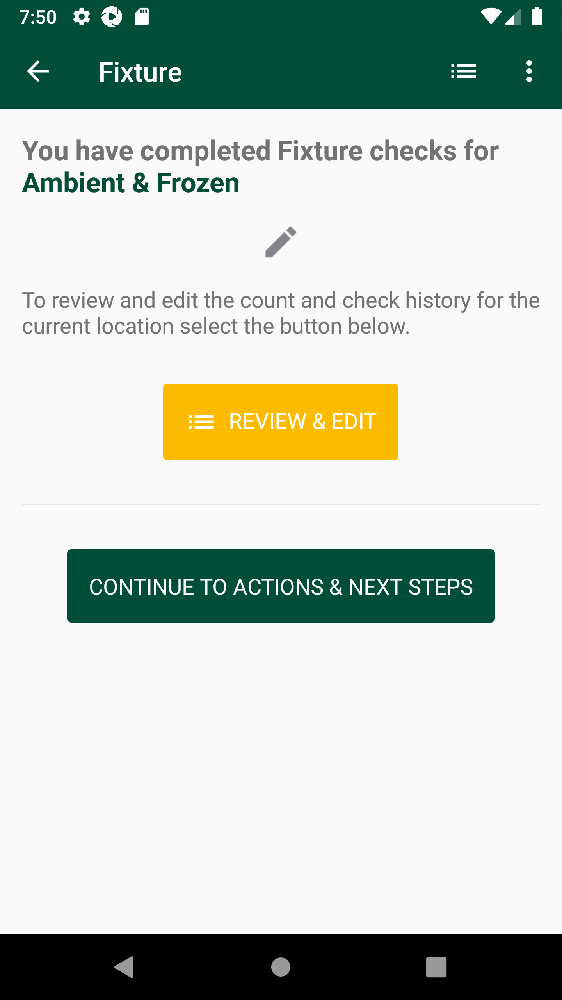
FailSMA-31447TC_01,06,11,16Verify user able to view Prompt at Location of DepartmentWhen I enter Username and Password for SMA Collegue userAnd I click on login button for SMAThen I click on 'stockMngmtText' on page 'HomePagePO_New'Then I click on "Prompted Counts"Then I click on "Fresh"Then I click on "Fixture"And I Verify Prompte is displayed at "Fixture"com.morrisons.common.action.Hook.afterScenario(io.cucumber.java.Scenario)PassSMA-31447TC_01,06,11,16Verify user able to view Prompt at Location of DepartmentWhen I enter Username and Password for SMA Collegue userAnd I click on login button for SMAThen I click on 'stockMngmtText' on page 'HomePagePO_New'Then I click on "Prompted Counts"Then I click on "Market Street"Then I click on "Fixture"And I Verify Prompte is displayed at "Fixture"FailSMA-31447TC_01,06,11,16Verify user able to view Prompt at Location of DepartmentWhen I enter Username and Password for SMA Collegue userAnd I click on login button for SMAThen I click on 'stockMngmtText' on page 'HomePagePO_New'Then I click on "Prompted Counts"Then I click on "Services"Then I click on "Fixture"And I Verify Prompte is displayed at "Fixture"com.morrisons.common.action.Hook.afterScenario(io.cucumber.java.Scenario)FailSMA-31447TC_02,07,12,17Verify user able to view at Location of Department 'location not completed' message and 'continue' buttonFailSMA-31447TC_02,07,12,17Verify user able to view at Location of Department 'location not completed' message and 'continue' buttonWhen I enter Username and Password for SMA Collegue userAnd I click on login button for SMAThen I click on 'stockMngmtText' on page 'HomePagePO_New'Then I click on "Prompted Counts"Then I click on "Ambient & Frozen"Then I click on "Off Shelf"And I Verify Prompt "Fixture location has not been completed." is displayed at "Off Shelf"com.morrisons.common.action.Hook.afterScenario(io.cucumber.java.Scenario)And I view and click on Button "CONTINUE TO FIXTURE"Step skippedAnd I Verify prompted item navigated to "Fixture"Step skippedFailSMA-31447TC_03,08,13,18 Verify user able to view at Location of Department 'location not completed' message and 'continue' buttonFailSMA-31447TC_03,08,13,18 Verify user able to view at Location of Department 'location not completed' message and 'continue' buttonWhen I enter Username and Password for SMA Collegue userAnd I click on login button for SMAThen I click on 'stockMngmtText' on page 'HomePagePO_New'Then I click on "Prompted Counts"Then I click on "Services"Then I click on "Petrol"And I Verify Prompt "Fixture location has not been completed." is displayed at "Petrol"com.morrisons.common.action.Hook.afterScenario(io.cucumber.java.Scenario)And I view and click on Button "CONTINUE TO FIXTURE"Step skippedAnd I Verify prompted item navigated to "Fixture"Step skippedFailSMA-31447TC_04,09,14,19Verify user able to view at Location of Department 'location not completed' message and 'continue' buttonFailSMA-31447TC_04,09,14,19Verify user able to view at Location of Department 'location not completed' message and 'continue' buttonWhen I enter Username and Password for SMA Collegue userAnd I click on login button for SMAThen I click on 'stockMngmtText' on page 'HomePagePO_New'Then I click on "Prompted Counts"Then I click on "Ambient & Frozen"Then I click on "Warehouse"And I Verify Prompt "Fixture location has not been completed." is displayed at "Warehouse"com.morrisons.common.action.Hook.afterScenario(io.cucumber.java.Scenario)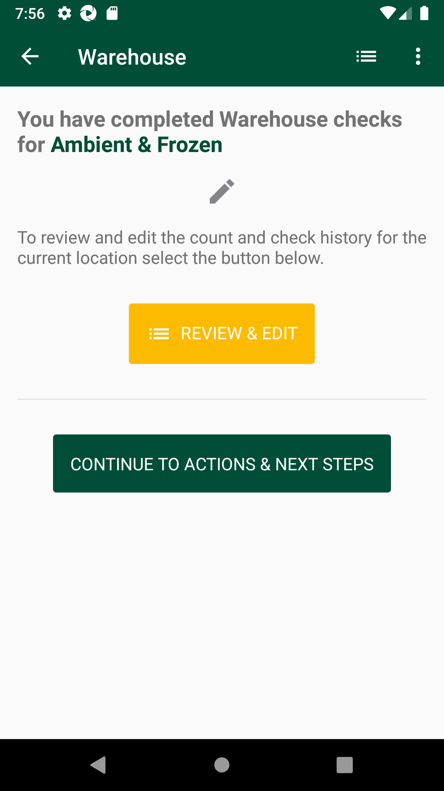
And I view and click on Button "CONTINUE TO FIXTURE"Step skippedAnd I Verify prompted item navigated to "Fixture"Step skippedFailSMA-31447TC_04,09,14,19Verify user able to view at Location of Department 'location not completed' message and 'continue' buttonWhen I enter Username and Password for SMA Collegue userAnd I click on login button for SMAThen I click on 'stockMngmtText' on page 'HomePagePO_New'Then I click on "Prompted Counts"Then I click on "Fresh"Then I click on "Warehouse"And I Verify Prompt "Fixture location has not been completed." is displayed at "Warehouse"com.morrisons.common.action.Hook.afterScenario(io.cucumber.java.Scenario)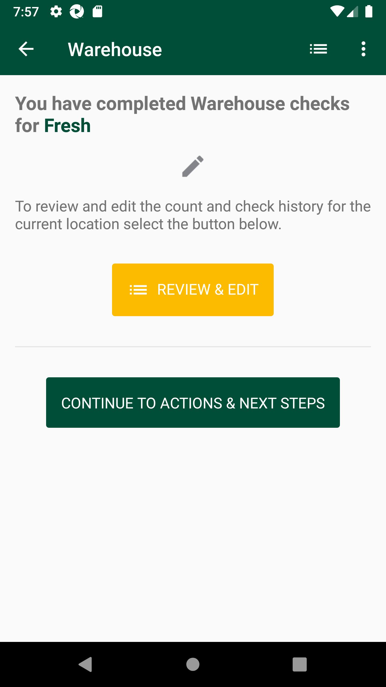
And I view and click on Button "CONTINUE TO FIXTURE"Step skippedAnd I Verify prompted item navigated to "Fixture"Step skippedPassSMA-31447TC_04,09,14,19Verify user able to view at Location of Department 'location not completed' message and 'continue' buttonWhen I enter Username and Password for SMA Collegue userAnd I click on login button for SMAThen I click on 'stockMngmtText' on page 'HomePagePO_New'Then I click on "Prompted Counts"Then I click on "Market Street"Then I click on "Warehouse"And I Verify Prompt "Fixture location has not been completed." is displayed at "Warehouse"And I view and click on Button "CONTINUE TO FIXTURE"And I Verify prompted item navigated to "Fixture"FailSMA-31447TC_04,09,14,19Verify user able to view at Location of Department 'location not completed' message and 'continue' buttonWhen I enter Username and Password for SMA Collegue userAnd I click on login button for SMAThen I click on 'stockMngmtText' on page 'HomePagePO_New'Then I click on "Prompted Counts"Then I click on "Services"Then I click on "Warehouse"And I Verify Prompt "Fixture location has not been completed." is displayed at "Warehouse"com.morrisons.common.action.Hook.afterScenario(io.cucumber.java.Scenario)And I view and click on Button "CONTINUE TO FIXTURE"Step skippedAnd I Verify prompted item navigated to "Fixture"Step skippedFailTC_US31448 Department_Location Verify user should able to view blank history when No item is actioned in Prompted CountFailTC_US31448 Department_Location Verify user should able to view blank history when No item is actioned in Prompted CountWhen I enter Username and Password for SMA Collegue userAnd I click on login button for SMAThen I click on 'stockMngmtText' on page 'HomePagePO_New'Then I click on "Prompted Counts"Then I click on "Ambient & Frozen"Then I click on "Fixture"And I Verify Prompte is displayed at "Fixture"com.morrisons.common.action.Hook.afterScenario(io.cucumber.java.Scenario)Then I click on icon "Show List"Step skippedAnd I see "Fixture History"Step skippedAnd I Verify Prompt "No Items Available" is displayed at "Fixture"Step skippedFailTC_US31448 Department_Location Verify user should able to view blank history when No item is actioned in Prompted CountWhen I enter Username and Password for SMA Collegue userAnd I click on login button for SMAThen I click on 'stockMngmtText' on page 'HomePagePO_New'Then I click on "Prompted Counts"Then I click on "Fresh"Then I click on "Fixture"And I Verify Prompte is displayed at "Fixture"com.morrisons.common.action.Hook.afterScenario(io.cucumber.java.Scenario)Then I click on icon "Show List"Step skippedAnd I see "Fixture History"Step skippedAnd I Verify Prompt "No Items Available" is displayed at "Fixture"Step skippedFailTC_US31448 Department_Location Verify user should able to view blank history when No item is actioned in Prompted CountWhen I enter Username and Password for SMA Collegue userAnd I click on login button for SMAThen I click on 'stockMngmtText' on page 'HomePagePO_New'Then I click on "Prompted Counts"Then I click on "Market Street"Then I click on "Fixture"And I Verify Prompte is displayed at "Fixture"Then I click on icon "Show List"com.morrisons.common.action.Hook.afterScenario(io.cucumber.java.Scenario)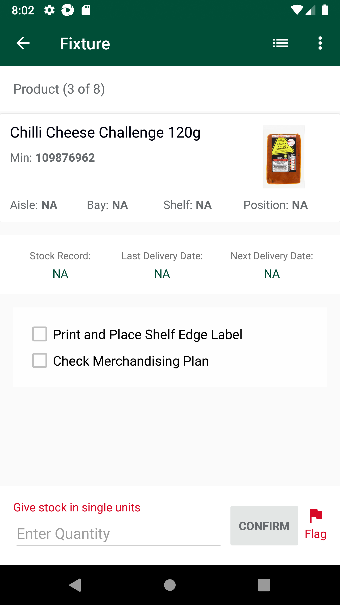
And I see "Fixture History"Step skippedAnd I Verify Prompt "No Items Available" is displayed at "Fixture"Step skippedFailTC_US31448 Department_Location Verify user should able to view blank history when No item is actioned in Prompted CountWhen I enter Username and Password for SMA Collegue userAnd I click on login button for SMAThen I click on 'stockMngmtText' on page 'HomePagePO_New'Then I click on "Prompted Counts"Then I click on "Services"Then I click on "Fixture"And I Verify Prompte is displayed at "Fixture"com.morrisons.common.action.Hook.afterScenario(io.cucumber.java.Scenario)Then I click on icon "Show List"Step skippedAnd I see "Fixture History"Step skippedAnd I Verify Prompt "No Items Available" is displayed at "Fixture"Step skippedFailTC_US31448 Department_Location Verify user should able to view blank history when no item is actioned in Prompted CountFailTC_US31448 Department_Location Verify user should able to view blank history when no item is actioned in Prompted CountWhen I enter Username and Password for SMA Collegue userAnd I click on login button for SMAThen I click on 'stockMngmtText' on page 'HomePagePO_New'Then I click on "Prompted Counts"Then I click on "Ambient & Frozen"Then I click on "Off Shelf"And I Verify Prompt "Fixture location has not been completed." is displayed at "Off Shelf"com.morrisons.common.action.Hook.afterScenario(io.cucumber.java.Scenario)And I see "CONTINUE TO FIXTURE"Step skippedThen I click on icon "Show List"Step skippedAnd I see "Off Shelf History"Step skippedAnd I Verify Prompt "No Items Available" is displayed at "Off Shelf"Step skippedFailTC_US31448 Department_Location Verify user should able to view blank history when no item is actioned in Prompted CountWhen I enter Username and Password for SMA Collegue userAnd I click on login button for SMAThen I click on 'stockMngmtText' on page 'HomePagePO_New'Then I click on "Prompted Counts"Then I click on "Ambient & Frozen"Then I click on "Warehouse"And I Verify Prompt "Fixture location has not been completed." is displayed at "Warehouse"com.morrisons.common.action.Hook.afterScenario(io.cucumber.java.Scenario)And I see "CONTINUE TO FIXTURE"Step skippedThen I click on icon "Show List"Step skippedAnd I see "Warehouse History"Step skippedAnd I Verify Prompt "No Items Available" is displayed at "Warehouse"Step skippedFailTC_US31448 Department_Location Verify user should able to view blank history when no item is actioned in Prompted CountWhen I enter Username and Password for SMA Collegue userAnd I click on login button for SMAThen I click on 'stockMngmtText' on page 'HomePagePO_New'Then I click on "Prompted Counts"Then I click on "Fresh"Then I click on "Warehouse"And I Verify Prompt "Fixture location has not been completed." is displayed at "Warehouse"com.morrisons.common.action.Hook.afterScenario(io.cucumber.java.Scenario)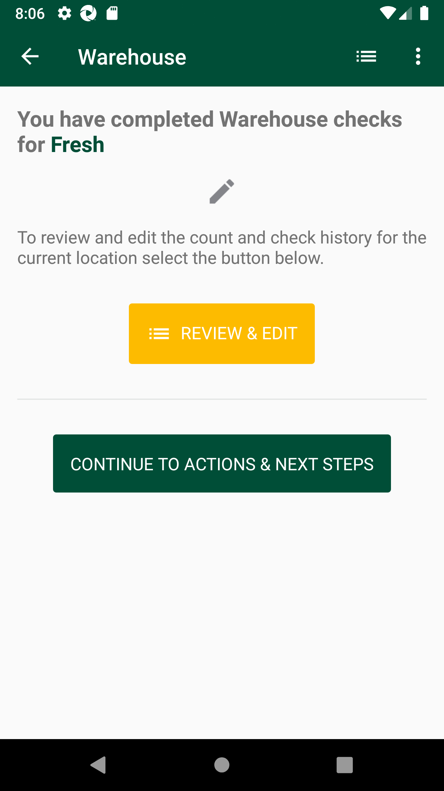
And I see "CONTINUE TO FIXTURE"Step skippedThen I click on icon "Show List"Step skippedAnd I see "Warehouse History"Step skippedAnd I Verify Prompt "No Items Available" is displayed at "Warehouse"Step skippedFailTC_US31448 Department_Location Verify user should able to view blank history when no item is actioned in Prompted CountWhen I enter Username and Password for SMA Collegue userAnd I click on login button for SMAThen I click on 'stockMngmtText' on page 'HomePagePO_New'Then I click on "Prompted Counts"Then I click on "Market Street"Then I click on "Warehouse"And I Verify Prompt "Fixture location has not been completed." is displayed at "Warehouse"And I see "CONTINUE TO FIXTURE"Then I click on icon "Show List"com.morrisons.common.action.Hook.afterScenario(io.cucumber.java.Scenario)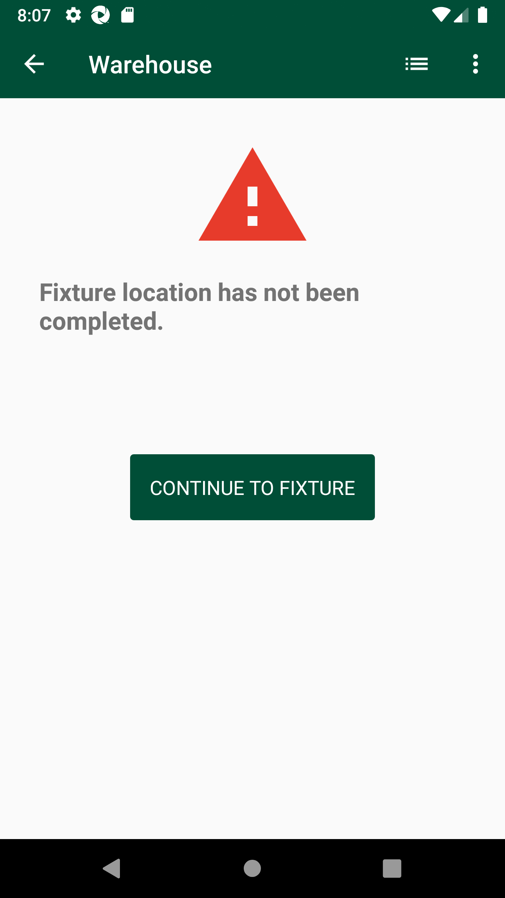
And I see "Warehouse History"Step skippedAnd I Verify Prompt "No Items Available" is displayed at "Warehouse"Step skippedFailTC_US31448 Department_Location Verify user should able to view blank history when no item is actioned in Prompted CountWhen I enter Username and Password for SMA Collegue userAnd I click on login button for SMAThen I click on 'stockMngmtText' on page 'HomePagePO_New'Then I click on "Prompted Counts"Then I click on "Services"Then I click on "Petrol"And I Verify Prompt "Fixture location has not been completed." is displayed at "Petrol"com.morrisons.common.action.Hook.afterScenario(io.cucumber.java.Scenario)And I see "CONTINUE TO FIXTURE"Step skippedThen I click on icon "Show List"Step skippedAnd I see "Petrol History"Step skippedAnd I Verify Prompt "No Items Available" is displayed at "Petrol"Step skippedFailTC_US31448 Department_Location Verify user should able to view blank history when no item is actioned in Prompted CountWhen I enter Username and Password for SMA Collegue userAnd I click on login button for SMAThen I click on 'stockMngmtText' on page 'HomePagePO_New'Then I click on "Prompted Counts"Then I click on "Services"Then I click on "Warehouse"And I Verify Prompt "Fixture location has not been completed." is displayed at "Warehouse"com.morrisons.common.action.Hook.afterScenario(io.cucumber.java.Scenario)And I see "CONTINUE TO FIXTURE"Step skippedThen I click on icon "Show List"Step skippedAnd I see "Warehouse History"Step skippedAnd I Verify Prompt "No Items Available" is displayed at "Warehouse"Step skippedFailTC_US31448 Verify user is allowed to edit from history on completion few items at Location of DepartmentFailTC_US31448 Verify user is allowed to edit from history on completion few items at Location of DepartmentWhen I enter Username and Password for SMA Collegue userAnd I click on login button for SMAThen I click on 'stockMngmtText' on page 'HomePagePO_New'Then I click on "Prompted Counts"Then I click on "Fresh"Then I click on "Fixture"And I enter "10"com.morrisons.common.action.Hook.afterScenario(io.cucumber.java.Scenario)Then I click on the Confirm ButtonStep skippedThen I click on icon "Show List"Step skippedAnd I see "Fixture History"Step skippedAnd I select item from history list to editStep skippedAnd I click on Edit buttonStep skippedAnd I enter "200"Step skippedThen I click on the Confirm ButtonStep skippedAnd I verify "Fixture History" count Updated same as "200"Step skippedFailSMA-31447TC_21,22,23,24Verify user able to complete all prompts at Location for DepartmentFailSMA-31447TC_21,22,23,24Verify user able to complete all prompts at Location for DepartmentWhen I enter Username and Password for SMA Collegue userAnd I click on login button for SMAThen I click on 'stockMngmtText' on page 'HomePagePO_New'Then I click on "Prompted Counts"Then I click on "Ambient & Frozen"Then I click on "Fixture"And I verify Prompt Screen all detailscom.morrisons.common.action.Hook.afterScenario(io.cucumber.java.Scenario)And I enter "100"Step skippedAnd I mark product as flagStep skippedAnd I Verify Prompt "You have completed Fixture checks for Ambient & Frozen" is displayed at "Fixture"Step skippedAnd I click on Back ButtonStep skippedAnd I verify status as "COMPLETE"Step skippedFailSMA-31447TC_25,26,27,28 Verify user able to complete all prompts at Location for DepartmentFailSMA-31447TC_25,26,27,28 Verify user able to complete all prompts at Location for DepartmentWhen I enter Username and Password for SMA Collegue userAnd I click on login button for SMAThen I click on 'stockMngmtText' on page 'HomePagePO_New'Then I click on "Prompted Counts"Then I click on "Fresh"Then I click on "Fixture"And I verify Prompt Screen all detailscom.morrisons.common.action.Hook.afterScenario(io.cucumber.java.Scenario)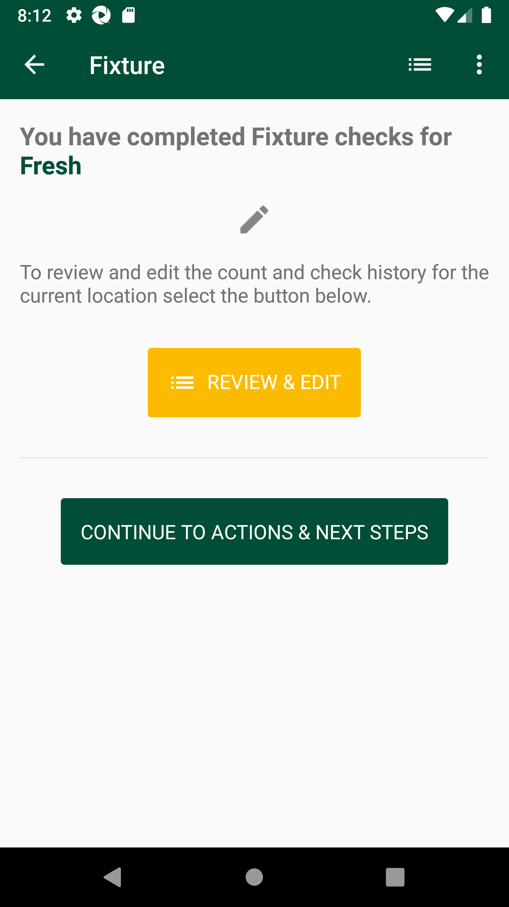
And I enter "999"Step skippedThen I click on the Confirm ButtonStep skippedAnd I complete all prompted itemsStep skippedAnd I Verify Prompt "You have completed Fixture checks for Fresh" is displayed at "Fixture"Step skippedAnd I click on Back ButtonStep skippedAnd I verify status as "COMPLETE"Step skippedFailSMA-31447TC_25,26,27,28 Verify user able to complete all prompts at Location for DepartmentWhen I enter Username and Password for SMA Collegue userAnd I click on login button for SMAThen I click on 'stockMngmtText' on page 'HomePagePO_New'Then I click on "Prompted Counts"Then I click on "Fresh"Then I click on "Warehouse"And I verify Prompt Screen all detailscom.morrisons.common.action.Hook.afterScenario(io.cucumber.java.Scenario)And I enter "999"Step skippedThen I click on the Confirm ButtonStep skippedAnd I complete all prompted itemsStep skippedAnd I Verify Prompt "You have completed Warehouse checks for Fresh" is displayed at "Warehouse"Step skippedAnd I click on Back ButtonStep skippedAnd I verify status as "COMPLETE"Step skippedFailSMA-31447TC_29,30,31,32 Verify user able to complete all prompts at Location for DepartmentFailSMA-31447TC_29,30,31,32 Verify user able to complete all prompts at Location for DepartmentWhen I enter Username and Password for SMA Collegue userAnd I click on login button for SMAThen I click on 'stockMngmtText' on page 'HomePagePO_New'Then I click on "Prompted Counts"Then I click on "Market Street"Then I click on "Fixture"And I verify Prompt Screen all detailsAnd I enter "999"Then I click on the Confirm ButtonAnd I enter "999"Then I click on the Confirm ButtonAnd I Verify Prompt "You have completed Fixture checks for Market Street" is displayed at "Fixture"com.morrisons.common.action.Hook.afterScenario(io.cucumber.java.Scenario)And I click on Back ButtonStep skippedAnd I verify status as "COMPLETE"Step skippedFailSMA-31447TC_29,30,31,32 Verify user able to complete all prompts at Location for DepartmentWhen I enter Username and Password for SMA Collegue userAnd I click on login button for SMAThen I click on 'stockMngmtText' on page 'HomePagePO_New'Then I click on "Prompted Counts"Then I click on "Market Street"Then I click on "Warehouse"And I verify Prompt Screen all detailsAnd I enter "999"Then I click on the Confirm ButtonAnd I enter "999"com.morrisons.common.action.Hook.afterScenario(io.cucumber.java.Scenario)Then I click on the Confirm ButtonStep skippedAnd I Verify Prompt "You have completed Warehouse checks for Market Street" is displayed at "Warehouse"Step skippedAnd I click on Back ButtonStep skippedAnd I verify status as "COMPLETE"Step skippedPassSMA-31447TC_33,34,35,36 Verify user able to flag all prompts at Location for DepartmentPassSMA-31447TC_33,34,35,36 Verify user able to flag all prompts at Location for DepartmentWhen I enter Username and Password for SMA Collegue userAnd I click on login button for SMAThen I click on 'stockMngmtText' on page 'HomePagePO_New'Then I click on "Prompted Counts"Then I click on "Services"Then I click on "Fixture"And I mark product as flagAnd I Verify Prompt "You have completed Fixture checks for Services" is displayed at "Fixture"And I click on Back ButtonAnd I verify status as "COMPLETE"FailSMA31446 TC_02 Department_Location Verify user is allow to edit any prompted item by updating stock counts or adding actionPassSMA31446 TC_02 Department_Location Verify user is allow to edit any prompted item by updating stock counts or adding actionWhen I enter Username and Password for SMA Collegue userAnd I click on login button for SMAThen I click on 'stockMngmtText' on page 'HomePagePO_New'Then I click on "Prompted Counts"Then I click on "Fresh"Then I click on "Fixture"Then I click on "REVIEW & EDIT"And I verify edit is allowed by updating Stock "920" at "Fixture"FailSMA31446 TC_02 Department_Location Verify user is allow to edit any prompted item by updating stock counts or adding actionWhen I enter Username and Password for SMA Collegue userAnd I click on login button for SMAThen I click on 'stockMngmtText' on page 'HomePagePO_New'Then I click on "Prompted Counts"Then I click on "Market Street"Then I click on "Fixture"Then I click on "REVIEW & EDIT"com.morrisons.common.action.Hook.afterScenario(io.cucumber.java.Scenario)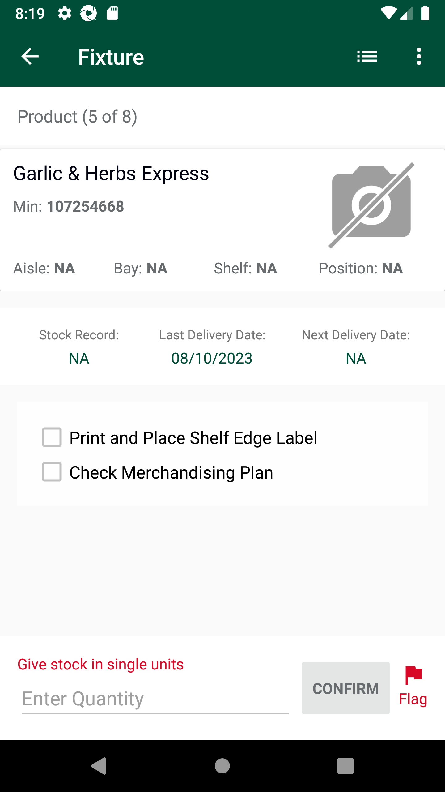
And I verify edit is allowed by updating Stock "920" at "Fixture"Step skippedFailSMA31446 TC_03 Department_Location Verify user unflagged items should be allowed to update count or action from REVIEW & EDIT screenPassSMA31446 TC_03 Department_Location Verify user unflagged items should be allowed to update count or action from REVIEW & EDIT screenWhen I enter Username and Password for SMA Collegue userAnd I click on login button for SMAThen I click on 'stockMngmtText' on page 'HomePagePO_New'Then I click on "Prompted Counts"Then I click on "Fresh"Then I click on "Fixture"Then I click on "REVIEW & EDIT"And I verify unflagged items allowed to update count or actionFailSMA31446 TC_03 Department_Location Verify user unflagged items should be allowed to update count or action from REVIEW & EDIT screenWhen I enter Username and Password for SMA Collegue userAnd I click on login button for SMAThen I click on 'stockMngmtText' on page 'HomePagePO_New'Then I click on "Prompted Counts"Then I click on "Market Street"Then I click on "Fixture"Then I click on "REVIEW & EDIT"com.morrisons.common.action.Hook.afterScenario(io.cucumber.java.Scenario)And I verify unflagged items allowed to update count or actionStep skippedFailSMA31446 TC_04 Department_Location Verify user Flagged items are allowed add action with reflagging in REVIEW & EDIT screenFailSMA31446 TC_04 Department_Location Verify user Flagged items are allowed add action with reflagging in REVIEW & EDIT screenWhen I enter Username and Password for SMA Collegue userAnd I click on login button for SMAThen I click on 'stockMngmtText' on page 'HomePagePO_New'Then I click on "Prompted Counts"Then I click on "Services"Then I click on "Fixture"Then I click on "REVIEW & EDIT"And I verify flagged items are allowed to add action with reflaggingStep undefinedFailSMA31446 TC_04 Department_Location Verify user Flagged items are allowed add action with reflagging in REVIEW & EDIT screenWhen I enter Username and Password for SMA Collegue userAnd I click on login button for SMAThen I click on 'stockMngmtText' on page 'HomePagePO_New'Then I click on "Prompted Counts"Then I click on "Services"Then I click on "Warehouse"Then I click on "REVIEW & EDIT"And I verify flagged items are allowed to add action with reflaggingStep undefinedPassSMA31440TC_01 Location Verify user Able to view Summary tab throughout the day irrespective of timePassSMA31440TC_01 Location Verify user Able to view Summary tab throughout the day irrespective of timeWhen I enter Username and Password for SMA Collegue userAnd I click on login button for SMAThen I click on 'stockMngmtText' on page 'HomePagePO_New'Then I click on "Prompted Counts"And I verify "Summary" is displayedFailSMA31440TC_02 Location Verify user Able to view "Total Approvals" tab with total count of approvalsFailSMA31440TC_02 Location Verify user Able to view "Total Approvals" tab with total count of approvalsWhen I enter Username and Password for SMA Collegue usercom.morrisons.common.action.Hook.afterScenario(io.cucumber.java.Scenario)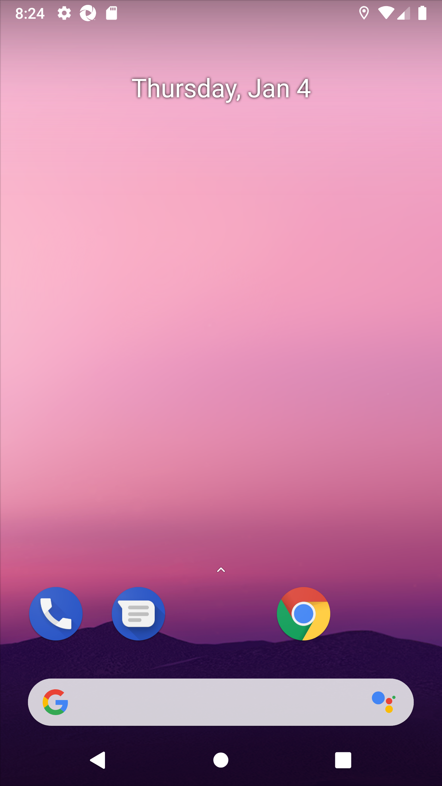
And I click on login button for SMAStep skippedThen I click on 'stockMngmtText' on page 'HomePagePO_New'Step skippedThen I click on "Prompted Counts"Step skippedAnd I verify "Summary" is displayedStep skippedThen I click on "Summary"Step skippedAnd I verify Summary screen UIStep skippedAnd I verify "Total Approvals" is displayedStep skippedFailSMA31440TC_03 Location Verify user Able to view department list with its outstanding count i.e., 1 of 2 (Amber colour), 2 of 2 (Green Colour)FailSMA31440TC_03 Location Verify user Able to view department list with its outstanding count i.e., 1 of 2 (Amber colour), 2 of 2 (Green Colour)When I enter Username and Password for SMA Collegue userAnd I click on login button for SMAThen I click on 'stockMngmtText' on page 'HomePagePO_New'Then I click on "Prompted Counts"And I verify Location is displayedStep undefinedThen I click on "Summary"Step skippedAnd I verify Summary screen UIStep skippedAnd I view and click on Button "Total Approvals"Step skippedAnd I verify Department list of outstanding count is displayedStep skippedPassSMA31440TC_04 Location Verify user Able to view total items list count at the top which needs manager approvalPassSMA31440TC_04 Location Verify user Able to view total items list count at the top which needs manager approvalWhen I enter Username and Password for SMA Manager userAnd I click on login button for SMAThen I click on 'stockMngmtText' on page 'HomePagePO_New'Then I click on "Prompted Counts"And I verify "Summary" is displayedThen I click on "Summary"And I verify Summary screen UIAnd I view and click on Button "Total Approvals"And I verify Department list of outstanding count is displayedPassSMA31440TC_05 Location Verify user Able to view list of prompted items which requires manager approval i.e. Adjustment value>=200 poundsPassSMA31440TC_05 Location Verify user Able to view list of prompted items which requires manager approval i.e. Adjustment value>=200 poundsWhen I enter Username and Password for SMA Manager userAnd I click on login button for SMAThen I click on 'stockMngmtText' on page 'HomePagePO_New'Then I click on "Prompted Counts"And I verify "Summary" is displayedThen I click on "Summary"And I verify Summary screen UIAnd I view and click on Button "Total Approvals"And I verify Department list of outstanding count is displayedThen I click on "Market Street"And I verify item which need manager approvalsFailSMA31440TC_06 Location Verify user Able to approve prompted item from the listFailSMA31440TC_06 Location Verify user Able to approve prompted item from the listWhen I enter Username and Password for SMA Manager userAnd I click on login button for SMAThen I click on 'stockMngmtText' on page 'HomePagePO_New'Then I click on "Prompted Counts"And I verify "Summary" is displayedThen I click on "Summary"And I verify Summary screen UIAnd I view and click on Button "Total Approvals"And I verify Department list of outstanding count is displayedThen I click on "Fresh"And I verify item which need manager approvalsAnd I select and Approve prompted item from listcom.morrisons.common.action.Hook.afterScenario(io.cucumber.java.Scenario)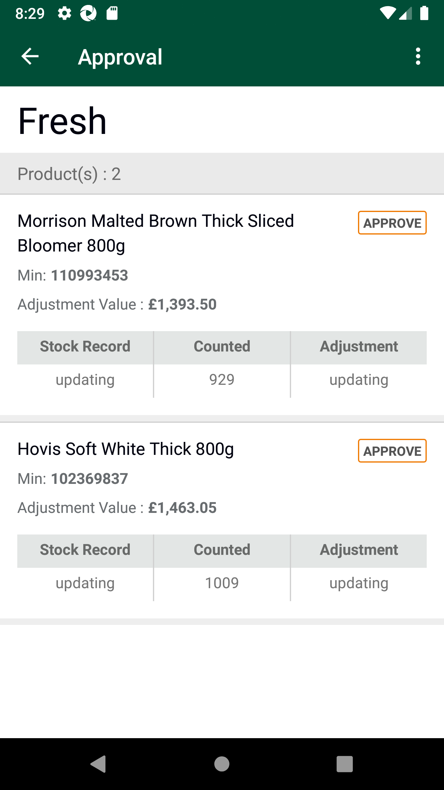
FailSMA31440TC_07 Location Verify user Allow to edit count at any location before approvalFailSMA31440TC_07 Location Verify user Allow to edit count at any location before approvalWhen I enter Username and Password for SMA Manager userAnd I click on login button for SMAThen I click on 'stockMngmtText' on page 'HomePagePO_New'Then I click on "Prompted Counts"And I verify "Summary" is displayedThen I click on "Summary"And I verify Summary screen UIAnd I view and click on Button "Total Approvals"And I verify Department list of outstanding count is displayedThen I click on "Market Street"And I verify item which need manager approvalsAnd I edit count of any "Fixture" before approvalcom.morrisons.common.action.Hook.afterScenario(io.cucumber.java.Scenario)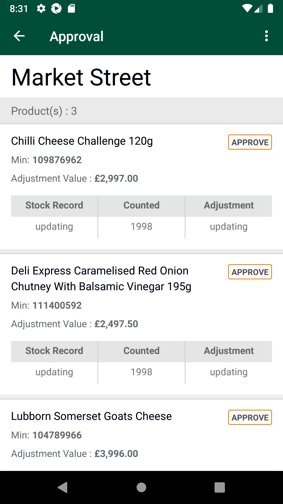
FailSMA31440TC_09 Location Verify user Able to view the approved items at the bottom after approvalFailSMA31440TC_09 Location Verify user Able to view the approved items at the bottom after approvalWhen I enter Username and Password for SMA Collegue userAnd I click on login button for SMAThen I click on 'stockMngmtText' on page 'HomePagePO_New'Then I click on "Prompted Counts"And I verify "Summary" is displayedThen I click on "Summary"And I verify Summary screen UIAnd I view and click on Button "Total Approvals"And I verify Department list of outstanding count is displayedThen I click on "Fresh"And I verify approved items displayedcom.morrisons.common.action.Hook.afterScenario(io.cucumber.java.Scenario)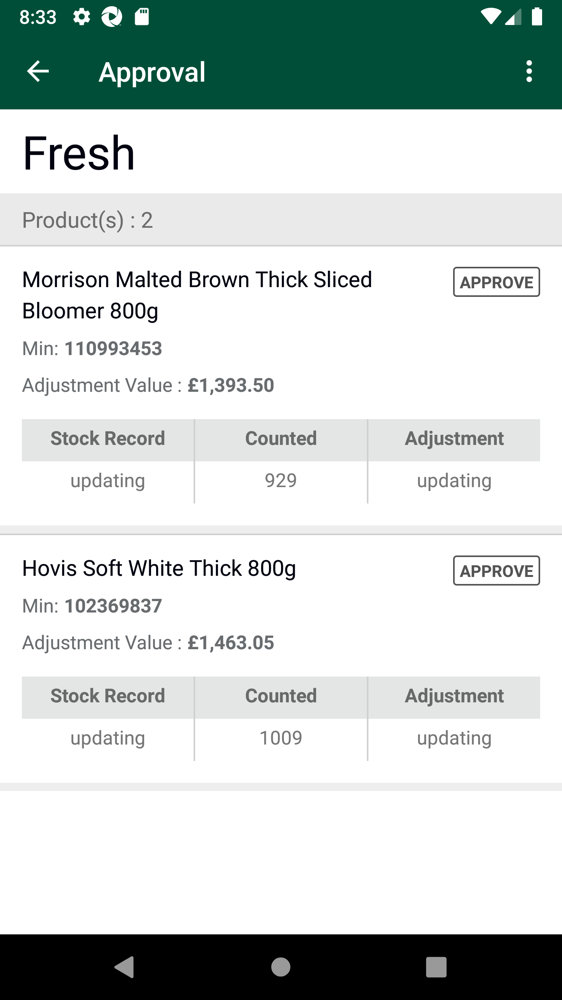
PassSMA31440TC_11 Location Verify After 9.45AM item details display in View ModePassSMA31440TC_11 Location Verify After 9.45AM item details display in View ModeWhen I enter Username and Password for SMA Manager userAnd I click on login button for SMAThen I click on 'stockMngmtText' on page 'HomePagePO_New'Then I click on "Prompted Counts"And I verify "Summary" is displayedThen I click on "Summary"And I verify Summary screen UIAnd I view and click on Button "Total Approvals"And I verify Department list of outstanding count is displayedThen I click on "Fresh"And I verify item details display in View ModeFailSMA31437TC_01Verify Summary Card details for Department_Location department level reviewFailSMA31437TC_01Verify Summary Card details for Department_Location department level reviewWhen I enter Username and Password for SMA Collegue userAnd I click on login button for SMAThen I click on 'stockMngmtText' on page 'HomePagePO_New'Then I click on "Prompted Counts"And I verify "Summary" is displayedThen I click on "Summary"And I verify Summary screen UIThen I select Summary Card for "Fresh"And I verify all the list of products with Total count at the top of the screenAnd I verify product list item description, MIN, Stock count, Adjustment valueAnd I verify Adjustment value calculation agaist current stock and updated countcom.morrisons.common.action.Hook.afterScenario(io.cucumber.java.Scenario)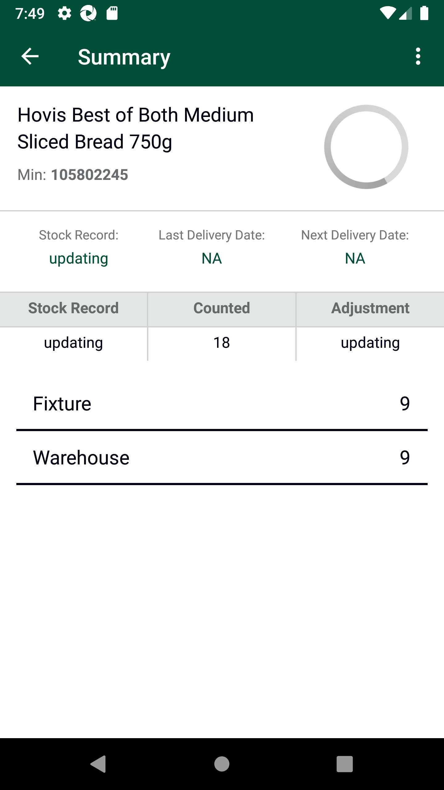
And I verify updated Adjustment back on main screen after count is updated at department levelStep skipped -
Verify Prompted Count functionality.(User story - SMA-28254, SMA-28253, SMA-28252, SMA-31421, SMA-31414, SMA-31425, SMA-31422)
7:33:08 PM / 02:53:30:155 Fail
Verify Prompted Count functionality.(User story - SMA-28254, SMA-28253, SMA-28252, SMA-31421, SMA-31414, SMA-31425, SMA-31422)
01.04.2024 7:33:08 PM 01.04.2024 10:26:38 PM 02:53:30:155 · #test-id=1,169@store_walk @Newprompted_count @regressionFailSMA-31414_Department_Location_Verify user is able to see one prompted item at a time.FailSMA-31414_Department_Location_Verify user is able to see one prompted item at a time.When I enter Username and Password for SMA Collegue userAnd I click on login button for SMAThen I click on 'stockMngmtText' on page 'HomePagePO_New'Then I click on "Prompted Counts"Then I click on "Ambient & Frozen"Then I click on "Fixture"And I verify one prompted item is displayedcom.morrisons.common.action.Hook.afterScenario(io.cucumber.java.Scenario)FailSMA-31414_Department_Location_Verify user is able to see one prompted item at a time.When I enter Username and Password for SMA Collegue userAnd I click on login button for SMAThen I click on 'stockMngmtText' on page 'HomePagePO_New'Then I click on "Prompted Counts"Then I click on "Fresh"Then I click on "Fixture"And I verify one prompted item is displayedcom.morrisons.common.action.Hook.afterScenario(io.cucumber.java.Scenario)FailSMA-31414_Department_Location_Verify user is able to see one prompted item at a time.When I enter Username and Password for SMA Collegue userAnd I click on login button for SMAThen I click on 'stockMngmtText' on page 'HomePagePO_New'Then I click on "Prompted Counts"Then I click on "Market Street"Then I click on "Fixture"And I verify one prompted item is displayedcom.morrisons.common.action.Hook.afterScenario(io.cucumber.java.Scenario)FailSMA-31414_Department_Location_Verify user is able to see one prompted item at a time.When I enter Username and Password for SMA Collegue userAnd I click on login button for SMAThen I click on 'stockMngmtText' on page 'HomePagePO_New'Then I click on "Prompted Counts"Then I click on "Services"Then I click on "Fixture"And I verify one prompted item is displayedcom.morrisons.common.action.Hook.afterScenario(io.cucumber.java.Scenario)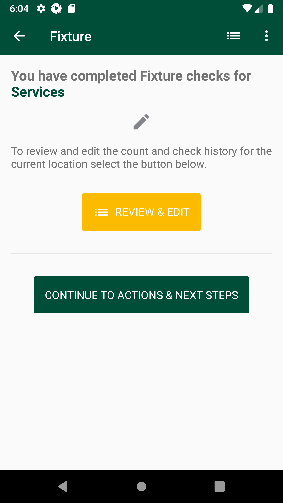
FailSMA-31414_Department_Location_Verify user is able to see one prompted item at a time.When I enter Username and Password for SMA Collegue userAnd I click on login button for SMAThen I click on 'stockMngmtText' on page 'HomePagePO_New'Then I click on "Prompted Counts"Then I click on "Ambient & Frozen"Then I click on "Off Shelf"And I verify one prompted item is displayedcom.morrisons.common.action.Hook.afterScenario(io.cucumber.java.Scenario)FailSMA-31414_Department_Location_Verify user is able to see one prompted item at a time.When I enter Username and Password for SMA Collegue userAnd I click on login button for SMAThen I click on 'stockMngmtText' on page 'HomePagePO_New'Then I click on "Prompted Counts"Then I click on "Ambient & Frozen"Then I click on "Petrol"And I verify one prompted item is displayedcom.morrisons.common.action.Hook.afterScenario(io.cucumber.java.Scenario)FailSMA-31414_Department_Location_Verify user is able to see one prompted item at a time.When I enter Username and Password for SMA Collegue userAnd I click on login button for SMAThen I click on 'stockMngmtText' on page 'HomePagePO_New'Then I click on "Prompted Counts"Then I click on "Fresh"Then I click on "Off Shelf"And I verify one prompted item is displayedcom.morrisons.common.action.Hook.afterScenario(io.cucumber.java.Scenario)FailSMA-31414_Department_Location_Verify user is able to see one prompted item at a time.When I enter Username and Password for SMA Collegue usercom.morrisons.common.action.Hook.afterScenario(io.cucumber.java.Scenario)And I click on login button for SMAStep skippedThen I click on 'stockMngmtText' on page 'HomePagePO_New'Step skippedThen I click on "Prompted Counts"Step skippedThen I click on "Fresh"Step skippedThen I click on "Petrol"Step skippedAnd I verify one prompted item is displayedStep skippedFailSMA-31414_Department_Location_Verify user is able to see one prompted item at a time.When I enter Username and Password for SMA Collegue userAnd I click on login button for SMAThen I click on 'stockMngmtText' on page 'HomePagePO_New'Then I click on "Prompted Counts"Then I click on "Market Street"Then I click on "Off Shelf"And I verify one prompted item is displayedcom.morrisons.common.action.Hook.afterScenario(io.cucumber.java.Scenario)FailSMA-31414_Department_Location_Verify user is able to see one prompted item at a time.When I enter Username and Password for SMA Collegue usercom.morrisons.common.action.Hook.afterScenario(io.cucumber.java.Scenario)And I click on login button for SMAStep skippedThen I click on 'stockMngmtText' on page 'HomePagePO_New'Step skippedThen I click on "Prompted Counts"Step skippedThen I click on "Market Street"Step skippedThen I click on "Petrol"Step skippedAnd I verify one prompted item is displayedStep skippedFailSMA-31414_Department_Location_Verify user is able to see one prompted item at a time.When I enter Username and Password for SMA Collegue userAnd I click on login button for SMAThen I click on 'stockMngmtText' on page 'HomePagePO_New'Then I click on "Prompted Counts"Then I click on "Services"Then I click on "Off Shelf"And I verify one prompted item is displayedcom.morrisons.common.action.Hook.afterScenario(io.cucumber.java.Scenario)FailSMA-31414_Department_Location_Verify user is able to see one prompted item at a time.When I enter Username and Password for SMA Collegue userAnd I click on login button for SMAThen I click on 'stockMngmtText' on page 'HomePagePO_New'Then I click on "Prompted Counts"Then I click on "Services"Then I click on "Petrol"And I verify one prompted item is displayedcom.morrisons.common.action.Hook.afterScenario(io.cucumber.java.Scenario)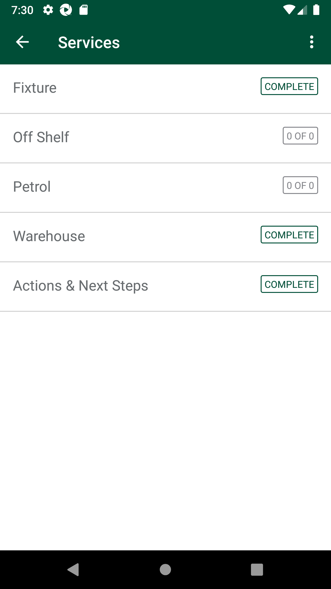
FailSMA-31414_Department_Location_Verify user is able to see one prompted item at a time.When I enter Username and Password for SMA Collegue userAnd I click on login button for SMAThen I click on 'stockMngmtText' on page 'HomePagePO_New'Then I click on "Prompted Counts"Then I click on "Ambient & Frozen"Then I click on "Warehouse"And I verify one prompted item is displayedcom.morrisons.common.action.Hook.afterScenario(io.cucumber.java.Scenario)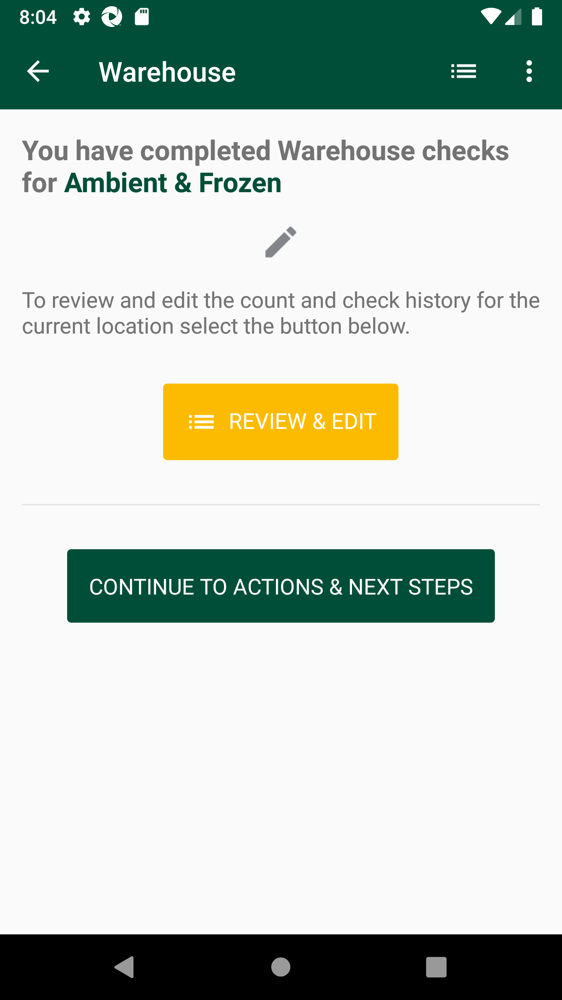
FailSMA-31414_Department_Location_Verify user is able to see one prompted item at a time.When I enter Username and Password for SMA Collegue userAnd I click on login button for SMAThen I click on 'stockMngmtText' on page 'HomePagePO_New'Then I click on "Prompted Counts"Then I click on "Fresh"Then I click on "Warehouse"And I verify one prompted item is displayedcom.morrisons.common.action.Hook.afterScenario(io.cucumber.java.Scenario)FailSMA-31414_Department_Location_Verify user is able to see one prompted item at a time.When I enter Username and Password for SMA Collegue userAnd I click on login button for SMAThen I click on 'stockMngmtText' on page 'HomePagePO_New'Then I click on "Prompted Counts"Then I click on "Market Street"Then I click on "Warehouse"And I verify one prompted item is displayedcom.morrisons.common.action.Hook.afterScenario(io.cucumber.java.Scenario)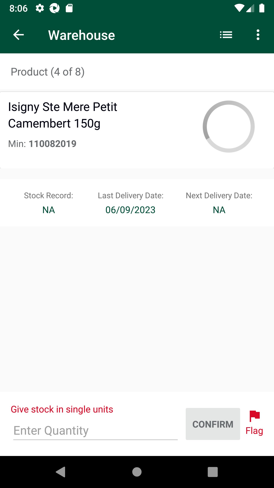
FailSMA-31414_Department_Location_Verify user is able to see one prompted item at a time.When I enter Username and Password for SMA Collegue userAnd I click on login button for SMAThen I click on 'stockMngmtText' on page 'HomePagePO_New'Then I click on "Prompted Counts"Then I click on "Services"Then I click on "Warehouse"And I verify one prompted item is displayedcom.morrisons.common.action.Hook.afterScenario(io.cucumber.java.Scenario)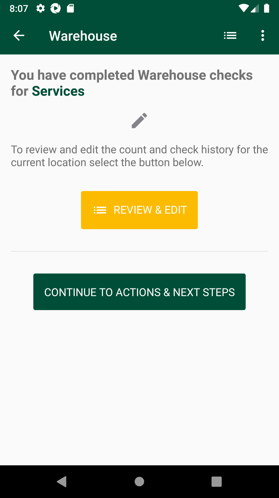
PassSMA-31430_Department_Verify Prompted item as Completed.PassSMA-31430_Department_Verify Prompted item as Completed.When I enter Username and Password for SMA Collegue userAnd I click on login button for SMAThen I click on 'stockMngmtText' on page 'HomePagePO_New'Then I click on "Prompted Counts"Then I click on "Ambient & Frozen"Then I click on "Actions & Next Steps"Then I verify Action & Next steps screen is displayedAnd I verify Merchandising action tile is displayed on Action & Next steps pageAnd I verify Print & Place Labels action tile is displayed on Action & Next steps pageAnd I verify Merchandising action with count Zero when no action is capturedAnd I verify Print and Place Labels with count Zero when no action is capturedPassSMA-31430_Department_Verify Prompted item as Completed.When I enter Username and Password for SMA Collegue userAnd I click on login button for SMAThen I click on 'stockMngmtText' on page 'HomePagePO_New'Then I click on "Prompted Counts"Then I click on "Fresh"Then I click on "Actions & Next Steps"Then I verify Action & Next steps screen is displayedAnd I verify Merchandising action tile is displayed on Action & Next steps pageAnd I verify Print & Place Labels action tile is displayed on Action & Next steps pageAnd I verify Merchandising action with count Zero when no action is capturedAnd I verify Print and Place Labels with count Zero when no action is capturedPassSMA-31430_Department_Verify Prompted item as Completed.When I enter Username and Password for SMA Collegue userAnd I click on login button for SMAThen I click on 'stockMngmtText' on page 'HomePagePO_New'Then I click on "Prompted Counts"Then I click on "Market Street"Then I click on "Actions & Next Steps"Then I verify Action & Next steps screen is displayedAnd I verify Merchandising action tile is displayed on Action & Next steps pageAnd I verify Print & Place Labels action tile is displayed on Action & Next steps pageAnd I verify Merchandising action with count Zero when no action is capturedAnd I verify Print and Place Labels with count Zero when no action is capturedPassSMA-31430_Department_Verify Prompted item as Completed.When I enter Username and Password for SMA Collegue userAnd I click on login button for SMAThen I click on 'stockMngmtText' on page 'HomePagePO_New'Then I click on "Prompted Counts"Then I click on "Services"Then I click on "Actions & Next Steps"Then I verify Action & Next steps screen is displayedAnd I verify Merchandising action tile is displayed on Action & Next steps pageAnd I verify Print & Place Labels action tile is displayed on Action & Next steps pageAnd I verify Merchandising action with count Zero when no action is capturedAnd I verify Print and Place Labels with count Zero when no action is capturedFailSMA-31421_Department_Location_Verify labels preference should be displayed as Default, A4P White POS and Medium White POS.FailSMA-31421_Department_Location_Verify labels preference should be displayed as Default, A4P White POS and Medium White POS.When I enter Username and Password for SMA Collegue userAnd I click on login button for SMAThen I click on 'stockMngmtText' on page 'HomePagePO_New'Then I click on "Prompted Counts"Then I click on "Ambient & Frozen"Then I click on "Fixture"And I verify "Print and Place Shelf Edge Label" Action label is displayedcom.morrisons.common.action.Hook.afterScenario(io.cucumber.java.Scenario)Then I click on "Print and Place Shelf Edge Label" Action labelStep skippedAnd I enter qty "5" and click on Confirm buttonStep skippedAnd I verify Request Label screen UIStep skippedAnd I verify "Default", "A4P White POS" and "Medium White POS" labels are displayedStep skippedFailSMA-31421_Department_Location_Verify labels preference should be displayed as Default, A4P White POS and Medium White POS.When I enter Username and Password for SMA Collegue userAnd I click on login button for SMAThen I click on 'stockMngmtText' on page 'HomePagePO_New'Then I click on "Prompted Counts"Then I click on "Fresh"Then I click on "Fixture"And I verify "Print and Place Shelf Edge Label" Action label is displayedcom.morrisons.common.action.Hook.afterScenario(io.cucumber.java.Scenario)Then I click on "Print and Place Shelf Edge Label" Action labelStep skippedAnd I enter qty "5" and click on Confirm buttonStep skippedAnd I verify Request Label screen UIStep skippedAnd I verify "Medium White Label Bakery", "Medium White No Price Label" and "A4P Bakery POS" labels are displayedStep skippedPassSMA-31421_Department_Location_Verify labels preference should be displayed as Default, A4P White POS and Medium White POS.When I enter Username and Password for SMA Collegue userAnd I click on login button for SMAThen I click on 'stockMngmtText' on page 'HomePagePO_New'Then I click on "Prompted Counts"Then I click on "Market Street"Then I click on "Fixture"And I verify "Print and Place Shelf Edge Label" Action label is displayedThen I click on "Print and Place Shelf Edge Label" Action labelAnd I enter qty "5" and click on Confirm buttonAnd I verify Request Label screen UIAnd I verify "Default", "A4P White POS" and "Medium White POS" labels are displayedFailSMA-31421_Department_Location_Verify labels preference should be displayed as Default, A4P White POS and Medium White POS.When I enter Username and Password for SMA Collegue userAnd I click on login button for SMAThen I click on 'stockMngmtText' on page 'HomePagePO_New'Then I click on "Prompted Counts"Then I click on "Services"Then I click on "Fixture"And I verify "Print and Place Shelf Edge Label" Action label is displayedcom.morrisons.common.action.Hook.afterScenario(io.cucumber.java.Scenario)Then I click on "Print and Place Shelf Edge Label" Action labelStep skippedAnd I enter qty "5" and click on Confirm buttonStep skippedAnd I verify Request Label screen UIStep skippedAnd I verify "Default", "A4P White POS" and "Medium White POS" labels are displayedStep skippedFailSMA-31421_Department_Location_Verify labels preference should be displayed as Default, A4P White POS and Medium White POS.When I enter Username and Password for SMA Collegue userAnd I click on login button for SMAThen I click on 'stockMngmtText' on page 'HomePagePO_New'Then I click on "Prompted Counts"Then I click on "Ambient & Frozen"Then I click on "Off Shelf"And I verify "Print and Place Shelf Edge Label" Action label is displayedcom.morrisons.common.action.Hook.afterScenario(io.cucumber.java.Scenario) Then I click on "Print and Place Shelf Edge Label" Action labelStep skippedAnd I enter qty "5" and click on Confirm buttonStep skippedAnd I verify Request Label screen UIStep skippedAnd I verify "
Then I click on "Print and Place Shelf Edge Label" Action labelStep skippedAnd I enter qty "5" and click on Confirm buttonStep skippedAnd I verify Request Label screen UIStep skippedAnd I verify "", " " and " " labels are displayed Step skippedFailSMA-31421_Department_Location_Verify labels preference should be displayed as Default, A4P White POS and Medium White POS.When I enter Username and Password for SMA Collegue userAnd I click on login button for SMAThen I click on 'stockMngmtText' on page 'HomePagePO_New'Then I click on "Prompted Counts"Then I click on "Ambient & Frozen"Then I click on "Petrol"And I verify "Print and Place Shelf Edge Label" Action label is displayedcom.morrisons.common.action.Hook.afterScenario(io.cucumber.java.Scenario)Then I click on "Print and Place Shelf Edge Label" Action labelStep skippedAnd I enter qty "5" and click on Confirm buttonStep skippedAnd I verify Request Label screen UIStep skippedAnd I verify "", " " and " " labels are displayed Step skippedFailSMA-31421_Department_Location_Verify labels preference should be displayed as Default, A4P White POS and Medium White POS.When I enter Username and Password for SMA Collegue userAnd I click on login button for SMAThen I click on 'stockMngmtText' on page 'HomePagePO_New'Then I click on "Prompted Counts"Then I click on "Fresh"Then I click on "Off Shelf"And I verify "Print and Place Shelf Edge Label" Action label is displayedcom.morrisons.common.action.Hook.afterScenario(io.cucumber.java.Scenario)Then I click on "Print and Place Shelf Edge Label" Action labelStep skippedAnd I enter qty "5" and click on Confirm buttonStep skippedAnd I verify Request Label screen UIStep skippedAnd I verify "", " " and " " labels are displayed Step skippedFailSMA-31421_Department_Location_Verify labels preference should be displayed as Default, A4P White POS and Medium White POS.When I enter Username and Password for SMA Collegue userAnd I click on login button for SMAThen I click on 'stockMngmtText' on page 'HomePagePO_New'Then I click on "Prompted Counts"Then I click on "Fresh"Then I click on "Petrol"And I verify "Print and Place Shelf Edge Label" Action label is displayedcom.morrisons.common.action.Hook.afterScenario(io.cucumber.java.Scenario)Then I click on "Print and Place Shelf Edge Label" Action labelStep skippedAnd I enter qty "5" and click on Confirm buttonStep skippedAnd I verify Request Label screen UIStep skippedAnd I verify "", " " and " " labels are displayed Step skippedFailSMA-31421_Department_Location_Verify labels preference should be displayed as Default, A4P White POS and Medium White POS.When I enter Username and Password for SMA Collegue userAnd I click on login button for SMAThen I click on 'stockMngmtText' on page 'HomePagePO_New'Then I click on "Prompted Counts"Then I click on "Market Street"Then I click on "Off Shelf"And I verify "Print and Place Shelf Edge Label" Action label is displayedcom.morrisons.common.action.Hook.afterScenario(io.cucumber.java.Scenario)Then I click on "Print and Place Shelf Edge Label" Action labelStep skippedAnd I enter qty "5" and click on Confirm buttonStep skippedAnd I verify Request Label screen UIStep skippedAnd I verify "", " " and " " labels are displayed Step skippedFailSMA-31421_Department_Location_Verify labels preference should be displayed as Default, A4P White POS and Medium White POS.When I enter Username and Password for SMA Collegue userAnd I click on login button for SMAThen I click on 'stockMngmtText' on page 'HomePagePO_New'Then I click on "Prompted Counts"Then I click on "Market Street"Then I click on "Petrol"And I verify "Print and Place Shelf Edge Label" Action label is displayedcom.morrisons.common.action.Hook.afterScenario(io.cucumber.java.Scenario)Then I click on "Print and Place Shelf Edge Label" Action labelStep skippedAnd I enter qty "5" and click on Confirm buttonStep skippedAnd I verify Request Label screen UIStep skippedAnd I verify "", " " and " " labels are displayed Step skippedFailSMA-31421_Department_Location_Verify labels preference should be displayed as Default, A4P White POS and Medium White POS.When I enter Username and Password for SMA Collegue usercom.morrisons.common.action.Hook.afterScenario(io.cucumber.java.Scenario)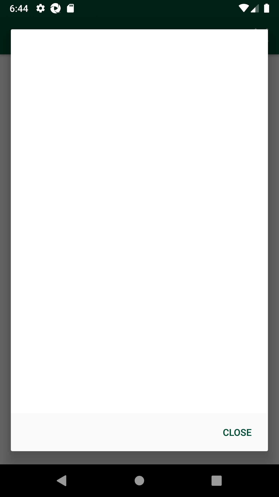
And I click on login button for SMAStep skippedThen I click on 'stockMngmtText' on page 'HomePagePO_New'Step skippedThen I click on "Prompted Counts"Step skippedThen I click on "Services"Step skippedThen I click on "Off Shelf"Step skippedAnd I verify "Print and Place Shelf Edge Label" Action label is displayedStep skippedThen I click on "Print and Place Shelf Edge Label" Action labelStep skippedAnd I enter qty "5" and click on Confirm buttonStep skippedAnd I verify Request Label screen UIStep skippedAnd I verify "", " " and " " labels are displayed Step skippedFailSMA-31421_Department_Location_Verify labels preference should be displayed as Default, A4P White POS and Medium White POS.When I enter Username and Password for SMA Collegue userAnd I click on login button for SMAThen I click on 'stockMngmtText' on page 'HomePagePO_New'Then I click on "Prompted Counts"Then I click on "Services"Then I click on "Petrol"And I verify "Print and Place Shelf Edge Label" Action label is displayedcom.morrisons.common.action.Hook.afterScenario(io.cucumber.java.Scenario)Then I click on "Print and Place Shelf Edge Label" Action labelStep skippedAnd I enter qty "5" and click on Confirm buttonStep skippedAnd I verify Request Label screen UIStep skippedAnd I verify "", " " and " " labels are displayed Step skippedFailSMA-31422_Department_Location_After clicking on History icon, verify History screen is displayed with list of completed products with total count.FailSMA-31422_Department_Location_After clicking on History icon, verify History screen is displayed with list of completed products with total count.When I enter Username and Password for SMA Collegue userAnd I click on login button for SMAThen I click on 'stockMngmtText' on page 'HomePagePO_New'Then I click on "Prompted Counts"Then I click on "Ambient & Frozen"Then I click on "Fixture"And I verify History icon is displayedcom.morrisons.common.action.Hook.afterScenario(io.cucumber.java.Scenario)Then I click on History iconStep skippedAnd I verify History screen is displayed with list of completed products with total countStep skippedFailSMA-31422_Department_Location_After clicking on History icon, verify History screen is displayed with list of completed products with total count.When I enter Username and Password for SMA Collegue userAnd I click on login button for SMAThen I click on 'stockMngmtText' on page 'HomePagePO_New'Then I click on "Prompted Counts"Then I click on "Fresh"Then I click on "Fixture"And I verify History icon is displayedcom.morrisons.common.action.Hook.afterScenario(io.cucumber.java.Scenario)Then I click on History iconStep skippedAnd I verify History screen is displayed with list of completed products with total countStep skippedFailSMA-31422_Department_Location_After clicking on History icon, verify History screen is displayed with list of completed products with total count.When I enter Username and Password for SMA Collegue userAnd I click on login button for SMAThen I click on 'stockMngmtText' on page 'HomePagePO_New'Then I click on "Prompted Counts"Then I click on "Market Street"Then I click on "Fixture"And I verify History icon is displayedcom.morrisons.common.action.Hook.afterScenario(io.cucumber.java.Scenario)Then I click on History iconStep skippedAnd I verify History screen is displayed with list of completed products with total countStep skippedFailSMA-31422_Department_Location_After clicking on History icon, verify History screen is displayed with list of completed products with total count.When I enter Username and Password for SMA Collegue userAnd I click on login button for SMAThen I click on 'stockMngmtText' on page 'HomePagePO_New'Then I click on "Prompted Counts"Then I click on "Services"Then I click on "Fixture"And I verify History icon is displayedcom.morrisons.common.action.Hook.afterScenario(io.cucumber.java.Scenario)Then I click on History iconStep skippedAnd I verify History screen is displayed with list of completed products with total countStep skippedFailSMA-31422_Department_Location_After clicking on History icon, verify History screen is displayed with list of completed products with total count.When I enter Username and Password for SMA Collegue userAnd I click on login button for SMAThen I click on 'stockMngmtText' on page 'HomePagePO_New'Then I click on "Prompted Counts"Then I click on "Ambient & Frozen"Then I click on "Off Shelf"And I verify History icon is displayedcom.morrisons.common.action.Hook.afterScenario(io.cucumber.java.Scenario)Then I click on History iconStep skippedAnd I verify History screen is displayed with list of completed products with total countStep skippedFailSMA-31422_Department_Location_After clicking on History icon, verify History screen is displayed with list of completed products with total count.When I enter Username and Password for SMA Collegue userAnd I click on login button for SMAThen I click on 'stockMngmtText' on page 'HomePagePO_New'Then I click on "Prompted Counts"Then I click on "Ambient & Frozen"Then I click on "Petrol"And I verify History icon is displayedcom.morrisons.common.action.Hook.afterScenario(io.cucumber.java.Scenario)Then I click on History iconStep skippedAnd I verify History screen is displayed with list of completed products with total countStep skippedFailSMA-31422_Department_Location_After clicking on History icon, verify History screen is displayed with list of completed products with total count.When I enter Username and Password for SMA Collegue userAnd I click on login button for SMAThen I click on 'stockMngmtText' on page 'HomePagePO_New'Then I click on "Prompted Counts"Then I click on "Fresh"Then I click on "Off Shelf"And I verify History icon is displayedcom.morrisons.common.action.Hook.afterScenario(io.cucumber.java.Scenario)Then I click on History iconStep skippedAnd I verify History screen is displayed with list of completed products with total countStep skippedFailSMA-31422_Department_Location_After clicking on History icon, verify History screen is displayed with list of completed products with total count.When I enter Username and Password for SMA Collegue userAnd I click on login button for SMAThen I click on 'stockMngmtText' on page 'HomePagePO_New'Then I click on "Prompted Counts"Then I click on "Fresh"Then I click on "Petrol"And I verify History icon is displayedcom.morrisons.common.action.Hook.afterScenario(io.cucumber.java.Scenario)Then I click on History iconStep skippedAnd I verify History screen is displayed with list of completed products with total countStep skippedFailSMA-31422_Department_Location_After clicking on History icon, verify History screen is displayed with list of completed products with total count.When I enter Username and Password for SMA Collegue userAnd I click on login button for SMAThen I click on 'stockMngmtText' on page 'HomePagePO_New'Then I click on "Prompted Counts"Then I click on "Market Street"Then I click on "Off Shelf"And I verify History icon is displayedcom.morrisons.common.action.Hook.afterScenario(io.cucumber.java.Scenario)Then I click on History iconStep skippedAnd I verify History screen is displayed with list of completed products with total countStep skippedFailSMA-31422_Department_Location_After clicking on History icon, verify History screen is displayed with list of completed products with total count.When I enter Username and Password for SMA Collegue userAnd I click on login button for SMAThen I click on 'stockMngmtText' on page 'HomePagePO_New'Then I click on "Prompted Counts"Then I click on "Market Street"Then I click on "Petrol"And I verify History icon is displayedcom.morrisons.common.action.Hook.afterScenario(io.cucumber.java.Scenario)Then I click on History iconStep skippedAnd I verify History screen is displayed with list of completed products with total countStep skippedFailSMA-31422_Department_Location_After clicking on History icon, verify History screen is displayed with list of completed products with total count.When I enter Username and Password for SMA Collegue userAnd I click on login button for SMAThen I click on 'stockMngmtText' on page 'HomePagePO_New'Then I click on "Prompted Counts"Then I click on "Services"Then I click on "Off Shelf"And I verify History icon is displayedcom.morrisons.common.action.Hook.afterScenario(io.cucumber.java.Scenario)Then I click on History iconStep skippedAnd I verify History screen is displayed with list of completed products with total countStep skippedFailSMA-31422_Department_Location_After clicking on History icon, verify History screen is displayed with list of completed products with total count.When I enter Username and Password for SMA Collegue userAnd I click on login button for SMAThen I click on 'stockMngmtText' on page 'HomePagePO_New'Then I click on "Prompted Counts"Then I click on "Services"Then I click on "Petrol"And I verify History icon is displayedcom.morrisons.common.action.Hook.afterScenario(io.cucumber.java.Scenario)Then I click on History iconStep skippedAnd I verify History screen is displayed with list of completed products with total countStep skippedFailSMA-31422_Department_Location_After clicking on History icon, verify History screen is displayed with list of completed products with total count.When I enter Username and Password for SMA Collegue userAnd I click on login button for SMAThen I click on 'stockMngmtText' on page 'HomePagePO_New'Then I click on "Prompted Counts"Then I click on "Ambient & Frozen"Then I click on "Warehouse"And I verify History icon is displayedcom.morrisons.common.action.Hook.afterScenario(io.cucumber.java.Scenario)Then I click on History iconStep skippedAnd I verify History screen is displayed with list of completed products with total countStep skippedFailSMA-31422_Department_Location_After clicking on History icon, verify History screen is displayed with list of completed products with total count.When I enter Username and Password for SMA Collegue userAnd I click on login button for SMAThen I click on 'stockMngmtText' on page 'HomePagePO_New'Then I click on "Prompted Counts"Then I click on "Fresh"Then I click on "Warehouse"And I verify History icon is displayedcom.morrisons.common.action.Hook.afterScenario(io.cucumber.java.Scenario)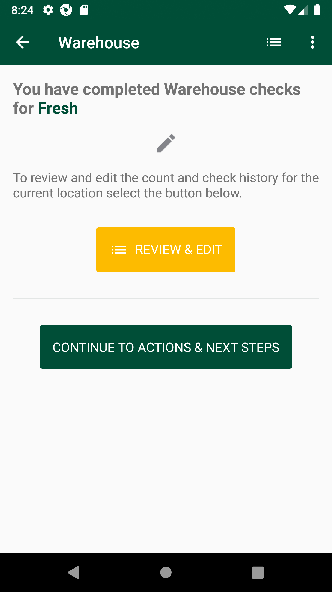
Then I click on History iconStep skippedAnd I verify History screen is displayed with list of completed products with total countStep skippedFailSMA-31422_Department_Location_After clicking on History icon, verify History screen is displayed with list of completed products with total count.When I enter Username and Password for SMA Collegue userAnd I click on login button for SMAThen I click on 'stockMngmtText' on page 'HomePagePO_New'Then I click on "Prompted Counts"Then I click on "Market Street"Then I click on "Warehouse"And I verify History icon is displayedcom.morrisons.common.action.Hook.afterScenario(io.cucumber.java.Scenario)Then I click on History iconStep skippedAnd I verify History screen is displayed with list of completed products with total countStep skippedFailSMA-31422_Department_Location_After clicking on History icon, verify History screen is displayed with list of completed products with total count.When I enter Username and Password for SMA Collegue userAnd I click on login button for SMAThen I click on 'stockMngmtText' on page 'HomePagePO_New'Then I click on "Prompted Counts"Then I click on "Services"Then I click on "Warehouse"And I verify History icon is displayedcom.morrisons.common.action.Hook.afterScenario(io.cucumber.java.Scenario)Then I click on History iconStep skippedAnd I verify History screen is displayed with list of completed products with total countStep skippedFailSMA-31422_Department_Location_Select product on History screen and verify should be able to add action and edit stock count.FailSMA-31422_Department_Location_Select product on History screen and verify should be able to add action and edit stock count.When I enter Username and Password for SMA Collegue userAnd I click on login button for SMAThen I click on 'stockMngmtText' on page 'HomePagePO_New'Then I click on "Prompted Counts"Then I click on "Ambient & Frozen"Then I click on "Fixture"Then I click on "Check Merchandising Plan" Action labelcom.morrisons.common.action.Hook.afterScenario(io.cucumber.java.Scenario)And I enter qty "5" and click on Confirm buttonStep skippedThen I verify History icon is displayedStep skippedAnd I click on History iconStep skippedThen I verify History screen is displayed with list of completed products with total countStep skippedAnd I Select product on "Fixture" History screenStep skippedThen I verify Edit button is displayedStep skippedThen I click on Edit buttonStep skippedAnd I edit stock count as "6"Step skippedFailSMA-31422_Department_Location_Select product on History screen and verify should be able to add action and edit stock count.When I enter Username and Password for SMA Collegue userAnd I click on login button for SMAThen I click on 'stockMngmtText' on page 'HomePagePO_New'Then I click on "Prompted Counts"Then I click on "Fresh"Then I click on "Fixture"Then I click on "Check Merchandising Plan" Action labelcom.morrisons.common.action.Hook.afterScenario(io.cucumber.java.Scenario)And I enter qty "5" and click on Confirm buttonStep skippedThen I verify History icon is displayedStep skippedAnd I click on History iconStep skippedThen I verify History screen is displayed with list of completed products with total countStep skippedAnd I Select product on "Fixture" History screenStep skippedThen I verify Edit button is displayedStep skippedThen I click on Edit buttonStep skippedAnd I edit stock count as "6"Step skippedFailSMA-31422_Department_Location_Select product on History screen and verify should be able to add action and edit stock count.When I enter Username and Password for SMA Collegue userAnd I click on login button for SMAThen I click on 'stockMngmtText' on page 'HomePagePO_New'Then I click on "Prompted Counts"Then I click on "Market Street"Then I click on "Fixture"Then I click on "Check Merchandising Plan" Action labelAnd I enter qty "5" and click on Confirm buttonThen I verify History icon is displayedcom.morrisons.common.action.Hook.afterScenario(io.cucumber.java.Scenario)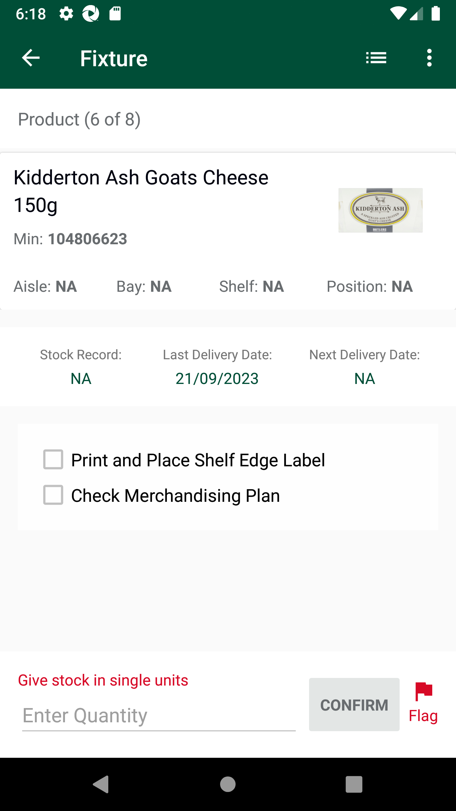
And I click on History iconStep skippedThen I verify History screen is displayed with list of completed products with total countStep skippedAnd I Select product on "Fixture" History screenStep skippedThen I verify Edit button is displayedStep skippedThen I click on Edit buttonStep skippedAnd I edit stock count as "6"Step skippedFailSMA-31422_Department_Location_Select product on History screen and verify should be able to add action and edit stock count.When I enter Username and Password for SMA Collegue userAnd I click on login button for SMAThen I click on 'stockMngmtText' on page 'HomePagePO_New'Then I click on "Prompted Counts"Then I click on "Services"Then I click on "Fixture"Then I click on "Check Merchandising Plan" Action labelcom.morrisons.common.action.Hook.afterScenario(io.cucumber.java.Scenario)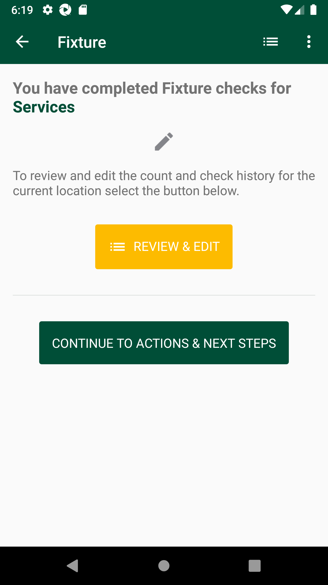
And I enter qty "5" and click on Confirm buttonStep skippedThen I verify History icon is displayedStep skippedAnd I click on History iconStep skippedThen I verify History screen is displayed with list of completed products with total countStep skippedAnd I Select product on "Fixture" History screenStep skippedThen I verify Edit button is displayedStep skippedThen I click on Edit buttonStep skippedAnd I edit stock count as "6"Step skippedFailSMA-31422_Department_Location_Select product on History screen and verify should be able to add action and edit stock count.When I enter Username and Password for SMA Collegue userAnd I click on login button for SMAThen I click on 'stockMngmtText' on page 'HomePagePO_New'Then I click on "Prompted Counts"Then I click on "Ambient & Frozen"Then I click on "Off Shelf"And I verify "You have completed Off Shelf checks for Ambient & Frozen" message is displayedcom.morrisons.common.action.Hook.afterScenario(io.cucumber.java.Scenario)And I verify REVIEW & EDIT button is displayedStep skippedThen I click on REVIEW & EDIT buttonStep skippedAnd I verify History screen is displayed with list of completed products with total countStep skippedThen I Select product on "Off Shelf" History screenStep skippedThen I verify Edit button is displayedStep skippedThen I click on Edit buttonStep skippedAnd I add action and edit stock count as "6"Step skippedFailSMA-31422_Department_Location_Select product on History screen and verify should be able to add action and edit stock count.When I enter Username and Password for SMA Collegue userAnd I click on login button for SMAThen I click on 'stockMngmtText' on page 'HomePagePO_New'Then I click on "Prompted Counts"Then I click on "Ambient & Frozen"Then I click on "Petrol"And I verify "You have completed Petrol checks for Ambient & Frozen" message is displayedcom.morrisons.common.action.Hook.afterScenario(io.cucumber.java.Scenario)And I verify REVIEW & EDIT button is displayedStep skippedThen I click on REVIEW & EDIT buttonStep skippedAnd I verify History screen is displayed with list of completed products with total countStep skippedThen I Select product on "Petrol" History screenStep skippedThen I verify Edit button is displayedStep skippedThen I click on Edit buttonStep skippedAnd I add action and edit stock count as "6"Step skippedFailSMA-31422_Department_Location_Select product on History screen and verify should be able to add action and edit stock count.When I enter Username and Password for SMA Collegue userAnd I click on login button for SMAThen I click on 'stockMngmtText' on page 'HomePagePO_New'Then I click on "Prompted Counts"Then I click on "Fresh"Then I click on "Off Shelf"And I verify "You have completed Off Shelf checks for Fresh" message is displayedcom.morrisons.common.action.Hook.afterScenario(io.cucumber.java.Scenario)And I verify REVIEW & EDIT button is displayedStep skippedThen I click on REVIEW & EDIT buttonStep skippedAnd I verify History screen is displayed with list of completed products with total countStep skippedThen I Select product on "Off Shelf" History screenStep skippedThen I verify Edit button is displayedStep skippedThen I click on Edit buttonStep skippedAnd I add action and edit stock count as "6"Step skippedFailSMA-31422_Department_Location_Select product on History screen and verify should be able to add action and edit stock count.When I enter Username and Password for SMA Collegue userAnd I click on login button for SMAThen I click on 'stockMngmtText' on page 'HomePagePO_New'Then I click on "Prompted Counts"Then I click on "Fresh"Then I click on "Petrol"And I verify "You have completed Petrol checks for Fresh" message is displayedcom.morrisons.common.action.Hook.afterScenario(io.cucumber.java.Scenario) And I verify REVIEW & EDIT button is displayedStep skippedThen I click on REVIEW & EDIT buttonStep skippedAnd I verify History screen is displayed with list of completed products with total countStep skippedThen I Select product on "Petrol" History screenStep skippedThen I verify Edit button is displayedStep skippedThen I click on Edit buttonStep skippedAnd I add action and edit stock count as "6"Step skippedFailSMA-31422_Department_Location_Select product on History screen and verify should be able to add action and edit stock count.When I enter Username and Password for SMA Collegue userAnd I click on login button for SMAThen I click on 'stockMngmtText' on page 'HomePagePO_New'Then I click on "Prompted Counts"Then I click on "Market Street"Then I click on "Off Shelf"And I verify "You have completed Off Shelf checks for Market Street" message is displayedcom.morrisons.common.action.Hook.afterScenario(io.cucumber.java.Scenario)And I verify REVIEW & EDIT button is displayedStep skippedThen I click on REVIEW & EDIT buttonStep skippedAnd I verify History screen is displayed with list of completed products with total countStep skippedThen I Select product on "Off Shelf" History screenStep skippedThen I verify Edit button is displayedStep skippedThen I click on Edit buttonStep skippedAnd I add action and edit stock count as "6"Step skippedFailSMA-31422_Department_Location_Select product on History screen and verify should be able to add action and edit stock count.When I enter Username and Password for SMA Collegue userAnd I click on login button for SMAThen I click on 'stockMngmtText' on page 'HomePagePO_New'Then I click on "Prompted Counts"Then I click on "Market Street"Then I click on "Petrol"And I verify "You have completed Petrol checks for Market Street" message is displayedcom.morrisons.common.action.Hook.afterScenario(io.cucumber.java.Scenario)And I verify REVIEW & EDIT button is displayedStep skippedThen I click on REVIEW & EDIT buttonStep skippedAnd I verify History screen is displayed with list of completed products with total countStep skippedThen I Select product on "Petrol" History screenStep skippedThen I verify Edit button is displayedStep skippedThen I click on Edit buttonStep skippedAnd I add action and edit stock count as "6"Step skippedFailSMA-31422_Department_Location_Select product on History screen and verify should be able to add action and edit stock count.When I enter Username and Password for SMA Collegue userAnd I click on login button for SMAThen I click on 'stockMngmtText' on page 'HomePagePO_New'Then I click on "Prompted Counts"Then I click on "Services"Then I click on "Off Shelf"And I verify "You have completed Off Shelf checks for Services" message is displayedcom.morrisons.common.action.Hook.afterScenario(io.cucumber.java.Scenario)And I verify REVIEW & EDIT button is displayedStep skippedThen I click on REVIEW & EDIT buttonStep skippedAnd I verify History screen is displayed with list of completed products with total countStep skippedThen I Select product on "Off Shelf" History screenStep skippedThen I verify Edit button is displayedStep skippedThen I click on Edit buttonStep skippedAnd I add action and edit stock count as "6"Step skippedFailSMA-31422_Department_Location_Select product on History screen and verify should be able to add action and edit stock count.When I enter Username and Password for SMA Collegue userAnd I click on login button for SMAThen I click on 'stockMngmtText' on page 'HomePagePO_New'Then I click on "Prompted Counts"Then I click on "Services"Then I click on "Petrol"And I verify "You have completed Petrol checks for Services" message is displayedcom.morrisons.common.action.Hook.afterScenario(io.cucumber.java.Scenario)And I verify REVIEW & EDIT button is displayedStep skippedThen I click on REVIEW & EDIT buttonStep skippedAnd I verify History screen is displayed with list of completed products with total countStep skippedThen I Select product on "Petrol" History screenStep skippedThen I verify Edit button is displayedStep skippedThen I click on Edit buttonStep skippedAnd I add action and edit stock count as "6"Step skippedFailSMA-31422_Department_Location_Select product on History screen and verify should be able to add action and edit stock count.When I enter Username and Password for SMA Collegue userAnd I click on login button for SMAThen I click on 'stockMngmtText' on page 'HomePagePO_New'Then I click on "Prompted Counts"Then I click on "Ambient & Frozen"Then I click on "Warehouse"And I verify "You have completed Warehouse checks for Ambient & Frozen" message is displayedAnd I verify REVIEW & EDIT button is displayedThen I click on REVIEW & EDIT buttonAnd I verify History screen is displayed with list of completed products with total countThen I Select product on "Warehouse" History screencom.morrisons.common.action.Hook.afterScenario(io.cucumber.java.Scenario)
And I verify REVIEW & EDIT button is displayedStep skippedThen I click on REVIEW & EDIT buttonStep skippedAnd I verify History screen is displayed with list of completed products with total countStep skippedThen I Select product on "Petrol" History screenStep skippedThen I verify Edit button is displayedStep skippedThen I click on Edit buttonStep skippedAnd I add action and edit stock count as "6"Step skippedFailSMA-31422_Department_Location_Select product on History screen and verify should be able to add action and edit stock count.When I enter Username and Password for SMA Collegue userAnd I click on login button for SMAThen I click on 'stockMngmtText' on page 'HomePagePO_New'Then I click on "Prompted Counts"Then I click on "Market Street"Then I click on "Off Shelf"And I verify "You have completed Off Shelf checks for Market Street" message is displayedcom.morrisons.common.action.Hook.afterScenario(io.cucumber.java.Scenario)And I verify REVIEW & EDIT button is displayedStep skippedThen I click on REVIEW & EDIT buttonStep skippedAnd I verify History screen is displayed with list of completed products with total countStep skippedThen I Select product on "Off Shelf" History screenStep skippedThen I verify Edit button is displayedStep skippedThen I click on Edit buttonStep skippedAnd I add action and edit stock count as "6"Step skippedFailSMA-31422_Department_Location_Select product on History screen and verify should be able to add action and edit stock count.When I enter Username and Password for SMA Collegue userAnd I click on login button for SMAThen I click on 'stockMngmtText' on page 'HomePagePO_New'Then I click on "Prompted Counts"Then I click on "Market Street"Then I click on "Petrol"And I verify "You have completed Petrol checks for Market Street" message is displayedcom.morrisons.common.action.Hook.afterScenario(io.cucumber.java.Scenario)And I verify REVIEW & EDIT button is displayedStep skippedThen I click on REVIEW & EDIT buttonStep skippedAnd I verify History screen is displayed with list of completed products with total countStep skippedThen I Select product on "Petrol" History screenStep skippedThen I verify Edit button is displayedStep skippedThen I click on Edit buttonStep skippedAnd I add action and edit stock count as "6"Step skippedFailSMA-31422_Department_Location_Select product on History screen and verify should be able to add action and edit stock count.When I enter Username and Password for SMA Collegue userAnd I click on login button for SMAThen I click on 'stockMngmtText' on page 'HomePagePO_New'Then I click on "Prompted Counts"Then I click on "Services"Then I click on "Off Shelf"And I verify "You have completed Off Shelf checks for Services" message is displayedcom.morrisons.common.action.Hook.afterScenario(io.cucumber.java.Scenario)And I verify REVIEW & EDIT button is displayedStep skippedThen I click on REVIEW & EDIT buttonStep skippedAnd I verify History screen is displayed with list of completed products with total countStep skippedThen I Select product on "Off Shelf" History screenStep skippedThen I verify Edit button is displayedStep skippedThen I click on Edit buttonStep skippedAnd I add action and edit stock count as "6"Step skippedFailSMA-31422_Department_Location_Select product on History screen and verify should be able to add action and edit stock count.When I enter Username and Password for SMA Collegue userAnd I click on login button for SMAThen I click on 'stockMngmtText' on page 'HomePagePO_New'Then I click on "Prompted Counts"Then I click on "Services"Then I click on "Petrol"And I verify "You have completed Petrol checks for Services" message is displayedcom.morrisons.common.action.Hook.afterScenario(io.cucumber.java.Scenario)And I verify REVIEW & EDIT button is displayedStep skippedThen I click on REVIEW & EDIT buttonStep skippedAnd I verify History screen is displayed with list of completed products with total countStep skippedThen I Select product on "Petrol" History screenStep skippedThen I verify Edit button is displayedStep skippedThen I click on Edit buttonStep skippedAnd I add action and edit stock count as "6"Step skippedFailSMA-31422_Department_Location_Select product on History screen and verify should be able to add action and edit stock count.When I enter Username and Password for SMA Collegue userAnd I click on login button for SMAThen I click on 'stockMngmtText' on page 'HomePagePO_New'Then I click on "Prompted Counts"Then I click on "Ambient & Frozen"Then I click on "Warehouse"And I verify "You have completed Warehouse checks for Ambient & Frozen" message is displayedAnd I verify REVIEW & EDIT button is displayedThen I click on REVIEW & EDIT buttonAnd I verify History screen is displayed with list of completed products with total countThen I Select product on "Warehouse" History screencom.morrisons.common.action.Hook.afterScenario(io.cucumber.java.Scenario)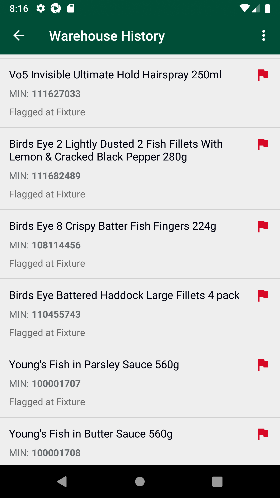
Then I verify Edit button is displayedStep skippedThen I click on Edit buttonStep skippedAnd I add action and edit stock count as "6"Step skippedFailSMA-31422_Department_Location_Select product on History screen and verify should be able to add action and edit stock count.When I enter Username and Password for SMA Collegue userAnd I click on login button for SMAThen I click on 'stockMngmtText' on page 'HomePagePO_New'Then I click on "Prompted Counts"Then I click on "Fresh"Then I click on "Warehouse"And I verify "You have completed Warehouse checks for Fresh" message is displayedAnd I verify REVIEW & EDIT button is displayedThen I click on REVIEW & EDIT buttonAnd I verify History screen is displayed with list of completed products with total countThen I Select product on "Warehouse" History screencom.morrisons.common.action.Hook.afterScenario(io.cucumber.java.Scenario)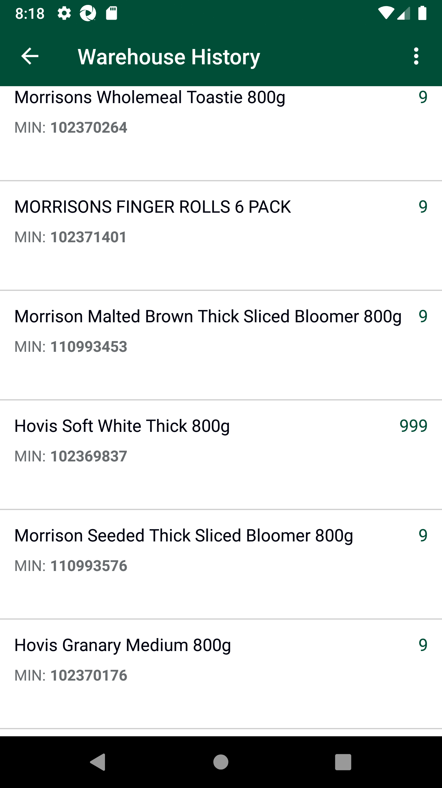
Then I verify Edit button is displayedStep skippedThen I click on Edit buttonStep skippedAnd I add action and edit stock count as "6"Step skippedFailSMA-31422_Department_Location_Select product on History screen and verify should be able to add action and edit stock count.When I enter Username and Password for SMA Collegue userAnd I click on login button for SMAThen I click on 'stockMngmtText' on page 'HomePagePO_New'Then I click on "Prompted Counts"Then I click on "Market Street"Then I click on "Warehouse"And I verify "You have completed Warehouse checks for Market Street" message is displayedcom.morrisons.common.action.Hook.afterScenario(io.cucumber.java.Scenario)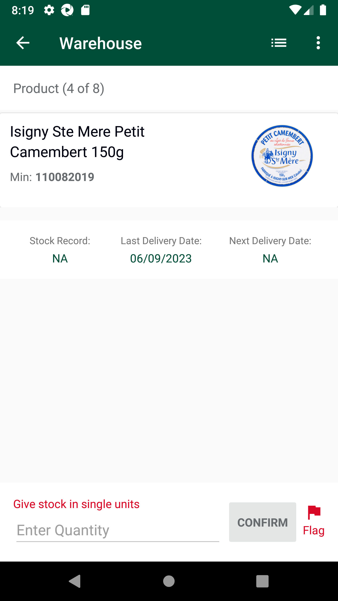
And I verify REVIEW & EDIT button is displayedStep skippedThen I click on REVIEW & EDIT buttonStep skippedAnd I verify History screen is displayed with list of completed products with total countStep skippedThen I Select product on "Warehouse" History screenStep skippedThen I verify Edit button is displayedStep skippedThen I click on Edit buttonStep skippedAnd I add action and edit stock count as "6"Step skippedFailSMA-31422_Department_Location_Select product on History screen and verify should be able to add action and edit stock count.When I enter Username and Password for SMA Collegue userAnd I click on login button for SMAThen I click on 'stockMngmtText' on page 'HomePagePO_New'Then I click on "Prompted Counts"Then I click on "Services"Then I click on "Warehouse"And I verify "You have completed Warehouse checks for Services" message is displayedAnd I verify REVIEW & EDIT button is displayedThen I click on REVIEW & EDIT buttonAnd I verify History screen is displayed with list of completed products with total countThen I Select product on "Warehouse" History screencom.morrisons.common.action.Hook.afterScenario(io.cucumber.java.Scenario)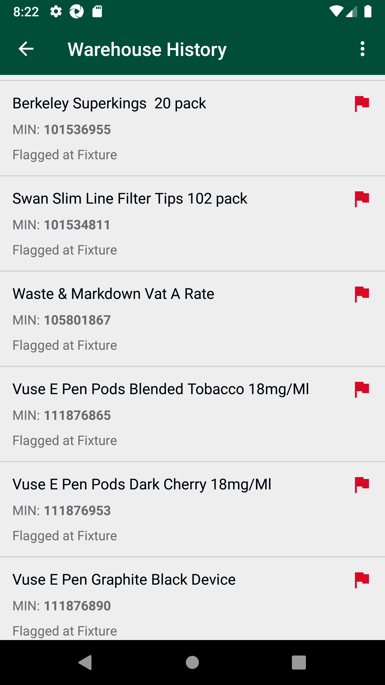
Then I verify Edit button is displayedStep skippedThen I click on Edit buttonStep skippedAnd I add action and edit stock count as "6"Step skippedFailSMA-31414_Department_Location_Verify user is able to view and select 2 actions "Check Merchandising Plan" and "Print & Place Shelf Edge Label" and should automatically add item in 'Actions & Next steps' under appropriate actions.FailSMA-31414_Department_Location_Verify user is able to view and select 2 actions "Check Merchandising Plan" and "Print & Place Shelf Edge Label" and should automatically add item in 'Actions & Next steps' under appropriate actions.When I enter Username and Password for SMA Collegue userAnd I click on login button for SMAThen I click on 'stockMngmtText' on page 'HomePagePO_New'Then I click on "Prompted Counts"Then I click on "Ambient & Frozen"Then I click on "Fixture"And I verify details on Fixture screenStep undefinedAnd I verify "Print and Place Shelf Edge Label" Action label is displayedStep skippedAnd I verify "Check Merchandising Plan" Action label is displayedStep skippedThen I click on "Print and Place Shelf Edge Label" Action labelStep skippedThen I click on "Check Merchandising Plan" Action labelStep skippedAnd I enter qty "5" and click on Confirm buttonStep skippedThen I select Label sizeStep skippedAnd I click on Continue Button on Request label pageStep skippedAnd I click on Back ButtonStep skippedThen I click on "Actions & Next Steps"Step skippedAnd I click on Merchandising on Action & Next steps pageStep skippedThen I verify details on Merchandising screenStep skippedAnd I click on Back ButtonStep skippedThen I click on Print & Place Labels on Action & Next steps pageStep skippedAnd I verify Print & Place Labels screen is displayedStep skippedThen I verify details on Print & Place Labels screenStep skippedFailSMA-31414_Department_Location_Verify user is able to view and select 2 actions "Check Merchandising Plan" and "Print & Place Shelf Edge Label" and should automatically add item in 'Actions & Next steps' under appropriate actions.When I enter Username and Password for SMA Collegue userAnd I click on login button for SMAThen I click on 'stockMngmtText' on page 'HomePagePO_New'Then I click on "Prompted Counts"Then I click on "Fresh"Then I click on "Fixture"And I verify details on Fixture screenStep undefinedAnd I verify "Print and Place Shelf Edge Label" Action label is displayedStep skippedAnd I verify "Check Merchandising Plan" Action label is displayedStep skippedThen I click on "Print and Place Shelf Edge Label" Action labelStep skippedThen I click on "Check Merchandising Plan" Action labelStep skippedAnd I enter qty "5" and click on Confirm buttonStep skippedThen I select Label sizeStep skippedAnd I click on Continue Button on Request label pageStep skippedAnd I click on Back ButtonStep skippedThen I click on "Actions & Next Steps"Step skippedAnd I click on Merchandising on Action & Next steps pageStep skippedThen I verify details on Merchandising screenStep skippedAnd I click on Back ButtonStep skippedThen I click on Print & Place Labels on Action & Next steps pageStep skippedAnd I verify Print & Place Labels screen is displayedStep skippedThen I verify details on Print & Place Labels screenStep skippedFailSMA-31414_Department_Location_Verify user is able to view and select 2 actions "Check Merchandising Plan" and "Print & Place Shelf Edge Label" and should automatically add item in 'Actions & Next steps' under appropriate actions.When I enter Username and Password for SMA Collegue userAnd I click on login button for SMAThen I click on 'stockMngmtText' on page 'HomePagePO_New'Then I click on "Prompted Counts"Then I click on "Market Street"Then I click on "Fixture"And I verify details on Fixture screenStep undefinedAnd I verify "Print and Place Shelf Edge Label" Action label is displayedStep skippedAnd I verify "Check Merchandising Plan" Action label is displayedStep skippedThen I click on "Print and Place Shelf Edge Label" Action labelStep skippedThen I click on "Check Merchandising Plan" Action labelStep skippedAnd I enter qty "5" and click on Confirm buttonStep skippedThen I select Label sizeStep skippedAnd I click on Continue Button on Request label pageStep skippedAnd I click on Back ButtonStep skippedThen I click on "Actions & Next Steps"Step skippedAnd I click on Merchandising on Action & Next steps pageStep skippedThen I verify details on Merchandising screenStep skippedAnd I click on Back ButtonStep skippedThen I click on Print & Place Labels on Action & Next steps pageStep skippedAnd I verify Print & Place Labels screen is displayedStep skippedThen I verify details on Print & Place Labels screenStep skippedFailSMA-31414_Department_Location_Verify user is able to view and select 2 actions "Check Merchandising Plan" and "Print & Place Shelf Edge Label" and should automatically add item in 'Actions & Next steps' under appropriate actions.When I enter Username and Password for SMA Collegue userAnd I click on login button for SMAThen I click on 'stockMngmtText' on page 'HomePagePO_New'Then I click on "Prompted Counts"Then I click on "Services"Then I click on "Fixture"And I verify details on Fixture screenStep undefinedAnd I verify "Print and Place Shelf Edge Label" Action label is displayedStep skippedAnd I verify "Check Merchandising Plan" Action label is displayedStep skippedThen I click on "Print and Place Shelf Edge Label" Action labelStep skippedThen I click on "Check Merchandising Plan" Action labelStep skippedAnd I enter qty "5" and click on Confirm buttonStep skippedThen I select Label sizeStep skippedAnd I click on Continue Button on Request label pageStep skippedAnd I click on Back ButtonStep skippedThen I click on "Actions & Next Steps"Step skippedAnd I click on Merchandising on Action & Next steps pageStep skippedThen I verify details on Merchandising screenStep skippedAnd I click on Back ButtonStep skippedThen I click on Print & Place Labels on Action & Next steps pageStep skippedAnd I verify Print & Place Labels screen is displayedStep skippedThen I verify details on Print & Place Labels screenStep skippedFailSMA-31414_Department_Location_Verify user is able to view and select 2 actions "Check Merchandising Plan" and "Print & Place Shelf Edge Label" and should automatically add item in 'Actions & Next steps' under appropriate actions.When I enter Username and Password for SMA Collegue userAnd I click on login button for SMAThen I click on 'stockMngmtText' on page 'HomePagePO_New'Then I click on "Prompted Counts"Then I click on "Ambient & Frozen"Then I click on "Off Shelf"And I verify "Print and Place Shelf Edge Label" Action label is displayedcom.morrisons.common.action.Hook.afterScenario(io.cucumber.java.Scenario)And I verify "Check Merchandising Plan" Action label is displayedStep skippedThen I click on "Print and Place Shelf Edge Label" Action labelStep skippedThen I click on "Check Merchandising Plan" Action labelStep skippedAnd I enter qty "5" and click on Confirm buttonStep skippedAnd I click on Back ButtonStep skippedThen I click on "Actions & Next Steps"Step skippedThen I click on Merchandising on Action & Next steps pageStep skippedThen I verify Summary screen UIStep skippedAnd I verify product is displayed in "Print & Place Labels" listStep skippedThen I click on Print & Place Labels on Action & Next steps pageStep skippedThen I verify Summary screen UIStep skippedAnd I verify product is displayed in "Merchandising" listStep skippedFailSMA-31414_Department_Location_Verify user is able to view and select 2 actions "Check Merchandising Plan" and "Print & Place Shelf Edge Label" and should automatically add item in 'Actions & Next steps' under appropriate actions.When I enter Username and Password for SMA Collegue userAnd I click on login button for SMAThen I click on 'stockMngmtText' on page 'HomePagePO_New'Then I click on "Prompted Counts"Then I click on "Ambient & Frozen"Then I click on "Petrol"And I verify "Print and Place Shelf Edge Label" Action label is displayedcom.morrisons.common.action.Hook.afterScenario(io.cucumber.java.Scenario)And I verify "Check Merchandising Plan" Action label is displayedStep skippedThen I click on "Print and Place Shelf Edge Label" Action labelStep skippedThen I click on "Check Merchandising Plan" Action labelStep skippedAnd I enter qty "5" and click on Confirm buttonStep skippedAnd I click on Back ButtonStep skippedThen I click on "Actions & Next Steps"Step skippedThen I click on Merchandising on Action & Next steps pageStep skippedThen I verify Summary screen UIStep skippedAnd I verify product is displayed in "Print & Place Labels" listStep skippedThen I click on Print & Place Labels on Action & Next steps pageStep skippedThen I verify Summary screen UIStep skippedAnd I verify product is displayed in "Merchandising" listStep skippedFailSMA-31414_Department_Location_Verify user is able to view and select 2 actions "Check Merchandising Plan" and "Print & Place Shelf Edge Label" and should automatically add item in 'Actions & Next steps' under appropriate actions.When I enter Username and Password for SMA Collegue userAnd I click on login button for SMAThen I click on 'stockMngmtText' on page 'HomePagePO_New'Then I click on "Prompted Counts"Then I click on "Fresh"Then I click on "Off Shelf"And I verify "Print and Place Shelf Edge Label" Action label is displayedcom.morrisons.common.action.Hook.afterScenario(io.cucumber.java.Scenario)And I verify "Check Merchandising Plan" Action label is displayedStep skippedThen I click on "Print and Place Shelf Edge Label" Action labelStep skippedThen I click on "Check Merchandising Plan" Action labelStep skippedAnd I enter qty "5" and click on Confirm buttonStep skippedAnd I click on Back ButtonStep skippedThen I click on "Actions & Next Steps"Step skippedThen I click on Merchandising on Action & Next steps pageStep skippedThen I verify Summary screen UIStep skippedAnd I verify product is displayed in "Print & Place Labels" listStep skippedThen I click on Print & Place Labels on Action & Next steps pageStep skippedThen I verify Summary screen UIStep skippedAnd I verify product is displayed in "Merchandising" listStep skippedFailSMA-31414_Department_Location_Verify user is able to view and select 2 actions "Check Merchandising Plan" and "Print & Place Shelf Edge Label" and should automatically add item in 'Actions & Next steps' under appropriate actions.When I enter Username and Password for SMA Collegue userAnd I click on login button for SMAThen I click on 'stockMngmtText' on page 'HomePagePO_New'Then I click on "Prompted Counts"Then I click on "Fresh"Then I click on "Petrol"And I verify "Print and Place Shelf Edge Label" Action label is displayedcom.morrisons.common.action.Hook.afterScenario(io.cucumber.java.Scenario)And I verify "Check Merchandising Plan" Action label is displayedStep skippedThen I click on "Print and Place Shelf Edge Label" Action labelStep skippedThen I click on "Check Merchandising Plan" Action labelStep skippedAnd I enter qty "5" and click on Confirm buttonStep skippedAnd I click on Back ButtonStep skippedThen I click on "Actions & Next Steps"Step skippedThen I click on Merchandising on Action & Next steps pageStep skippedThen I verify Summary screen UIStep skippedAnd I verify product is displayed in "Print & Place Labels" listStep skippedThen I click on Print & Place Labels on Action & Next steps pageStep skippedThen I verify Summary screen UIStep skippedAnd I verify product is displayed in "Merchandising" listStep skippedFailSMA-31414_Department_Location_Verify user is able to view and select 2 actions "Check Merchandising Plan" and "Print & Place Shelf Edge Label" and should automatically add item in 'Actions & Next steps' under appropriate actions.When I enter Username and Password for SMA Collegue userAnd I click on login button for SMAThen I click on 'stockMngmtText' on page 'HomePagePO_New'Then I click on "Prompted Counts"Then I click on "Market Street"Then I click on "Off Shelf"And I verify "Print and Place Shelf Edge Label" Action label is displayedcom.morrisons.common.action.Hook.afterScenario(io.cucumber.java.Scenario)And I verify "Check Merchandising Plan" Action label is displayedStep skippedThen I click on "Print and Place Shelf Edge Label" Action labelStep skippedThen I click on "Check Merchandising Plan" Action labelStep skippedAnd I enter qty "5" and click on Confirm buttonStep skippedAnd I click on Back ButtonStep skippedThen I click on "Actions & Next Steps"Step skippedThen I click on Merchandising on Action & Next steps pageStep skippedThen I verify Summary screen UIStep skippedAnd I verify product is displayed in "Print & Place Labels" listStep skippedThen I click on Print & Place Labels on Action & Next steps pageStep skippedThen I verify Summary screen UIStep skippedAnd I verify product is displayed in "Merchandising" listStep skippedFailSMA-31414_Department_Location_Verify user is able to view and select 2 actions "Check Merchandising Plan" and "Print & Place Shelf Edge Label" and should automatically add item in 'Actions & Next steps' under appropriate actions.When I enter Username and Password for SMA Collegue userAnd I click on login button for SMAThen I click on 'stockMngmtText' on page 'HomePagePO_New'Then I click on "Prompted Counts"Then I click on "Market Street"Then I click on "Petrol"And I verify "Print and Place Shelf Edge Label" Action label is displayedcom.morrisons.common.action.Hook.afterScenario(io.cucumber.java.Scenario)And I verify "Check Merchandising Plan" Action label is displayedStep skippedThen I click on "Print and Place Shelf Edge Label" Action labelStep skippedThen I click on "Check Merchandising Plan" Action labelStep skippedAnd I enter qty "5" and click on Confirm buttonStep skippedAnd I click on Back ButtonStep skippedThen I click on "Actions & Next Steps"Step skippedThen I click on Merchandising on Action & Next steps pageStep skippedThen I verify Summary screen UIStep skippedAnd I verify product is displayed in "Print & Place Labels" listStep skippedThen I click on Print & Place Labels on Action & Next steps pageStep skippedThen I verify Summary screen UIStep skippedAnd I verify product is displayed in "Merchandising" listStep skippedFailSMA-31414_Department_Location_Verify user is able to view and select 2 actions "Check Merchandising Plan" and "Print & Place Shelf Edge Label" and should automatically add item in 'Actions & Next steps' under appropriate actions.When I enter Username and Password for SMA Collegue userAnd I click on login button for SMAThen I click on 'stockMngmtText' on page 'HomePagePO_New'Then I click on "Prompted Counts"Then I click on "Services"Then I click on "Off Shelf"And I verify "Print and Place Shelf Edge Label" Action label is displayedcom.morrisons.common.action.Hook.afterScenario(io.cucumber.java.Scenario)And I verify "Check Merchandising Plan" Action label is displayedStep skippedThen I click on "Print and Place Shelf Edge Label" Action labelStep skippedThen I click on "Check Merchandising Plan" Action labelStep skippedAnd I enter qty "5" and click on Confirm buttonStep skippedAnd I click on Back ButtonStep skippedThen I click on "Actions & Next Steps"Step skippedThen I click on Merchandising on Action & Next steps pageStep skippedThen I verify Summary screen UIStep skippedAnd I verify product is displayed in "Print & Place Labels" listStep skippedThen I click on Print & Place Labels on Action & Next steps pageStep skippedThen I verify Summary screen UIStep skippedAnd I verify product is displayed in "Merchandising" listStep skippedFailSMA-31414_Department_Location_Verify user is able to view and select 2 actions "Check Merchandising Plan" and "Print & Place Shelf Edge Label" and should automatically add item in 'Actions & Next steps' under appropriate actions.When I enter Username and Password for SMA Collegue userAnd I click on login button for SMAThen I click on 'stockMngmtText' on page 'HomePagePO_New'Then I click on "Prompted Counts"Then I click on "Services"Then I click on "Petrol"And I verify "Print and Place Shelf Edge Label" Action label is displayedcom.morrisons.common.action.Hook.afterScenario(io.cucumber.java.Scenario)And I verify "Check Merchandising Plan" Action label is displayedStep skippedThen I click on "Print and Place Shelf Edge Label" Action labelStep skippedThen I click on "Check Merchandising Plan" Action labelStep skippedAnd I enter qty "5" and click on Confirm buttonStep skippedAnd I click on Back ButtonStep skippedThen I click on "Actions & Next Steps"Step skippedThen I click on Merchandising on Action & Next steps pageStep skippedThen I verify Summary screen UIStep skippedAnd I verify product is displayed in "Print & Place Labels" listStep skippedThen I click on Print & Place Labels on Action & Next steps pageStep skippedThen I verify Summary screen UIStep skippedAnd I verify product is displayed in "Merchandising" listStep skippedFailSMA-31414_Department_Location_Select department then select product and verify user is able to select 1 actions out of "Check Merchandising Plan" and "Print & Place Shelf Edge Label".FailSMA-31414_Department_Location_Select department then select product and verify user is able to select 1 actions out of "Check Merchandising Plan" and "Print & Place Shelf Edge Label".When I enter Username and Password for SMA Collegue userAnd I click on login button for SMAThen I click on 'stockMngmtText' on page 'HomePagePO_New'Then I click on "Prompted Counts"Then I click on "Ambient & Frozen"Then I click on "Fixture"And I verify "Print and Place Shelf Edge Label" Action label is displayedcom.morrisons.common.action.Hook.afterScenario(io.cucumber.java.Scenario)Then I click on "Print and Place Shelf Edge Label" Action labelStep skippedAnd I enter qty "5" and click on Confirm buttonStep skippedFailSMA-31414_Department_Location_Select department then select product and verify user is able to select 1 actions out of "Check Merchandising Plan" and "Print & Place Shelf Edge Label".When I enter Username and Password for SMA Collegue userAnd I click on login button for SMAThen I click on 'stockMngmtText' on page 'HomePagePO_New'Then I click on "Prompted Counts"Then I click on "Fresh"Then I click on "Fixture"And I verify "Print and Place Shelf Edge Label" Action label is displayedcom.morrisons.common.action.Hook.afterScenario(io.cucumber.java.Scenario)Then I click on "Print and Place Shelf Edge Label" Action labelStep skippedAnd I enter qty "5" and click on Confirm buttonStep skippedPassSMA-31414_Department_Location_Select department then select product and verify user is able to select 1 actions out of "Check Merchandising Plan" and "Print & Place Shelf Edge Label".When I enter Username and Password for SMA Collegue userAnd I click on login button for SMAThen I click on 'stockMngmtText' on page 'HomePagePO_New'Then I click on "Prompted Counts"Then I click on "Market Street"Then I click on "Fixture"And I verify "Check Merchandising Plan" Action label is displayedThen I click on "Check Merchandising Plan" Action labelAnd I enter qty "5" and click on Confirm buttonFailSMA-31414_Department_Location_Select department then select product and verify user is able to select 1 actions out of "Check Merchandising Plan" and "Print & Place Shelf Edge Label".When I enter Username and Password for SMA Collegue userAnd I click on login button for SMAThen I click on 'stockMngmtText' on page 'HomePagePO_New'Then I click on "Prompted Counts"Then I click on "Services"Then I click on "Fixture"And I verify "Check Merchandising Plan" Action label is displayedcom.morrisons.common.action.Hook.afterScenario(io.cucumber.java.Scenario)Then I click on "Check Merchandising Plan" Action labelStep skippedAnd I enter qty "5" and click on Confirm buttonStep skippedFailSMA-31414_Department_Location_Select department then select product and verify user is able to select 1 actions out of "Check Merchandising Plan" and "Print & Place Shelf Edge Label".When I enter Username and Password for SMA Collegue userAnd I click on login button for SMAThen I click on 'stockMngmtText' on page 'HomePagePO_New'Then I click on "Prompted Counts"Then I click on "Ambient & Frozen"Then I click on "Off Shelf"And I verify "Print and Place Shelf Edge Label" Action label is displayedcom.morrisons.common.action.Hook.afterScenario(io.cucumber.java.Scenario)Then I click on "Print and Place Shelf Edge Label" Action labelStep skippedAnd I enter qty "5" and click on Confirm buttonStep skippedFailSMA-31414_Department_Location_Select department then select product and verify user is able to select 1 actions out of "Check Merchandising Plan" and "Print & Place Shelf Edge Label".When I enter Username and Password for SMA Collegue usercom.morrisons.common.action.Hook.afterScenario(io.cucumber.java.Scenario)And I click on login button for SMAStep skippedThen I click on 'stockMngmtText' on page 'HomePagePO_New'Step skippedThen I click on "Prompted Counts"Step skippedThen I click on "Ambient & Frozen"Step skippedThen I click on "Petrol"Step skippedAnd I verify "Check Merchandising Plan" Action label is displayedStep skippedThen I click on "Check Merchandising Plan" Action labelStep skippedAnd I enter qty "5" and click on Confirm buttonStep skippedFailSMA-31414_Department_Location_Select department then select product and verify user is able to select 1 actions out of "Check Merchandising Plan" and "Print & Place Shelf Edge Label".When I enter Username and Password for SMA Collegue userAnd I click on login button for SMAThen I click on 'stockMngmtText' on page 'HomePagePO_New'Then I click on "Prompted Counts"Then I click on "Fresh"Then I click on "Off Shelf"And I verify "Print and Place Shelf Edge Label" Action label is displayedcom.morrisons.common.action.Hook.afterScenario(io.cucumber.java.Scenario)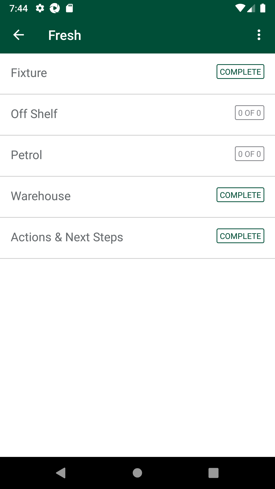
Then I click on "Print and Place Shelf Edge Label" Action labelStep skippedAnd I enter qty "5" and click on Confirm buttonStep skippedFailSMA-31414_Department_Location_Select department then select product and verify user is able to select 1 actions out of "Check Merchandising Plan" and "Print & Place Shelf Edge Label".When I enter Username and Password for SMA Collegue userAnd I click on login button for SMAThen I click on 'stockMngmtText' on page 'HomePagePO_New'Then I click on "Prompted Counts"Then I click on "Fresh"Then I click on "Petrol"And I verify "Check Merchandising Plan" Action label is displayedcom.morrisons.common.action.Hook.afterScenario(io.cucumber.java.Scenario)Then I click on "Check Merchandising Plan" Action labelStep skippedAnd I enter qty "5" and click on Confirm buttonStep skippedFailSMA-31414_Department_Location_Select department then select product and verify user is able to select 1 actions out of "Check Merchandising Plan" and "Print & Place Shelf Edge Label".When I enter Username and Password for SMA Collegue userAnd I click on login button for SMAThen I click on 'stockMngmtText' on page 'HomePagePO_New'Then I click on "Prompted Counts"Then I click on "Market Street"Then I click on "Off Shelf"And I verify "Check Merchandising Plan" Action label is displayedcom.morrisons.common.action.Hook.afterScenario(io.cucumber.java.Scenario)Then I click on "Check Merchandising Plan" Action labelStep skippedAnd I enter qty "5" and click on Confirm buttonStep skippedFailSMA-31414_Department_Location_Select department then select product and verify user is able to select 1 actions out of "Check Merchandising Plan" and "Print & Place Shelf Edge Label".When I enter Username and Password for SMA Collegue userAnd I click on login button for SMAThen I click on 'stockMngmtText' on page 'HomePagePO_New'Then I click on "Prompted Counts"Then I click on "Market Street"Then I click on "Petrol"And I verify "Print and Place Shelf Edge Label" Action label is displayedcom.morrisons.common.action.Hook.afterScenario(io.cucumber.java.Scenario)Then I click on "Print and Place Shelf Edge Label" Action labelStep skippedAnd I enter qty "5" and click on Confirm buttonStep skippedFailSMA-31414_Department_Location_Select department then select product and verify user is able to select 1 actions out of "Check Merchandising Plan" and "Print & Place Shelf Edge Label".When I enter Username and Password for SMA Collegue userAnd I click on login button for SMAThen I click on 'stockMngmtText' on page 'HomePagePO_New'Then I click on "Prompted Counts"Then I click on "Services"Then I click on "Off Shelf"And I verify "Check Merchandising Plan" Action label is displayedcom.morrisons.common.action.Hook.afterScenario(io.cucumber.java.Scenario)Then I click on "Check Merchandising Plan" Action labelStep skippedAnd I enter qty "5" and click on Confirm buttonStep skippedFailSMA-31414_Department_Location_Select department then select product and verify user is able to select 1 actions out of "Check Merchandising Plan" and "Print & Place Shelf Edge Label".When I enter Username and Password for SMA Collegue userAnd I click on login button for SMAThen I click on 'stockMngmtText' on page 'HomePagePO_New'Then I click on "Prompted Counts"Then I click on "Services"Then I click on "Petrol"And I verify "Print and Place Shelf Edge Label" Action label is displayedcom.morrisons.common.action.Hook.afterScenario(io.cucumber.java.Scenario)Then I click on "Print and Place Shelf Edge Label" Action labelStep skippedAnd I enter qty "5" and click on Confirm buttonStep skippedFailSMA-31429_Department_Location_Verify Actions & Next Steps - Print & place label - Place Label functionality.FailSMA-31429_Department_Location_Verify Actions & Next Steps - Print & place label - Place Label functionality.When I enter Username and Password for SMA Collegue userAnd I click on login button for SMAThen I click on 'stockMngmtText' on page 'HomePagePO_New'Then I click on "Prompted Counts"Then I click on "Ambient & Frozen"Then I click on "Fixture"And I verify "Print and Place Shelf Edge Label" Action label is displayedcom.morrisons.common.action.Hook.afterScenario(io.cucumber.java.Scenario)Then I click on "Print and Place Shelf Edge Label" Action labelStep skippedAnd I enter qty "5" and click on Confirm buttonStep skippedThen I verify Request Label screen UIStep skippedAnd I click on Continue Button on Request label pageStep skippedAnd I click on Back ButtonStep skippedThen I click on "Actions & Next Steps"Step skippedThen I verify Action & Next steps screen is displayedStep skippedAnd I verify Print & Place Labels action tile is displayed on Action & Next steps pageStep skippedAnd I click on Print & Place Labels on Action & Next steps pageStep skippedThen I verify Print & Place Labels screen is displayedStep skippedAnd I verify details on Print & Place Labels screenStep skippedThen I click on Place labels buttonStep skippedThen I verify Place labels screen with Product details are displayedStep skippedFailSMA-31429_Department_Location_Verify Actions & Next Steps - Print & place label - Place Label functionality.When I enter Username and Password for SMA Collegue userAnd I click on login button for SMAThen I click on 'stockMngmtText' on page 'HomePagePO_New'Then I click on "Prompted Counts"Then I click on "Fresh"Then I click on "Fixture"And I verify "Print and Place Shelf Edge Label" Action label is displayedcom.morrisons.common.action.Hook.afterScenario(io.cucumber.java.Scenario)Then I click on "Print and Place Shelf Edge Label" Action labelStep skippedAnd I enter qty "5" and click on Confirm buttonStep skippedThen I verify Request Label screen UIStep skippedAnd I click on Continue Button on Request label pageStep skippedAnd I click on Back ButtonStep skippedThen I click on "Actions & Next Steps"Step skippedThen I verify Action & Next steps screen is displayedStep skippedAnd I verify Print & Place Labels action tile is displayed on Action & Next steps pageStep skippedAnd I click on Print & Place Labels on Action & Next steps pageStep skippedThen I verify Print & Place Labels screen is displayedStep skippedAnd I verify details on Print & Place Labels screenStep skippedThen I click on Place labels buttonStep skippedThen I verify Place labels screen with Product details are displayedStep skippedFailSMA-31429_Department_Location_Verify Actions & Next Steps - Print & place label - Place Label functionality.When I enter Username and Password for SMA Collegue userAnd I click on login button for SMAThen I click on 'stockMngmtText' on page 'HomePagePO_New'Then I click on "Prompted Counts"Then I click on "Market Street"Then I click on "Fixture"And I verify "Print and Place Shelf Edge Label" Action label is displayedThen I click on "Print and Place Shelf Edge Label" Action labelAnd I enter qty "5" and click on Confirm buttonThen I verify Request Label screen UIAnd I click on Continue Button on Request label pageAnd I click on Back ButtonThen I click on "Actions & Next Steps"Then I verify Action & Next steps screen is displayedAnd I verify Print & Place Labels action tile is displayed on Action & Next steps pageAnd I click on Print & Place Labels on Action & Next steps pageThen I verify Print & Place Labels screen is displayedcom.morrisons.common.action.Hook.afterScenario(io.cucumber.java.Scenario)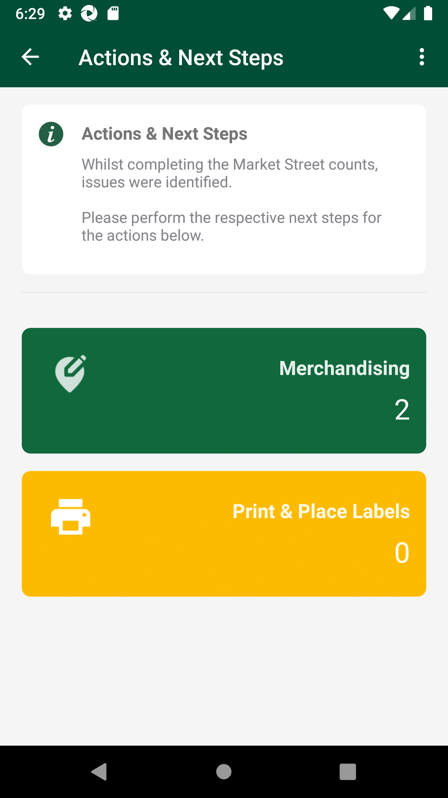
And I verify details on Print & Place Labels screenStep skippedThen I click on Place labels buttonStep skippedThen I verify Place labels screen with Product details are displayedStep skippedFailSMA-31429_Department_Location_Verify Actions & Next Steps - Print & place label - Place Label functionality.When I enter Username and Password for SMA Collegue userAnd I click on login button for SMAThen I click on 'stockMngmtText' on page 'HomePagePO_New'Then I click on "Prompted Counts"Then I click on "Services"Then I click on "Fixture"And I verify "Print and Place Shelf Edge Label" Action label is displayedcom.morrisons.common.action.Hook.afterScenario(io.cucumber.java.Scenario)Then I click on "Print and Place Shelf Edge Label" Action labelStep skippedAnd I enter qty "5" and click on Confirm buttonStep skippedThen I verify Request Label screen UIStep skippedAnd I click on Continue Button on Request label pageStep skippedAnd I click on Back ButtonStep skippedThen I click on "Actions & Next Steps"Step skippedThen I verify Action & Next steps screen is displayedStep skippedAnd I verify Print & Place Labels action tile is displayed on Action & Next steps pageStep skippedAnd I click on Print & Place Labels on Action & Next steps pageStep skippedThen I verify Print & Place Labels screen is displayedStep skippedAnd I verify details on Print & Place Labels screenStep skippedThen I click on Place labels buttonStep skippedThen I verify Place labels screen with Product details are displayedStep skippedFailSMA-31429_Department_Location_Verify Actions & Next Steps - Print & place label - Place Label functionality.When I enter Username and Password for SMA Collegue userAnd I click on login button for SMAThen I click on 'stockMngmtText' on page 'HomePagePO_New'Then I click on "Prompted Counts"Then I click on "Ambient & Frozen"Then I click on "Prompted Counts"com.morrisons.common.action.Hook.afterScenario(io.cucumber.java.Scenario)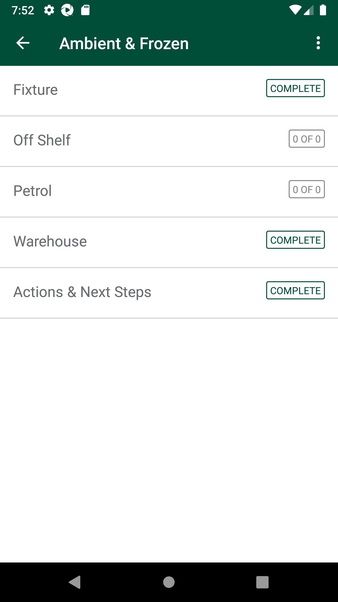
Then I click on "Off Shelf"Step skippedAnd I verify "Print and Place Shelf Edge Label" is displayedStep skippedThen I click on "Print and Place Shelf Edge Label" Action labelStep skippedAnd I enter qty "5" and click on Confirm buttonStep skippedThen I verify Request Label screen UIStep skippedAnd I select "A4P White POS" Label sizeStep skippedThen I click on Continue Button on Request label pageStep skippedAnd I click on Back ButtonStep skippedThen I click on "Actions & Next Steps"Step skippedThen I verify Action & Next steps screen is displayedStep skippedAnd I click on Print & Place LabelsStep skippedThen I verify Print & Place Labels screen is displayedStep skippedAnd I click on Place labels buttonStep skippedThen I verify Place labels screenStep skippedThen I click on Confirm buttonStep skippedAnd I verify Print & place label is displayed with status as CompletedStep skippedFailSMA-31429_Department_Location_Verify Actions & Next Steps - Print & place label - Place Label functionality.When I enter Username and Password for SMA Collegue userAnd I click on login button for SMAThen I click on 'stockMngmtText' on page 'HomePagePO_New'Then I click on "Prompted Counts"Then I click on "Ambient & Frozen"Then I click on "Prompted Counts"com.morrisons.common.action.Hook.afterScenario(io.cucumber.java.Scenario)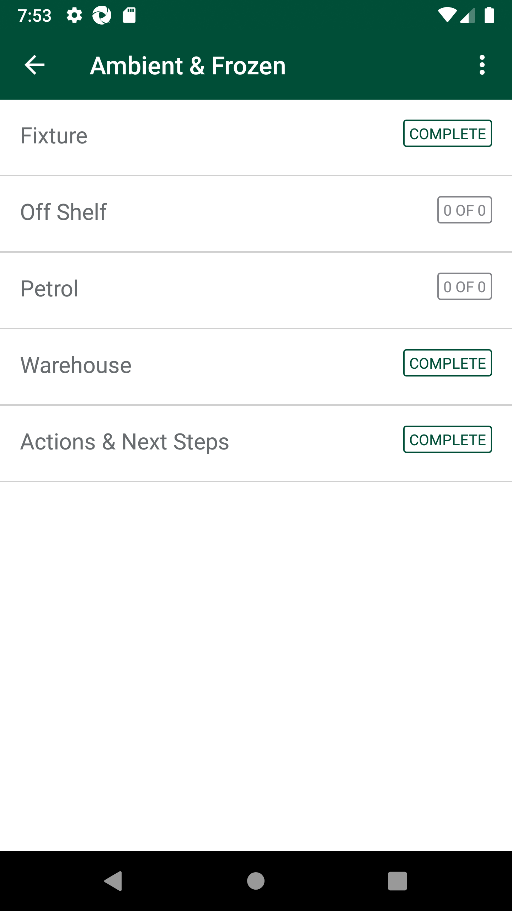
Then I click on "Petrol"Step skippedAnd I verify "Print and Place Shelf Edge Label" is displayedStep skippedThen I click on "Print and Place Shelf Edge Label" Action labelStep skippedAnd I enter qty "5" and click on Confirm buttonStep skippedThen I verify Request Label screen UIStep skippedAnd I select "Medium White POS" Label sizeStep skippedThen I click on Continue Button on Request label pageStep skippedAnd I click on Back ButtonStep skippedThen I click on "Actions & Next Steps"Step skippedThen I verify Action & Next steps screen is displayedStep skippedAnd I click on Print & Place LabelsStep skippedThen I verify Print & Place Labels screen is displayedStep skippedAnd I click on Place labels buttonStep skippedThen I verify Place labels screenStep skippedThen I click on Confirm buttonStep skippedAnd I verify Print & place label is displayed with status as CompletedStep skippedFailSMA-31429_Department_Location_Verify Actions & Next Steps - Print & place label - Place Label functionality.When I enter Username and Password for SMA Collegue userAnd I click on login button for SMAThen I click on 'stockMngmtText' on page 'HomePagePO_New'Then I click on "Prompted Counts"Then I click on "Fresh"Then I click on "Prompted Counts"com.morrisons.common.action.Hook.afterScenario(io.cucumber.java.Scenario)Then I click on "Off Shelf"Step skippedAnd I verify "Print and Place Shelf Edge Label" is displayedStep skippedThen I click on "Print and Place Shelf Edge Label" Action labelStep skippedAnd I enter qty "5" and click on Confirm buttonStep skippedThen I verify Request Label screen UIStep skippedAnd I select "Medium White POS" Label sizeStep skippedThen I click on Continue Button on Request label pageStep skippedAnd I click on Back ButtonStep skippedThen I click on "Actions & Next Steps"Step skippedThen I verify Action & Next steps screen is displayedStep skippedAnd I click on Print & Place LabelsStep skippedThen I verify Print & Place Labels screen is displayedStep skippedAnd I click on Place labels buttonStep skippedThen I verify Place labels screenStep skippedThen I click on Confirm buttonStep skippedAnd I verify Print & place label is displayed with status as CompletedStep skippedFailSMA-31429_Department_Location_Verify Actions & Next Steps - Print & place label - Place Label functionality.When I enter Username and Password for SMA Collegue userAnd I click on login button for SMAThen I click on 'stockMngmtText' on page 'HomePagePO_New'Then I click on "Prompted Counts"Then I click on "Fresh"Then I click on "Prompted Counts"com.morrisons.common.action.Hook.afterScenario(io.cucumber.java.Scenario)Then I click on "Petrol"Step skippedAnd I verify "Print and Place Shelf Edge Label" is displayedStep skippedThen I click on "Print and Place Shelf Edge Label" Action labelStep skippedAnd I enter qty "5" and click on Confirm buttonStep skippedThen I verify Request Label screen UIStep skippedAnd I select "Default" Label sizeStep skippedThen I click on Continue Button on Request label pageStep skippedAnd I click on Back ButtonStep skippedThen I click on "Actions & Next Steps"Step skippedThen I verify Action & Next steps screen is displayedStep skippedAnd I click on Print & Place LabelsStep skippedThen I verify Print & Place Labels screen is displayedStep skippedAnd I click on Place labels buttonStep skippedThen I verify Place labels screenStep skippedThen I click on Confirm buttonStep skippedAnd I verify Print & place label is displayed with status as CompletedStep skippedFailSMA-31429_Department_Location_Verify Actions & Next Steps - Print & place label - Place Label functionality.When I enter Username and Password for SMA Collegue userAnd I click on login button for SMAThen I click on 'stockMngmtText' on page 'HomePagePO_New'Then I click on "Prompted Counts"Then I click on "Market Street"Then I click on "Prompted Counts"com.morrisons.common.action.Hook.afterScenario(io.cucumber.java.Scenario)Then I click on "Off Shelf"Step skippedAnd I verify "Print and Place Shelf Edge Label" is displayedStep skippedThen I click on "Print and Place Shelf Edge Label" Action labelStep skippedAnd I enter qty "5" and click on Confirm buttonStep skippedThen I verify Request Label screen UIStep skippedAnd I select "Default" Label sizeStep skippedThen I click on Continue Button on Request label pageStep skippedAnd I click on Back ButtonStep skippedThen I click on "Actions & Next Steps"Step skippedThen I verify Action & Next steps screen is displayedStep skippedAnd I click on Print & Place LabelsStep skippedThen I verify Print & Place Labels screen is displayedStep skippedAnd I click on Place labels buttonStep skippedThen I verify Place labels screenStep skippedThen I click on Confirm buttonStep skippedAnd I verify Print & place label is displayed with status as CompletedStep skippedFailSMA-31429_Department_Location_Verify Actions & Next Steps - Print & place label - Place Label functionality.When I enter Username and Password for SMA Collegue userAnd I click on login button for SMAThen I click on 'stockMngmtText' on page 'HomePagePO_New'Then I click on "Prompted Counts"Then I click on "Market Street"Then I click on "Prompted Counts"com.morrisons.common.action.Hook.afterScenario(io.cucumber.java.Scenario)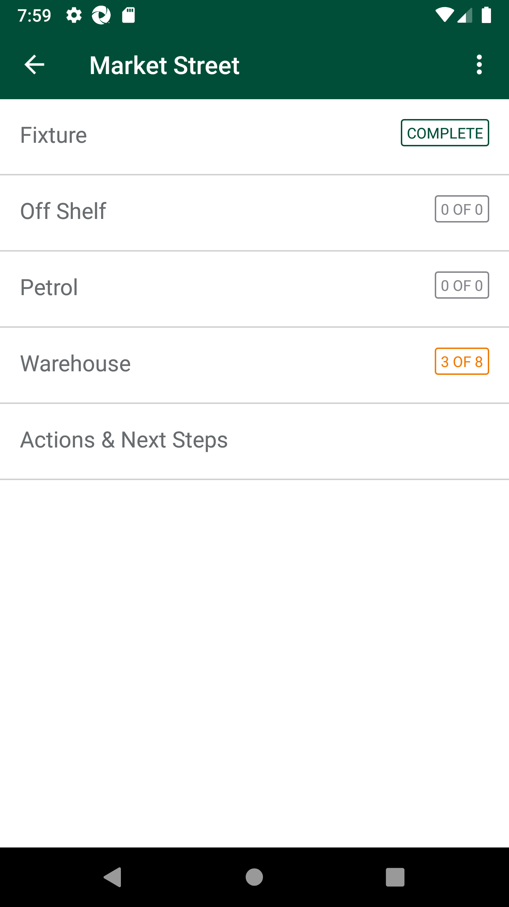
Then I click on "Petrol"Step skippedAnd I verify "Print and Place Shelf Edge Label" is displayedStep skippedThen I click on "Print and Place Shelf Edge Label" Action labelStep skippedAnd I enter qty "5" and click on Confirm buttonStep skippedThen I verify Request Label screen UIStep skippedAnd I select "A4P White POS" Label sizeStep skippedThen I click on Continue Button on Request label pageStep skippedAnd I click on Back ButtonStep skippedThen I click on "Actions & Next Steps"Step skippedThen I verify Action & Next steps screen is displayedStep skippedAnd I click on Print & Place LabelsStep skippedThen I verify Print & Place Labels screen is displayedStep skippedAnd I click on Place labels buttonStep skippedThen I verify Place labels screenStep skippedThen I click on Confirm buttonStep skippedAnd I verify Print & place label is displayed with status as CompletedStep skippedFailSMA-31429_Department_Location_Verify Actions & Next Steps - Print & place label - Place Label functionality.When I enter Username and Password for SMA Collegue userAnd I click on login button for SMAThen I click on 'stockMngmtText' on page 'HomePagePO_New'Then I click on "Prompted Counts"Then I click on "Services"Then I click on "Prompted Counts"com.morrisons.common.action.Hook.afterScenario(io.cucumber.java.Scenario)Then I click on "Off Shelf"Step skippedAnd I verify "Print and Place Shelf Edge Label" is displayedStep skippedThen I click on "Print and Place Shelf Edge Label" Action labelStep skippedAnd I enter qty "5" and click on Confirm buttonStep skippedThen I verify Request Label screen UIStep skippedAnd I select "A4P White POS" Label sizeStep skippedThen I click on Continue Button on Request label pageStep skippedAnd I click on Back ButtonStep skippedThen I click on "Actions & Next Steps"Step skippedThen I verify Action & Next steps screen is displayedStep skippedAnd I click on Print & Place LabelsStep skippedThen I verify Print & Place Labels screen is displayedStep skippedAnd I click on Place labels buttonStep skippedThen I verify Place labels screenStep skippedThen I click on Confirm buttonStep skippedAnd I verify Print & place label is displayed with status as CompletedStep skippedFailSMA-31429_Department_Location_Verify Actions & Next Steps - Print & place label - Place Label functionality.When I enter Username and Password for SMA Collegue userAnd I click on login button for SMAThen I click on 'stockMngmtText' on page 'HomePagePO_New'Then I click on "Prompted Counts"Then I click on "Services"Then I click on "Prompted Counts"com.morrisons.common.action.Hook.afterScenario(io.cucumber.java.Scenario)Then I click on "Petrol"Step skippedAnd I verify "Print and Place Shelf Edge Label" is displayedStep skippedThen I click on "Print and Place Shelf Edge Label" Action labelStep skippedAnd I enter qty "5" and click on Confirm buttonStep skippedThen I verify Request Label screen UIStep skippedAnd I select "Medium White POS" Label sizeStep skippedThen I click on Continue Button on Request label pageStep skippedAnd I click on Back ButtonStep skippedThen I click on "Actions & Next Steps"Step skippedThen I verify Action & Next steps screen is displayedStep skippedAnd I click on Print & Place LabelsStep skippedThen I verify Print & Place Labels screen is displayedStep skippedAnd I click on Place labels buttonStep skippedThen I verify Place labels screenStep skippedThen I click on Confirm buttonStep skippedAnd I verify Print & place label is displayed with status as CompletedStep skippedFailSMA-31422_Department_Location_Complete the Location and Message is displayed after completion of location.FailSMA-31422_Department_Location_Complete the Location and Message is displayed after completion of location.When I enter Username and Password for SMA Collegue userAnd I click on login button for SMAThen I click on 'stockMngmtText' on page 'HomePagePO_New'Then I click on "Prompted Counts"Then I click on "Ambient & Frozen"Then I click on "Fixture"And I verify Item list count is displayedcom.morrisons.common.action.Hook.afterScenario(io.cucumber.java.Scenario)Then I enter qty "5" and click on Confirm button for all the productsStep skippedAnd I verify "You have completed Fixture checks for Ambient & Frozen" message is displayedStep skippedFailSMA-31422_Department_Location_Complete the Location and Message is displayed after completion of location.When I enter Username and Password for SMA Collegue userAnd I click on login button for SMAThen I click on 'stockMngmtText' on page 'HomePagePO_New'Then I click on "Prompted Counts"Then I click on "Fresh"Then I click on "Fixture"And I verify Item list count is displayedcom.morrisons.common.action.Hook.afterScenario(io.cucumber.java.Scenario)Then I enter qty "5" and click on Confirm button for all the productsStep skippedAnd I verify "You have completed Fixture checks for Fresh" message is displayedStep skippedPassSMA-31422_Department_Location_Complete the Location and Message is displayed after completion of location.When I enter Username and Password for SMA Collegue userAnd I click on login button for SMAThen I click on 'stockMngmtText' on page 'HomePagePO_New'Then I click on "Prompted Counts"Then I click on "Market Street"Then I click on "Fixture"And I verify Item list count is displayedThen I enter qty "5" and click on Confirm button for all the productsAnd I verify "You have completed Fixture checks for Market Street" message is displayedFailSMA-31422_Department_Location_Complete the Location and Message is displayed after completion of location.When I enter Username and Password for SMA Collegue userAnd I click on login button for SMAThen I click on 'stockMngmtText' on page 'HomePagePO_New'Then I click on "Prompted Counts"Then I click on "Services"Then I click on "Fixture"And I verify Item list count is displayedcom.morrisons.common.action.Hook.afterScenario(io.cucumber.java.Scenario)Then I enter qty "5" and click on Confirm button for all the productsStep skippedAnd I verify "You have completed Fixture checks for Services" message is displayedStep skippedFailSMA-31422_Department_Location_Complete the Location and Message is displayed after completion of location.When I enter Username and Password for SMA Collegue userAnd I click on login button for SMAThen I click on 'stockMngmtText' on page 'HomePagePO_New'Then I click on "Prompted Counts"Then I click on "Ambient & Frozen"Then I click on "Off Shelf"And I verify Item list count is displayedcom.morrisons.common.action.Hook.afterScenario(io.cucumber.java.Scenario)Then I enter qty "5" and click on Confirm buttonStep skippedAnd I verify "You have completed Off Shelf checks for Ambient & Frozen" message is displayedStep skippedFailSMA-31422_Department_Location_Complete the Location and Message is displayed after completion of location.When I enter Username and Password for SMA Collegue userAnd I click on login button for SMAThen I click on 'stockMngmtText' on page 'HomePagePO_New'Then I click on "Prompted Counts"Then I click on "Ambient & Frozen"Then I click on "Petrol"And I verify Item list count is displayedcom.morrisons.common.action.Hook.afterScenario(io.cucumber.java.Scenario)Then I enter qty "5" and click on Confirm buttonStep skippedAnd I verify "You have completed Petrol checks for Ambient & Frozen" message is displayedStep skippedFailSMA-31422_Department_Location_Complete the Location and Message is displayed after completion of location.When I enter Username and Password for SMA Collegue userAnd I click on login button for SMAThen I click on 'stockMngmtText' on page 'HomePagePO_New'Then I click on "Prompted Counts"Then I click on "Fresh"Then I click on "Off Shelf"And I verify Item list count is displayedcom.morrisons.common.action.Hook.afterScenario(io.cucumber.java.Scenario)Then I enter qty "5" and click on Confirm buttonStep skippedAnd I verify "You have completed Off Shelf checks for Fresh" message is displayedStep skippedFailSMA-31422_Department_Location_Complete the Location and Message is displayed after completion of location.When I enter Username and Password for SMA Collegue userAnd I click on login button for SMAThen I click on 'stockMngmtText' on page 'HomePagePO_New'Then I click on "Prompted Counts"Then I click on "Fresh"Then I click on "Petrol"And I verify Item list count is displayedcom.morrisons.common.action.Hook.afterScenario(io.cucumber.java.Scenario)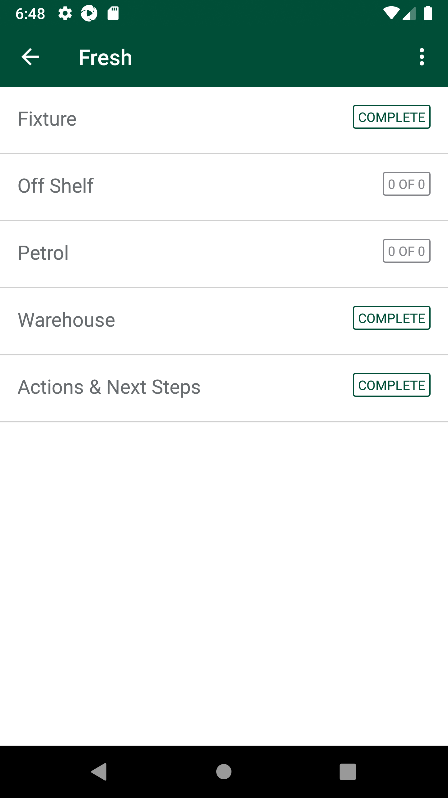
Then I enter qty "5" and click on Confirm buttonStep skippedAnd I verify "You have completed Petrol checks for Fresh" message is displayedStep skippedFailSMA-31422_Department_Location_Complete the Location and Message is displayed after completion of location.When I enter Username and Password for SMA Collegue userAnd I click on login button for SMAThen I click on 'stockMngmtText' on page 'HomePagePO_New'Then I click on "Prompted Counts"Then I click on "Market Street"Then I click on "Off Shelf"And I verify Item list count is displayedcom.morrisons.common.action.Hook.afterScenario(io.cucumber.java.Scenario)Then I enter qty "5" and click on Confirm buttonStep skippedAnd I verify "You have completed Off Shelf checks for Market Street" message is displayedStep skippedFailSMA-31422_Department_Location_Complete the Location and Message is displayed after completion of location.When I enter Username and Password for SMA Collegue userAnd I click on login button for SMAThen I click on 'stockMngmtText' on page 'HomePagePO_New'Then I click on "Prompted Counts"Then I click on "Market Street"Then I click on "Petrol"And I verify Item list count is displayedcom.morrisons.common.action.Hook.afterScenario(io.cucumber.java.Scenario)Then I enter qty "5" and click on Confirm buttonStep skippedAnd I verify "You have completed Petrol checks for Market Street" message is displayedStep skippedFailSMA-31422_Department_Location_Complete the Location and Message is displayed after completion of location.When I enter Username and Password for SMA Collegue userAnd I click on login button for SMAThen I click on 'stockMngmtText' on page 'HomePagePO_New'Then I click on "Prompted Counts"Then I click on "Services"Then I click on "Off Shelf"And I verify Item list count is displayedcom.morrisons.common.action.Hook.afterScenario(io.cucumber.java.Scenario)Then I enter qty "5" and click on Confirm buttonStep skippedAnd I verify "You have completed Off Shelf checks for Services" message is displayedStep skippedFailSMA-31422_Department_Location_Complete the Location and Message is displayed after completion of location.When I enter Username and Password for SMA Collegue userAnd I click on login button for SMAThen I click on 'stockMngmtText' on page 'HomePagePO_New'Then I click on "Prompted Counts"Then I click on "Services"Then I click on "Petrol"And I verify Item list count is displayedcom.morrisons.common.action.Hook.afterScenario(io.cucumber.java.Scenario)Then I enter qty "5" and click on Confirm buttonStep skippedAnd I verify "You have completed Petrol checks for Services" message is displayedStep skippedFailSMA-31422_Department_Location_Complete the Location and Message is displayed after completion of location.When I enter Username and Password for SMA Collegue userAnd I click on login button for SMAThen I click on 'stockMngmtText' on page 'HomePagePO_New'Then I click on "Prompted Counts"Then I click on "Ambient & Frozen"Then I click on "Warehouse"And I verify Item list count is displayedcom.morrisons.common.action.Hook.afterScenario(io.cucumber.java.Scenario)Then I verify details on Warehouse screenStep skippedThen I enter qty "5" and click on Confirm button for all the productsStep skippedAnd I verify "You have completed Warehouse checks for Ambient & Frozen" message is displayedStep skippedFailSMA-31422_Department_Location_Complete the Location and Message is displayed after completion of location.com.morrisons.common.action.Hook.smaBefore()When I enter Username and Password for SMA Collegue userStep skippedAnd I click on login button for SMAStep skippedThen I click on 'stockMngmtText' on page 'HomePagePO_New'Step skippedThen I click on "Prompted Counts"Step skippedThen I click on "Fresh"Step skippedThen I click on "Warehouse"Step skippedAnd I verify Item list count is displayedStep skippedThen I verify details on Warehouse screenStep skippedThen I enter qty "5" and click on Confirm button for all the productsStep skippedAnd I verify "You have completed Warehouse checks for Fresh" message is displayedStep skippedFailSMA-31422_Department_Location_Complete the Location and Message is displayed after completion of location.com.morrisons.common.action.Hook.smaBefore()When I enter Username and Password for SMA Collegue userStep skippedAnd I click on login button for SMAStep skippedThen I click on 'stockMngmtText' on page 'HomePagePO_New'Step skippedThen I click on "Prompted Counts"Step skippedThen I click on "Market Street"Step skippedThen I click on "Warehouse"Step skippedAnd I verify Item list count is displayedStep skippedThen I verify details on Warehouse screenStep skippedThen I enter qty "5" and click on Confirm button for all the productsStep skippedAnd I verify "You have completed Warehouse checks for Market Street" message is displayedStep skippedFailSMA-31422_Department_Location_Complete the Location and Message is displayed after completion of location.com.morrisons.common.action.Hook.smaBefore()When I enter Username and Password for SMA Collegue userStep skippedAnd I click on login button for SMAStep skippedThen I click on 'stockMngmtText' on page 'HomePagePO_New'Step skippedThen I click on "Prompted Counts"Step skippedThen I click on "Services"Step skippedThen I click on "Warehouse"Step skippedAnd I verify Item list count is displayedStep skippedThen I verify details on Warehouse screenStep skippedThen I enter qty "5" and click on Confirm button for all the productsStep skippedAnd I verify "You have completed Warehouse checks for Services" message is displayedStep skippedFailSMA-31422_Department_Location_After clicking on "REVIEW & EDIT", verify History screen is displayed with list of completed products with total count.PassSMA-31422_Department_Location_After clicking on "REVIEW & EDIT", verify History screen is displayed with list of completed products with total count.When I enter Username and Password for SMA Collegue userAnd I click on login button for SMAThen I click on 'stockMngmtText' on page 'HomePagePO_New'Then I click on "Prompted Counts"Then I click on "Ambient & Frozen"Then I click on "Fixture"And I verify "You have completed Fixture checks for Ambient & Frozen" message is displayedAnd I verify REVIEW & EDIT button is displayedThen I click on REVIEW & EDIT buttonAnd I verify History screen is displayed with list of completed products with total countPassSMA-31422_Department_Location_After clicking on "REVIEW & EDIT", verify History screen is displayed with list of completed products with total count.When I enter Username and Password for SMA Collegue userAnd I click on login button for SMAThen I click on 'stockMngmtText' on page 'HomePagePO_New'Then I click on "Prompted Counts"Then I click on "Fresh"Then I click on "Fixture"And I verify "You have completed Fixture checks for Fresh" message is displayedAnd I verify REVIEW & EDIT button is displayedThen I click on REVIEW & EDIT buttonAnd I verify History screen is displayed with list of completed products with total countFailSMA-31422_Department_Location_After clicking on "REVIEW & EDIT", verify History screen is displayed with list of completed products with total count.When I enter Username and Password for SMA Collegue userAnd I click on login button for SMAThen I click on 'stockMngmtText' on page 'HomePagePO_New'Then I click on "Prompted Counts"Then I click on "Market Street"Then I click on "Fixture"And I verify "You have completed Fixture checks for Market Street" message is displayedcom.morrisons.common.action.Hook.afterScenario(io.cucumber.java.Scenario)And I verify REVIEW & EDIT button is displayedStep skippedThen I click on REVIEW & EDIT buttonStep skippedAnd I verify History screen is displayed with list of completed products with total countStep skippedPassSMA-31422_Department_Location_After clicking on "REVIEW & EDIT", verify History screen is displayed with list of completed products with total count.When I enter Username and Password for SMA Collegue userAnd I click on login button for SMAThen I click on 'stockMngmtText' on page 'HomePagePO_New'Then I click on "Prompted Counts"Then I click on "Services"Then I click on "Fixture"And I verify "You have completed Fixture checks for Services" message is displayedAnd I verify REVIEW & EDIT button is displayedThen I click on REVIEW & EDIT buttonAnd I verify History screen is displayed with list of completed products with total countFailSMA-31422_Department_Location_After clicking on "REVIEW & EDIT", verify History screen is displayed with list of completed products with total count.When I enter Username and Password for SMA Collegue usercom.morrisons.common.action.Hook.afterScenario(io.cucumber.java.Scenario)And I click on login button for SMAStep skippedThen I click on 'stockMngmtText' on page 'HomePagePO_New'Step skippedThen I click on "Prompted Counts"Step skippedThen I click on "Ambient & Frozen"Step skippedThen I click on "Off Shelf"Step skippedAnd I verify "You have completed Off Shelf checks for Ambient & Frozen" message is displayedStep skippedAnd I verify REVIEW & EDIT button is displayedStep skippedThen I click on REVIEW & EDIT buttonStep skippedAnd I verify History screen is displayed with list of completed products with total countStep skippedFailSMA-31422_Department_Location_After clicking on "REVIEW & EDIT", verify History screen is displayed with list of completed products with total count.When I enter Username and Password for SMA Collegue userAnd I click on login button for SMAThen I click on 'stockMngmtText' on page 'HomePagePO_New'Then I click on "Prompted Counts"Then I click on "Ambient & Frozen"Then I click on "Petrol"And I verify "You have completed Petrol checks for Ambient & Frozen" message is displayedcom.morrisons.common.action.Hook.afterScenario(io.cucumber.java.Scenario)And I verify REVIEW & EDIT button is displayedStep skippedThen I click on REVIEW & EDIT buttonStep skippedAnd I verify History screen is displayed with list of completed products with total countStep skippedFailSMA-31422_Department_Location_After clicking on "REVIEW & EDIT", verify History screen is displayed with list of completed products with total count.When I enter Username and Password for SMA Collegue userAnd I click on login button for SMAThen I click on 'stockMngmtText' on page 'HomePagePO_New'Then I click on "Prompted Counts"Then I click on "Fresh"Then I click on "Off Shelf"And I verify "You have completed Off Shelf checks for Fresh" message is displayedcom.morrisons.common.action.Hook.afterScenario(io.cucumber.java.Scenario)And I verify REVIEW & EDIT button is displayedStep skippedThen I click on REVIEW & EDIT buttonStep skippedAnd I verify History screen is displayed with list of completed products with total countStep skippedFailSMA-31422_Department_Location_After clicking on "REVIEW & EDIT", verify History screen is displayed with list of completed products with total count.When I enter Username and Password for SMA Collegue userAnd I click on login button for SMAThen I click on 'stockMngmtText' on page 'HomePagePO_New'Then I click on "Prompted Counts"Then I click on "Fresh"Then I click on "Petrol"And I verify "You have completed Petrol checks for Fresh" message is displayedcom.morrisons.common.action.Hook.afterScenario(io.cucumber.java.Scenario) And I verify REVIEW & EDIT button is displayedStep skippedThen I click on REVIEW & EDIT buttonStep skippedAnd I verify History screen is displayed with list of completed products with total countStep skippedFailSMA-31422_Department_Location_After clicking on "REVIEW & EDIT", verify History screen is displayed with list of completed products with total count.When I enter Username and Password for SMA Collegue userAnd I click on login button for SMAThen I click on 'stockMngmtText' on page 'HomePagePO_New'Then I click on "Prompted Counts"Then I click on "Market Street"Then I click on "Off Shelf"And I verify "You have completed Off Shelf checks for Market Street" message is displayedcom.morrisons.common.action.Hook.afterScenario(io.cucumber.java.Scenario)And I verify REVIEW & EDIT button is displayedStep skippedThen I click on REVIEW & EDIT buttonStep skippedAnd I verify History screen is displayed with list of completed products with total countStep skippedFailSMA-31422_Department_Location_After clicking on "REVIEW & EDIT", verify History screen is displayed with list of completed products with total count.When I enter Username and Password for SMA Collegue userAnd I click on login button for SMAThen I click on 'stockMngmtText' on page 'HomePagePO_New'Then I click on "Prompted Counts"Then I click on "Market Street"Then I click on "Petrol"And I verify "You have completed Petrol checks for Market Street" message is displayedcom.morrisons.common.action.Hook.afterScenario(io.cucumber.java.Scenario)And I verify REVIEW & EDIT button is displayedStep skippedThen I click on REVIEW & EDIT buttonStep skippedAnd I verify History screen is displayed with list of completed products with total countStep skippedFailSMA-31422_Department_Location_After clicking on "REVIEW & EDIT", verify History screen is displayed with list of completed products with total count.When I enter Username and Password for SMA Collegue userAnd I click on login button for SMAThen I click on 'stockMngmtText' on page 'HomePagePO_New'Then I click on "Prompted Counts"Then I click on "Services"Then I click on "Off Shelf"And I verify "You have completed Off Shelf checks for Services" message is displayedcom.morrisons.common.action.Hook.afterScenario(io.cucumber.java.Scenario)And I verify REVIEW & EDIT button is displayedStep skippedThen I click on REVIEW & EDIT buttonStep skippedAnd I verify History screen is displayed with list of completed products with total countStep skippedFailSMA-31422_Department_Location_After clicking on "REVIEW & EDIT", verify History screen is displayed with list of completed products with total count.When I enter Username and Password for SMA Collegue userAnd I click on login button for SMAThen I click on 'stockMngmtText' on page 'HomePagePO_New'Then I click on "Prompted Counts"Then I click on "Services"Then I click on "Petrol"And I verify "You have completed Petrol checks for Services" message is displayedcom.morrisons.common.action.Hook.afterScenario(io.cucumber.java.Scenario)And I verify REVIEW & EDIT button is displayedStep skippedThen I click on REVIEW & EDIT buttonStep skippedAnd I verify History screen is displayed with list of completed products with total countStep skippedFailSMA-31422_Department_Location_After clicking on "REVIEW & EDIT", verify History screen is displayed with list of completed products with total count.com.morrisons.common.action.Hook.smaBefore()When I enter Username and Password for SMA Collegue userStep skippedAnd I click on login button for SMAStep skippedThen I click on 'stockMngmtText' on page 'HomePagePO_New'Step skippedThen I click on "Prompted Counts"Step skippedThen I click on "Ambient & Frozen"Step skippedThen I click on "Warehouse"Step skippedAnd I verify "You have completed Warehouse checks for Ambient & Frozen" message is displayedStep skippedAnd I verify REVIEW & EDIT button is displayedStep skippedThen I click on REVIEW & EDIT buttonStep skippedAnd I verify History screen is displayed with list of completed products with total countStep skippedFailSMA-31422_Department_Location_After clicking on "REVIEW & EDIT", verify History screen is displayed with list of completed products with total count.When I enter Username and Password for SMA Collegue usercom.morrisons.common.action.Hook.afterScenario(io.cucumber.java.Scenario)
And I verify REVIEW & EDIT button is displayedStep skippedThen I click on REVIEW & EDIT buttonStep skippedAnd I verify History screen is displayed with list of completed products with total countStep skippedFailSMA-31422_Department_Location_After clicking on "REVIEW & EDIT", verify History screen is displayed with list of completed products with total count.When I enter Username and Password for SMA Collegue userAnd I click on login button for SMAThen I click on 'stockMngmtText' on page 'HomePagePO_New'Then I click on "Prompted Counts"Then I click on "Market Street"Then I click on "Off Shelf"And I verify "You have completed Off Shelf checks for Market Street" message is displayedcom.morrisons.common.action.Hook.afterScenario(io.cucumber.java.Scenario)And I verify REVIEW & EDIT button is displayedStep skippedThen I click on REVIEW & EDIT buttonStep skippedAnd I verify History screen is displayed with list of completed products with total countStep skippedFailSMA-31422_Department_Location_After clicking on "REVIEW & EDIT", verify History screen is displayed with list of completed products with total count.When I enter Username and Password for SMA Collegue userAnd I click on login button for SMAThen I click on 'stockMngmtText' on page 'HomePagePO_New'Then I click on "Prompted Counts"Then I click on "Market Street"Then I click on "Petrol"And I verify "You have completed Petrol checks for Market Street" message is displayedcom.morrisons.common.action.Hook.afterScenario(io.cucumber.java.Scenario)And I verify REVIEW & EDIT button is displayedStep skippedThen I click on REVIEW & EDIT buttonStep skippedAnd I verify History screen is displayed with list of completed products with total countStep skippedFailSMA-31422_Department_Location_After clicking on "REVIEW & EDIT", verify History screen is displayed with list of completed products with total count.When I enter Username and Password for SMA Collegue userAnd I click on login button for SMAThen I click on 'stockMngmtText' on page 'HomePagePO_New'Then I click on "Prompted Counts"Then I click on "Services"Then I click on "Off Shelf"And I verify "You have completed Off Shelf checks for Services" message is displayedcom.morrisons.common.action.Hook.afterScenario(io.cucumber.java.Scenario)And I verify REVIEW & EDIT button is displayedStep skippedThen I click on REVIEW & EDIT buttonStep skippedAnd I verify History screen is displayed with list of completed products with total countStep skippedFailSMA-31422_Department_Location_After clicking on "REVIEW & EDIT", verify History screen is displayed with list of completed products with total count.When I enter Username and Password for SMA Collegue userAnd I click on login button for SMAThen I click on 'stockMngmtText' on page 'HomePagePO_New'Then I click on "Prompted Counts"Then I click on "Services"Then I click on "Petrol"And I verify "You have completed Petrol checks for Services" message is displayedcom.morrisons.common.action.Hook.afterScenario(io.cucumber.java.Scenario)And I verify REVIEW & EDIT button is displayedStep skippedThen I click on REVIEW & EDIT buttonStep skippedAnd I verify History screen is displayed with list of completed products with total countStep skippedFailSMA-31422_Department_Location_After clicking on "REVIEW & EDIT", verify History screen is displayed with list of completed products with total count.com.morrisons.common.action.Hook.smaBefore()When I enter Username and Password for SMA Collegue userStep skippedAnd I click on login button for SMAStep skippedThen I click on 'stockMngmtText' on page 'HomePagePO_New'Step skippedThen I click on "Prompted Counts"Step skippedThen I click on "Ambient & Frozen"Step skippedThen I click on "Warehouse"Step skippedAnd I verify "You have completed Warehouse checks for Ambient & Frozen" message is displayedStep skippedAnd I verify REVIEW & EDIT button is displayedStep skippedThen I click on REVIEW & EDIT buttonStep skippedAnd I verify History screen is displayed with list of completed products with total countStep skippedFailSMA-31422_Department_Location_After clicking on "REVIEW & EDIT", verify History screen is displayed with list of completed products with total count.When I enter Username and Password for SMA Collegue usercom.morrisons.common.action.Hook.afterScenario(io.cucumber.java.Scenario)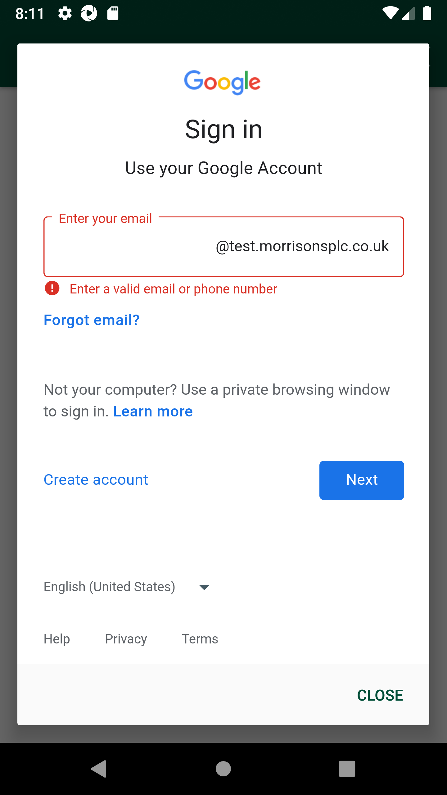
And I click on login button for SMAStep skippedThen I click on 'stockMngmtText' on page 'HomePagePO_New'Step skippedThen I click on "Prompted Counts"Step skippedThen I click on "Fresh"Step skippedThen I click on "Warehouse"Step skippedAnd I verify "You have completed Warehouse checks for Fresh" message is displayedStep skippedAnd I verify REVIEW & EDIT button is displayedStep skippedThen I click on REVIEW & EDIT buttonStep skippedAnd I verify History screen is displayed with list of completed products with total countStep skippedFailSMA-31422_Department_Location_After clicking on "REVIEW & EDIT", verify History screen is displayed with list of completed products with total count.When I enter Username and Password for SMA Collegue userAnd I click on login button for SMAThen I click on 'stockMngmtText' on page 'HomePagePO_New'Then I click on "Prompted Counts"Then I click on "Market Street"Then I click on "Warehouse"And I verify "You have completed Warehouse checks for Market Street" message is displayedcom.morrisons.common.action.Hook.afterScenario(io.cucumber.java.Scenario)And I verify REVIEW & EDIT button is displayedStep skippedThen I click on REVIEW & EDIT buttonStep skippedAnd I verify History screen is displayed with list of completed products with total countStep skippedPassSMA-31422_Department_Location_After clicking on "REVIEW & EDIT", verify History screen is displayed with list of completed products with total count.When I enter Username and Password for SMA Collegue userAnd I click on login button for SMAThen I click on 'stockMngmtText' on page 'HomePagePO_New'Then I click on "Prompted Counts"Then I click on "Services"Then I click on "Warehouse"And I verify "You have completed Warehouse checks for Services" message is displayedAnd I verify REVIEW & EDIT button is displayedThen I click on REVIEW & EDIT buttonAnd I verify History screen is displayed with list of completed products with total countFailSMA-30760_Verify that user able to view Deadline Reminder prompt before half an hour in prompted countsPassSMA-30760_Verify that user able to view Deadline Reminder prompt before half an hour in prompted countsWhen I enter Username and Password for SMA Collegue userAnd I click on login button for SMAThen I click on 'stockMngmtText' on page 'HomePagePO_New'Then I click on "Prompted Counts"Then I click on "Ambient & Frozen"Then I click on "Fixture"And I verify "Deadline Reminder" alert title is displayedAnd I verify "Submissions must be completed prior to the 09:45 AM daily cutoff." alert message is displayedPassSMA-30760_Verify that user able to view Deadline Reminder prompt before half an hour in prompted countsWhen I enter Username and Password for SMA Collegue userAnd I click on login button for SMAThen I click on 'stockMngmtText' on page 'HomePagePO_New'Then I click on "Prompted Counts"Then I click on "Ambient & Frozen"Then I click on "Warehouse"And I verify "Deadline Reminder" alert title is displayedAnd I verify "Submissions must be completed prior to the 09:45 AM daily cutoff." alert message is displayedFailSMA-30760_Verify that user able to view Deadline Reminder prompt before half an hour in prompted countsWhen I enter Username and Password for SMA Collegue usercom.morrisons.common.action.Hook.afterScenario(io.cucumber.java.Scenario)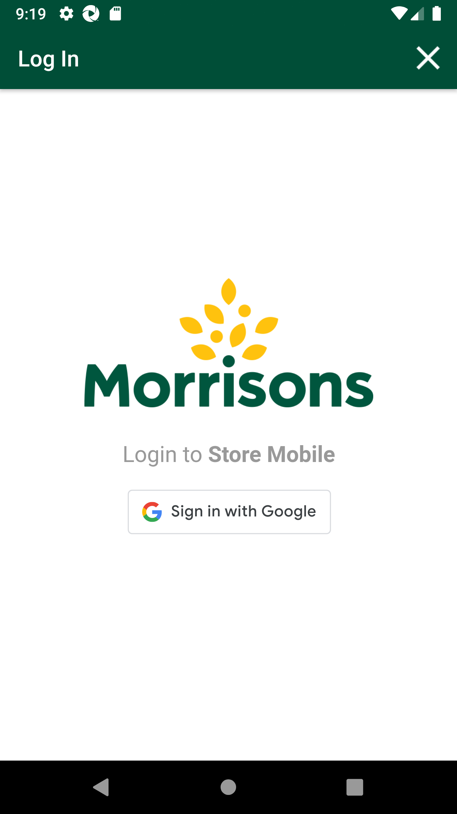
And I click on login button for SMAStep skippedThen I click on 'stockMngmtText' on page 'HomePagePO_New'Step skippedThen I click on "Prompted Counts"Step skippedThen I click on "Ambient & Frozen"Step skippedThen I click on "Actions & Next Steps"Step skippedAnd I verify "Deadline Reminder" alert title is displayedStep skippedAnd I verify "Submissions must be completed prior to the 09:45 AM daily cutoff." alert message is displayedStep skippedPassSMA-30760_Verify that user able to view Deadline Reminder prompt before half an hour in prompted countsWhen I enter Username and Password for SMA Collegue userAnd I click on login button for SMAThen I click on 'stockMngmtText' on page 'HomePagePO_New'Then I click on "Prompted Counts"Then I click on "Fresh"Then I click on "Fixture"And I verify "Deadline Reminder" alert title is displayedAnd I verify "Submissions must be completed prior to the 09:45 AM daily cutoff." alert message is displayedPassSMA-30760_Verify that user able to view Deadline Reminder prompt before half an hour in prompted countsWhen I enter Username and Password for SMA Collegue userAnd I click on login button for SMAThen I click on 'stockMngmtText' on page 'HomePagePO_New'Then I click on "Prompted Counts"Then I click on "Fresh"Then I click on "Warehouse"And I verify "Deadline Reminder" alert title is displayedAnd I verify "Submissions must be completed prior to the 09:45 AM daily cutoff." alert message is displayedPassSMA-30760_Verify that user able to view Deadline Reminder prompt before half an hour in prompted countsWhen I enter Username and Password for SMA Collegue userAnd I click on login button for SMAThen I click on 'stockMngmtText' on page 'HomePagePO_New'Then I click on "Prompted Counts"Then I click on "Fresh"Then I click on "Actions & Next Steps"And I verify "Deadline Reminder" alert title is displayedAnd I verify "Submissions must be completed prior to the 09:45 AM daily cutoff." alert message is displayedPassSMA-30760_Verify that user able to view Deadline Reminder prompt before half an hour in prompted countsWhen I enter Username and Password for SMA Collegue userAnd I click on login button for SMAThen I click on 'stockMngmtText' on page 'HomePagePO_New'Then I click on "Prompted Counts"Then I click on "Market Street"Then I click on "Fixture"And I verify "Deadline Reminder" alert title is displayedAnd I verify "Submissions must be completed prior to the 09:45 AM daily cutoff." alert message is displayedPassSMA-30760_Verify that user able to view Deadline Reminder prompt before half an hour in prompted countsWhen I enter Username and Password for SMA Collegue userAnd I click on login button for SMAThen I click on 'stockMngmtText' on page 'HomePagePO_New'Then I click on "Prompted Counts"Then I click on "Market Street"Then I click on "Warehouse"And I verify "Deadline Reminder" alert title is displayedAnd I verify "Submissions must be completed prior to the 09:45 AM daily cutoff." alert message is displayedFailSMA-30760_Verify that user able to view Deadline Reminder prompt before half an hour in prompted countsWhen I enter Username and Password for SMA Collegue usercom.morrisons.common.action.Hook.afterScenario(io.cucumber.java.Scenario)And I click on login button for SMAStep skippedThen I click on 'stockMngmtText' on page 'HomePagePO_New'Step skippedThen I click on "Prompted Counts"Step skippedThen I click on "Market Street"Step skippedThen I click on "Actions & Next Steps"Step skippedAnd I verify "Deadline Reminder" alert title is displayedStep skippedAnd I verify "Submissions must be completed prior to the 09:45 AM daily cutoff." alert message is displayedStep skippedPassSMA-30760_Verify that user able to view Deadline Reminder prompt before half an hour in prompted countsWhen I enter Username and Password for SMA Collegue userAnd I click on login button for SMAThen I click on 'stockMngmtText' on page 'HomePagePO_New'Then I click on "Prompted Counts"Then I click on "Services"Then I click on "Fixture"And I verify "Deadline Reminder" alert title is displayedAnd I verify "Submissions must be completed prior to the 09:45 AM daily cutoff." alert message is displayedPassSMA-30760_Verify that user able to view Deadline Reminder prompt before half an hour in prompted countsWhen I enter Username and Password for SMA Collegue userAnd I click on login button for SMAThen I click on 'stockMngmtText' on page 'HomePagePO_New'Then I click on "Prompted Counts"Then I click on "Services"Then I click on "Warehouse"And I verify "Deadline Reminder" alert title is displayedAnd I verify "Submissions must be completed prior to the 09:45 AM daily cutoff." alert message is displayedPassSMA-30760_Verify that user able to view Deadline Reminder prompt before half an hour in prompted countsWhen I enter Username and Password for SMA Collegue userAnd I click on login button for SMAThen I click on 'stockMngmtText' on page 'HomePagePO_New'Then I click on "Prompted Counts"Then I click on "Services"Then I click on "Actions & Next Steps"And I verify "Deadline Reminder" alert title is displayedAnd I verify "Submissions must be completed prior to the 09:45 AM daily cutoff." alert message is displayedPassSMA-30760_Verify that Post 9.45 AM when user try to click on any department or action, it should display message as 'Prompted counts submissions closed'.PassSMA-30760_Verify that Post 9.45 AM when user try to click on any department or action, it should display message as 'Prompted counts submissions closed'.When I enter Username and Password for SMA Collegue userAnd I click on login button for SMAThen I click on 'stockMngmtText' on page 'HomePagePO_New'Then I click on "Prompted Counts"Then I click on "Ambient & Frozen"Then I click on "Fixture"And I verify "Prompted counts submissions closed" message title is displayedAnd I verify "You are unable to complete prompted counts submissions for the remainder of the day. Submissions must be completed prior to the 09:45 am daily cut off." message text is displayedPassSMA-30760_Verify that Post 9.45 AM when user try to click on any department or action, it should display message as 'Prompted counts submissions closed'.When I enter Username and Password for SMA Collegue userAnd I click on login button for SMAThen I click on 'stockMngmtText' on page 'HomePagePO_New'Then I click on "Prompted Counts"Then I click on "Ambient & Frozen"Then I click on "Warehouse"And I verify "Prompted counts submissions closed" message title is displayedAnd I verify "You are unable to complete prompted counts submissions for the remainder of the day. Submissions must be completed prior to the 09:45 am daily cut off." message text is displayedPassSMA-30760_Verify that Post 9.45 AM when user try to click on any department or action, it should display message as 'Prompted counts submissions closed'.When I enter Username and Password for SMA Collegue userAnd I click on login button for SMAThen I click on 'stockMngmtText' on page 'HomePagePO_New'Then I click on "Prompted Counts"Then I click on "Ambient & Frozen"Then I click on "Actions & Next Steps"And I verify "Prompted counts submissions closed" message title is displayedAnd I verify "You are unable to complete prompted counts submissions for the remainder of the day. Submissions must be completed prior to the 09:45 am daily cut off." message text is displayedPassSMA-30760_Verify that Post 9.45 AM when user try to click on any department or action, it should display message as 'Prompted counts submissions closed'.When I enter Username and Password for SMA Collegue userAnd I click on login button for SMAThen I click on 'stockMngmtText' on page 'HomePagePO_New'Then I click on "Prompted Counts"Then I click on "Fresh"Then I click on "Fixture"And I verify "Prompted counts submissions closed" message title is displayedAnd I verify "You are unable to complete prompted counts submissions for the remainder of the day. Submissions must be completed prior to the 09:45 am daily cut off." message text is displayedPassSMA-30760_Verify that Post 9.45 AM when user try to click on any department or action, it should display message as 'Prompted counts submissions closed'.When I enter Username and Password for SMA Collegue userAnd I click on login button for SMAThen I click on 'stockMngmtText' on page 'HomePagePO_New'Then I click on "Prompted Counts"Then I click on "Fresh"Then I click on "Warehouse"And I verify "Prompted counts submissions closed" message title is displayedAnd I verify "You are unable to complete prompted counts submissions for the remainder of the day. Submissions must be completed prior to the 09:45 am daily cut off." message text is displayedPassSMA-30760_Verify that Post 9.45 AM when user try to click on any department or action, it should display message as 'Prompted counts submissions closed'.When I enter Username and Password for SMA Collegue userAnd I click on login button for SMAThen I click on 'stockMngmtText' on page 'HomePagePO_New'Then I click on "Prompted Counts"Then I click on "Fresh"Then I click on "Actions & Next Steps"And I verify "Prompted counts submissions closed" message title is displayedAnd I verify "You are unable to complete prompted counts submissions for the remainder of the day. Submissions must be completed prior to the 09:45 am daily cut off." message text is displayedPassSMA-30760_Verify that Post 9.45 AM when user try to click on any department or action, it should display message as 'Prompted counts submissions closed'.When I enter Username and Password for SMA Collegue userAnd I click on login button for SMAThen I click on 'stockMngmtText' on page 'HomePagePO_New'Then I click on "Prompted Counts"Then I click on "Market Street"Then I click on "Fixture"And I verify "Prompted counts submissions closed" message title is displayedAnd I verify "You are unable to complete prompted counts submissions for the remainder of the day. Submissions must be completed prior to the 09:45 am daily cut off." message text is displayedPassSMA-30760_Verify that Post 9.45 AM when user try to click on any department or action, it should display message as 'Prompted counts submissions closed'.When I enter Username and Password for SMA Collegue userAnd I click on login button for SMAThen I click on 'stockMngmtText' on page 'HomePagePO_New'Then I click on "Prompted Counts"Then I click on "Market Street"Then I click on "Warehouse"And I verify "Prompted counts submissions closed" message title is displayedAnd I verify "You are unable to complete prompted counts submissions for the remainder of the day. Submissions must be completed prior to the 09:45 am daily cut off." message text is displayedPassSMA-30760_Verify that Post 9.45 AM when user try to click on any department or action, it should display message as 'Prompted counts submissions closed'.When I enter Username and Password for SMA Collegue userAnd I click on login button for SMAThen I click on 'stockMngmtText' on page 'HomePagePO_New'Then I click on "Prompted Counts"Then I click on "Market Street"Then I click on "Actions & Next Steps"And I verify "Prompted counts submissions closed" message title is displayedAnd I verify "You are unable to complete prompted counts submissions for the remainder of the day. Submissions must be completed prior to the 09:45 am daily cut off." message text is displayedPassSMA-30760_Verify that Post 9.45 AM when user try to click on any department or action, it should display message as 'Prompted counts submissions closed'.When I enter Username and Password for SMA Collegue userAnd I click on login button for SMAThen I click on 'stockMngmtText' on page 'HomePagePO_New'Then I click on "Prompted Counts"Then I click on "Services"Then I click on "Fixture"And I verify "Prompted counts submissions closed" message title is displayedAnd I verify "You are unable to complete prompted counts submissions for the remainder of the day. Submissions must be completed prior to the 09:45 am daily cut off." message text is displayedPassSMA-30760_Verify that Post 9.45 AM when user try to click on any department or action, it should display message as 'Prompted counts submissions closed'.When I enter Username and Password for SMA Collegue userAnd I click on login button for SMAThen I click on 'stockMngmtText' on page 'HomePagePO_New'Then I click on "Prompted Counts"Then I click on "Services"Then I click on "Warehouse"And I verify "Prompted counts submissions closed" message title is displayedAnd I verify "You are unable to complete prompted counts submissions for the remainder of the day. Submissions must be completed prior to the 09:45 am daily cut off." message text is displayedPassSMA-30760_Verify that Post 9.45 AM when user try to click on any department or action, it should display message as 'Prompted counts submissions closed'.When I enter Username and Password for SMA Collegue userAnd I click on login button for SMAThen I click on 'stockMngmtText' on page 'HomePagePO_New'Then I click on "Prompted Counts"Then I click on "Services"Then I click on "Actions & Next Steps"And I verify "Prompted counts submissions closed" message title is displayedAnd I verify "You are unable to complete prompted counts submissions for the remainder of the day. Submissions must be completed prior to the 09:45 am daily cut off." message text is displayedPassSMA-30760_Verify Only Summary should be available for view throughout the day.PassSMA-30760_Verify Only Summary should be available for view throughout the day.When I enter Username and Password for SMA Collegue userAnd I click on login button for SMAThen I click on 'stockMngmtText' on page 'HomePagePO_New'Then I click on "Prompted Counts"Then I click on "Summary"And I verify Summary screen UI
-
org.openqa.selenium.WebDriverException
6 tests
org.openqa.selenium.WebDriverException
6 failedStatus Timestamp TestName Fail 20:16:54 PM When I enter Username and Password for SMA Collegue user Verify Prompted Count functionality.(User story - SMA-28254, SMA-28253, SMA-28252, SMA-31421, SMA-31414, SMA-31425, SMA-31422).SMA-31421_Department_Location_Verify labels preference should be displayed as Default, A4P White POS and Medium White POS..When I enter Username and Password for SMA Collegue userFail 21:42:52 PM com.morrisons.common.action.Hook.afterScenario(io.cucumber.java.Scenario) Verify Prompted Count functionality.(User story - SMA-28254, SMA-28253, SMA-28252, SMA-31421, SMA-31414, SMA-31425, SMA-31422).SMA-31422_Department_Location_Complete the Location and Message is displayed after completion of location..com.morrisons.common.action.Hook.afterScenario(io.cucumber.java.Scenario)Fail 21:42:54 PM com.morrisons.common.action.Hook.smaBefore() Verify Prompted Count functionality.(User story - SMA-28254, SMA-28253, SMA-28252, SMA-31421, SMA-31414, SMA-31425, SMA-31422).SMA-31422_Department_Location_Complete the Location and Message is displayed after completion of location..com.morrisons.common.action.Hook.smaBefore()Fail 21:42:57 PM com.morrisons.common.action.Hook.smaBefore() Verify Prompted Count functionality.(User story - SMA-28254, SMA-28253, SMA-28252, SMA-31421, SMA-31414, SMA-31425, SMA-31422).SMA-31422_Department_Location_Complete the Location and Message is displayed after completion of location..com.morrisons.common.action.Hook.smaBefore()Fail 21:42:59 PM com.morrisons.common.action.Hook.smaBefore() Verify Prompted Count functionality.(User story - SMA-28254, SMA-28253, SMA-28252, SMA-31421, SMA-31414, SMA-31425, SMA-31422).SMA-31422_Department_Location_Complete the Location and Message is displayed after completion of location..com.morrisons.common.action.Hook.smaBefore()Fail 21:43:02 PM com.morrisons.common.action.Hook.smaBefore() Verify Prompted Count functionality.(User story - SMA-28254, SMA-28253, SMA-28252, SMA-31421, SMA-31414, SMA-31425, SMA-31422).SMA-31422_Department_Location_After clicking on "REVIEW & EDIT", verify History screen is displayed with list of completed products with total count..com.morrisons.common.action.Hook.smaBefore() -
java.lang.NumberFormatException
1 tests
java.lang.NumberFormatException
1 failedStatus Timestamp TestName Fail 19:33:04 PM And I verify Adjustment value calculation agaist current stock and updated count Verify Prompted Counts functionality.SMA31437TC_01Verify Summary Card details for Department_Location department level review.And I verify Adjustment value calculation agaist current stock and updated count -
org.openqa.selenium.NoSuchElementException
139 tests
org.openqa.selenium.NoSuchElementException
139 failedStatus Timestamp TestName Fail 18:43:13 PM And I Verify Prompte is displayed at "Fixture" Verify Prompted Counts functionality.SMA-31447TC_01,06,11,16Verify user able to view Prompt at Location of Department.And I Verify Prompte is displayed at "Fixture"Fail 18:44:18 PM And I Verify Prompte is displayed at "Fixture" Verify Prompted Counts functionality.SMA-31447TC_01,06,11,16Verify user able to view Prompt at Location of Department.And I Verify Prompte is displayed at "Fixture"Fail 18:46:10 PM And I Verify Prompte is displayed at "Fixture" Verify Prompted Counts functionality.SMA-31447TC_01,06,11,16Verify user able to view Prompt at Location of Department.And I Verify Prompte is displayed at "Fixture"Fail 18:47:14 PM And I Verify Prompt "Fixture location has not been completed." is displayed at "Off Shelf" Verify Prompted Counts functionality.SMA-31447TC_02,07,12,17Verify user able to view at Location of Department 'location not completed' message and 'continue' button.And I Verify Prompt "Fixture location has not been completed." is displayed at "Off Shelf"Fail 18:48:15 PM And I Verify Prompt "Fixture location has not been completed." is displayed at "Petrol" Verify Prompted Counts functionality.SMA-31447TC_03,08,13,18 Verify user able to view at Location of Department 'location not completed' message and 'continue' button.And I Verify Prompt "Fixture location has not been completed." is displayed at "Petrol"Fail 18:49:15 PM And I Verify Prompt "Fixture location has not been completed." is displayed at "Warehouse" Verify Prompted Counts functionality.SMA-31447TC_04,09,14,19Verify user able to view at Location of Department 'location not completed' message and 'continue' button.And I Verify Prompt "Fixture location has not been completed." is displayed at "Warehouse"Fail 18:50:15 PM And I Verify Prompt "Fixture location has not been completed." is displayed at "Warehouse" Verify Prompted Counts functionality.SMA-31447TC_04,09,14,19Verify user able to view at Location of Department 'location not completed' message and 'continue' button.And I Verify Prompt "Fixture location has not been completed." is displayed at "Warehouse"Fail 18:52:03 PM And I Verify Prompt "Fixture location has not been completed." is displayed at "Warehouse" Verify Prompted Counts functionality.SMA-31447TC_04,09,14,19Verify user able to view at Location of Department 'location not completed' message and 'continue' button.And I Verify Prompt "Fixture location has not been completed." is displayed at "Warehouse"Fail 18:53:17 PM And I Verify Prompte is displayed at "Fixture" Verify Prompted Counts functionality.TC_US31448 Department_Location Verify user should able to view blank history when No item is actioned in Prompted Count.And I Verify Prompte is displayed at "Fixture"Fail 18:54:25 PM And I Verify Prompte is displayed at "Fixture" Verify Prompted Counts functionality.TC_US31448 Department_Location Verify user should able to view blank history when No item is actioned in Prompted Count.And I Verify Prompte is displayed at "Fixture"Fail 18:55:32 PM Then I click on icon "Show List" Verify Prompted Counts functionality.TC_US31448 Department_Location Verify user should able to view blank history when No item is actioned in Prompted Count.Then I click on icon "Show List"Fail 18:56:35 PM And I Verify Prompte is displayed at "Fixture" Verify Prompted Counts functionality.TC_US31448 Department_Location Verify user should able to view blank history when No item is actioned in Prompted Count.And I Verify Prompte is displayed at "Fixture"Fail 18:57:37 PM And I Verify Prompt "Fixture location has not been completed." is displayed at "Off Shelf" Verify Prompted Counts functionality.TC_US31448 Department_Location Verify user should able to view blank history when no item is actioned in Prompted Count.And I Verify Prompt "Fixture location has not been completed." is displayed at "Off Shelf"Fail 18:58:32 PM And I Verify Prompt "Fixture location has not been completed." is displayed at "Warehouse" Verify Prompted Counts functionality.TC_US31448 Department_Location Verify user should able to view blank history when no item is actioned in Prompted Count.And I Verify Prompt "Fixture location has not been completed." is displayed at "Warehouse"Fail 18:59:28 PM And I Verify Prompt "Fixture location has not been completed." is displayed at "Warehouse" Verify Prompted Counts functionality.TC_US31448 Department_Location Verify user should able to view blank history when no item is actioned in Prompted Count.And I Verify Prompt "Fixture location has not been completed." is displayed at "Warehouse"Fail 19:00:23 PM Then I click on icon "Show List" Verify Prompted Counts functionality.TC_US31448 Department_Location Verify user should able to view blank history when no item is actioned in Prompted Count.Then I click on icon "Show List"Fail 19:01:20 PM And I Verify Prompt "Fixture location has not been completed." is displayed at "Petrol" Verify Prompted Counts functionality.TC_US31448 Department_Location Verify user should able to view blank history when no item is actioned in Prompted Count.And I Verify Prompt "Fixture location has not been completed." is displayed at "Petrol"Fail 19:02:18 PM And I Verify Prompt "Fixture location has not been completed." is displayed at "Warehouse" Verify Prompted Counts functionality.TC_US31448 Department_Location Verify user should able to view blank history when no item is actioned in Prompted Count.And I Verify Prompt "Fixture location has not been completed." is displayed at "Warehouse"Fail 19:03:14 PM And I enter "10" Verify Prompted Counts functionality.TC_US31448 Verify user is allowed to edit from history on completion few items at Location of Department.And I enter "10"Fail 19:04:11 PM And I verify Prompt Screen all details Verify Prompted Counts functionality.SMA-31447TC_21,22,23,24Verify user able to complete all prompts at Location for Department.And I verify Prompt Screen all detailsFail 19:05:09 PM And I verify Prompt Screen all details Verify Prompted Counts functionality.SMA-31447TC_25,26,27,28 Verify user able to complete all prompts at Location for Department.And I verify Prompt Screen all detailsFail 19:06:05 PM And I verify Prompt Screen all details Verify Prompted Counts functionality.SMA-31447TC_25,26,27,28 Verify user able to complete all prompts at Location for Department.And I verify Prompt Screen all detailsFail 19:07:17 PM And I Verify Prompt "You have completed Fixture checks for Market Street" is displayed at "Fixture" Verify Prompted Counts functionality.SMA-31447TC_29,30,31,32 Verify user able to complete all prompts at Location for Department.And I Verify Prompt "You have completed Fixture checks for Market Street" is displayed at "Fixture"Fail 19:09:02 PM And I enter "999" Verify Prompted Counts functionality.SMA-31447TC_29,30,31,32 Verify user able to complete all prompts at Location for Department.And I enter "999"Fail 19:12:09 PM Then I click on "REVIEW & EDIT" Verify Prompted Counts functionality.SMA31446 TC_02 Department_Location Verify user is allow to edit any prompted item by updating stock counts or adding action.Then I click on "REVIEW & EDIT"Fail 19:14:21 PM Then I click on "REVIEW & EDIT" Verify Prompted Counts functionality.SMA31446 TC_03 Department_Location Verify user unflagged items should be allowed to update count or action from REVIEW & EDIT screen.Then I click on "REVIEW & EDIT"Fail 19:17:08 PM When I enter Username and Password for SMA Collegue user Verify Prompted Counts functionality.SMA31440TC_02 Location Verify user Able to view "Total Approvals" tab with total count of approvals.When I enter Username and Password for SMA Collegue userFail 19:22:26 PM And I select and Approve prompted item from list Verify Prompted Counts functionality.SMA31440TC_06 Location Verify user Able to approve prompted item from the list.And I select and Approve prompted item from listFail 19:24:18 PM And I edit count of any "Fixture" before approval Verify Prompted Counts functionality.SMA31440TC_07 Location Verify user Allow to edit count at any location before approval.And I edit count of any "Fixture" before approvalFail 19:25:49 PM And I verify approved items displayed Verify Prompted Counts functionality.SMA31440TC_09 Location Verify user Able to view the approved items at the bottom after approval.And I verify approved items displayedFail 19:35:45 PM And I verify one prompted item is displayed Verify Prompted Count functionality.(User story - SMA-28254, SMA-28253, SMA-28252, SMA-31421, SMA-31414, SMA-31425, SMA-31422).SMA-31414_Department_Location_Verify user is able to see one prompted item at a time..And I verify one prompted item is displayedFail 19:36:41 PM And I verify one prompted item is displayed Verify Prompted Count functionality.(User story - SMA-28254, SMA-28253, SMA-28252, SMA-31421, SMA-31414, SMA-31425, SMA-31422).SMA-31414_Department_Location_Verify user is able to see one prompted item at a time..And I verify one prompted item is displayedFail 19:38:17 PM And I verify one prompted item is displayed Verify Prompted Count functionality.(User story - SMA-28254, SMA-28253, SMA-28252, SMA-31421, SMA-31414, SMA-31425, SMA-31422).SMA-31414_Department_Location_Verify user is able to see one prompted item at a time..And I verify one prompted item is displayedFail 19:42:01 PM And I verify "Print and Place Shelf Edge Label" Action label is displayed Verify Prompted Count functionality.(User story - SMA-28254, SMA-28253, SMA-28252, SMA-31421, SMA-31414, SMA-31425, SMA-31422).SMA-31421_Department_Location_Verify labels preference should be displayed as Default, A4P White POS and Medium White POS..And I verify "Print and Place Shelf Edge Label" Action label is displayedFail 19:43:00 PM And I verify "Print and Place Shelf Edge Label" Action label is displayed Verify Prompted Count functionality.(User story - SMA-28254, SMA-28253, SMA-28252, SMA-31421, SMA-31414, SMA-31425, SMA-31422).SMA-31421_Department_Location_Verify labels preference should be displayed as Default, A4P White POS and Medium White POS..And I verify "Print and Place Shelf Edge Label" Action label is displayedFail 19:45:15 PM And I verify "Print and Place Shelf Edge Label" Action label is displayed Verify Prompted Count functionality.(User story - SMA-28254, SMA-28253, SMA-28252, SMA-31421, SMA-31414, SMA-31425, SMA-31422).SMA-31421_Department_Location_Verify labels preference should be displayed as Default, A4P White POS and Medium White POS..And I verify "Print and Place Shelf Edge Label" Action label is displayedFail 19:46:13 PM And I verify History icon is displayed Verify Prompted Count functionality.(User story - SMA-28254, SMA-28253, SMA-28252, SMA-31421, SMA-31414, SMA-31425, SMA-31422).SMA-31422_Department_Location_After clicking on History icon, verify History screen is displayed with list of completed products with total count..And I verify History icon is displayedFail 19:47:12 PM And I verify History icon is displayed Verify Prompted Count functionality.(User story - SMA-28254, SMA-28253, SMA-28252, SMA-31421, SMA-31414, SMA-31425, SMA-31422).SMA-31422_Department_Location_After clicking on History icon, verify History screen is displayed with list of completed products with total count..And I verify History icon is displayedFail 19:48:10 PM And I verify History icon is displayed Verify Prompted Count functionality.(User story - SMA-28254, SMA-28253, SMA-28252, SMA-31421, SMA-31414, SMA-31425, SMA-31422).SMA-31422_Department_Location_After clicking on History icon, verify History screen is displayed with list of completed products with total count..And I verify History icon is displayedFail 19:49:09 PM And I verify History icon is displayed Verify Prompted Count functionality.(User story - SMA-28254, SMA-28253, SMA-28252, SMA-31421, SMA-31414, SMA-31425, SMA-31422).SMA-31422_Department_Location_After clicking on History icon, verify History screen is displayed with list of completed products with total count..And I verify History icon is displayedFail 19:50:08 PM Then I click on "Check Merchandising Plan" Action label Verify Prompted Count functionality.(User story - SMA-28254, SMA-28253, SMA-28252, SMA-31421, SMA-31414, SMA-31425, SMA-31422).SMA-31422_Department_Location_Select product on History screen and verify should be able to add action and edit stock count..Then I click on "Check Merchandising Plan" Action labelFail 19:51:07 PM Then I click on "Check Merchandising Plan" Action label Verify Prompted Count functionality.(User story - SMA-28254, SMA-28253, SMA-28252, SMA-31421, SMA-31414, SMA-31425, SMA-31422).SMA-31422_Department_Location_Select product on History screen and verify should be able to add action and edit stock count..Then I click on "Check Merchandising Plan" Action labelFail 19:52:11 PM Then I verify History icon is displayed Verify Prompted Count functionality.(User story - SMA-28254, SMA-28253, SMA-28252, SMA-31421, SMA-31414, SMA-31425, SMA-31422).SMA-31422_Department_Location_Select product on History screen and verify should be able to add action and edit stock count..Then I verify History icon is displayedFail 19:53:08 PM Then I click on "Check Merchandising Plan" Action label Verify Prompted Count functionality.(User story - SMA-28254, SMA-28253, SMA-28252, SMA-31421, SMA-31414, SMA-31425, SMA-31422).SMA-31422_Department_Location_Select product on History screen and verify should be able to add action and edit stock count..Then I click on "Check Merchandising Plan" Action labelFail 19:56:44 PM And I verify "Print and Place Shelf Edge Label" Action label is displayed Verify Prompted Count functionality.(User story - SMA-28254, SMA-28253, SMA-28252, SMA-31421, SMA-31414, SMA-31425, SMA-31422).SMA-31414_Department_Location_Select department then select product and verify user is able to select 1 actions out of "Check Merchandising Plan" and "Print & Place Shelf Edge Label"..And I verify "Print and Place Shelf Edge Label" Action label is displayedFail 19:57:43 PM And I verify "Print and Place Shelf Edge Label" Action label is displayed Verify Prompted Count functionality.(User story - SMA-28254, SMA-28253, SMA-28252, SMA-31421, SMA-31414, SMA-31425, SMA-31422).SMA-31414_Department_Location_Select department then select product and verify user is able to select 1 actions out of "Check Merchandising Plan" and "Print & Place Shelf Edge Label"..And I verify "Print and Place Shelf Edge Label" Action label is displayedFail 19:59:27 PM And I verify "Check Merchandising Plan" Action label is displayed Verify Prompted Count functionality.(User story - SMA-28254, SMA-28253, SMA-28252, SMA-31421, SMA-31414, SMA-31425, SMA-31422).SMA-31414_Department_Location_Select department then select product and verify user is able to select 1 actions out of "Check Merchandising Plan" and "Print & Place Shelf Edge Label"..And I verify "Check Merchandising Plan" Action label is displayedFail 20:00:25 PM And I verify "Print and Place Shelf Edge Label" Action label is displayed Verify Prompted Count functionality.(User story - SMA-28254, SMA-28253, SMA-28252, SMA-31421, SMA-31414, SMA-31425, SMA-31422).SMA-31429_Department_Location_Verify Actions & Next Steps - Print & place label - Place Label functionality..And I verify "Print and Place Shelf Edge Label" Action label is displayedFail 20:01:23 PM And I verify "Print and Place Shelf Edge Label" Action label is displayed Verify Prompted Count functionality.(User story - SMA-28254, SMA-28253, SMA-28252, SMA-31421, SMA-31414, SMA-31425, SMA-31422).SMA-31429_Department_Location_Verify Actions & Next Steps - Print & place label - Place Label functionality..And I verify "Print and Place Shelf Edge Label" Action label is displayedFail 20:03:03 PM Then I verify Print & Place Labels screen is displayed Verify Prompted Count functionality.(User story - SMA-28254, SMA-28253, SMA-28252, SMA-31421, SMA-31414, SMA-31425, SMA-31422).SMA-31429_Department_Location_Verify Actions & Next Steps - Print & place label - Place Label functionality..Then I verify Print & Place Labels screen is displayedFail 20:04:00 PM And I verify "Print and Place Shelf Edge Label" Action label is displayed Verify Prompted Count functionality.(User story - SMA-28254, SMA-28253, SMA-28252, SMA-31421, SMA-31414, SMA-31425, SMA-31422).SMA-31429_Department_Location_Verify Actions & Next Steps - Print & place label - Place Label functionality..And I verify "Print and Place Shelf Edge Label" Action label is displayedFail 20:04:58 PM And I verify Item list count is displayed Verify Prompted Count functionality.(User story - SMA-28254, SMA-28253, SMA-28252, SMA-31421, SMA-31414, SMA-31425, SMA-31422).SMA-31422_Department_Location_Complete the Location and Message is displayed after completion of location..And I verify Item list count is displayedFail 20:05:51 PM And I verify Item list count is displayed Verify Prompted Count functionality.(User story - SMA-28254, SMA-28253, SMA-28252, SMA-31421, SMA-31414, SMA-31425, SMA-31422).SMA-31422_Department_Location_Complete the Location and Message is displayed after completion of location..And I verify Item list count is displayedFail 20:07:27 PM And I verify Item list count is displayed Verify Prompted Count functionality.(User story - SMA-28254, SMA-28253, SMA-28252, SMA-31421, SMA-31414, SMA-31425, SMA-31422).SMA-31422_Department_Location_Complete the Location and Message is displayed after completion of location..And I verify Item list count is displayedFail 20:10:04 PM And I verify "You have completed Fixture checks for Market Street" message is displayed Verify Prompted Count functionality.(User story - SMA-28254, SMA-28253, SMA-28252, SMA-31421, SMA-31414, SMA-31425, SMA-31422).SMA-31422_Department_Location_After clicking on "REVIEW & EDIT", verify History screen is displayed with list of completed products with total count..And I verify "You have completed Fixture checks for Market Street" message is displayedFail 20:11:55 PM And I verify "Print and Place Shelf Edge Label" Action label is displayed Verify Prompted Count functionality.(User story - SMA-28254, SMA-28253, SMA-28252, SMA-31421, SMA-31414, SMA-31425, SMA-31422).SMA-31421_Department_Location_Verify labels preference should be displayed as Default, A4P White POS and Medium White POS..And I verify "Print and Place Shelf Edge Label" Action label is displayedFail 20:12:48 PM And I verify "Print and Place Shelf Edge Label" Action label is displayed Verify Prompted Count functionality.(User story - SMA-28254, SMA-28253, SMA-28252, SMA-31421, SMA-31414, SMA-31425, SMA-31422).SMA-31421_Department_Location_Verify labels preference should be displayed as Default, A4P White POS and Medium White POS..And I verify "Print and Place Shelf Edge Label" Action label is displayedFail 20:13:42 PM And I verify "Print and Place Shelf Edge Label" Action label is displayed Verify Prompted Count functionality.(User story - SMA-28254, SMA-28253, SMA-28252, SMA-31421, SMA-31414, SMA-31425, SMA-31422).SMA-31421_Department_Location_Verify labels preference should be displayed as Default, A4P White POS and Medium White POS..And I verify "Print and Place Shelf Edge Label" Action label is displayedFail 20:14:35 PM And I verify "Print and Place Shelf Edge Label" Action label is displayed Verify Prompted Count functionality.(User story - SMA-28254, SMA-28253, SMA-28252, SMA-31421, SMA-31414, SMA-31425, SMA-31422).SMA-31421_Department_Location_Verify labels preference should be displayed as Default, A4P White POS and Medium White POS..And I verify "Print and Place Shelf Edge Label" Action label is displayedFail 20:15:29 PM And I verify "Print and Place Shelf Edge Label" Action label is displayed Verify Prompted Count functionality.(User story - SMA-28254, SMA-28253, SMA-28252, SMA-31421, SMA-31414, SMA-31425, SMA-31422).SMA-31421_Department_Location_Verify labels preference should be displayed as Default, A4P White POS and Medium White POS..And I verify "Print and Place Shelf Edge Label" Action label is displayedFail 20:16:23 PM And I verify "Print and Place Shelf Edge Label" Action label is displayed Verify Prompted Count functionality.(User story - SMA-28254, SMA-28253, SMA-28252, SMA-31421, SMA-31414, SMA-31425, SMA-31422).SMA-31421_Department_Location_Verify labels preference should be displayed as Default, A4P White POS and Medium White POS..And I verify "Print and Place Shelf Edge Label" Action label is displayedFail 20:18:17 PM And I verify "Print and Place Shelf Edge Label" Action label is displayed Verify Prompted Count functionality.(User story - SMA-28254, SMA-28253, SMA-28252, SMA-31421, SMA-31414, SMA-31425, SMA-31422).SMA-31421_Department_Location_Verify labels preference should be displayed as Default, A4P White POS and Medium White POS..And I verify "Print and Place Shelf Edge Label" Action label is displayedFail 20:19:11 PM And I verify Item list count is displayed Verify Prompted Count functionality.(User story - SMA-28254, SMA-28253, SMA-28252, SMA-31421, SMA-31414, SMA-31425, SMA-31422).SMA-31422_Department_Location_Complete the Location and Message is displayed after completion of location..And I verify Item list count is displayedFail 20:20:06 PM And I verify Item list count is displayed Verify Prompted Count functionality.(User story - SMA-28254, SMA-28253, SMA-28252, SMA-31421, SMA-31414, SMA-31425, SMA-31422).SMA-31422_Department_Location_Complete the Location and Message is displayed after completion of location..And I verify Item list count is displayedFail 20:21:02 PM And I verify Item list count is displayed Verify Prompted Count functionality.(User story - SMA-28254, SMA-28253, SMA-28252, SMA-31421, SMA-31414, SMA-31425, SMA-31422).SMA-31422_Department_Location_Complete the Location and Message is displayed after completion of location..And I verify Item list count is displayedFail 20:21:56 PM And I verify Item list count is displayed Verify Prompted Count functionality.(User story - SMA-28254, SMA-28253, SMA-28252, SMA-31421, SMA-31414, SMA-31425, SMA-31422).SMA-31422_Department_Location_Complete the Location and Message is displayed after completion of location..And I verify Item list count is displayedFail 20:22:50 PM And I verify Item list count is displayed Verify Prompted Count functionality.(User story - SMA-28254, SMA-28253, SMA-28252, SMA-31421, SMA-31414, SMA-31425, SMA-31422).SMA-31422_Department_Location_Complete the Location and Message is displayed after completion of location..And I verify Item list count is displayedFail 20:23:45 PM And I verify Item list count is displayed Verify Prompted Count functionality.(User story - SMA-28254, SMA-28253, SMA-28252, SMA-31421, SMA-31414, SMA-31425, SMA-31422).SMA-31422_Department_Location_Complete the Location and Message is displayed after completion of location..And I verify Item list count is displayedFail 20:24:39 PM And I verify Item list count is displayed Verify Prompted Count functionality.(User story - SMA-28254, SMA-28253, SMA-28252, SMA-31421, SMA-31414, SMA-31425, SMA-31422).SMA-31422_Department_Location_Complete the Location and Message is displayed after completion of location..And I verify Item list count is displayedFail 20:25:33 PM And I verify Item list count is displayed Verify Prompted Count functionality.(User story - SMA-28254, SMA-28253, SMA-28252, SMA-31421, SMA-31414, SMA-31425, SMA-31422).SMA-31422_Department_Location_Complete the Location and Message is displayed after completion of location..And I verify Item list count is displayedFail 20:26:16 PM When I enter Username and Password for SMA Collegue user Verify Prompted Count functionality.(User story - SMA-28254, SMA-28253, SMA-28252, SMA-31421, SMA-31414, SMA-31425, SMA-31422).SMA-31422_Department_Location_After clicking on "REVIEW & EDIT", verify History screen is displayed with list of completed products with total count..When I enter Username and Password for SMA Collegue userFail 20:27:17 PM And I verify "You have completed Petrol checks for Ambient & Frozen" message is displayed Verify Prompted Count functionality.(User story - SMA-28254, SMA-28253, SMA-28252, SMA-31421, SMA-31414, SMA-31425, SMA-31422).SMA-31422_Department_Location_After clicking on "REVIEW & EDIT", verify History screen is displayed with list of completed products with total count..And I verify "You have completed Petrol checks for Ambient & Frozen" message is displayedFail 20:28:17 PM And I verify "You have completed Off Shelf checks for Fresh" message is displayed Verify Prompted Count functionality.(User story - SMA-28254, SMA-28253, SMA-28252, SMA-31421, SMA-31414, SMA-31425, SMA-31422).SMA-31422_Department_Location_After clicking on "REVIEW & EDIT", verify History screen is displayed with list of completed products with total count..And I verify "You have completed Off Shelf checks for Fresh" message is displayedFail 20:29:36 PM And I verify "You have completed Petrol checks for Fresh" message is displayed Verify Prompted Count functionality.(User story - SMA-28254, SMA-28253, SMA-28252, SMA-31421, SMA-31414, SMA-31425, SMA-31422).SMA-31422_Department_Location_After clicking on "REVIEW & EDIT", verify History screen is displayed with list of completed products with total count..And I verify "You have completed Petrol checks for Fresh" message is displayedFail 20:30:52 PM And I verify "You have completed Off Shelf checks for Market Street" message is displayed Verify Prompted Count functionality.(User story - SMA-28254, SMA-28253, SMA-28252, SMA-31421, SMA-31414, SMA-31425, SMA-31422).SMA-31422_Department_Location_After clicking on "REVIEW & EDIT", verify History screen is displayed with list of completed products with total count..And I verify "You have completed Off Shelf checks for Market Street" message is displayedFail 20:32:09 PM And I verify "You have completed Petrol checks for Market Street" message is displayed Verify Prompted Count functionality.(User story - SMA-28254, SMA-28253, SMA-28252, SMA-31421, SMA-31414, SMA-31425, SMA-31422).SMA-31422_Department_Location_After clicking on "REVIEW & EDIT", verify History screen is displayed with list of completed products with total count..And I verify "You have completed Petrol checks for Market Street" message is displayedFail 20:33:25 PM And I verify "You have completed Off Shelf checks for Services" message is displayed Verify Prompted Count functionality.(User story - SMA-28254, SMA-28253, SMA-28252, SMA-31421, SMA-31414, SMA-31425, SMA-31422).SMA-31422_Department_Location_After clicking on "REVIEW & EDIT", verify History screen is displayed with list of completed products with total count..And I verify "You have completed Off Shelf checks for Services" message is displayedFail 20:34:42 PM And I verify "You have completed Petrol checks for Services" message is displayed Verify Prompted Count functionality.(User story - SMA-28254, SMA-28253, SMA-28252, SMA-31421, SMA-31414, SMA-31425, SMA-31422).SMA-31422_Department_Location_After clicking on "REVIEW & EDIT", verify History screen is displayed with list of completed products with total count..And I verify "You have completed Petrol checks for Services" message is displayedFail 20:36:01 PM And I verify "You have completed Off Shelf checks for Ambient & Frozen" message is displayed Verify Prompted Count functionality.(User story - SMA-28254, SMA-28253, SMA-28252, SMA-31421, SMA-31414, SMA-31425, SMA-31422).SMA-31422_Department_Location_Select product on History screen and verify should be able to add action and edit stock count..And I verify "You have completed Off Shelf checks for Ambient & Frozen" message is displayedFail 20:37:19 PM And I verify "You have completed Petrol checks for Ambient & Frozen" message is displayed Verify Prompted Count functionality.(User story - SMA-28254, SMA-28253, SMA-28252, SMA-31421, SMA-31414, SMA-31425, SMA-31422).SMA-31422_Department_Location_Select product on History screen and verify should be able to add action and edit stock count..And I verify "You have completed Petrol checks for Ambient & Frozen" message is displayedFail 20:38:36 PM And I verify "You have completed Off Shelf checks for Fresh" message is displayed Verify Prompted Count functionality.(User story - SMA-28254, SMA-28253, SMA-28252, SMA-31421, SMA-31414, SMA-31425, SMA-31422).SMA-31422_Department_Location_Select product on History screen and verify should be able to add action and edit stock count..And I verify "You have completed Off Shelf checks for Fresh" message is displayedFail 20:39:52 PM And I verify "You have completed Petrol checks for Fresh" message is displayed Verify Prompted Count functionality.(User story - SMA-28254, SMA-28253, SMA-28252, SMA-31421, SMA-31414, SMA-31425, SMA-31422).SMA-31422_Department_Location_Select product on History screen and verify should be able to add action and edit stock count..And I verify "You have completed Petrol checks for Fresh" message is displayedFail 20:41:08 PM And I verify "You have completed Off Shelf checks for Market Street" message is displayed Verify Prompted Count functionality.(User story - SMA-28254, SMA-28253, SMA-28252, SMA-31421, SMA-31414, SMA-31425, SMA-31422).SMA-31422_Department_Location_Select product on History screen and verify should be able to add action and edit stock count..And I verify "You have completed Off Shelf checks for Market Street" message is displayedFail 20:42:23 PM And I verify "You have completed Petrol checks for Market Street" message is displayed Verify Prompted Count functionality.(User story - SMA-28254, SMA-28253, SMA-28252, SMA-31421, SMA-31414, SMA-31425, SMA-31422).SMA-31422_Department_Location_Select product on History screen and verify should be able to add action and edit stock count..And I verify "You have completed Petrol checks for Market Street" message is displayedFail 20:43:40 PM And I verify "You have completed Off Shelf checks for Services" message is displayed Verify Prompted Count functionality.(User story - SMA-28254, SMA-28253, SMA-28252, SMA-31421, SMA-31414, SMA-31425, SMA-31422).SMA-31422_Department_Location_Select product on History screen and verify should be able to add action and edit stock count..And I verify "You have completed Off Shelf checks for Services" message is displayedFail 20:44:49 PM And I verify "You have completed Petrol checks for Services" message is displayed Verify Prompted Count functionality.(User story - SMA-28254, SMA-28253, SMA-28252, SMA-31421, SMA-31414, SMA-31425, SMA-31422).SMA-31422_Department_Location_Select product on History screen and verify should be able to add action and edit stock count..And I verify "You have completed Petrol checks for Services" message is displayedFail 20:45:51 PM And I verify History icon is displayed Verify Prompted Count functionality.(User story - SMA-28254, SMA-28253, SMA-28252, SMA-31421, SMA-31414, SMA-31425, SMA-31422).SMA-31422_Department_Location_After clicking on History icon, verify History screen is displayed with list of completed products with total count..And I verify History icon is displayedFail 20:46:53 PM And I verify History icon is displayed Verify Prompted Count functionality.(User story - SMA-28254, SMA-28253, SMA-28252, SMA-31421, SMA-31414, SMA-31425, SMA-31422).SMA-31422_Department_Location_After clicking on History icon, verify History screen is displayed with list of completed products with total count..And I verify History icon is displayedFail 20:48:10 PM And I verify History icon is displayed Verify Prompted Count functionality.(User story - SMA-28254, SMA-28253, SMA-28252, SMA-31421, SMA-31414, SMA-31425, SMA-31422).SMA-31422_Department_Location_After clicking on History icon, verify History screen is displayed with list of completed products with total count..And I verify History icon is displayedFail 20:49:25 PM And I verify History icon is displayed Verify Prompted Count functionality.(User story - SMA-28254, SMA-28253, SMA-28252, SMA-31421, SMA-31414, SMA-31425, SMA-31422).SMA-31422_Department_Location_After clicking on History icon, verify History screen is displayed with list of completed products with total count..And I verify History icon is displayedFail 20:50:40 PM And I verify History icon is displayed Verify Prompted Count functionality.(User story - SMA-28254, SMA-28253, SMA-28252, SMA-31421, SMA-31414, SMA-31425, SMA-31422).SMA-31422_Department_Location_After clicking on History icon, verify History screen is displayed with list of completed products with total count..And I verify History icon is displayedFail 20:51:57 PM And I verify History icon is displayed Verify Prompted Count functionality.(User story - SMA-28254, SMA-28253, SMA-28252, SMA-31421, SMA-31414, SMA-31425, SMA-31422).SMA-31422_Department_Location_After clicking on History icon, verify History screen is displayed with list of completed products with total count..And I verify History icon is displayedFail 20:53:13 PM And I verify History icon is displayed Verify Prompted Count functionality.(User story - SMA-28254, SMA-28253, SMA-28252, SMA-31421, SMA-31414, SMA-31425, SMA-31422).SMA-31422_Department_Location_After clicking on History icon, verify History screen is displayed with list of completed products with total count..And I verify History icon is displayedFail 20:54:29 PM And I verify History icon is displayed Verify Prompted Count functionality.(User story - SMA-28254, SMA-28253, SMA-28252, SMA-31421, SMA-31414, SMA-31425, SMA-31422).SMA-31422_Department_Location_After clicking on History icon, verify History screen is displayed with list of completed products with total count..And I verify History icon is displayedFail 20:55:45 PM And I verify one prompted item is displayed Verify Prompted Count functionality.(User story - SMA-28254, SMA-28253, SMA-28252, SMA-31421, SMA-31414, SMA-31425, SMA-31422).SMA-31414_Department_Location_Verify user is able to see one prompted item at a time..And I verify one prompted item is displayedFail 20:57:01 PM And I verify one prompted item is displayed Verify Prompted Count functionality.(User story - SMA-28254, SMA-28253, SMA-28252, SMA-31421, SMA-31414, SMA-31425, SMA-31422).SMA-31414_Department_Location_Verify user is able to see one prompted item at a time..And I verify one prompted item is displayedFail 20:58:16 PM And I verify one prompted item is displayed Verify Prompted Count functionality.(User story - SMA-28254, SMA-28253, SMA-28252, SMA-31421, SMA-31414, SMA-31425, SMA-31422).SMA-31414_Department_Location_Verify user is able to see one prompted item at a time..And I verify one prompted item is displayedFail 20:58:59 PM When I enter Username and Password for SMA Collegue user Verify Prompted Count functionality.(User story - SMA-28254, SMA-28253, SMA-28252, SMA-31421, SMA-31414, SMA-31425, SMA-31422).SMA-31414_Department_Location_Verify user is able to see one prompted item at a time..When I enter Username and Password for SMA Collegue userFail 21:00:33 PM And I verify one prompted item is displayed Verify Prompted Count functionality.(User story - SMA-28254, SMA-28253, SMA-28252, SMA-31421, SMA-31414, SMA-31425, SMA-31422).SMA-31414_Department_Location_Verify user is able to see one prompted item at a time..And I verify one prompted item is displayedFail 21:02:16 PM And I verify one prompted item is displayed Verify Prompted Count functionality.(User story - SMA-28254, SMA-28253, SMA-28252, SMA-31421, SMA-31414, SMA-31425, SMA-31422).SMA-31414_Department_Location_Verify user is able to see one prompted item at a time..And I verify one prompted item is displayedFail 21:03:32 PM And I verify one prompted item is displayed Verify Prompted Count functionality.(User story - SMA-28254, SMA-28253, SMA-28252, SMA-31421, SMA-31414, SMA-31425, SMA-31422).SMA-31414_Department_Location_Verify user is able to see one prompted item at a time..And I verify one prompted item is displayedFail 21:04:48 PM And I verify "Print and Place Shelf Edge Label" Action label is displayed Verify Prompted Count functionality.(User story - SMA-28254, SMA-28253, SMA-28252, SMA-31421, SMA-31414, SMA-31425, SMA-31422).SMA-31414_Department_Location_Verify user is able to view and select 2 actions "Check Merchandising Plan" and "Print & Place Shelf Edge Label" and should automatically add item in 'Actions & Next steps' under appropriate actions..And I verify "Print and Place Shelf Edge Label" Action label is displayedFail 21:06:06 PM And I verify "Print and Place Shelf Edge Label" Action label is displayed Verify Prompted Count functionality.(User story - SMA-28254, SMA-28253, SMA-28252, SMA-31421, SMA-31414, SMA-31425, SMA-31422).SMA-31414_Department_Location_Verify user is able to view and select 2 actions "Check Merchandising Plan" and "Print & Place Shelf Edge Label" and should automatically add item in 'Actions & Next steps' under appropriate actions..And I verify "Print and Place Shelf Edge Label" Action label is displayedFail 21:07:26 PM And I verify "Print and Place Shelf Edge Label" Action label is displayed Verify Prompted Count functionality.(User story - SMA-28254, SMA-28253, SMA-28252, SMA-31421, SMA-31414, SMA-31425, SMA-31422).SMA-31414_Department_Location_Verify user is able to view and select 2 actions "Check Merchandising Plan" and "Print & Place Shelf Edge Label" and should automatically add item in 'Actions & Next steps' under appropriate actions..And I verify "Print and Place Shelf Edge Label" Action label is displayedFail 21:08:44 PM And I verify "Print and Place Shelf Edge Label" Action label is displayed Verify Prompted Count functionality.(User story - SMA-28254, SMA-28253, SMA-28252, SMA-31421, SMA-31414, SMA-31425, SMA-31422).SMA-31414_Department_Location_Verify user is able to view and select 2 actions "Check Merchandising Plan" and "Print & Place Shelf Edge Label" and should automatically add item in 'Actions & Next steps' under appropriate actions..And I verify "Print and Place Shelf Edge Label" Action label is displayedFail 21:10:04 PM And I verify "Print and Place Shelf Edge Label" Action label is displayed Verify Prompted Count functionality.(User story - SMA-28254, SMA-28253, SMA-28252, SMA-31421, SMA-31414, SMA-31425, SMA-31422).SMA-31414_Department_Location_Verify user is able to view and select 2 actions "Check Merchandising Plan" and "Print & Place Shelf Edge Label" and should automatically add item in 'Actions & Next steps' under appropriate actions..And I verify "Print and Place Shelf Edge Label" Action label is displayedFail 21:11:20 PM And I verify "Print and Place Shelf Edge Label" Action label is displayed Verify Prompted Count functionality.(User story - SMA-28254, SMA-28253, SMA-28252, SMA-31421, SMA-31414, SMA-31425, SMA-31422).SMA-31414_Department_Location_Verify user is able to view and select 2 actions "Check Merchandising Plan" and "Print & Place Shelf Edge Label" and should automatically add item in 'Actions & Next steps' under appropriate actions..And I verify "Print and Place Shelf Edge Label" Action label is displayedFail 21:12:38 PM And I verify "Print and Place Shelf Edge Label" Action label is displayed Verify Prompted Count functionality.(User story - SMA-28254, SMA-28253, SMA-28252, SMA-31421, SMA-31414, SMA-31425, SMA-31422).SMA-31414_Department_Location_Verify user is able to view and select 2 actions "Check Merchandising Plan" and "Print & Place Shelf Edge Label" and should automatically add item in 'Actions & Next steps' under appropriate actions..And I verify "Print and Place Shelf Edge Label" Action label is displayedFail 21:13:54 PM And I verify "Print and Place Shelf Edge Label" Action label is displayed Verify Prompted Count functionality.(User story - SMA-28254, SMA-28253, SMA-28252, SMA-31421, SMA-31414, SMA-31425, SMA-31422).SMA-31414_Department_Location_Verify user is able to view and select 2 actions "Check Merchandising Plan" and "Print & Place Shelf Edge Label" and should automatically add item in 'Actions & Next steps' under appropriate actions..And I verify "Print and Place Shelf Edge Label" Action label is displayedFail 21:15:12 PM And I verify "Print and Place Shelf Edge Label" Action label is displayed Verify Prompted Count functionality.(User story - SMA-28254, SMA-28253, SMA-28252, SMA-31421, SMA-31414, SMA-31425, SMA-31422).SMA-31414_Department_Location_Select department then select product and verify user is able to select 1 actions out of "Check Merchandising Plan" and "Print & Place Shelf Edge Label"..And I verify "Print and Place Shelf Edge Label" Action label is displayedFail 21:15:56 PM When I enter Username and Password for SMA Collegue user Verify Prompted Count functionality.(User story - SMA-28254, SMA-28253, SMA-28252, SMA-31421, SMA-31414, SMA-31425, SMA-31422).SMA-31414_Department_Location_Select department then select product and verify user is able to select 1 actions out of "Check Merchandising Plan" and "Print & Place Shelf Edge Label"..When I enter Username and Password for SMA Collegue userFail 21:17:26 PM And I verify "Print and Place Shelf Edge Label" Action label is displayed Verify Prompted Count functionality.(User story - SMA-28254, SMA-28253, SMA-28252, SMA-31421, SMA-31414, SMA-31425, SMA-31422).SMA-31414_Department_Location_Select department then select product and verify user is able to select 1 actions out of "Check Merchandising Plan" and "Print & Place Shelf Edge Label"..And I verify "Print and Place Shelf Edge Label" Action label is displayedFail 21:18:46 PM And I verify "Check Merchandising Plan" Action label is displayed Verify Prompted Count functionality.(User story - SMA-28254, SMA-28253, SMA-28252, SMA-31421, SMA-31414, SMA-31425, SMA-31422).SMA-31414_Department_Location_Select department then select product and verify user is able to select 1 actions out of "Check Merchandising Plan" and "Print & Place Shelf Edge Label"..And I verify "Check Merchandising Plan" Action label is displayedFail 21:20:02 PM And I verify "Check Merchandising Plan" Action label is displayed Verify Prompted Count functionality.(User story - SMA-28254, SMA-28253, SMA-28252, SMA-31421, SMA-31414, SMA-31425, SMA-31422).SMA-31414_Department_Location_Select department then select product and verify user is able to select 1 actions out of "Check Merchandising Plan" and "Print & Place Shelf Edge Label"..And I verify "Check Merchandising Plan" Action label is displayedFail 21:21:18 PM And I verify "Print and Place Shelf Edge Label" Action label is displayed Verify Prompted Count functionality.(User story - SMA-28254, SMA-28253, SMA-28252, SMA-31421, SMA-31414, SMA-31425, SMA-31422).SMA-31414_Department_Location_Select department then select product and verify user is able to select 1 actions out of "Check Merchandising Plan" and "Print & Place Shelf Edge Label"..And I verify "Print and Place Shelf Edge Label" Action label is displayedFail 21:22:33 PM And I verify "Check Merchandising Plan" Action label is displayed Verify Prompted Count functionality.(User story - SMA-28254, SMA-28253, SMA-28252, SMA-31421, SMA-31414, SMA-31425, SMA-31422).SMA-31414_Department_Location_Select department then select product and verify user is able to select 1 actions out of "Check Merchandising Plan" and "Print & Place Shelf Edge Label"..And I verify "Check Merchandising Plan" Action label is displayedFail 21:23:48 PM And I verify "Print and Place Shelf Edge Label" Action label is displayed Verify Prompted Count functionality.(User story - SMA-28254, SMA-28253, SMA-28252, SMA-31421, SMA-31414, SMA-31425, SMA-31422).SMA-31414_Department_Location_Select department then select product and verify user is able to select 1 actions out of "Check Merchandising Plan" and "Print & Place Shelf Edge Label"..And I verify "Print and Place Shelf Edge Label" Action label is displayedFail 21:25:02 PM Then I click on "Prompted Counts" Verify Prompted Count functionality.(User story - SMA-28254, SMA-28253, SMA-28252, SMA-31421, SMA-31414, SMA-31425, SMA-31422).SMA-31429_Department_Location_Verify Actions & Next Steps - Print & place label - Place Label functionality..Then I click on "Prompted Counts"Fail 21:26:39 PM Then I click on "Prompted Counts" Verify Prompted Count functionality.(User story - SMA-28254, SMA-28253, SMA-28252, SMA-31421, SMA-31414, SMA-31425, SMA-31422).SMA-31429_Department_Location_Verify Actions & Next Steps - Print & place label - Place Label functionality..Then I click on "Prompted Counts"Fail 21:28:12 PM Then I click on "Prompted Counts" Verify Prompted Count functionality.(User story - SMA-28254, SMA-28253, SMA-28252, SMA-31421, SMA-31414, SMA-31425, SMA-31422).SMA-31429_Department_Location_Verify Actions & Next Steps - Print & place label - Place Label functionality..Then I click on "Prompted Counts"Fail 21:29:47 PM Then I click on "Prompted Counts" Verify Prompted Count functionality.(User story - SMA-28254, SMA-28253, SMA-28252, SMA-31421, SMA-31414, SMA-31425, SMA-31422).SMA-31429_Department_Location_Verify Actions & Next Steps - Print & place label - Place Label functionality..Then I click on "Prompted Counts"Fail 21:31:20 PM Then I click on "Prompted Counts" Verify Prompted Count functionality.(User story - SMA-28254, SMA-28253, SMA-28252, SMA-31421, SMA-31414, SMA-31425, SMA-31422).SMA-31429_Department_Location_Verify Actions & Next Steps - Print & place label - Place Label functionality..Then I click on "Prompted Counts"Fail 21:32:53 PM Then I click on "Prompted Counts" Verify Prompted Count functionality.(User story - SMA-28254, SMA-28253, SMA-28252, SMA-31421, SMA-31414, SMA-31425, SMA-31422).SMA-31429_Department_Location_Verify Actions & Next Steps - Print & place label - Place Label functionality..Then I click on "Prompted Counts"Fail 21:34:28 PM Then I click on "Prompted Counts" Verify Prompted Count functionality.(User story - SMA-28254, SMA-28253, SMA-28252, SMA-31421, SMA-31414, SMA-31425, SMA-31422).SMA-31429_Department_Location_Verify Actions & Next Steps - Print & place label - Place Label functionality..Then I click on "Prompted Counts"Fail 21:36:07 PM Then I click on "Prompted Counts" Verify Prompted Count functionality.(User story - SMA-28254, SMA-28253, SMA-28252, SMA-31421, SMA-31414, SMA-31425, SMA-31422).SMA-31429_Department_Location_Verify Actions & Next Steps - Print & place label - Place Label functionality..Then I click on "Prompted Counts"Fail 21:37:43 PM And I verify one prompted item is displayed Verify Prompted Count functionality.(User story - SMA-28254, SMA-28253, SMA-28252, SMA-31421, SMA-31414, SMA-31425, SMA-31422).SMA-31414_Department_Location_Verify user is able to see one prompted item at a time..And I verify one prompted item is displayedFail 21:39:02 PM And I verify one prompted item is displayed Verify Prompted Count functionality.(User story - SMA-28254, SMA-28253, SMA-28252, SMA-31421, SMA-31414, SMA-31425, SMA-31422).SMA-31414_Department_Location_Verify user is able to see one prompted item at a time..And I verify one prompted item is displayedFail 21:41:16 PM And I verify one prompted item is displayed Verify Prompted Count functionality.(User story - SMA-28254, SMA-28253, SMA-28252, SMA-31421, SMA-31414, SMA-31425, SMA-31422).SMA-31414_Department_Location_Verify user is able to see one prompted item at a time..And I verify one prompted item is displayedFail 21:42:31 PM And I verify Item list count is displayed Verify Prompted Count functionality.(User story - SMA-28254, SMA-28253, SMA-28252, SMA-31421, SMA-31414, SMA-31425, SMA-31422).SMA-31422_Department_Location_Complete the Location and Message is displayed after completion of location..And I verify Item list count is displayedFail 21:43:54 PM When I enter Username and Password for SMA Collegue user Verify Prompted Count functionality.(User story - SMA-28254, SMA-28253, SMA-28252, SMA-31421, SMA-31414, SMA-31425, SMA-31422).SMA-31422_Department_Location_After clicking on "REVIEW & EDIT", verify History screen is displayed with list of completed products with total count..When I enter Username and Password for SMA Collegue userFail 21:46:04 PM And I verify "You have completed Warehouse checks for Market Street" message is displayed Verify Prompted Count functionality.(User story - SMA-28254, SMA-28253, SMA-28252, SMA-31421, SMA-31414, SMA-31425, SMA-31422).SMA-31422_Department_Location_After clicking on "REVIEW & EDIT", verify History screen is displayed with list of completed products with total count..And I verify "You have completed Warehouse checks for Market Street" message is displayedFail 21:49:13 PM Then I Select product on "Warehouse" History screen Verify Prompted Count functionality.(User story - SMA-28254, SMA-28253, SMA-28252, SMA-31421, SMA-31414, SMA-31425, SMA-31422).SMA-31422_Department_Location_Select product on History screen and verify should be able to add action and edit stock count..Then I Select product on "Warehouse" History screenFail 21:51:25 PM Then I Select product on "Warehouse" History screen Verify Prompted Count functionality.(User story - SMA-28254, SMA-28253, SMA-28252, SMA-31421, SMA-31414, SMA-31425, SMA-31422).SMA-31422_Department_Location_Select product on History screen and verify should be able to add action and edit stock count..Then I Select product on "Warehouse" History screenFail 21:53:11 PM And I verify "You have completed Warehouse checks for Market Street" message is displayed Verify Prompted Count functionality.(User story - SMA-28254, SMA-28253, SMA-28252, SMA-31421, SMA-31414, SMA-31425, SMA-31422).SMA-31422_Department_Location_Select product on History screen and verify should be able to add action and edit stock count..And I verify "You have completed Warehouse checks for Market Street" message is displayedFail 21:54:55 PM Then I Select product on "Warehouse" History screen Verify Prompted Count functionality.(User story - SMA-28254, SMA-28253, SMA-28252, SMA-31421, SMA-31414, SMA-31425, SMA-31422).SMA-31422_Department_Location_Select product on History screen and verify should be able to add action and edit stock count..Then I Select product on "Warehouse" History screenFail 21:56:42 PM And I verify History icon is displayed Verify Prompted Count functionality.(User story - SMA-28254, SMA-28253, SMA-28252, SMA-31421, SMA-31414, SMA-31425, SMA-31422).SMA-31422_Department_Location_After clicking on History icon, verify History screen is displayed with list of completed products with total count..And I verify History icon is displayedFail 21:57:59 PM And I verify History icon is displayed Verify Prompted Count functionality.(User story - SMA-28254, SMA-28253, SMA-28252, SMA-31421, SMA-31414, SMA-31425, SMA-31422).SMA-31422_Department_Location_After clicking on History icon, verify History screen is displayed with list of completed products with total count..And I verify History icon is displayedFail 21:59:20 PM And I verify History icon is displayed Verify Prompted Count functionality.(User story - SMA-28254, SMA-28253, SMA-28252, SMA-31421, SMA-31414, SMA-31425, SMA-31422).SMA-31422_Department_Location_After clicking on History icon, verify History screen is displayed with list of completed products with total count..And I verify History icon is displayedFail 22:00:39 PM And I verify History icon is displayed Verify Prompted Count functionality.(User story - SMA-28254, SMA-28253, SMA-28252, SMA-31421, SMA-31414, SMA-31425, SMA-31422).SMA-31422_Department_Location_After clicking on History icon, verify History screen is displayed with list of completed products with total count..And I verify History icon is displayed -
org.openqa.selenium.StaleElementReferenceException
3 tests
org.openqa.selenium.StaleElementReferenceException
3 failedStatus Timestamp TestName Fail 21:01:16 PM When I enter Username and Password for SMA Collegue user Verify Prompted Count functionality.(User story - SMA-28254, SMA-28253, SMA-28252, SMA-31421, SMA-31414, SMA-31425, SMA-31422).SMA-31414_Department_Location_Verify user is able to see one prompted item at a time..When I enter Username and Password for SMA Collegue userFail 22:06:28 PM When I enter Username and Password for SMA Collegue user Verify Prompted Count functionality.(User story - SMA-28254, SMA-28253, SMA-28252, SMA-31421, SMA-31414, SMA-31425, SMA-31422).SMA-30760_Verify that user able to view Deadline Reminder prompt before half an hour in prompted counts.When I enter Username and Password for SMA Collegue userFail 22:12:27 PM When I enter Username and Password for SMA Collegue user Verify Prompted Count functionality.(User story - SMA-28254, SMA-28253, SMA-28252, SMA-31421, SMA-31414, SMA-31425, SMA-31422).SMA-30760_Verify that user able to view Deadline Reminder prompt before half an hour in prompted counts.When I enter Username and Password for SMA Collegue user -
java.lang.AssertionError
2 tests
java.lang.AssertionError
2 failedStatus Timestamp TestName Fail 19:37:37 PM And I verify one prompted item is displayed Verify Prompted Count functionality.(User story - SMA-28254, SMA-28253, SMA-28252, SMA-31421, SMA-31414, SMA-31425, SMA-31422).SMA-31414_Department_Location_Verify user is able to see one prompted item at a time..And I verify one prompted item is displayedFail 21:40:20 PM And I verify one prompted item is displayed Verify Prompted Count functionality.(User story - SMA-28254, SMA-28253, SMA-28252, SMA-31421, SMA-31414, SMA-31425, SMA-31422).SMA-31414_Department_Location_Verify user is able to see one prompted item at a time..And I verify one prompted item is displayed
-
@Newprompted_count1
49 tests
@Newprompted_count1
14 passed 35 failedStatus Timestamp TestName Fail 18:39:26 PM Verify Prompted Counts functionality Pass 18:39:26 PM TO CHANGE THE DEVICE TIMINGS AS REQUIRED Verify Prompted Counts functionality.TO CHANGE THE DEVICE TIMINGS AS REQUIREDPass 18:41:34 PM Create SOH for items Verify Prompted Counts functionality.Create SOH for itemsPass 18:41:55 PM SMA-31447TC_02 Verify user able to voew all locations and departments Verify Prompted Counts functionality.SMA-31447TC_02 Verify user able to voew all locations and departmentsFail 18:42:35 PM SMA-31447TC_01,06,11,16Verify user able to view Prompt at Location of Department Verify Prompted Counts functionality.SMA-31447TC_01,06,11,16Verify user able to view Prompt at Location of DepartmentFail 18:43:37 PM SMA-31447TC_01,06,11,16Verify user able to view Prompt at Location of Department Verify Prompted Counts functionality.SMA-31447TC_01,06,11,16Verify user able to view Prompt at Location of DepartmentPass 18:44:41 PM SMA-31447TC_01,06,11,16Verify user able to view Prompt at Location of Department Verify Prompted Counts functionality.SMA-31447TC_01,06,11,16Verify user able to view Prompt at Location of DepartmentFail 18:45:26 PM SMA-31447TC_01,06,11,16Verify user able to view Prompt at Location of Department Verify Prompted Counts functionality.SMA-31447TC_01,06,11,16Verify user able to view Prompt at Location of DepartmentFail 18:46:36 PM SMA-31447TC_02,07,12,17Verify user able to view at Location of Department 'location not completed' message and 'continue' button Verify Prompted Counts functionality.SMA-31447TC_02,07,12,17Verify user able to view at Location of Department 'location not completed' message and 'continue' buttonFail 18:47:36 PM SMA-31447TC_03,08,13,18 Verify user able to view at Location of Department 'location not completed' message and 'continue' button Verify Prompted Counts functionality.SMA-31447TC_03,08,13,18 Verify user able to view at Location of Department 'location not completed' message and 'continue' buttonFail 18:48:37 PM SMA-31447TC_04,09,14,19Verify user able to view at Location of Department 'location not completed' message and 'continue' button Verify Prompted Counts functionality.SMA-31447TC_04,09,14,19Verify user able to view at Location of Department 'location not completed' message and 'continue' buttonFail 18:49:37 PM SMA-31447TC_04,09,14,19Verify user able to view at Location of Department 'location not completed' message and 'continue' button Verify Prompted Counts functionality.SMA-31447TC_04,09,14,19Verify user able to view at Location of Department 'location not completed' message and 'continue' buttonPass 18:50:37 PM SMA-31447TC_04,09,14,19Verify user able to view at Location of Department 'location not completed' message and 'continue' button Verify Prompted Counts functionality.SMA-31447TC_04,09,14,19Verify user able to view at Location of Department 'location not completed' message and 'continue' buttonFail 18:51:24 PM SMA-31447TC_04,09,14,19Verify user able to view at Location of Department 'location not completed' message and 'continue' button Verify Prompted Counts functionality.SMA-31447TC_04,09,14,19Verify user able to view at Location of Department 'location not completed' message and 'continue' buttonFail 18:52:24 PM TC_US31448 Department_Location Verify user should able to view blank history when No item is actioned in Prompted Count Verify Prompted Counts functionality.TC_US31448 Department_Location Verify user should able to view blank history when No item is actioned in Prompted CountFail 18:53:42 PM TC_US31448 Department_Location Verify user should able to view blank history when No item is actioned in Prompted Count Verify Prompted Counts functionality.TC_US31448 Department_Location Verify user should able to view blank history when No item is actioned in Prompted CountFail 18:54:49 PM TC_US31448 Department_Location Verify user should able to view blank history when No item is actioned in Prompted Count Verify Prompted Counts functionality.TC_US31448 Department_Location Verify user should able to view blank history when No item is actioned in Prompted CountFail 18:55:56 PM TC_US31448 Department_Location Verify user should able to view blank history when No item is actioned in Prompted Count Verify Prompted Counts functionality.TC_US31448 Department_Location Verify user should able to view blank history when No item is actioned in Prompted CountFail 18:56:59 PM TC_US31448 Department_Location Verify user should able to view blank history when no item is actioned in Prompted Count Verify Prompted Counts functionality.TC_US31448 Department_Location Verify user should able to view blank history when no item is actioned in Prompted CountFail 18:57:58 PM TC_US31448 Department_Location Verify user should able to view blank history when no item is actioned in Prompted Count Verify Prompted Counts functionality.TC_US31448 Department_Location Verify user should able to view blank history when no item is actioned in Prompted CountFail 18:58:54 PM TC_US31448 Department_Location Verify user should able to view blank history when no item is actioned in Prompted Count Verify Prompted Counts functionality.TC_US31448 Department_Location Verify user should able to view blank history when no item is actioned in Prompted CountFail 18:59:50 PM TC_US31448 Department_Location Verify user should able to view blank history when no item is actioned in Prompted Count Verify Prompted Counts functionality.TC_US31448 Department_Location Verify user should able to view blank history when no item is actioned in Prompted CountFail 19:00:46 PM TC_US31448 Department_Location Verify user should able to view blank history when no item is actioned in Prompted Count Verify Prompted Counts functionality.TC_US31448 Department_Location Verify user should able to view blank history when no item is actioned in Prompted CountFail 19:01:42 PM TC_US31448 Department_Location Verify user should able to view blank history when no item is actioned in Prompted Count Verify Prompted Counts functionality.TC_US31448 Department_Location Verify user should able to view blank history when no item is actioned in Prompted CountFail 19:02:39 PM TC_US31448 Verify user is allowed to edit from history on completion few items at Location of Department Verify Prompted Counts functionality.TC_US31448 Verify user is allowed to edit from history on completion few items at Location of DepartmentFail 19:03:36 PM SMA-31447TC_21,22,23,24Verify user able to complete all prompts at Location for Department Verify Prompted Counts functionality.SMA-31447TC_21,22,23,24Verify user able to complete all prompts at Location for DepartmentFail 19:04:32 PM SMA-31447TC_25,26,27,28 Verify user able to complete all prompts at Location for Department Verify Prompted Counts functionality.SMA-31447TC_25,26,27,28 Verify user able to complete all prompts at Location for DepartmentFail 19:05:31 PM SMA-31447TC_25,26,27,28 Verify user able to complete all prompts at Location for Department Verify Prompted Counts functionality.SMA-31447TC_25,26,27,28 Verify user able to complete all prompts at Location for DepartmentFail 19:06:27 PM SMA-31447TC_29,30,31,32 Verify user able to complete all prompts at Location for Department Verify Prompted Counts functionality.SMA-31447TC_29,30,31,32 Verify user able to complete all prompts at Location for DepartmentFail 19:07:38 PM SMA-31447TC_29,30,31,32 Verify user able to complete all prompts at Location for Department Verify Prompted Counts functionality.SMA-31447TC_29,30,31,32 Verify user able to complete all prompts at Location for DepartmentPass 19:09:24 PM SMA-31447TC_33,34,35,36 Verify user able to flag all prompts at Location for Department Verify Prompted Counts functionality.SMA-31447TC_33,34,35,36 Verify user able to flag all prompts at Location for DepartmentPass 19:10:34 PM SMA31446 TC_02 Department_Location Verify user is allow to edit any prompted item by updating stock counts or adding action Verify Prompted Counts functionality.SMA31446 TC_02 Department_Location Verify user is allow to edit any prompted item by updating stock counts or adding actionFail 19:11:35 PM SMA31446 TC_02 Department_Location Verify user is allow to edit any prompted item by updating stock counts or adding action Verify Prompted Counts functionality.SMA31446 TC_02 Department_Location Verify user is allow to edit any prompted item by updating stock counts or adding actionPass 19:12:51 PM SMA31446 TC_03 Department_Location Verify user unflagged items should be allowed to update count or action from REVIEW & EDIT screen Verify Prompted Counts functionality.SMA31446 TC_03 Department_Location Verify user unflagged items should be allowed to update count or action from REVIEW & EDIT screenFail 19:13:49 PM SMA31446 TC_03 Department_Location Verify user unflagged items should be allowed to update count or action from REVIEW & EDIT screen Verify Prompted Counts functionality.SMA31446 TC_03 Department_Location Verify user unflagged items should be allowed to update count or action from REVIEW & EDIT screenFail 19:15:03 PM SMA31446 TC_04 Department_Location Verify user Flagged items are allowed add action with reflagging in REVIEW & EDIT screen Verify Prompted Counts functionality.SMA31446 TC_04 Department_Location Verify user Flagged items are allowed add action with reflagging in REVIEW & EDIT screenFail 19:15:40 PM SMA31446 TC_04 Department_Location Verify user Flagged items are allowed add action with reflagging in REVIEW & EDIT screen Verify Prompted Counts functionality.SMA31446 TC_04 Department_Location Verify user Flagged items are allowed add action with reflagging in REVIEW & EDIT screenPass 19:16:16 PM SMA31440TC_01 Location Verify user Able to view Summary tab throughout the day irrespective of time Verify Prompted Counts functionality.SMA31440TC_01 Location Verify user Able to view Summary tab throughout the day irrespective of timeFail 19:16:50 PM SMA31440TC_02 Location Verify user Able to view "Total Approvals" tab with total count of approvals Verify Prompted Counts functionality.SMA31440TC_02 Location Verify user Able to view "Total Approvals" tab with total count of approvalsFail 19:17:30 PM SMA31440TC_03 Location Verify user Able to view department list with its outstanding count i.e., 1 of 2 (Amber colour), 2 of 2 (Green Colour) Verify Prompted Counts functionality.SMA31440TC_03 Location Verify user Able to view department list with its outstanding count i.e., 1 of 2 (Amber colour), 2 of 2 (Green Colour)Pass 19:18:08 PM SMA31440TC_04 Location Verify user Able to view total items list count at the top which needs manager approval Verify Prompted Counts functionality.SMA31440TC_04 Location Verify user Able to view total items list count at the top which needs manager approvalPass 19:19:24 PM SMA31440TC_05 Location Verify user Able to view list of prompted items which requires manager approval i.e. Adjustment value>=200 pounds Verify Prompted Counts functionality.SMA31440TC_05 Location Verify user Able to view list of prompted items which requires manager approval i.e. Adjustment value>=200 poundsFail 19:20:57 PM SMA31440TC_06 Location Verify user Able to approve prompted item from the list Verify Prompted Counts functionality.SMA31440TC_06 Location Verify user Able to approve prompted item from the listFail 19:22:48 PM SMA31440TC_07 Location Verify user Allow to edit count at any location before approval Verify Prompted Counts functionality.SMA31440TC_07 Location Verify user Allow to edit count at any location before approvalFail 19:24:40 PM SMA31440TC_09 Location Verify user Able to view the approved items at the bottom after approval Verify Prompted Counts functionality.SMA31440TC_09 Location Verify user Able to view the approved items at the bottom after approvalPass 19:26:31 PM TO CHANGE THE DEVICE TIMINGS AS REQUIRED Verify Prompted Counts functionality.TO CHANGE THE DEVICE TIMINGS AS REQUIREDPass 19:28:33 PM SMA31440TC_11 Location Verify After 9.45AM item details display in View Mode Verify Prompted Counts functionality.SMA31440TC_11 Location Verify After 9.45AM item details display in View ModePass 19:29:49 PM TO CHANGE THE DEVICE TIMINGS AS REQUIRED Verify Prompted Counts functionality.TO CHANGE THE DEVICE TIMINGS AS REQUIREDFail 19:31:51 PM SMA31437TC_01Verify Summary Card details for Department_Location department level review Verify Prompted Counts functionality.SMA31437TC_01Verify Summary Card details for Department_Location department level review -
@store_walk
210 tests
@store_walk
51 passed 159 failedStatus Timestamp TestName Fail 18:39:26 PM Verify Prompted Counts functionality Pass 18:39:26 PM TO CHANGE THE DEVICE TIMINGS AS REQUIRED Verify Prompted Counts functionality.TO CHANGE THE DEVICE TIMINGS AS REQUIREDPass 18:41:34 PM Create SOH for items Verify Prompted Counts functionality.Create SOH for itemsPass 18:41:55 PM SMA-31447TC_02 Verify user able to voew all locations and departments Verify Prompted Counts functionality.SMA-31447TC_02 Verify user able to voew all locations and departmentsFail 18:42:35 PM SMA-31447TC_01,06,11,16Verify user able to view Prompt at Location of Department Verify Prompted Counts functionality.SMA-31447TC_01,06,11,16Verify user able to view Prompt at Location of DepartmentFail 18:43:37 PM SMA-31447TC_01,06,11,16Verify user able to view Prompt at Location of Department Verify Prompted Counts functionality.SMA-31447TC_01,06,11,16Verify user able to view Prompt at Location of DepartmentPass 18:44:41 PM SMA-31447TC_01,06,11,16Verify user able to view Prompt at Location of Department Verify Prompted Counts functionality.SMA-31447TC_01,06,11,16Verify user able to view Prompt at Location of DepartmentFail 18:45:26 PM SMA-31447TC_01,06,11,16Verify user able to view Prompt at Location of Department Verify Prompted Counts functionality.SMA-31447TC_01,06,11,16Verify user able to view Prompt at Location of DepartmentFail 18:46:36 PM SMA-31447TC_02,07,12,17Verify user able to view at Location of Department 'location not completed' message and 'continue' button Verify Prompted Counts functionality.SMA-31447TC_02,07,12,17Verify user able to view at Location of Department 'location not completed' message and 'continue' buttonFail 18:47:36 PM SMA-31447TC_03,08,13,18 Verify user able to view at Location of Department 'location not completed' message and 'continue' button Verify Prompted Counts functionality.SMA-31447TC_03,08,13,18 Verify user able to view at Location of Department 'location not completed' message and 'continue' buttonFail 18:48:37 PM SMA-31447TC_04,09,14,19Verify user able to view at Location of Department 'location not completed' message and 'continue' button Verify Prompted Counts functionality.SMA-31447TC_04,09,14,19Verify user able to view at Location of Department 'location not completed' message and 'continue' buttonFail 18:49:37 PM SMA-31447TC_04,09,14,19Verify user able to view at Location of Department 'location not completed' message and 'continue' button Verify Prompted Counts functionality.SMA-31447TC_04,09,14,19Verify user able to view at Location of Department 'location not completed' message and 'continue' buttonPass 18:50:37 PM SMA-31447TC_04,09,14,19Verify user able to view at Location of Department 'location not completed' message and 'continue' button Verify Prompted Counts functionality.SMA-31447TC_04,09,14,19Verify user able to view at Location of Department 'location not completed' message and 'continue' buttonFail 18:51:24 PM SMA-31447TC_04,09,14,19Verify user able to view at Location of Department 'location not completed' message and 'continue' button Verify Prompted Counts functionality.SMA-31447TC_04,09,14,19Verify user able to view at Location of Department 'location not completed' message and 'continue' buttonFail 18:52:24 PM TC_US31448 Department_Location Verify user should able to view blank history when No item is actioned in Prompted Count Verify Prompted Counts functionality.TC_US31448 Department_Location Verify user should able to view blank history when No item is actioned in Prompted CountFail 18:53:42 PM TC_US31448 Department_Location Verify user should able to view blank history when No item is actioned in Prompted Count Verify Prompted Counts functionality.TC_US31448 Department_Location Verify user should able to view blank history when No item is actioned in Prompted CountFail 18:54:49 PM TC_US31448 Department_Location Verify user should able to view blank history when No item is actioned in Prompted Count Verify Prompted Counts functionality.TC_US31448 Department_Location Verify user should able to view blank history when No item is actioned in Prompted CountFail 18:55:56 PM TC_US31448 Department_Location Verify user should able to view blank history when No item is actioned in Prompted Count Verify Prompted Counts functionality.TC_US31448 Department_Location Verify user should able to view blank history when No item is actioned in Prompted CountFail 18:56:59 PM TC_US31448 Department_Location Verify user should able to view blank history when no item is actioned in Prompted Count Verify Prompted Counts functionality.TC_US31448 Department_Location Verify user should able to view blank history when no item is actioned in Prompted CountFail 18:57:58 PM TC_US31448 Department_Location Verify user should able to view blank history when no item is actioned in Prompted Count Verify Prompted Counts functionality.TC_US31448 Department_Location Verify user should able to view blank history when no item is actioned in Prompted CountFail 18:58:54 PM TC_US31448 Department_Location Verify user should able to view blank history when no item is actioned in Prompted Count Verify Prompted Counts functionality.TC_US31448 Department_Location Verify user should able to view blank history when no item is actioned in Prompted CountFail 18:59:50 PM TC_US31448 Department_Location Verify user should able to view blank history when no item is actioned in Prompted Count Verify Prompted Counts functionality.TC_US31448 Department_Location Verify user should able to view blank history when no item is actioned in Prompted CountFail 19:00:46 PM TC_US31448 Department_Location Verify user should able to view blank history when no item is actioned in Prompted Count Verify Prompted Counts functionality.TC_US31448 Department_Location Verify user should able to view blank history when no item is actioned in Prompted CountFail 19:01:42 PM TC_US31448 Department_Location Verify user should able to view blank history when no item is actioned in Prompted Count Verify Prompted Counts functionality.TC_US31448 Department_Location Verify user should able to view blank history when no item is actioned in Prompted CountFail 19:02:39 PM TC_US31448 Verify user is allowed to edit from history on completion few items at Location of Department Verify Prompted Counts functionality.TC_US31448 Verify user is allowed to edit from history on completion few items at Location of DepartmentFail 19:03:36 PM SMA-31447TC_21,22,23,24Verify user able to complete all prompts at Location for Department Verify Prompted Counts functionality.SMA-31447TC_21,22,23,24Verify user able to complete all prompts at Location for DepartmentFail 19:04:32 PM SMA-31447TC_25,26,27,28 Verify user able to complete all prompts at Location for Department Verify Prompted Counts functionality.SMA-31447TC_25,26,27,28 Verify user able to complete all prompts at Location for DepartmentFail 19:05:31 PM SMA-31447TC_25,26,27,28 Verify user able to complete all prompts at Location for Department Verify Prompted Counts functionality.SMA-31447TC_25,26,27,28 Verify user able to complete all prompts at Location for DepartmentFail 19:06:27 PM SMA-31447TC_29,30,31,32 Verify user able to complete all prompts at Location for Department Verify Prompted Counts functionality.SMA-31447TC_29,30,31,32 Verify user able to complete all prompts at Location for DepartmentFail 19:07:38 PM SMA-31447TC_29,30,31,32 Verify user able to complete all prompts at Location for Department Verify Prompted Counts functionality.SMA-31447TC_29,30,31,32 Verify user able to complete all prompts at Location for DepartmentPass 19:09:24 PM SMA-31447TC_33,34,35,36 Verify user able to flag all prompts at Location for Department Verify Prompted Counts functionality.SMA-31447TC_33,34,35,36 Verify user able to flag all prompts at Location for DepartmentPass 19:10:34 PM SMA31446 TC_02 Department_Location Verify user is allow to edit any prompted item by updating stock counts or adding action Verify Prompted Counts functionality.SMA31446 TC_02 Department_Location Verify user is allow to edit any prompted item by updating stock counts or adding actionFail 19:11:35 PM SMA31446 TC_02 Department_Location Verify user is allow to edit any prompted item by updating stock counts or adding action Verify Prompted Counts functionality.SMA31446 TC_02 Department_Location Verify user is allow to edit any prompted item by updating stock counts or adding actionPass 19:12:51 PM SMA31446 TC_03 Department_Location Verify user unflagged items should be allowed to update count or action from REVIEW & EDIT screen Verify Prompted Counts functionality.SMA31446 TC_03 Department_Location Verify user unflagged items should be allowed to update count or action from REVIEW & EDIT screenFail 19:13:49 PM SMA31446 TC_03 Department_Location Verify user unflagged items should be allowed to update count or action from REVIEW & EDIT screen Verify Prompted Counts functionality.SMA31446 TC_03 Department_Location Verify user unflagged items should be allowed to update count or action from REVIEW & EDIT screenFail 19:15:03 PM SMA31446 TC_04 Department_Location Verify user Flagged items are allowed add action with reflagging in REVIEW & EDIT screen Verify Prompted Counts functionality.SMA31446 TC_04 Department_Location Verify user Flagged items are allowed add action with reflagging in REVIEW & EDIT screenFail 19:15:40 PM SMA31446 TC_04 Department_Location Verify user Flagged items are allowed add action with reflagging in REVIEW & EDIT screen Verify Prompted Counts functionality.SMA31446 TC_04 Department_Location Verify user Flagged items are allowed add action with reflagging in REVIEW & EDIT screenPass 19:16:16 PM SMA31440TC_01 Location Verify user Able to view Summary tab throughout the day irrespective of time Verify Prompted Counts functionality.SMA31440TC_01 Location Verify user Able to view Summary tab throughout the day irrespective of timeFail 19:16:50 PM SMA31440TC_02 Location Verify user Able to view "Total Approvals" tab with total count of approvals Verify Prompted Counts functionality.SMA31440TC_02 Location Verify user Able to view "Total Approvals" tab with total count of approvalsFail 19:17:30 PM SMA31440TC_03 Location Verify user Able to view department list with its outstanding count i.e., 1 of 2 (Amber colour), 2 of 2 (Green Colour) Verify Prompted Counts functionality.SMA31440TC_03 Location Verify user Able to view department list with its outstanding count i.e., 1 of 2 (Amber colour), 2 of 2 (Green Colour)Pass 19:18:08 PM SMA31440TC_04 Location Verify user Able to view total items list count at the top which needs manager approval Verify Prompted Counts functionality.SMA31440TC_04 Location Verify user Able to view total items list count at the top which needs manager approvalPass 19:19:24 PM SMA31440TC_05 Location Verify user Able to view list of prompted items which requires manager approval i.e. Adjustment value>=200 pounds Verify Prompted Counts functionality.SMA31440TC_05 Location Verify user Able to view list of prompted items which requires manager approval i.e. Adjustment value>=200 poundsFail 19:20:57 PM SMA31440TC_06 Location Verify user Able to approve prompted item from the list Verify Prompted Counts functionality.SMA31440TC_06 Location Verify user Able to approve prompted item from the listFail 19:22:48 PM SMA31440TC_07 Location Verify user Allow to edit count at any location before approval Verify Prompted Counts functionality.SMA31440TC_07 Location Verify user Allow to edit count at any location before approvalFail 19:24:40 PM SMA31440TC_09 Location Verify user Able to view the approved items at the bottom after approval Verify Prompted Counts functionality.SMA31440TC_09 Location Verify user Able to view the approved items at the bottom after approvalPass 19:26:31 PM TO CHANGE THE DEVICE TIMINGS AS REQUIRED Verify Prompted Counts functionality.TO CHANGE THE DEVICE TIMINGS AS REQUIREDPass 19:28:33 PM SMA31440TC_11 Location Verify After 9.45AM item details display in View Mode Verify Prompted Counts functionality.SMA31440TC_11 Location Verify After 9.45AM item details display in View ModePass 19:29:49 PM TO CHANGE THE DEVICE TIMINGS AS REQUIRED Verify Prompted Counts functionality.TO CHANGE THE DEVICE TIMINGS AS REQUIREDFail 19:31:51 PM SMA31437TC_01Verify Summary Card details for Department_Location department level review Verify Prompted Counts functionality.SMA31437TC_01Verify Summary Card details for Department_Location department level reviewFail 19:33:08 PM Verify Prompted Count functionality.(User story - SMA-28254, SMA-28253, SMA-28252, SMA-31421, SMA-31414, SMA-31425, SMA-31422) Pass 19:33:08 PM TO CHANGE THE DEVICE TIMINGS AS REQUIRED Verify Prompted Counts functionality.TO CHANGE THE DEVICE TIMINGS AS REQUIREDFail 19:35:10 PM SMA-31414_Department_Location_Verify user is able to see one prompted item at a time. Verify Prompted Count functionality.(User story - SMA-28254, SMA-28253, SMA-28252, SMA-31421, SMA-31414, SMA-31425, SMA-31422).SMA-31414_Department_Location_Verify user is able to see one prompted item at a time.Fail 19:36:07 PM SMA-31414_Department_Location_Verify user is able to see one prompted item at a time. Verify Prompted Count functionality.(User story - SMA-28254, SMA-28253, SMA-28252, SMA-31421, SMA-31414, SMA-31425, SMA-31422).SMA-31414_Department_Location_Verify user is able to see one prompted item at a time.Fail 19:37:03 PM SMA-31414_Department_Location_Verify user is able to see one prompted item at a time. Verify Prompted Count functionality.(User story - SMA-28254, SMA-28253, SMA-28252, SMA-31421, SMA-31414, SMA-31425, SMA-31422).SMA-31414_Department_Location_Verify user is able to see one prompted item at a time.Fail 19:37:40 PM SMA-31414_Department_Location_Verify user is able to see one prompted item at a time. Verify Prompted Count functionality.(User story - SMA-28254, SMA-28253, SMA-28252, SMA-31421, SMA-31414, SMA-31425, SMA-31422).SMA-31414_Department_Location_Verify user is able to see one prompted item at a time.Pass 19:38:38 PM SMA-31430_Department_Verify Prompted item as Completed. Verify Prompted Count functionality.(User story - SMA-28254, SMA-28253, SMA-28252, SMA-31421, SMA-31414, SMA-31425, SMA-31422).SMA-31430_Department_Verify Prompted item as Completed.Pass 19:39:17 PM SMA-31430_Department_Verify Prompted item as Completed. Verify Prompted Count functionality.(User story - SMA-28254, SMA-28253, SMA-28252, SMA-31421, SMA-31414, SMA-31425, SMA-31422).SMA-31430_Department_Verify Prompted item as Completed.Pass 19:39:59 PM SMA-31430_Department_Verify Prompted item as Completed. Verify Prompted Count functionality.(User story - SMA-28254, SMA-28253, SMA-28252, SMA-31421, SMA-31414, SMA-31425, SMA-31422).SMA-31430_Department_Verify Prompted item as Completed.Pass 19:40:40 PM SMA-31430_Department_Verify Prompted item as Completed. Verify Prompted Count functionality.(User story - SMA-28254, SMA-28253, SMA-28252, SMA-31421, SMA-31414, SMA-31425, SMA-31422).SMA-31430_Department_Verify Prompted item as Completed.Fail 19:41:24 PM SMA-31421_Department_Location_Verify labels preference should be displayed as Default, A4P White POS and Medium White POS. Verify Prompted Count functionality.(User story - SMA-28254, SMA-28253, SMA-28252, SMA-31421, SMA-31414, SMA-31425, SMA-31422).SMA-31421_Department_Location_Verify labels preference should be displayed as Default, A4P White POS and Medium White POS.Fail 19:42:23 PM SMA-31421_Department_Location_Verify labels preference should be displayed as Default, A4P White POS and Medium White POS. Verify Prompted Count functionality.(User story - SMA-28254, SMA-28253, SMA-28252, SMA-31421, SMA-31414, SMA-31425, SMA-31422).SMA-31421_Department_Location_Verify labels preference should be displayed as Default, A4P White POS and Medium White POS.Pass 19:43:21 PM SMA-31421_Department_Location_Verify labels preference should be displayed as Default, A4P White POS and Medium White POS. Verify Prompted Count functionality.(User story - SMA-28254, SMA-28253, SMA-28252, SMA-31421, SMA-31414, SMA-31425, SMA-31422).SMA-31421_Department_Location_Verify labels preference should be displayed as Default, A4P White POS and Medium White POS.Fail 19:44:36 PM SMA-31421_Department_Location_Verify labels preference should be displayed as Default, A4P White POS and Medium White POS. Verify Prompted Count functionality.(User story - SMA-28254, SMA-28253, SMA-28252, SMA-31421, SMA-31414, SMA-31425, SMA-31422).SMA-31421_Department_Location_Verify labels preference should be displayed as Default, A4P White POS and Medium White POS.Fail 19:45:36 PM SMA-31422_Department_Location_After clicking on History icon, verify History screen is displayed with list of completed products with total count. Verify Prompted Count functionality.(User story - SMA-28254, SMA-28253, SMA-28252, SMA-31421, SMA-31414, SMA-31425, SMA-31422).SMA-31422_Department_Location_After clicking on History icon, verify History screen is displayed with list of completed products with total count.Fail 19:46:35 PM SMA-31422_Department_Location_After clicking on History icon, verify History screen is displayed with list of completed products with total count. Verify Prompted Count functionality.(User story - SMA-28254, SMA-28253, SMA-28252, SMA-31421, SMA-31414, SMA-31425, SMA-31422).SMA-31422_Department_Location_After clicking on History icon, verify History screen is displayed with list of completed products with total count.Fail 19:47:35 PM SMA-31422_Department_Location_After clicking on History icon, verify History screen is displayed with list of completed products with total count. Verify Prompted Count functionality.(User story - SMA-28254, SMA-28253, SMA-28252, SMA-31421, SMA-31414, SMA-31425, SMA-31422).SMA-31422_Department_Location_After clicking on History icon, verify History screen is displayed with list of completed products with total count.Fail 19:48:32 PM SMA-31422_Department_Location_After clicking on History icon, verify History screen is displayed with list of completed products with total count. Verify Prompted Count functionality.(User story - SMA-28254, SMA-28253, SMA-28252, SMA-31421, SMA-31414, SMA-31425, SMA-31422).SMA-31422_Department_Location_After clicking on History icon, verify History screen is displayed with list of completed products with total count.Fail 19:49:31 PM SMA-31422_Department_Location_Select product on History screen and verify should be able to add action and edit stock count. Verify Prompted Count functionality.(User story - SMA-28254, SMA-28253, SMA-28252, SMA-31421, SMA-31414, SMA-31425, SMA-31422).SMA-31422_Department_Location_Select product on History screen and verify should be able to add action and edit stock count.Fail 19:50:31 PM SMA-31422_Department_Location_Select product on History screen and verify should be able to add action and edit stock count. Verify Prompted Count functionality.(User story - SMA-28254, SMA-28253, SMA-28252, SMA-31421, SMA-31414, SMA-31425, SMA-31422).SMA-31422_Department_Location_Select product on History screen and verify should be able to add action and edit stock count.Fail 19:51:30 PM SMA-31422_Department_Location_Select product on History screen and verify should be able to add action and edit stock count. Verify Prompted Count functionality.(User story - SMA-28254, SMA-28253, SMA-28252, SMA-31421, SMA-31414, SMA-31425, SMA-31422).SMA-31422_Department_Location_Select product on History screen and verify should be able to add action and edit stock count.Fail 19:52:33 PM SMA-31422_Department_Location_Select product on History screen and verify should be able to add action and edit stock count. Verify Prompted Count functionality.(User story - SMA-28254, SMA-28253, SMA-28252, SMA-31421, SMA-31414, SMA-31425, SMA-31422).SMA-31422_Department_Location_Select product on History screen and verify should be able to add action and edit stock count.Fail 19:53:31 PM SMA-31414_Department_Location_Verify user is able to view and select 2 actions "Check Merchandising Plan" and "Print & Place Shelf Edge Label" and should automatically add item in 'Actions & Next steps' under appropriate actions. Verify Prompted Count functionality.(User story - SMA-28254, SMA-28253, SMA-28252, SMA-31421, SMA-31414, SMA-31425, SMA-31422).SMA-31414_Department_Location_Verify user is able to view and select 2 actions "Check Merchandising Plan" and "Print & Place Shelf Edge Label" and should automatically add item in 'Actions & Next steps' under appropriate actions.Fail 19:54:07 PM SMA-31414_Department_Location_Verify user is able to view and select 2 actions "Check Merchandising Plan" and "Print & Place Shelf Edge Label" and should automatically add item in 'Actions & Next steps' under appropriate actions. Verify Prompted Count functionality.(User story - SMA-28254, SMA-28253, SMA-28252, SMA-31421, SMA-31414, SMA-31425, SMA-31422).SMA-31414_Department_Location_Verify user is able to view and select 2 actions "Check Merchandising Plan" and "Print & Place Shelf Edge Label" and should automatically add item in 'Actions & Next steps' under appropriate actions.Fail 19:54:46 PM SMA-31414_Department_Location_Verify user is able to view and select 2 actions "Check Merchandising Plan" and "Print & Place Shelf Edge Label" and should automatically add item in 'Actions & Next steps' under appropriate actions. Verify Prompted Count functionality.(User story - SMA-28254, SMA-28253, SMA-28252, SMA-31421, SMA-31414, SMA-31425, SMA-31422).SMA-31414_Department_Location_Verify user is able to view and select 2 actions "Check Merchandising Plan" and "Print & Place Shelf Edge Label" and should automatically add item in 'Actions & Next steps' under appropriate actions.Fail 19:55:24 PM SMA-31414_Department_Location_Verify user is able to view and select 2 actions "Check Merchandising Plan" and "Print & Place Shelf Edge Label" and should automatically add item in 'Actions & Next steps' under appropriate actions. Verify Prompted Count functionality.(User story - SMA-28254, SMA-28253, SMA-28252, SMA-31421, SMA-31414, SMA-31425, SMA-31422).SMA-31414_Department_Location_Verify user is able to view and select 2 actions "Check Merchandising Plan" and "Print & Place Shelf Edge Label" and should automatically add item in 'Actions & Next steps' under appropriate actions.Fail 19:56:05 PM SMA-31414_Department_Location_Select department then select product and verify user is able to select 1 actions out of "Check Merchandising Plan" and "Print & Place Shelf Edge Label". Verify Prompted Count functionality.(User story - SMA-28254, SMA-28253, SMA-28252, SMA-31421, SMA-31414, SMA-31425, SMA-31422).SMA-31414_Department_Location_Select department then select product and verify user is able to select 1 actions out of "Check Merchandising Plan" and "Print & Place Shelf Edge Label".Fail 19:57:06 PM SMA-31414_Department_Location_Select department then select product and verify user is able to select 1 actions out of "Check Merchandising Plan" and "Print & Place Shelf Edge Label". Verify Prompted Count functionality.(User story - SMA-28254, SMA-28253, SMA-28252, SMA-31421, SMA-31414, SMA-31425, SMA-31422).SMA-31414_Department_Location_Select department then select product and verify user is able to select 1 actions out of "Check Merchandising Plan" and "Print & Place Shelf Edge Label".Pass 19:58:04 PM SMA-31414_Department_Location_Select department then select product and verify user is able to select 1 actions out of "Check Merchandising Plan" and "Print & Place Shelf Edge Label". Verify Prompted Count functionality.(User story - SMA-28254, SMA-28253, SMA-28252, SMA-31421, SMA-31414, SMA-31425, SMA-31422).SMA-31414_Department_Location_Select department then select product and verify user is able to select 1 actions out of "Check Merchandising Plan" and "Print & Place Shelf Edge Label".Fail 19:58:48 PM SMA-31414_Department_Location_Select department then select product and verify user is able to select 1 actions out of "Check Merchandising Plan" and "Print & Place Shelf Edge Label". Verify Prompted Count functionality.(User story - SMA-28254, SMA-28253, SMA-28252, SMA-31421, SMA-31414, SMA-31425, SMA-31422).SMA-31414_Department_Location_Select department then select product and verify user is able to select 1 actions out of "Check Merchandising Plan" and "Print & Place Shelf Edge Label".Fail 19:59:48 PM SMA-31429_Department_Location_Verify Actions & Next Steps - Print & place label - Place Label functionality. Verify Prompted Count functionality.(User story - SMA-28254, SMA-28253, SMA-28252, SMA-31421, SMA-31414, SMA-31425, SMA-31422).SMA-31429_Department_Location_Verify Actions & Next Steps - Print & place label - Place Label functionality.Fail 20:00:47 PM SMA-31429_Department_Location_Verify Actions & Next Steps - Print & place label - Place Label functionality. Verify Prompted Count functionality.(User story - SMA-28254, SMA-28253, SMA-28252, SMA-31421, SMA-31414, SMA-31425, SMA-31422).SMA-31429_Department_Location_Verify Actions & Next Steps - Print & place label - Place Label functionality.Fail 20:01:45 PM SMA-31429_Department_Location_Verify Actions & Next Steps - Print & place label - Place Label functionality. Verify Prompted Count functionality.(User story - SMA-28254, SMA-28253, SMA-28252, SMA-31421, SMA-31414, SMA-31425, SMA-31422).SMA-31429_Department_Location_Verify Actions & Next Steps - Print & place label - Place Label functionality.Fail 20:03:25 PM SMA-31429_Department_Location_Verify Actions & Next Steps - Print & place label - Place Label functionality. Verify Prompted Count functionality.(User story - SMA-28254, SMA-28253, SMA-28252, SMA-31421, SMA-31414, SMA-31425, SMA-31422).SMA-31429_Department_Location_Verify Actions & Next Steps - Print & place label - Place Label functionality.Fail 20:04:22 PM SMA-31422_Department_Location_Complete the Location and Message is displayed after completion of location. Verify Prompted Count functionality.(User story - SMA-28254, SMA-28253, SMA-28252, SMA-31421, SMA-31414, SMA-31425, SMA-31422).SMA-31422_Department_Location_Complete the Location and Message is displayed after completion of location.Fail 20:05:19 PM SMA-31422_Department_Location_Complete the Location and Message is displayed after completion of location. Verify Prompted Count functionality.(User story - SMA-28254, SMA-28253, SMA-28252, SMA-31421, SMA-31414, SMA-31425, SMA-31422).SMA-31422_Department_Location_Complete the Location and Message is displayed after completion of location.Pass 20:06:13 PM SMA-31422_Department_Location_Complete the Location and Message is displayed after completion of location. Verify Prompted Count functionality.(User story - SMA-28254, SMA-28253, SMA-28252, SMA-31421, SMA-31414, SMA-31425, SMA-31422).SMA-31422_Department_Location_Complete the Location and Message is displayed after completion of location.Fail 20:06:54 PM SMA-31422_Department_Location_Complete the Location and Message is displayed after completion of location. Verify Prompted Count functionality.(User story - SMA-28254, SMA-28253, SMA-28252, SMA-31421, SMA-31414, SMA-31425, SMA-31422).SMA-31422_Department_Location_Complete the Location and Message is displayed after completion of location.Pass 20:07:48 PM SMA-31422_Department_Location_After clicking on "REVIEW & EDIT", verify History screen is displayed with list of completed products with total count. Verify Prompted Count functionality.(User story - SMA-28254, SMA-28253, SMA-28252, SMA-31421, SMA-31414, SMA-31425, SMA-31422).SMA-31422_Department_Location_After clicking on "REVIEW & EDIT", verify History screen is displayed with list of completed products with total count.Pass 20:08:46 PM SMA-31422_Department_Location_After clicking on "REVIEW & EDIT", verify History screen is displayed with list of completed products with total count. Verify Prompted Count functionality.(User story - SMA-28254, SMA-28253, SMA-28252, SMA-31421, SMA-31414, SMA-31425, SMA-31422).SMA-31422_Department_Location_After clicking on "REVIEW & EDIT", verify History screen is displayed with list of completed products with total count.Fail 20:09:31 PM SMA-31422_Department_Location_After clicking on "REVIEW & EDIT", verify History screen is displayed with list of completed products with total count. Verify Prompted Count functionality.(User story - SMA-28254, SMA-28253, SMA-28252, SMA-31421, SMA-31414, SMA-31425, SMA-31422).SMA-31422_Department_Location_After clicking on "REVIEW & EDIT", verify History screen is displayed with list of completed products with total count.Pass 20:10:26 PM SMA-31422_Department_Location_After clicking on "REVIEW & EDIT", verify History screen is displayed with list of completed products with total count. Verify Prompted Count functionality.(User story - SMA-28254, SMA-28253, SMA-28252, SMA-31421, SMA-31414, SMA-31425, SMA-31422).SMA-31422_Department_Location_After clicking on "REVIEW & EDIT", verify History screen is displayed with list of completed products with total count.Fail 20:11:23 PM SMA-31421_Department_Location_Verify labels preference should be displayed as Default, A4P White POS and Medium White POS. Verify Prompted Count functionality.(User story - SMA-28254, SMA-28253, SMA-28252, SMA-31421, SMA-31414, SMA-31425, SMA-31422).SMA-31421_Department_Location_Verify labels preference should be displayed as Default, A4P White POS and Medium White POS.Fail 20:12:16 PM SMA-31421_Department_Location_Verify labels preference should be displayed as Default, A4P White POS and Medium White POS. Verify Prompted Count functionality.(User story - SMA-28254, SMA-28253, SMA-28252, SMA-31421, SMA-31414, SMA-31425, SMA-31422).SMA-31421_Department_Location_Verify labels preference should be displayed as Default, A4P White POS and Medium White POS.Fail 20:13:09 PM SMA-31421_Department_Location_Verify labels preference should be displayed as Default, A4P White POS and Medium White POS. Verify Prompted Count functionality.(User story - SMA-28254, SMA-28253, SMA-28252, SMA-31421, SMA-31414, SMA-31425, SMA-31422).SMA-31421_Department_Location_Verify labels preference should be displayed as Default, A4P White POS and Medium White POS.Fail 20:14:03 PM SMA-31421_Department_Location_Verify labels preference should be displayed as Default, A4P White POS and Medium White POS. Verify Prompted Count functionality.(User story - SMA-28254, SMA-28253, SMA-28252, SMA-31421, SMA-31414, SMA-31425, SMA-31422).SMA-31421_Department_Location_Verify labels preference should be displayed as Default, A4P White POS and Medium White POS.Fail 20:14:57 PM SMA-31421_Department_Location_Verify labels preference should be displayed as Default, A4P White POS and Medium White POS. Verify Prompted Count functionality.(User story - SMA-28254, SMA-28253, SMA-28252, SMA-31421, SMA-31414, SMA-31425, SMA-31422).SMA-31421_Department_Location_Verify labels preference should be displayed as Default, A4P White POS and Medium White POS.Fail 20:15:50 PM SMA-31421_Department_Location_Verify labels preference should be displayed as Default, A4P White POS and Medium White POS. Verify Prompted Count functionality.(User story - SMA-28254, SMA-28253, SMA-28252, SMA-31421, SMA-31414, SMA-31425, SMA-31422).SMA-31421_Department_Location_Verify labels preference should be displayed as Default, A4P White POS and Medium White POS.Fail 20:16:44 PM SMA-31421_Department_Location_Verify labels preference should be displayed as Default, A4P White POS and Medium White POS. Verify Prompted Count functionality.(User story - SMA-28254, SMA-28253, SMA-28252, SMA-31421, SMA-31414, SMA-31425, SMA-31422).SMA-31421_Department_Location_Verify labels preference should be displayed as Default, A4P White POS and Medium White POS.Fail 20:17:43 PM SMA-31421_Department_Location_Verify labels preference should be displayed as Default, A4P White POS and Medium White POS. Verify Prompted Count functionality.(User story - SMA-28254, SMA-28253, SMA-28252, SMA-31421, SMA-31414, SMA-31425, SMA-31422).SMA-31421_Department_Location_Verify labels preference should be displayed as Default, A4P White POS and Medium White POS.Fail 20:18:38 PM SMA-31422_Department_Location_Complete the Location and Message is displayed after completion of location. Verify Prompted Count functionality.(User story - SMA-28254, SMA-28253, SMA-28252, SMA-31421, SMA-31414, SMA-31425, SMA-31422).SMA-31422_Department_Location_Complete the Location and Message is displayed after completion of location.Fail 20:19:32 PM SMA-31422_Department_Location_Complete the Location and Message is displayed after completion of location. Verify Prompted Count functionality.(User story - SMA-28254, SMA-28253, SMA-28252, SMA-31421, SMA-31414, SMA-31425, SMA-31422).SMA-31422_Department_Location_Complete the Location and Message is displayed after completion of location.Fail 20:20:28 PM SMA-31422_Department_Location_Complete the Location and Message is displayed after completion of location. Verify Prompted Count functionality.(User story - SMA-28254, SMA-28253, SMA-28252, SMA-31421, SMA-31414, SMA-31425, SMA-31422).SMA-31422_Department_Location_Complete the Location and Message is displayed after completion of location.Fail 20:21:23 PM SMA-31422_Department_Location_Complete the Location and Message is displayed after completion of location. Verify Prompted Count functionality.(User story - SMA-28254, SMA-28253, SMA-28252, SMA-31421, SMA-31414, SMA-31425, SMA-31422).SMA-31422_Department_Location_Complete the Location and Message is displayed after completion of location.Fail 20:22:18 PM SMA-31422_Department_Location_Complete the Location and Message is displayed after completion of location. Verify Prompted Count functionality.(User story - SMA-28254, SMA-28253, SMA-28252, SMA-31421, SMA-31414, SMA-31425, SMA-31422).SMA-31422_Department_Location_Complete the Location and Message is displayed after completion of location.Fail 20:23:12 PM SMA-31422_Department_Location_Complete the Location and Message is displayed after completion of location. Verify Prompted Count functionality.(User story - SMA-28254, SMA-28253, SMA-28252, SMA-31421, SMA-31414, SMA-31425, SMA-31422).SMA-31422_Department_Location_Complete the Location and Message is displayed after completion of location.Fail 20:24:06 PM SMA-31422_Department_Location_Complete the Location and Message is displayed after completion of location. Verify Prompted Count functionality.(User story - SMA-28254, SMA-28253, SMA-28252, SMA-31421, SMA-31414, SMA-31425, SMA-31422).SMA-31422_Department_Location_Complete the Location and Message is displayed after completion of location.Fail 20:25:00 PM SMA-31422_Department_Location_Complete the Location and Message is displayed after completion of location. Verify Prompted Count functionality.(User story - SMA-28254, SMA-28253, SMA-28252, SMA-31421, SMA-31414, SMA-31425, SMA-31422).SMA-31422_Department_Location_Complete the Location and Message is displayed after completion of location.Fail 20:25:55 PM SMA-31422_Department_Location_After clicking on "REVIEW & EDIT", verify History screen is displayed with list of completed products with total count. Verify Prompted Count functionality.(User story - SMA-28254, SMA-28253, SMA-28252, SMA-31421, SMA-31414, SMA-31425, SMA-31422).SMA-31422_Department_Location_After clicking on "REVIEW & EDIT", verify History screen is displayed with list of completed products with total count.Fail 20:26:40 PM SMA-31422_Department_Location_After clicking on "REVIEW & EDIT", verify History screen is displayed with list of completed products with total count. Verify Prompted Count functionality.(User story - SMA-28254, SMA-28253, SMA-28252, SMA-31421, SMA-31414, SMA-31425, SMA-31422).SMA-31422_Department_Location_After clicking on "REVIEW & EDIT", verify History screen is displayed with list of completed products with total count.Fail 20:27:39 PM SMA-31422_Department_Location_After clicking on "REVIEW & EDIT", verify History screen is displayed with list of completed products with total count. Verify Prompted Count functionality.(User story - SMA-28254, SMA-28253, SMA-28252, SMA-31421, SMA-31414, SMA-31425, SMA-31422).SMA-31422_Department_Location_After clicking on "REVIEW & EDIT", verify History screen is displayed with list of completed products with total count.Fail 20:28:41 PM SMA-31422_Department_Location_After clicking on "REVIEW & EDIT", verify History screen is displayed with list of completed products with total count. Verify Prompted Count functionality.(User story - SMA-28254, SMA-28253, SMA-28252, SMA-31421, SMA-31414, SMA-31425, SMA-31422).SMA-31422_Department_Location_After clicking on "REVIEW & EDIT", verify History screen is displayed with list of completed products with total count.Fail 20:29:59 PM SMA-31422_Department_Location_After clicking on "REVIEW & EDIT", verify History screen is displayed with list of completed products with total count. Verify Prompted Count functionality.(User story - SMA-28254, SMA-28253, SMA-28252, SMA-31421, SMA-31414, SMA-31425, SMA-31422).SMA-31422_Department_Location_After clicking on "REVIEW & EDIT", verify History screen is displayed with list of completed products with total count.Fail 20:31:16 PM SMA-31422_Department_Location_After clicking on "REVIEW & EDIT", verify History screen is displayed with list of completed products with total count. Verify Prompted Count functionality.(User story - SMA-28254, SMA-28253, SMA-28252, SMA-31421, SMA-31414, SMA-31425, SMA-31422).SMA-31422_Department_Location_After clicking on "REVIEW & EDIT", verify History screen is displayed with list of completed products with total count.Fail 20:32:32 PM SMA-31422_Department_Location_After clicking on "REVIEW & EDIT", verify History screen is displayed with list of completed products with total count. Verify Prompted Count functionality.(User story - SMA-28254, SMA-28253, SMA-28252, SMA-31421, SMA-31414, SMA-31425, SMA-31422).SMA-31422_Department_Location_After clicking on "REVIEW & EDIT", verify History screen is displayed with list of completed products with total count.Fail 20:33:49 PM SMA-31422_Department_Location_After clicking on "REVIEW & EDIT", verify History screen is displayed with list of completed products with total count. Verify Prompted Count functionality.(User story - SMA-28254, SMA-28253, SMA-28252, SMA-31421, SMA-31414, SMA-31425, SMA-31422).SMA-31422_Department_Location_After clicking on "REVIEW & EDIT", verify History screen is displayed with list of completed products with total count.Fail 20:35:06 PM SMA-31422_Department_Location_Select product on History screen and verify should be able to add action and edit stock count. Verify Prompted Count functionality.(User story - SMA-28254, SMA-28253, SMA-28252, SMA-31421, SMA-31414, SMA-31425, SMA-31422).SMA-31422_Department_Location_Select product on History screen and verify should be able to add action and edit stock count.Fail 20:36:25 PM SMA-31422_Department_Location_Select product on History screen and verify should be able to add action and edit stock count. Verify Prompted Count functionality.(User story - SMA-28254, SMA-28253, SMA-28252, SMA-31421, SMA-31414, SMA-31425, SMA-31422).SMA-31422_Department_Location_Select product on History screen and verify should be able to add action and edit stock count.Fail 20:37:42 PM SMA-31422_Department_Location_Select product on History screen and verify should be able to add action and edit stock count. Verify Prompted Count functionality.(User story - SMA-28254, SMA-28253, SMA-28252, SMA-31421, SMA-31414, SMA-31425, SMA-31422).SMA-31422_Department_Location_Select product on History screen and verify should be able to add action and edit stock count.Fail 20:38:59 PM SMA-31422_Department_Location_Select product on History screen and verify should be able to add action and edit stock count. Verify Prompted Count functionality.(User story - SMA-28254, SMA-28253, SMA-28252, SMA-31421, SMA-31414, SMA-31425, SMA-31422).SMA-31422_Department_Location_Select product on History screen and verify should be able to add action and edit stock count.Fail 20:40:15 PM SMA-31422_Department_Location_Select product on History screen and verify should be able to add action and edit stock count. Verify Prompted Count functionality.(User story - SMA-28254, SMA-28253, SMA-28252, SMA-31421, SMA-31414, SMA-31425, SMA-31422).SMA-31422_Department_Location_Select product on History screen and verify should be able to add action and edit stock count.Fail 20:41:31 PM SMA-31422_Department_Location_Select product on History screen and verify should be able to add action and edit stock count. Verify Prompted Count functionality.(User story - SMA-28254, SMA-28253, SMA-28252, SMA-31421, SMA-31414, SMA-31425, SMA-31422).SMA-31422_Department_Location_Select product on History screen and verify should be able to add action and edit stock count.Fail 20:42:46 PM SMA-31422_Department_Location_Select product on History screen and verify should be able to add action and edit stock count. Verify Prompted Count functionality.(User story - SMA-28254, SMA-28253, SMA-28252, SMA-31421, SMA-31414, SMA-31425, SMA-31422).SMA-31422_Department_Location_Select product on History screen and verify should be able to add action and edit stock count.Fail 20:44:02 PM SMA-31422_Department_Location_Select product on History screen and verify should be able to add action and edit stock count. Verify Prompted Count functionality.(User story - SMA-28254, SMA-28253, SMA-28252, SMA-31421, SMA-31414, SMA-31425, SMA-31422).SMA-31422_Department_Location_Select product on History screen and verify should be able to add action and edit stock count.Fail 20:45:11 PM SMA-31422_Department_Location_After clicking on History icon, verify History screen is displayed with list of completed products with total count. Verify Prompted Count functionality.(User story - SMA-28254, SMA-28253, SMA-28252, SMA-31421, SMA-31414, SMA-31425, SMA-31422).SMA-31422_Department_Location_After clicking on History icon, verify History screen is displayed with list of completed products with total count.Fail 20:46:13 PM SMA-31422_Department_Location_After clicking on History icon, verify History screen is displayed with list of completed products with total count. Verify Prompted Count functionality.(User story - SMA-28254, SMA-28253, SMA-28252, SMA-31421, SMA-31414, SMA-31425, SMA-31422).SMA-31422_Department_Location_After clicking on History icon, verify History screen is displayed with list of completed products with total count.Fail 20:47:16 PM SMA-31422_Department_Location_After clicking on History icon, verify History screen is displayed with list of completed products with total count. Verify Prompted Count functionality.(User story - SMA-28254, SMA-28253, SMA-28252, SMA-31421, SMA-31414, SMA-31425, SMA-31422).SMA-31422_Department_Location_After clicking on History icon, verify History screen is displayed with list of completed products with total count.Fail 20:48:33 PM SMA-31422_Department_Location_After clicking on History icon, verify History screen is displayed with list of completed products with total count. Verify Prompted Count functionality.(User story - SMA-28254, SMA-28253, SMA-28252, SMA-31421, SMA-31414, SMA-31425, SMA-31422).SMA-31422_Department_Location_After clicking on History icon, verify History screen is displayed with list of completed products with total count.Fail 20:49:48 PM SMA-31422_Department_Location_After clicking on History icon, verify History screen is displayed with list of completed products with total count. Verify Prompted Count functionality.(User story - SMA-28254, SMA-28253, SMA-28252, SMA-31421, SMA-31414, SMA-31425, SMA-31422).SMA-31422_Department_Location_After clicking on History icon, verify History screen is displayed with list of completed products with total count.Fail 20:51:03 PM SMA-31422_Department_Location_After clicking on History icon, verify History screen is displayed with list of completed products with total count. Verify Prompted Count functionality.(User story - SMA-28254, SMA-28253, SMA-28252, SMA-31421, SMA-31414, SMA-31425, SMA-31422).SMA-31422_Department_Location_After clicking on History icon, verify History screen is displayed with list of completed products with total count.Fail 20:52:20 PM SMA-31422_Department_Location_After clicking on History icon, verify History screen is displayed with list of completed products with total count. Verify Prompted Count functionality.(User story - SMA-28254, SMA-28253, SMA-28252, SMA-31421, SMA-31414, SMA-31425, SMA-31422).SMA-31422_Department_Location_After clicking on History icon, verify History screen is displayed with list of completed products with total count.Fail 20:53:36 PM SMA-31422_Department_Location_After clicking on History icon, verify History screen is displayed with list of completed products with total count. Verify Prompted Count functionality.(User story - SMA-28254, SMA-28253, SMA-28252, SMA-31421, SMA-31414, SMA-31425, SMA-31422).SMA-31422_Department_Location_After clicking on History icon, verify History screen is displayed with list of completed products with total count.Fail 20:54:52 PM SMA-31414_Department_Location_Verify user is able to see one prompted item at a time. Verify Prompted Count functionality.(User story - SMA-28254, SMA-28253, SMA-28252, SMA-31421, SMA-31414, SMA-31425, SMA-31422).SMA-31414_Department_Location_Verify user is able to see one prompted item at a time.Fail 20:56:08 PM SMA-31414_Department_Location_Verify user is able to see one prompted item at a time. Verify Prompted Count functionality.(User story - SMA-28254, SMA-28253, SMA-28252, SMA-31421, SMA-31414, SMA-31425, SMA-31422).SMA-31414_Department_Location_Verify user is able to see one prompted item at a time.Fail 20:57:24 PM SMA-31414_Department_Location_Verify user is able to see one prompted item at a time. Verify Prompted Count functionality.(User story - SMA-28254, SMA-28253, SMA-28252, SMA-31421, SMA-31414, SMA-31425, SMA-31422).SMA-31414_Department_Location_Verify user is able to see one prompted item at a time.Fail 20:58:39 PM SMA-31414_Department_Location_Verify user is able to see one prompted item at a time. Verify Prompted Count functionality.(User story - SMA-28254, SMA-28253, SMA-28252, SMA-31421, SMA-31414, SMA-31425, SMA-31422).SMA-31414_Department_Location_Verify user is able to see one prompted item at a time.Fail 20:59:37 PM SMA-31414_Department_Location_Verify user is able to see one prompted item at a time. Verify Prompted Count functionality.(User story - SMA-28254, SMA-28253, SMA-28252, SMA-31421, SMA-31414, SMA-31425, SMA-31422).SMA-31414_Department_Location_Verify user is able to see one prompted item at a time.Fail 21:00:56 PM SMA-31414_Department_Location_Verify user is able to see one prompted item at a time. Verify Prompted Count functionality.(User story - SMA-28254, SMA-28253, SMA-28252, SMA-31421, SMA-31414, SMA-31425, SMA-31422).SMA-31414_Department_Location_Verify user is able to see one prompted item at a time.Fail 21:01:24 PM SMA-31414_Department_Location_Verify user is able to see one prompted item at a time. Verify Prompted Count functionality.(User story - SMA-28254, SMA-28253, SMA-28252, SMA-31421, SMA-31414, SMA-31425, SMA-31422).SMA-31414_Department_Location_Verify user is able to see one prompted item at a time.Fail 21:02:39 PM SMA-31414_Department_Location_Verify user is able to see one prompted item at a time. Verify Prompted Count functionality.(User story - SMA-28254, SMA-28253, SMA-28252, SMA-31421, SMA-31414, SMA-31425, SMA-31422).SMA-31414_Department_Location_Verify user is able to see one prompted item at a time.Fail 21:03:56 PM SMA-31414_Department_Location_Verify user is able to view and select 2 actions "Check Merchandising Plan" and "Print & Place Shelf Edge Label" and should automatically add item in 'Actions & Next steps' under appropriate actions. Verify Prompted Count functionality.(User story - SMA-28254, SMA-28253, SMA-28252, SMA-31421, SMA-31414, SMA-31425, SMA-31422).SMA-31414_Department_Location_Verify user is able to view and select 2 actions "Check Merchandising Plan" and "Print & Place Shelf Edge Label" and should automatically add item in 'Actions & Next steps' under appropriate actions.Fail 21:05:11 PM SMA-31414_Department_Location_Verify user is able to view and select 2 actions "Check Merchandising Plan" and "Print & Place Shelf Edge Label" and should automatically add item in 'Actions & Next steps' under appropriate actions. Verify Prompted Count functionality.(User story - SMA-28254, SMA-28253, SMA-28252, SMA-31421, SMA-31414, SMA-31425, SMA-31422).SMA-31414_Department_Location_Verify user is able to view and select 2 actions "Check Merchandising Plan" and "Print & Place Shelf Edge Label" and should automatically add item in 'Actions & Next steps' under appropriate actions.Fail 21:06:30 PM SMA-31414_Department_Location_Verify user is able to view and select 2 actions "Check Merchandising Plan" and "Print & Place Shelf Edge Label" and should automatically add item in 'Actions & Next steps' under appropriate actions. Verify Prompted Count functionality.(User story - SMA-28254, SMA-28253, SMA-28252, SMA-31421, SMA-31414, SMA-31425, SMA-31422).SMA-31414_Department_Location_Verify user is able to view and select 2 actions "Check Merchandising Plan" and "Print & Place Shelf Edge Label" and should automatically add item in 'Actions & Next steps' under appropriate actions.Fail 21:07:49 PM SMA-31414_Department_Location_Verify user is able to view and select 2 actions "Check Merchandising Plan" and "Print & Place Shelf Edge Label" and should automatically add item in 'Actions & Next steps' under appropriate actions. Verify Prompted Count functionality.(User story - SMA-28254, SMA-28253, SMA-28252, SMA-31421, SMA-31414, SMA-31425, SMA-31422).SMA-31414_Department_Location_Verify user is able to view and select 2 actions "Check Merchandising Plan" and "Print & Place Shelf Edge Label" and should automatically add item in 'Actions & Next steps' under appropriate actions.Fail 21:09:08 PM SMA-31414_Department_Location_Verify user is able to view and select 2 actions "Check Merchandising Plan" and "Print & Place Shelf Edge Label" and should automatically add item in 'Actions & Next steps' under appropriate actions. Verify Prompted Count functionality.(User story - SMA-28254, SMA-28253, SMA-28252, SMA-31421, SMA-31414, SMA-31425, SMA-31422).SMA-31414_Department_Location_Verify user is able to view and select 2 actions "Check Merchandising Plan" and "Print & Place Shelf Edge Label" and should automatically add item in 'Actions & Next steps' under appropriate actions.Fail 21:10:27 PM SMA-31414_Department_Location_Verify user is able to view and select 2 actions "Check Merchandising Plan" and "Print & Place Shelf Edge Label" and should automatically add item in 'Actions & Next steps' under appropriate actions. Verify Prompted Count functionality.(User story - SMA-28254, SMA-28253, SMA-28252, SMA-31421, SMA-31414, SMA-31425, SMA-31422).SMA-31414_Department_Location_Verify user is able to view and select 2 actions "Check Merchandising Plan" and "Print & Place Shelf Edge Label" and should automatically add item in 'Actions & Next steps' under appropriate actions.Fail 21:11:43 PM SMA-31414_Department_Location_Verify user is able to view and select 2 actions "Check Merchandising Plan" and "Print & Place Shelf Edge Label" and should automatically add item in 'Actions & Next steps' under appropriate actions. Verify Prompted Count functionality.(User story - SMA-28254, SMA-28253, SMA-28252, SMA-31421, SMA-31414, SMA-31425, SMA-31422).SMA-31414_Department_Location_Verify user is able to view and select 2 actions "Check Merchandising Plan" and "Print & Place Shelf Edge Label" and should automatically add item in 'Actions & Next steps' under appropriate actions.Fail 21:13:00 PM SMA-31414_Department_Location_Verify user is able to view and select 2 actions "Check Merchandising Plan" and "Print & Place Shelf Edge Label" and should automatically add item in 'Actions & Next steps' under appropriate actions. Verify Prompted Count functionality.(User story - SMA-28254, SMA-28253, SMA-28252, SMA-31421, SMA-31414, SMA-31425, SMA-31422).SMA-31414_Department_Location_Verify user is able to view and select 2 actions "Check Merchandising Plan" and "Print & Place Shelf Edge Label" and should automatically add item in 'Actions & Next steps' under appropriate actions.Fail 21:14:17 PM SMA-31414_Department_Location_Select department then select product and verify user is able to select 1 actions out of "Check Merchandising Plan" and "Print & Place Shelf Edge Label". Verify Prompted Count functionality.(User story - SMA-28254, SMA-28253, SMA-28252, SMA-31421, SMA-31414, SMA-31425, SMA-31422).SMA-31414_Department_Location_Select department then select product and verify user is able to select 1 actions out of "Check Merchandising Plan" and "Print & Place Shelf Edge Label".Fail 21:15:35 PM SMA-31414_Department_Location_Select department then select product and verify user is able to select 1 actions out of "Check Merchandising Plan" and "Print & Place Shelf Edge Label". Verify Prompted Count functionality.(User story - SMA-28254, SMA-28253, SMA-28252, SMA-31421, SMA-31414, SMA-31425, SMA-31422).SMA-31414_Department_Location_Select department then select product and verify user is able to select 1 actions out of "Check Merchandising Plan" and "Print & Place Shelf Edge Label".Fail 21:16:32 PM SMA-31414_Department_Location_Select department then select product and verify user is able to select 1 actions out of "Check Merchandising Plan" and "Print & Place Shelf Edge Label". Verify Prompted Count functionality.(User story - SMA-28254, SMA-28253, SMA-28252, SMA-31421, SMA-31414, SMA-31425, SMA-31422).SMA-31414_Department_Location_Select department then select product and verify user is able to select 1 actions out of "Check Merchandising Plan" and "Print & Place Shelf Edge Label".Fail 21:17:50 PM SMA-31414_Department_Location_Select department then select product and verify user is able to select 1 actions out of "Check Merchandising Plan" and "Print & Place Shelf Edge Label". Verify Prompted Count functionality.(User story - SMA-28254, SMA-28253, SMA-28252, SMA-31421, SMA-31414, SMA-31425, SMA-31422).SMA-31414_Department_Location_Select department then select product and verify user is able to select 1 actions out of "Check Merchandising Plan" and "Print & Place Shelf Edge Label".Fail 21:19:09 PM SMA-31414_Department_Location_Select department then select product and verify user is able to select 1 actions out of "Check Merchandising Plan" and "Print & Place Shelf Edge Label". Verify Prompted Count functionality.(User story - SMA-28254, SMA-28253, SMA-28252, SMA-31421, SMA-31414, SMA-31425, SMA-31422).SMA-31414_Department_Location_Select department then select product and verify user is able to select 1 actions out of "Check Merchandising Plan" and "Print & Place Shelf Edge Label".Fail 21:20:26 PM SMA-31414_Department_Location_Select department then select product and verify user is able to select 1 actions out of "Check Merchandising Plan" and "Print & Place Shelf Edge Label". Verify Prompted Count functionality.(User story - SMA-28254, SMA-28253, SMA-28252, SMA-31421, SMA-31414, SMA-31425, SMA-31422).SMA-31414_Department_Location_Select department then select product and verify user is able to select 1 actions out of "Check Merchandising Plan" and "Print & Place Shelf Edge Label".Fail 21:21:41 PM SMA-31414_Department_Location_Select department then select product and verify user is able to select 1 actions out of "Check Merchandising Plan" and "Print & Place Shelf Edge Label". Verify Prompted Count functionality.(User story - SMA-28254, SMA-28253, SMA-28252, SMA-31421, SMA-31414, SMA-31425, SMA-31422).SMA-31414_Department_Location_Select department then select product and verify user is able to select 1 actions out of "Check Merchandising Plan" and "Print & Place Shelf Edge Label".Fail 21:22:56 PM SMA-31414_Department_Location_Select department then select product and verify user is able to select 1 actions out of "Check Merchandising Plan" and "Print & Place Shelf Edge Label". Verify Prompted Count functionality.(User story - SMA-28254, SMA-28253, SMA-28252, SMA-31421, SMA-31414, SMA-31425, SMA-31422).SMA-31414_Department_Location_Select department then select product and verify user is able to select 1 actions out of "Check Merchandising Plan" and "Print & Place Shelf Edge Label".Fail 21:24:11 PM SMA-31429_Department_Location_Verify Actions & Next Steps - Print & place label - Place Label functionality. Verify Prompted Count functionality.(User story - SMA-28254, SMA-28253, SMA-28252, SMA-31421, SMA-31414, SMA-31425, SMA-31422).SMA-31429_Department_Location_Verify Actions & Next Steps - Print & place label - Place Label functionality.Fail 21:25:46 PM SMA-31429_Department_Location_Verify Actions & Next Steps - Print & place label - Place Label functionality. Verify Prompted Count functionality.(User story - SMA-28254, SMA-28253, SMA-28252, SMA-31421, SMA-31414, SMA-31425, SMA-31422).SMA-31429_Department_Location_Verify Actions & Next Steps - Print & place label - Place Label functionality.Fail 21:27:23 PM SMA-31429_Department_Location_Verify Actions & Next Steps - Print & place label - Place Label functionality. Verify Prompted Count functionality.(User story - SMA-28254, SMA-28253, SMA-28252, SMA-31421, SMA-31414, SMA-31425, SMA-31422).SMA-31429_Department_Location_Verify Actions & Next Steps - Print & place label - Place Label functionality.Fail 21:28:56 PM SMA-31429_Department_Location_Verify Actions & Next Steps - Print & place label - Place Label functionality. Verify Prompted Count functionality.(User story - SMA-28254, SMA-28253, SMA-28252, SMA-31421, SMA-31414, SMA-31425, SMA-31422).SMA-31429_Department_Location_Verify Actions & Next Steps - Print & place label - Place Label functionality.Fail 21:30:30 PM SMA-31429_Department_Location_Verify Actions & Next Steps - Print & place label - Place Label functionality. Verify Prompted Count functionality.(User story - SMA-28254, SMA-28253, SMA-28252, SMA-31421, SMA-31414, SMA-31425, SMA-31422).SMA-31429_Department_Location_Verify Actions & Next Steps - Print & place label - Place Label functionality.Fail 21:32:04 PM SMA-31429_Department_Location_Verify Actions & Next Steps - Print & place label - Place Label functionality. Verify Prompted Count functionality.(User story - SMA-28254, SMA-28253, SMA-28252, SMA-31421, SMA-31414, SMA-31425, SMA-31422).SMA-31429_Department_Location_Verify Actions & Next Steps - Print & place label - Place Label functionality.Fail 21:33:37 PM SMA-31429_Department_Location_Verify Actions & Next Steps - Print & place label - Place Label functionality. Verify Prompted Count functionality.(User story - SMA-28254, SMA-28253, SMA-28252, SMA-31421, SMA-31414, SMA-31425, SMA-31422).SMA-31429_Department_Location_Verify Actions & Next Steps - Print & place label - Place Label functionality.Fail 21:35:12 PM SMA-31429_Department_Location_Verify Actions & Next Steps - Print & place label - Place Label functionality. Verify Prompted Count functionality.(User story - SMA-28254, SMA-28253, SMA-28252, SMA-31421, SMA-31414, SMA-31425, SMA-31422).SMA-31429_Department_Location_Verify Actions & Next Steps - Print & place label - Place Label functionality.Fail 21:36:50 PM SMA-31414_Department_Location_Verify user is able to see one prompted item at a time. Verify Prompted Count functionality.(User story - SMA-28254, SMA-28253, SMA-28252, SMA-31421, SMA-31414, SMA-31425, SMA-31422).SMA-31414_Department_Location_Verify user is able to see one prompted item at a time.Fail 21:38:06 PM SMA-31414_Department_Location_Verify user is able to see one prompted item at a time. Verify Prompted Count functionality.(User story - SMA-28254, SMA-28253, SMA-28252, SMA-31421, SMA-31414, SMA-31425, SMA-31422).SMA-31414_Department_Location_Verify user is able to see one prompted item at a time.Fail 21:39:25 PM SMA-31414_Department_Location_Verify user is able to see one prompted item at a time. Verify Prompted Count functionality.(User story - SMA-28254, SMA-28253, SMA-28252, SMA-31421, SMA-31414, SMA-31425, SMA-31422).SMA-31414_Department_Location_Verify user is able to see one prompted item at a time.Fail 21:40:24 PM SMA-31414_Department_Location_Verify user is able to see one prompted item at a time. Verify Prompted Count functionality.(User story - SMA-28254, SMA-28253, SMA-28252, SMA-31421, SMA-31414, SMA-31425, SMA-31422).SMA-31414_Department_Location_Verify user is able to see one prompted item at a time.Fail 21:41:39 PM SMA-31422_Department_Location_Complete the Location and Message is displayed after completion of location. Verify Prompted Count functionality.(User story - SMA-28254, SMA-28253, SMA-28252, SMA-31421, SMA-31414, SMA-31425, SMA-31422).SMA-31422_Department_Location_Complete the Location and Message is displayed after completion of location.Fail 21:42:54 PM SMA-31422_Department_Location_Complete the Location and Message is displayed after completion of location. Verify Prompted Count functionality.(User story - SMA-28254, SMA-28253, SMA-28252, SMA-31421, SMA-31414, SMA-31425, SMA-31422).SMA-31422_Department_Location_Complete the Location and Message is displayed after completion of location.Fail 21:42:57 PM SMA-31422_Department_Location_Complete the Location and Message is displayed after completion of location. Verify Prompted Count functionality.(User story - SMA-28254, SMA-28253, SMA-28252, SMA-31421, SMA-31414, SMA-31425, SMA-31422).SMA-31422_Department_Location_Complete the Location and Message is displayed after completion of location.Fail 21:42:59 PM SMA-31422_Department_Location_Complete the Location and Message is displayed after completion of location. Verify Prompted Count functionality.(User story - SMA-28254, SMA-28253, SMA-28252, SMA-31421, SMA-31414, SMA-31425, SMA-31422).SMA-31422_Department_Location_Complete the Location and Message is displayed after completion of location.Fail 21:43:02 PM SMA-31422_Department_Location_After clicking on "REVIEW & EDIT", verify History screen is displayed with list of completed products with total count. Verify Prompted Count functionality.(User story - SMA-28254, SMA-28253, SMA-28252, SMA-31421, SMA-31414, SMA-31425, SMA-31422).SMA-31422_Department_Location_After clicking on "REVIEW & EDIT", verify History screen is displayed with list of completed products with total count.Fail 21:43:16 PM SMA-31422_Department_Location_After clicking on "REVIEW & EDIT", verify History screen is displayed with list of completed products with total count. Verify Prompted Count functionality.(User story - SMA-28254, SMA-28253, SMA-28252, SMA-31421, SMA-31414, SMA-31425, SMA-31422).SMA-31422_Department_Location_After clicking on "REVIEW & EDIT", verify History screen is displayed with list of completed products with total count.Fail 21:44:54 PM SMA-31422_Department_Location_After clicking on "REVIEW & EDIT", verify History screen is displayed with list of completed products with total count. Verify Prompted Count functionality.(User story - SMA-28254, SMA-28253, SMA-28252, SMA-31421, SMA-31414, SMA-31425, SMA-31422).SMA-31422_Department_Location_After clicking on "REVIEW & EDIT", verify History screen is displayed with list of completed products with total count.Pass 21:46:28 PM SMA-31422_Department_Location_After clicking on "REVIEW & EDIT", verify History screen is displayed with list of completed products with total count. Verify Prompted Count functionality.(User story - SMA-28254, SMA-28253, SMA-28252, SMA-31421, SMA-31414, SMA-31425, SMA-31422).SMA-31422_Department_Location_After clicking on "REVIEW & EDIT", verify History screen is displayed with list of completed products with total count.Fail 21:47:53 PM SMA-31422_Department_Location_Select product on History screen and verify should be able to add action and edit stock count. Verify Prompted Count functionality.(User story - SMA-28254, SMA-28253, SMA-28252, SMA-31421, SMA-31414, SMA-31425, SMA-31422).SMA-31422_Department_Location_Select product on History screen and verify should be able to add action and edit stock count.Fail 21:50:03 PM SMA-31422_Department_Location_Select product on History screen and verify should be able to add action and edit stock count. Verify Prompted Count functionality.(User story - SMA-28254, SMA-28253, SMA-28252, SMA-31421, SMA-31414, SMA-31425, SMA-31422).SMA-31422_Department_Location_Select product on History screen and verify should be able to add action and edit stock count.Fail 21:52:15 PM SMA-31422_Department_Location_Select product on History screen and verify should be able to add action and edit stock count. Verify Prompted Count functionality.(User story - SMA-28254, SMA-28253, SMA-28252, SMA-31421, SMA-31414, SMA-31425, SMA-31422).SMA-31422_Department_Location_Select product on History screen and verify should be able to add action and edit stock count.Fail 21:53:35 PM SMA-31422_Department_Location_Select product on History screen and verify should be able to add action and edit stock count. Verify Prompted Count functionality.(User story - SMA-28254, SMA-28253, SMA-28252, SMA-31421, SMA-31414, SMA-31425, SMA-31422).SMA-31422_Department_Location_Select product on History screen and verify should be able to add action and edit stock count.Fail 21:55:45 PM SMA-31422_Department_Location_After clicking on History icon, verify History screen is displayed with list of completed products with total count. Verify Prompted Count functionality.(User story - SMA-28254, SMA-28253, SMA-28252, SMA-31421, SMA-31414, SMA-31425, SMA-31422).SMA-31422_Department_Location_After clicking on History icon, verify History screen is displayed with list of completed products with total count.Fail 21:57:05 PM SMA-31422_Department_Location_After clicking on History icon, verify History screen is displayed with list of completed products with total count. Verify Prompted Count functionality.(User story - SMA-28254, SMA-28253, SMA-28252, SMA-31421, SMA-31414, SMA-31425, SMA-31422).SMA-31422_Department_Location_After clicking on History icon, verify History screen is displayed with list of completed products with total count.Fail 21:58:23 PM SMA-31422_Department_Location_After clicking on History icon, verify History screen is displayed with list of completed products with total count. Verify Prompted Count functionality.(User story - SMA-28254, SMA-28253, SMA-28252, SMA-31421, SMA-31414, SMA-31425, SMA-31422).SMA-31422_Department_Location_After clicking on History icon, verify History screen is displayed with list of completed products with total count.Fail 21:59:44 PM SMA-31422_Department_Location_After clicking on History icon, verify History screen is displayed with list of completed products with total count. Verify Prompted Count functionality.(User story - SMA-28254, SMA-28253, SMA-28252, SMA-31421, SMA-31414, SMA-31425, SMA-31422).SMA-31422_Department_Location_After clicking on History icon, verify History screen is displayed with list of completed products with total count.Pass 22:01:03 PM TO CHANGE THE DEVICE TIMINGS AS REQUIRED Verify Prompted Counts functionality.TO CHANGE THE DEVICE TIMINGS AS REQUIREDPass 22:03:35 PM SMA-30760_Verify that user able to view Deadline Reminder prompt before half an hour in prompted counts Verify Prompted Count functionality.(User story - SMA-28254, SMA-28253, SMA-28252, SMA-31421, SMA-31414, SMA-31425, SMA-31422).SMA-30760_Verify that user able to view Deadline Reminder prompt before half an hour in prompted countsPass 22:04:59 PM SMA-30760_Verify that user able to view Deadline Reminder prompt before half an hour in prompted counts Verify Prompted Count functionality.(User story - SMA-28254, SMA-28253, SMA-28252, SMA-31421, SMA-31414, SMA-31425, SMA-31422).SMA-30760_Verify that user able to view Deadline Reminder prompt before half an hour in prompted countsFail 22:06:06 PM SMA-30760_Verify that user able to view Deadline Reminder prompt before half an hour in prompted counts Verify Prompted Count functionality.(User story - SMA-28254, SMA-28253, SMA-28252, SMA-31421, SMA-31414, SMA-31425, SMA-31422).SMA-30760_Verify that user able to view Deadline Reminder prompt before half an hour in prompted countsPass 22:06:37 PM SMA-30760_Verify that user able to view Deadline Reminder prompt before half an hour in prompted counts Verify Prompted Count functionality.(User story - SMA-28254, SMA-28253, SMA-28252, SMA-31421, SMA-31414, SMA-31425, SMA-31422).SMA-30760_Verify that user able to view Deadline Reminder prompt before half an hour in prompted countsPass 22:07:36 PM SMA-30760_Verify that user able to view Deadline Reminder prompt before half an hour in prompted counts Verify Prompted Count functionality.(User story - SMA-28254, SMA-28253, SMA-28252, SMA-31421, SMA-31414, SMA-31425, SMA-31422).SMA-30760_Verify that user able to view Deadline Reminder prompt before half an hour in prompted countsPass 22:08:51 PM SMA-30760_Verify that user able to view Deadline Reminder prompt before half an hour in prompted counts Verify Prompted Count functionality.(User story - SMA-28254, SMA-28253, SMA-28252, SMA-31421, SMA-31414, SMA-31425, SMA-31422).SMA-30760_Verify that user able to view Deadline Reminder prompt before half an hour in prompted countsPass 22:09:58 PM SMA-30760_Verify that user able to view Deadline Reminder prompt before half an hour in prompted counts Verify Prompted Count functionality.(User story - SMA-28254, SMA-28253, SMA-28252, SMA-31421, SMA-31414, SMA-31425, SMA-31422).SMA-30760_Verify that user able to view Deadline Reminder prompt before half an hour in prompted countsPass 22:11:06 PM SMA-30760_Verify that user able to view Deadline Reminder prompt before half an hour in prompted counts Verify Prompted Count functionality.(User story - SMA-28254, SMA-28253, SMA-28252, SMA-31421, SMA-31414, SMA-31425, SMA-31422).SMA-30760_Verify that user able to view Deadline Reminder prompt before half an hour in prompted countsFail 22:12:05 PM SMA-30760_Verify that user able to view Deadline Reminder prompt before half an hour in prompted counts Verify Prompted Count functionality.(User story - SMA-28254, SMA-28253, SMA-28252, SMA-31421, SMA-31414, SMA-31425, SMA-31422).SMA-30760_Verify that user able to view Deadline Reminder prompt before half an hour in prompted countsPass 22:12:38 PM SMA-30760_Verify that user able to view Deadline Reminder prompt before half an hour in prompted counts Verify Prompted Count functionality.(User story - SMA-28254, SMA-28253, SMA-28252, SMA-31421, SMA-31414, SMA-31425, SMA-31422).SMA-30760_Verify that user able to view Deadline Reminder prompt before half an hour in prompted countsPass 22:13:26 PM SMA-30760_Verify that user able to view Deadline Reminder prompt before half an hour in prompted counts Verify Prompted Count functionality.(User story - SMA-28254, SMA-28253, SMA-28252, SMA-31421, SMA-31414, SMA-31425, SMA-31422).SMA-30760_Verify that user able to view Deadline Reminder prompt before half an hour in prompted countsPass 22:14:07 PM SMA-30760_Verify that user able to view Deadline Reminder prompt before half an hour in prompted counts Verify Prompted Count functionality.(User story - SMA-28254, SMA-28253, SMA-28252, SMA-31421, SMA-31414, SMA-31425, SMA-31422).SMA-30760_Verify that user able to view Deadline Reminder prompt before half an hour in prompted countsPass 22:14:49 PM TO CHANGE THE DEVICE TIMINGS AS REQUIRED Verify Prompted Counts functionality.TO CHANGE THE DEVICE TIMINGS AS REQUIREDPass 22:16:57 PM SMA-30760_Verify that Post 9.45 AM when user try to click on any department or action, it should display message as 'Prompted counts submissions closed'. Verify Prompted Count functionality.(User story - SMA-28254, SMA-28253, SMA-28252, SMA-31421, SMA-31414, SMA-31425, SMA-31422).SMA-30760_Verify that Post 9.45 AM when user try to click on any department or action, it should display message as 'Prompted counts submissions closed'.Pass 22:17:42 PM SMA-30760_Verify that Post 9.45 AM when user try to click on any department or action, it should display message as 'Prompted counts submissions closed'. Verify Prompted Count functionality.(User story - SMA-28254, SMA-28253, SMA-28252, SMA-31421, SMA-31414, SMA-31425, SMA-31422).SMA-30760_Verify that Post 9.45 AM when user try to click on any department or action, it should display message as 'Prompted counts submissions closed'.Pass 22:18:24 PM SMA-30760_Verify that Post 9.45 AM when user try to click on any department or action, it should display message as 'Prompted counts submissions closed'. Verify Prompted Count functionality.(User story - SMA-28254, SMA-28253, SMA-28252, SMA-31421, SMA-31414, SMA-31425, SMA-31422).SMA-30760_Verify that Post 9.45 AM when user try to click on any department or action, it should display message as 'Prompted counts submissions closed'.Pass 22:19:05 PM SMA-30760_Verify that Post 9.45 AM when user try to click on any department or action, it should display message as 'Prompted counts submissions closed'. Verify Prompted Count functionality.(User story - SMA-28254, SMA-28253, SMA-28252, SMA-31421, SMA-31414, SMA-31425, SMA-31422).SMA-30760_Verify that Post 9.45 AM when user try to click on any department or action, it should display message as 'Prompted counts submissions closed'.Pass 22:19:46 PM SMA-30760_Verify that Post 9.45 AM when user try to click on any department or action, it should display message as 'Prompted counts submissions closed'. Verify Prompted Count functionality.(User story - SMA-28254, SMA-28253, SMA-28252, SMA-31421, SMA-31414, SMA-31425, SMA-31422).SMA-30760_Verify that Post 9.45 AM when user try to click on any department or action, it should display message as 'Prompted counts submissions closed'.Pass 22:20:27 PM SMA-30760_Verify that Post 9.45 AM when user try to click on any department or action, it should display message as 'Prompted counts submissions closed'. Verify Prompted Count functionality.(User story - SMA-28254, SMA-28253, SMA-28252, SMA-31421, SMA-31414, SMA-31425, SMA-31422).SMA-30760_Verify that Post 9.45 AM when user try to click on any department or action, it should display message as 'Prompted counts submissions closed'.Pass 22:21:07 PM SMA-30760_Verify that Post 9.45 AM when user try to click on any department or action, it should display message as 'Prompted counts submissions closed'. Verify Prompted Count functionality.(User story - SMA-28254, SMA-28253, SMA-28252, SMA-31421, SMA-31414, SMA-31425, SMA-31422).SMA-30760_Verify that Post 9.45 AM when user try to click on any department or action, it should display message as 'Prompted counts submissions closed'.Pass 22:21:47 PM SMA-30760_Verify that Post 9.45 AM when user try to click on any department or action, it should display message as 'Prompted counts submissions closed'. Verify Prompted Count functionality.(User story - SMA-28254, SMA-28253, SMA-28252, SMA-31421, SMA-31414, SMA-31425, SMA-31422).SMA-30760_Verify that Post 9.45 AM when user try to click on any department or action, it should display message as 'Prompted counts submissions closed'.Pass 22:22:28 PM SMA-30760_Verify that Post 9.45 AM when user try to click on any department or action, it should display message as 'Prompted counts submissions closed'. Verify Prompted Count functionality.(User story - SMA-28254, SMA-28253, SMA-28252, SMA-31421, SMA-31414, SMA-31425, SMA-31422).SMA-30760_Verify that Post 9.45 AM when user try to click on any department or action, it should display message as 'Prompted counts submissions closed'.Pass 22:23:09 PM SMA-30760_Verify that Post 9.45 AM when user try to click on any department or action, it should display message as 'Prompted counts submissions closed'. Verify Prompted Count functionality.(User story - SMA-28254, SMA-28253, SMA-28252, SMA-31421, SMA-31414, SMA-31425, SMA-31422).SMA-30760_Verify that Post 9.45 AM when user try to click on any department or action, it should display message as 'Prompted counts submissions closed'.Pass 22:23:50 PM SMA-30760_Verify that Post 9.45 AM when user try to click on any department or action, it should display message as 'Prompted counts submissions closed'. Verify Prompted Count functionality.(User story - SMA-28254, SMA-28253, SMA-28252, SMA-31421, SMA-31414, SMA-31425, SMA-31422).SMA-30760_Verify that Post 9.45 AM when user try to click on any department or action, it should display message as 'Prompted counts submissions closed'.Pass 22:24:33 PM SMA-30760_Verify that Post 9.45 AM when user try to click on any department or action, it should display message as 'Prompted counts submissions closed'. Verify Prompted Count functionality.(User story - SMA-28254, SMA-28253, SMA-28252, SMA-31421, SMA-31414, SMA-31425, SMA-31422).SMA-30760_Verify that Post 9.45 AM when user try to click on any department or action, it should display message as 'Prompted counts submissions closed'.Pass 22:25:14 PM SMA-30760_Verify Only Summary should be available for view throughout the day. Verify Prompted Count functionality.(User story - SMA-28254, SMA-28253, SMA-28252, SMA-31421, SMA-31414, SMA-31425, SMA-31422).SMA-30760_Verify Only Summary should be available for view throughout the day. -
@PromptCntRun
2 tests
@PromptCntRun
2 passedStatus Timestamp TestName Pass 18:41:34 PM Create SOH for items Verify Prompted Counts functionality.Create SOH for itemsPass 18:41:34 PM Create SOH for items Verify Prompted Counts functionality.Create SOH for items -
@regression
210 tests
@regression
51 passed 159 failedStatus Timestamp TestName Fail 18:39:26 PM Verify Prompted Counts functionality Pass 18:39:26 PM TO CHANGE THE DEVICE TIMINGS AS REQUIRED Verify Prompted Counts functionality.TO CHANGE THE DEVICE TIMINGS AS REQUIREDPass 18:41:34 PM Create SOH for items Verify Prompted Counts functionality.Create SOH for itemsPass 18:41:55 PM SMA-31447TC_02 Verify user able to voew all locations and departments Verify Prompted Counts functionality.SMA-31447TC_02 Verify user able to voew all locations and departmentsFail 18:42:35 PM SMA-31447TC_01,06,11,16Verify user able to view Prompt at Location of Department Verify Prompted Counts functionality.SMA-31447TC_01,06,11,16Verify user able to view Prompt at Location of DepartmentFail 18:43:37 PM SMA-31447TC_01,06,11,16Verify user able to view Prompt at Location of Department Verify Prompted Counts functionality.SMA-31447TC_01,06,11,16Verify user able to view Prompt at Location of DepartmentPass 18:44:41 PM SMA-31447TC_01,06,11,16Verify user able to view Prompt at Location of Department Verify Prompted Counts functionality.SMA-31447TC_01,06,11,16Verify user able to view Prompt at Location of DepartmentFail 18:45:26 PM SMA-31447TC_01,06,11,16Verify user able to view Prompt at Location of Department Verify Prompted Counts functionality.SMA-31447TC_01,06,11,16Verify user able to view Prompt at Location of DepartmentFail 18:46:36 PM SMA-31447TC_02,07,12,17Verify user able to view at Location of Department 'location not completed' message and 'continue' button Verify Prompted Counts functionality.SMA-31447TC_02,07,12,17Verify user able to view at Location of Department 'location not completed' message and 'continue' buttonFail 18:47:36 PM SMA-31447TC_03,08,13,18 Verify user able to view at Location of Department 'location not completed' message and 'continue' button Verify Prompted Counts functionality.SMA-31447TC_03,08,13,18 Verify user able to view at Location of Department 'location not completed' message and 'continue' buttonFail 18:48:37 PM SMA-31447TC_04,09,14,19Verify user able to view at Location of Department 'location not completed' message and 'continue' button Verify Prompted Counts functionality.SMA-31447TC_04,09,14,19Verify user able to view at Location of Department 'location not completed' message and 'continue' buttonFail 18:49:37 PM SMA-31447TC_04,09,14,19Verify user able to view at Location of Department 'location not completed' message and 'continue' button Verify Prompted Counts functionality.SMA-31447TC_04,09,14,19Verify user able to view at Location of Department 'location not completed' message and 'continue' buttonPass 18:50:37 PM SMA-31447TC_04,09,14,19Verify user able to view at Location of Department 'location not completed' message and 'continue' button Verify Prompted Counts functionality.SMA-31447TC_04,09,14,19Verify user able to view at Location of Department 'location not completed' message and 'continue' buttonFail 18:51:24 PM SMA-31447TC_04,09,14,19Verify user able to view at Location of Department 'location not completed' message and 'continue' button Verify Prompted Counts functionality.SMA-31447TC_04,09,14,19Verify user able to view at Location of Department 'location not completed' message and 'continue' buttonFail 18:52:24 PM TC_US31448 Department_Location Verify user should able to view blank history when No item is actioned in Prompted Count Verify Prompted Counts functionality.TC_US31448 Department_Location Verify user should able to view blank history when No item is actioned in Prompted CountFail 18:53:42 PM TC_US31448 Department_Location Verify user should able to view blank history when No item is actioned in Prompted Count Verify Prompted Counts functionality.TC_US31448 Department_Location Verify user should able to view blank history when No item is actioned in Prompted CountFail 18:54:49 PM TC_US31448 Department_Location Verify user should able to view blank history when No item is actioned in Prompted Count Verify Prompted Counts functionality.TC_US31448 Department_Location Verify user should able to view blank history when No item is actioned in Prompted CountFail 18:55:56 PM TC_US31448 Department_Location Verify user should able to view blank history when No item is actioned in Prompted Count Verify Prompted Counts functionality.TC_US31448 Department_Location Verify user should able to view blank history when No item is actioned in Prompted CountFail 18:56:59 PM TC_US31448 Department_Location Verify user should able to view blank history when no item is actioned in Prompted Count Verify Prompted Counts functionality.TC_US31448 Department_Location Verify user should able to view blank history when no item is actioned in Prompted CountFail 18:57:58 PM TC_US31448 Department_Location Verify user should able to view blank history when no item is actioned in Prompted Count Verify Prompted Counts functionality.TC_US31448 Department_Location Verify user should able to view blank history when no item is actioned in Prompted CountFail 18:58:54 PM TC_US31448 Department_Location Verify user should able to view blank history when no item is actioned in Prompted Count Verify Prompted Counts functionality.TC_US31448 Department_Location Verify user should able to view blank history when no item is actioned in Prompted CountFail 18:59:50 PM TC_US31448 Department_Location Verify user should able to view blank history when no item is actioned in Prompted Count Verify Prompted Counts functionality.TC_US31448 Department_Location Verify user should able to view blank history when no item is actioned in Prompted CountFail 19:00:46 PM TC_US31448 Department_Location Verify user should able to view blank history when no item is actioned in Prompted Count Verify Prompted Counts functionality.TC_US31448 Department_Location Verify user should able to view blank history when no item is actioned in Prompted CountFail 19:01:42 PM TC_US31448 Department_Location Verify user should able to view blank history when no item is actioned in Prompted Count Verify Prompted Counts functionality.TC_US31448 Department_Location Verify user should able to view blank history when no item is actioned in Prompted CountFail 19:02:39 PM TC_US31448 Verify user is allowed to edit from history on completion few items at Location of Department Verify Prompted Counts functionality.TC_US31448 Verify user is allowed to edit from history on completion few items at Location of DepartmentFail 19:03:36 PM SMA-31447TC_21,22,23,24Verify user able to complete all prompts at Location for Department Verify Prompted Counts functionality.SMA-31447TC_21,22,23,24Verify user able to complete all prompts at Location for DepartmentFail 19:04:32 PM SMA-31447TC_25,26,27,28 Verify user able to complete all prompts at Location for Department Verify Prompted Counts functionality.SMA-31447TC_25,26,27,28 Verify user able to complete all prompts at Location for DepartmentFail 19:05:31 PM SMA-31447TC_25,26,27,28 Verify user able to complete all prompts at Location for Department Verify Prompted Counts functionality.SMA-31447TC_25,26,27,28 Verify user able to complete all prompts at Location for DepartmentFail 19:06:27 PM SMA-31447TC_29,30,31,32 Verify user able to complete all prompts at Location for Department Verify Prompted Counts functionality.SMA-31447TC_29,30,31,32 Verify user able to complete all prompts at Location for DepartmentFail 19:07:38 PM SMA-31447TC_29,30,31,32 Verify user able to complete all prompts at Location for Department Verify Prompted Counts functionality.SMA-31447TC_29,30,31,32 Verify user able to complete all prompts at Location for DepartmentPass 19:09:24 PM SMA-31447TC_33,34,35,36 Verify user able to flag all prompts at Location for Department Verify Prompted Counts functionality.SMA-31447TC_33,34,35,36 Verify user able to flag all prompts at Location for DepartmentPass 19:10:34 PM SMA31446 TC_02 Department_Location Verify user is allow to edit any prompted item by updating stock counts or adding action Verify Prompted Counts functionality.SMA31446 TC_02 Department_Location Verify user is allow to edit any prompted item by updating stock counts or adding actionFail 19:11:35 PM SMA31446 TC_02 Department_Location Verify user is allow to edit any prompted item by updating stock counts or adding action Verify Prompted Counts functionality.SMA31446 TC_02 Department_Location Verify user is allow to edit any prompted item by updating stock counts or adding actionPass 19:12:51 PM SMA31446 TC_03 Department_Location Verify user unflagged items should be allowed to update count or action from REVIEW & EDIT screen Verify Prompted Counts functionality.SMA31446 TC_03 Department_Location Verify user unflagged items should be allowed to update count or action from REVIEW & EDIT screenFail 19:13:49 PM SMA31446 TC_03 Department_Location Verify user unflagged items should be allowed to update count or action from REVIEW & EDIT screen Verify Prompted Counts functionality.SMA31446 TC_03 Department_Location Verify user unflagged items should be allowed to update count or action from REVIEW & EDIT screenFail 19:15:03 PM SMA31446 TC_04 Department_Location Verify user Flagged items are allowed add action with reflagging in REVIEW & EDIT screen Verify Prompted Counts functionality.SMA31446 TC_04 Department_Location Verify user Flagged items are allowed add action with reflagging in REVIEW & EDIT screenFail 19:15:40 PM SMA31446 TC_04 Department_Location Verify user Flagged items are allowed add action with reflagging in REVIEW & EDIT screen Verify Prompted Counts functionality.SMA31446 TC_04 Department_Location Verify user Flagged items are allowed add action with reflagging in REVIEW & EDIT screenPass 19:16:16 PM SMA31440TC_01 Location Verify user Able to view Summary tab throughout the day irrespective of time Verify Prompted Counts functionality.SMA31440TC_01 Location Verify user Able to view Summary tab throughout the day irrespective of timeFail 19:16:50 PM SMA31440TC_02 Location Verify user Able to view "Total Approvals" tab with total count of approvals Verify Prompted Counts functionality.SMA31440TC_02 Location Verify user Able to view "Total Approvals" tab with total count of approvalsFail 19:17:30 PM SMA31440TC_03 Location Verify user Able to view department list with its outstanding count i.e., 1 of 2 (Amber colour), 2 of 2 (Green Colour) Verify Prompted Counts functionality.SMA31440TC_03 Location Verify user Able to view department list with its outstanding count i.e., 1 of 2 (Amber colour), 2 of 2 (Green Colour)Pass 19:18:08 PM SMA31440TC_04 Location Verify user Able to view total items list count at the top which needs manager approval Verify Prompted Counts functionality.SMA31440TC_04 Location Verify user Able to view total items list count at the top which needs manager approvalPass 19:19:24 PM SMA31440TC_05 Location Verify user Able to view list of prompted items which requires manager approval i.e. Adjustment value>=200 pounds Verify Prompted Counts functionality.SMA31440TC_05 Location Verify user Able to view list of prompted items which requires manager approval i.e. Adjustment value>=200 poundsFail 19:20:57 PM SMA31440TC_06 Location Verify user Able to approve prompted item from the list Verify Prompted Counts functionality.SMA31440TC_06 Location Verify user Able to approve prompted item from the listFail 19:22:48 PM SMA31440TC_07 Location Verify user Allow to edit count at any location before approval Verify Prompted Counts functionality.SMA31440TC_07 Location Verify user Allow to edit count at any location before approvalFail 19:24:40 PM SMA31440TC_09 Location Verify user Able to view the approved items at the bottom after approval Verify Prompted Counts functionality.SMA31440TC_09 Location Verify user Able to view the approved items at the bottom after approvalPass 19:26:31 PM TO CHANGE THE DEVICE TIMINGS AS REQUIRED Verify Prompted Counts functionality.TO CHANGE THE DEVICE TIMINGS AS REQUIREDPass 19:28:33 PM SMA31440TC_11 Location Verify After 9.45AM item details display in View Mode Verify Prompted Counts functionality.SMA31440TC_11 Location Verify After 9.45AM item details display in View ModePass 19:29:49 PM TO CHANGE THE DEVICE TIMINGS AS REQUIRED Verify Prompted Counts functionality.TO CHANGE THE DEVICE TIMINGS AS REQUIREDFail 19:31:51 PM SMA31437TC_01Verify Summary Card details for Department_Location department level review Verify Prompted Counts functionality.SMA31437TC_01Verify Summary Card details for Department_Location department level reviewFail 19:33:08 PM Verify Prompted Count functionality.(User story - SMA-28254, SMA-28253, SMA-28252, SMA-31421, SMA-31414, SMA-31425, SMA-31422) Pass 19:33:08 PM TO CHANGE THE DEVICE TIMINGS AS REQUIRED Verify Prompted Counts functionality.TO CHANGE THE DEVICE TIMINGS AS REQUIREDFail 19:35:10 PM SMA-31414_Department_Location_Verify user is able to see one prompted item at a time. Verify Prompted Count functionality.(User story - SMA-28254, SMA-28253, SMA-28252, SMA-31421, SMA-31414, SMA-31425, SMA-31422).SMA-31414_Department_Location_Verify user is able to see one prompted item at a time.Fail 19:36:07 PM SMA-31414_Department_Location_Verify user is able to see one prompted item at a time. Verify Prompted Count functionality.(User story - SMA-28254, SMA-28253, SMA-28252, SMA-31421, SMA-31414, SMA-31425, SMA-31422).SMA-31414_Department_Location_Verify user is able to see one prompted item at a time.Fail 19:37:03 PM SMA-31414_Department_Location_Verify user is able to see one prompted item at a time. Verify Prompted Count functionality.(User story - SMA-28254, SMA-28253, SMA-28252, SMA-31421, SMA-31414, SMA-31425, SMA-31422).SMA-31414_Department_Location_Verify user is able to see one prompted item at a time.Fail 19:37:40 PM SMA-31414_Department_Location_Verify user is able to see one prompted item at a time. Verify Prompted Count functionality.(User story - SMA-28254, SMA-28253, SMA-28252, SMA-31421, SMA-31414, SMA-31425, SMA-31422).SMA-31414_Department_Location_Verify user is able to see one prompted item at a time.Pass 19:38:38 PM SMA-31430_Department_Verify Prompted item as Completed. Verify Prompted Count functionality.(User story - SMA-28254, SMA-28253, SMA-28252, SMA-31421, SMA-31414, SMA-31425, SMA-31422).SMA-31430_Department_Verify Prompted item as Completed.Pass 19:39:17 PM SMA-31430_Department_Verify Prompted item as Completed. Verify Prompted Count functionality.(User story - SMA-28254, SMA-28253, SMA-28252, SMA-31421, SMA-31414, SMA-31425, SMA-31422).SMA-31430_Department_Verify Prompted item as Completed.Pass 19:39:59 PM SMA-31430_Department_Verify Prompted item as Completed. Verify Prompted Count functionality.(User story - SMA-28254, SMA-28253, SMA-28252, SMA-31421, SMA-31414, SMA-31425, SMA-31422).SMA-31430_Department_Verify Prompted item as Completed.Pass 19:40:40 PM SMA-31430_Department_Verify Prompted item as Completed. Verify Prompted Count functionality.(User story - SMA-28254, SMA-28253, SMA-28252, SMA-31421, SMA-31414, SMA-31425, SMA-31422).SMA-31430_Department_Verify Prompted item as Completed.Fail 19:41:24 PM SMA-31421_Department_Location_Verify labels preference should be displayed as Default, A4P White POS and Medium White POS. Verify Prompted Count functionality.(User story - SMA-28254, SMA-28253, SMA-28252, SMA-31421, SMA-31414, SMA-31425, SMA-31422).SMA-31421_Department_Location_Verify labels preference should be displayed as Default, A4P White POS and Medium White POS.Fail 19:42:23 PM SMA-31421_Department_Location_Verify labels preference should be displayed as Default, A4P White POS and Medium White POS. Verify Prompted Count functionality.(User story - SMA-28254, SMA-28253, SMA-28252, SMA-31421, SMA-31414, SMA-31425, SMA-31422).SMA-31421_Department_Location_Verify labels preference should be displayed as Default, A4P White POS and Medium White POS.Pass 19:43:21 PM SMA-31421_Department_Location_Verify labels preference should be displayed as Default, A4P White POS and Medium White POS. Verify Prompted Count functionality.(User story - SMA-28254, SMA-28253, SMA-28252, SMA-31421, SMA-31414, SMA-31425, SMA-31422).SMA-31421_Department_Location_Verify labels preference should be displayed as Default, A4P White POS and Medium White POS.Fail 19:44:36 PM SMA-31421_Department_Location_Verify labels preference should be displayed as Default, A4P White POS and Medium White POS. Verify Prompted Count functionality.(User story - SMA-28254, SMA-28253, SMA-28252, SMA-31421, SMA-31414, SMA-31425, SMA-31422).SMA-31421_Department_Location_Verify labels preference should be displayed as Default, A4P White POS and Medium White POS.Fail 19:45:36 PM SMA-31422_Department_Location_After clicking on History icon, verify History screen is displayed with list of completed products with total count. Verify Prompted Count functionality.(User story - SMA-28254, SMA-28253, SMA-28252, SMA-31421, SMA-31414, SMA-31425, SMA-31422).SMA-31422_Department_Location_After clicking on History icon, verify History screen is displayed with list of completed products with total count.Fail 19:46:35 PM SMA-31422_Department_Location_After clicking on History icon, verify History screen is displayed with list of completed products with total count. Verify Prompted Count functionality.(User story - SMA-28254, SMA-28253, SMA-28252, SMA-31421, SMA-31414, SMA-31425, SMA-31422).SMA-31422_Department_Location_After clicking on History icon, verify History screen is displayed with list of completed products with total count.Fail 19:47:35 PM SMA-31422_Department_Location_After clicking on History icon, verify History screen is displayed with list of completed products with total count. Verify Prompted Count functionality.(User story - SMA-28254, SMA-28253, SMA-28252, SMA-31421, SMA-31414, SMA-31425, SMA-31422).SMA-31422_Department_Location_After clicking on History icon, verify History screen is displayed with list of completed products with total count.Fail 19:48:32 PM SMA-31422_Department_Location_After clicking on History icon, verify History screen is displayed with list of completed products with total count. Verify Prompted Count functionality.(User story - SMA-28254, SMA-28253, SMA-28252, SMA-31421, SMA-31414, SMA-31425, SMA-31422).SMA-31422_Department_Location_After clicking on History icon, verify History screen is displayed with list of completed products with total count.Fail 19:49:31 PM SMA-31422_Department_Location_Select product on History screen and verify should be able to add action and edit stock count. Verify Prompted Count functionality.(User story - SMA-28254, SMA-28253, SMA-28252, SMA-31421, SMA-31414, SMA-31425, SMA-31422).SMA-31422_Department_Location_Select product on History screen and verify should be able to add action and edit stock count.Fail 19:50:31 PM SMA-31422_Department_Location_Select product on History screen and verify should be able to add action and edit stock count. Verify Prompted Count functionality.(User story - SMA-28254, SMA-28253, SMA-28252, SMA-31421, SMA-31414, SMA-31425, SMA-31422).SMA-31422_Department_Location_Select product on History screen and verify should be able to add action and edit stock count.Fail 19:51:30 PM SMA-31422_Department_Location_Select product on History screen and verify should be able to add action and edit stock count. Verify Prompted Count functionality.(User story - SMA-28254, SMA-28253, SMA-28252, SMA-31421, SMA-31414, SMA-31425, SMA-31422).SMA-31422_Department_Location_Select product on History screen and verify should be able to add action and edit stock count.Fail 19:52:33 PM SMA-31422_Department_Location_Select product on History screen and verify should be able to add action and edit stock count. Verify Prompted Count functionality.(User story - SMA-28254, SMA-28253, SMA-28252, SMA-31421, SMA-31414, SMA-31425, SMA-31422).SMA-31422_Department_Location_Select product on History screen and verify should be able to add action and edit stock count.Fail 19:53:31 PM SMA-31414_Department_Location_Verify user is able to view and select 2 actions "Check Merchandising Plan" and "Print & Place Shelf Edge Label" and should automatically add item in 'Actions & Next steps' under appropriate actions. Verify Prompted Count functionality.(User story - SMA-28254, SMA-28253, SMA-28252, SMA-31421, SMA-31414, SMA-31425, SMA-31422).SMA-31414_Department_Location_Verify user is able to view and select 2 actions "Check Merchandising Plan" and "Print & Place Shelf Edge Label" and should automatically add item in 'Actions & Next steps' under appropriate actions.Fail 19:54:07 PM SMA-31414_Department_Location_Verify user is able to view and select 2 actions "Check Merchandising Plan" and "Print & Place Shelf Edge Label" and should automatically add item in 'Actions & Next steps' under appropriate actions. Verify Prompted Count functionality.(User story - SMA-28254, SMA-28253, SMA-28252, SMA-31421, SMA-31414, SMA-31425, SMA-31422).SMA-31414_Department_Location_Verify user is able to view and select 2 actions "Check Merchandising Plan" and "Print & Place Shelf Edge Label" and should automatically add item in 'Actions & Next steps' under appropriate actions.Fail 19:54:46 PM SMA-31414_Department_Location_Verify user is able to view and select 2 actions "Check Merchandising Plan" and "Print & Place Shelf Edge Label" and should automatically add item in 'Actions & Next steps' under appropriate actions. Verify Prompted Count functionality.(User story - SMA-28254, SMA-28253, SMA-28252, SMA-31421, SMA-31414, SMA-31425, SMA-31422).SMA-31414_Department_Location_Verify user is able to view and select 2 actions "Check Merchandising Plan" and "Print & Place Shelf Edge Label" and should automatically add item in 'Actions & Next steps' under appropriate actions.Fail 19:55:24 PM SMA-31414_Department_Location_Verify user is able to view and select 2 actions "Check Merchandising Plan" and "Print & Place Shelf Edge Label" and should automatically add item in 'Actions & Next steps' under appropriate actions. Verify Prompted Count functionality.(User story - SMA-28254, SMA-28253, SMA-28252, SMA-31421, SMA-31414, SMA-31425, SMA-31422).SMA-31414_Department_Location_Verify user is able to view and select 2 actions "Check Merchandising Plan" and "Print & Place Shelf Edge Label" and should automatically add item in 'Actions & Next steps' under appropriate actions.Fail 19:56:05 PM SMA-31414_Department_Location_Select department then select product and verify user is able to select 1 actions out of "Check Merchandising Plan" and "Print & Place Shelf Edge Label". Verify Prompted Count functionality.(User story - SMA-28254, SMA-28253, SMA-28252, SMA-31421, SMA-31414, SMA-31425, SMA-31422).SMA-31414_Department_Location_Select department then select product and verify user is able to select 1 actions out of "Check Merchandising Plan" and "Print & Place Shelf Edge Label".Fail 19:57:06 PM SMA-31414_Department_Location_Select department then select product and verify user is able to select 1 actions out of "Check Merchandising Plan" and "Print & Place Shelf Edge Label". Verify Prompted Count functionality.(User story - SMA-28254, SMA-28253, SMA-28252, SMA-31421, SMA-31414, SMA-31425, SMA-31422).SMA-31414_Department_Location_Select department then select product and verify user is able to select 1 actions out of "Check Merchandising Plan" and "Print & Place Shelf Edge Label".Pass 19:58:04 PM SMA-31414_Department_Location_Select department then select product and verify user is able to select 1 actions out of "Check Merchandising Plan" and "Print & Place Shelf Edge Label". Verify Prompted Count functionality.(User story - SMA-28254, SMA-28253, SMA-28252, SMA-31421, SMA-31414, SMA-31425, SMA-31422).SMA-31414_Department_Location_Select department then select product and verify user is able to select 1 actions out of "Check Merchandising Plan" and "Print & Place Shelf Edge Label".Fail 19:58:48 PM SMA-31414_Department_Location_Select department then select product and verify user is able to select 1 actions out of "Check Merchandising Plan" and "Print & Place Shelf Edge Label". Verify Prompted Count functionality.(User story - SMA-28254, SMA-28253, SMA-28252, SMA-31421, SMA-31414, SMA-31425, SMA-31422).SMA-31414_Department_Location_Select department then select product and verify user is able to select 1 actions out of "Check Merchandising Plan" and "Print & Place Shelf Edge Label".Fail 19:59:48 PM SMA-31429_Department_Location_Verify Actions & Next Steps - Print & place label - Place Label functionality. Verify Prompted Count functionality.(User story - SMA-28254, SMA-28253, SMA-28252, SMA-31421, SMA-31414, SMA-31425, SMA-31422).SMA-31429_Department_Location_Verify Actions & Next Steps - Print & place label - Place Label functionality.Fail 20:00:47 PM SMA-31429_Department_Location_Verify Actions & Next Steps - Print & place label - Place Label functionality. Verify Prompted Count functionality.(User story - SMA-28254, SMA-28253, SMA-28252, SMA-31421, SMA-31414, SMA-31425, SMA-31422).SMA-31429_Department_Location_Verify Actions & Next Steps - Print & place label - Place Label functionality.Fail 20:01:45 PM SMA-31429_Department_Location_Verify Actions & Next Steps - Print & place label - Place Label functionality. Verify Prompted Count functionality.(User story - SMA-28254, SMA-28253, SMA-28252, SMA-31421, SMA-31414, SMA-31425, SMA-31422).SMA-31429_Department_Location_Verify Actions & Next Steps - Print & place label - Place Label functionality.Fail 20:03:25 PM SMA-31429_Department_Location_Verify Actions & Next Steps - Print & place label - Place Label functionality. Verify Prompted Count functionality.(User story - SMA-28254, SMA-28253, SMA-28252, SMA-31421, SMA-31414, SMA-31425, SMA-31422).SMA-31429_Department_Location_Verify Actions & Next Steps - Print & place label - Place Label functionality.Fail 20:04:22 PM SMA-31422_Department_Location_Complete the Location and Message is displayed after completion of location. Verify Prompted Count functionality.(User story - SMA-28254, SMA-28253, SMA-28252, SMA-31421, SMA-31414, SMA-31425, SMA-31422).SMA-31422_Department_Location_Complete the Location and Message is displayed after completion of location.Fail 20:05:19 PM SMA-31422_Department_Location_Complete the Location and Message is displayed after completion of location. Verify Prompted Count functionality.(User story - SMA-28254, SMA-28253, SMA-28252, SMA-31421, SMA-31414, SMA-31425, SMA-31422).SMA-31422_Department_Location_Complete the Location and Message is displayed after completion of location.Pass 20:06:13 PM SMA-31422_Department_Location_Complete the Location and Message is displayed after completion of location. Verify Prompted Count functionality.(User story - SMA-28254, SMA-28253, SMA-28252, SMA-31421, SMA-31414, SMA-31425, SMA-31422).SMA-31422_Department_Location_Complete the Location and Message is displayed after completion of location.Fail 20:06:54 PM SMA-31422_Department_Location_Complete the Location and Message is displayed after completion of location. Verify Prompted Count functionality.(User story - SMA-28254, SMA-28253, SMA-28252, SMA-31421, SMA-31414, SMA-31425, SMA-31422).SMA-31422_Department_Location_Complete the Location and Message is displayed after completion of location.Pass 20:07:48 PM SMA-31422_Department_Location_After clicking on "REVIEW & EDIT", verify History screen is displayed with list of completed products with total count. Verify Prompted Count functionality.(User story - SMA-28254, SMA-28253, SMA-28252, SMA-31421, SMA-31414, SMA-31425, SMA-31422).SMA-31422_Department_Location_After clicking on "REVIEW & EDIT", verify History screen is displayed with list of completed products with total count.Pass 20:08:46 PM SMA-31422_Department_Location_After clicking on "REVIEW & EDIT", verify History screen is displayed with list of completed products with total count. Verify Prompted Count functionality.(User story - SMA-28254, SMA-28253, SMA-28252, SMA-31421, SMA-31414, SMA-31425, SMA-31422).SMA-31422_Department_Location_After clicking on "REVIEW & EDIT", verify History screen is displayed with list of completed products with total count.Fail 20:09:31 PM SMA-31422_Department_Location_After clicking on "REVIEW & EDIT", verify History screen is displayed with list of completed products with total count. Verify Prompted Count functionality.(User story - SMA-28254, SMA-28253, SMA-28252, SMA-31421, SMA-31414, SMA-31425, SMA-31422).SMA-31422_Department_Location_After clicking on "REVIEW & EDIT", verify History screen is displayed with list of completed products with total count.Pass 20:10:26 PM SMA-31422_Department_Location_After clicking on "REVIEW & EDIT", verify History screen is displayed with list of completed products with total count. Verify Prompted Count functionality.(User story - SMA-28254, SMA-28253, SMA-28252, SMA-31421, SMA-31414, SMA-31425, SMA-31422).SMA-31422_Department_Location_After clicking on "REVIEW & EDIT", verify History screen is displayed with list of completed products with total count.Fail 20:11:23 PM SMA-31421_Department_Location_Verify labels preference should be displayed as Default, A4P White POS and Medium White POS. Verify Prompted Count functionality.(User story - SMA-28254, SMA-28253, SMA-28252, SMA-31421, SMA-31414, SMA-31425, SMA-31422).SMA-31421_Department_Location_Verify labels preference should be displayed as Default, A4P White POS and Medium White POS.Fail 20:12:16 PM SMA-31421_Department_Location_Verify labels preference should be displayed as Default, A4P White POS and Medium White POS. Verify Prompted Count functionality.(User story - SMA-28254, SMA-28253, SMA-28252, SMA-31421, SMA-31414, SMA-31425, SMA-31422).SMA-31421_Department_Location_Verify labels preference should be displayed as Default, A4P White POS and Medium White POS.Fail 20:13:09 PM SMA-31421_Department_Location_Verify labels preference should be displayed as Default, A4P White POS and Medium White POS. Verify Prompted Count functionality.(User story - SMA-28254, SMA-28253, SMA-28252, SMA-31421, SMA-31414, SMA-31425, SMA-31422).SMA-31421_Department_Location_Verify labels preference should be displayed as Default, A4P White POS and Medium White POS.Fail 20:14:03 PM SMA-31421_Department_Location_Verify labels preference should be displayed as Default, A4P White POS and Medium White POS. Verify Prompted Count functionality.(User story - SMA-28254, SMA-28253, SMA-28252, SMA-31421, SMA-31414, SMA-31425, SMA-31422).SMA-31421_Department_Location_Verify labels preference should be displayed as Default, A4P White POS and Medium White POS.Fail 20:14:57 PM SMA-31421_Department_Location_Verify labels preference should be displayed as Default, A4P White POS and Medium White POS. Verify Prompted Count functionality.(User story - SMA-28254, SMA-28253, SMA-28252, SMA-31421, SMA-31414, SMA-31425, SMA-31422).SMA-31421_Department_Location_Verify labels preference should be displayed as Default, A4P White POS and Medium White POS.Fail 20:15:50 PM SMA-31421_Department_Location_Verify labels preference should be displayed as Default, A4P White POS and Medium White POS. Verify Prompted Count functionality.(User story - SMA-28254, SMA-28253, SMA-28252, SMA-31421, SMA-31414, SMA-31425, SMA-31422).SMA-31421_Department_Location_Verify labels preference should be displayed as Default, A4P White POS and Medium White POS.Fail 20:16:44 PM SMA-31421_Department_Location_Verify labels preference should be displayed as Default, A4P White POS and Medium White POS. Verify Prompted Count functionality.(User story - SMA-28254, SMA-28253, SMA-28252, SMA-31421, SMA-31414, SMA-31425, SMA-31422).SMA-31421_Department_Location_Verify labels preference should be displayed as Default, A4P White POS and Medium White POS.Fail 20:17:43 PM SMA-31421_Department_Location_Verify labels preference should be displayed as Default, A4P White POS and Medium White POS. Verify Prompted Count functionality.(User story - SMA-28254, SMA-28253, SMA-28252, SMA-31421, SMA-31414, SMA-31425, SMA-31422).SMA-31421_Department_Location_Verify labels preference should be displayed as Default, A4P White POS and Medium White POS.Fail 20:18:38 PM SMA-31422_Department_Location_Complete the Location and Message is displayed after completion of location. Verify Prompted Count functionality.(User story - SMA-28254, SMA-28253, SMA-28252, SMA-31421, SMA-31414, SMA-31425, SMA-31422).SMA-31422_Department_Location_Complete the Location and Message is displayed after completion of location.Fail 20:19:32 PM SMA-31422_Department_Location_Complete the Location and Message is displayed after completion of location. Verify Prompted Count functionality.(User story - SMA-28254, SMA-28253, SMA-28252, SMA-31421, SMA-31414, SMA-31425, SMA-31422).SMA-31422_Department_Location_Complete the Location and Message is displayed after completion of location.Fail 20:20:28 PM SMA-31422_Department_Location_Complete the Location and Message is displayed after completion of location. Verify Prompted Count functionality.(User story - SMA-28254, SMA-28253, SMA-28252, SMA-31421, SMA-31414, SMA-31425, SMA-31422).SMA-31422_Department_Location_Complete the Location and Message is displayed after completion of location.Fail 20:21:23 PM SMA-31422_Department_Location_Complete the Location and Message is displayed after completion of location. Verify Prompted Count functionality.(User story - SMA-28254, SMA-28253, SMA-28252, SMA-31421, SMA-31414, SMA-31425, SMA-31422).SMA-31422_Department_Location_Complete the Location and Message is displayed after completion of location.Fail 20:22:18 PM SMA-31422_Department_Location_Complete the Location and Message is displayed after completion of location. Verify Prompted Count functionality.(User story - SMA-28254, SMA-28253, SMA-28252, SMA-31421, SMA-31414, SMA-31425, SMA-31422).SMA-31422_Department_Location_Complete the Location and Message is displayed after completion of location.Fail 20:23:12 PM SMA-31422_Department_Location_Complete the Location and Message is displayed after completion of location. Verify Prompted Count functionality.(User story - SMA-28254, SMA-28253, SMA-28252, SMA-31421, SMA-31414, SMA-31425, SMA-31422).SMA-31422_Department_Location_Complete the Location and Message is displayed after completion of location.Fail 20:24:06 PM SMA-31422_Department_Location_Complete the Location and Message is displayed after completion of location. Verify Prompted Count functionality.(User story - SMA-28254, SMA-28253, SMA-28252, SMA-31421, SMA-31414, SMA-31425, SMA-31422).SMA-31422_Department_Location_Complete the Location and Message is displayed after completion of location.Fail 20:25:00 PM SMA-31422_Department_Location_Complete the Location and Message is displayed after completion of location. Verify Prompted Count functionality.(User story - SMA-28254, SMA-28253, SMA-28252, SMA-31421, SMA-31414, SMA-31425, SMA-31422).SMA-31422_Department_Location_Complete the Location and Message is displayed after completion of location.Fail 20:25:55 PM SMA-31422_Department_Location_After clicking on "REVIEW & EDIT", verify History screen is displayed with list of completed products with total count. Verify Prompted Count functionality.(User story - SMA-28254, SMA-28253, SMA-28252, SMA-31421, SMA-31414, SMA-31425, SMA-31422).SMA-31422_Department_Location_After clicking on "REVIEW & EDIT", verify History screen is displayed with list of completed products with total count.Fail 20:26:40 PM SMA-31422_Department_Location_After clicking on "REVIEW & EDIT", verify History screen is displayed with list of completed products with total count. Verify Prompted Count functionality.(User story - SMA-28254, SMA-28253, SMA-28252, SMA-31421, SMA-31414, SMA-31425, SMA-31422).SMA-31422_Department_Location_After clicking on "REVIEW & EDIT", verify History screen is displayed with list of completed products with total count.Fail 20:27:39 PM SMA-31422_Department_Location_After clicking on "REVIEW & EDIT", verify History screen is displayed with list of completed products with total count. Verify Prompted Count functionality.(User story - SMA-28254, SMA-28253, SMA-28252, SMA-31421, SMA-31414, SMA-31425, SMA-31422).SMA-31422_Department_Location_After clicking on "REVIEW & EDIT", verify History screen is displayed with list of completed products with total count.Fail 20:28:41 PM SMA-31422_Department_Location_After clicking on "REVIEW & EDIT", verify History screen is displayed with list of completed products with total count. Verify Prompted Count functionality.(User story - SMA-28254, SMA-28253, SMA-28252, SMA-31421, SMA-31414, SMA-31425, SMA-31422).SMA-31422_Department_Location_After clicking on "REVIEW & EDIT", verify History screen is displayed with list of completed products with total count.Fail 20:29:59 PM SMA-31422_Department_Location_After clicking on "REVIEW & EDIT", verify History screen is displayed with list of completed products with total count. Verify Prompted Count functionality.(User story - SMA-28254, SMA-28253, SMA-28252, SMA-31421, SMA-31414, SMA-31425, SMA-31422).SMA-31422_Department_Location_After clicking on "REVIEW & EDIT", verify History screen is displayed with list of completed products with total count.Fail 20:31:16 PM SMA-31422_Department_Location_After clicking on "REVIEW & EDIT", verify History screen is displayed with list of completed products with total count. Verify Prompted Count functionality.(User story - SMA-28254, SMA-28253, SMA-28252, SMA-31421, SMA-31414, SMA-31425, SMA-31422).SMA-31422_Department_Location_After clicking on "REVIEW & EDIT", verify History screen is displayed with list of completed products with total count.Fail 20:32:32 PM SMA-31422_Department_Location_After clicking on "REVIEW & EDIT", verify History screen is displayed with list of completed products with total count. Verify Prompted Count functionality.(User story - SMA-28254, SMA-28253, SMA-28252, SMA-31421, SMA-31414, SMA-31425, SMA-31422).SMA-31422_Department_Location_After clicking on "REVIEW & EDIT", verify History screen is displayed with list of completed products with total count.Fail 20:33:49 PM SMA-31422_Department_Location_After clicking on "REVIEW & EDIT", verify History screen is displayed with list of completed products with total count. Verify Prompted Count functionality.(User story - SMA-28254, SMA-28253, SMA-28252, SMA-31421, SMA-31414, SMA-31425, SMA-31422).SMA-31422_Department_Location_After clicking on "REVIEW & EDIT", verify History screen is displayed with list of completed products with total count.Fail 20:35:06 PM SMA-31422_Department_Location_Select product on History screen and verify should be able to add action and edit stock count. Verify Prompted Count functionality.(User story - SMA-28254, SMA-28253, SMA-28252, SMA-31421, SMA-31414, SMA-31425, SMA-31422).SMA-31422_Department_Location_Select product on History screen and verify should be able to add action and edit stock count.Fail 20:36:25 PM SMA-31422_Department_Location_Select product on History screen and verify should be able to add action and edit stock count. Verify Prompted Count functionality.(User story - SMA-28254, SMA-28253, SMA-28252, SMA-31421, SMA-31414, SMA-31425, SMA-31422).SMA-31422_Department_Location_Select product on History screen and verify should be able to add action and edit stock count.Fail 20:37:42 PM SMA-31422_Department_Location_Select product on History screen and verify should be able to add action and edit stock count. Verify Prompted Count functionality.(User story - SMA-28254, SMA-28253, SMA-28252, SMA-31421, SMA-31414, SMA-31425, SMA-31422).SMA-31422_Department_Location_Select product on History screen and verify should be able to add action and edit stock count.Fail 20:38:59 PM SMA-31422_Department_Location_Select product on History screen and verify should be able to add action and edit stock count. Verify Prompted Count functionality.(User story - SMA-28254, SMA-28253, SMA-28252, SMA-31421, SMA-31414, SMA-31425, SMA-31422).SMA-31422_Department_Location_Select product on History screen and verify should be able to add action and edit stock count.Fail 20:40:15 PM SMA-31422_Department_Location_Select product on History screen and verify should be able to add action and edit stock count. Verify Prompted Count functionality.(User story - SMA-28254, SMA-28253, SMA-28252, SMA-31421, SMA-31414, SMA-31425, SMA-31422).SMA-31422_Department_Location_Select product on History screen and verify should be able to add action and edit stock count.Fail 20:41:31 PM SMA-31422_Department_Location_Select product on History screen and verify should be able to add action and edit stock count. Verify Prompted Count functionality.(User story - SMA-28254, SMA-28253, SMA-28252, SMA-31421, SMA-31414, SMA-31425, SMA-31422).SMA-31422_Department_Location_Select product on History screen and verify should be able to add action and edit stock count.Fail 20:42:46 PM SMA-31422_Department_Location_Select product on History screen and verify should be able to add action and edit stock count. Verify Prompted Count functionality.(User story - SMA-28254, SMA-28253, SMA-28252, SMA-31421, SMA-31414, SMA-31425, SMA-31422).SMA-31422_Department_Location_Select product on History screen and verify should be able to add action and edit stock count.Fail 20:44:02 PM SMA-31422_Department_Location_Select product on History screen and verify should be able to add action and edit stock count. Verify Prompted Count functionality.(User story - SMA-28254, SMA-28253, SMA-28252, SMA-31421, SMA-31414, SMA-31425, SMA-31422).SMA-31422_Department_Location_Select product on History screen and verify should be able to add action and edit stock count.Fail 20:45:11 PM SMA-31422_Department_Location_After clicking on History icon, verify History screen is displayed with list of completed products with total count. Verify Prompted Count functionality.(User story - SMA-28254, SMA-28253, SMA-28252, SMA-31421, SMA-31414, SMA-31425, SMA-31422).SMA-31422_Department_Location_After clicking on History icon, verify History screen is displayed with list of completed products with total count.Fail 20:46:13 PM SMA-31422_Department_Location_After clicking on History icon, verify History screen is displayed with list of completed products with total count. Verify Prompted Count functionality.(User story - SMA-28254, SMA-28253, SMA-28252, SMA-31421, SMA-31414, SMA-31425, SMA-31422).SMA-31422_Department_Location_After clicking on History icon, verify History screen is displayed with list of completed products with total count.Fail 20:47:16 PM SMA-31422_Department_Location_After clicking on History icon, verify History screen is displayed with list of completed products with total count. Verify Prompted Count functionality.(User story - SMA-28254, SMA-28253, SMA-28252, SMA-31421, SMA-31414, SMA-31425, SMA-31422).SMA-31422_Department_Location_After clicking on History icon, verify History screen is displayed with list of completed products with total count.Fail 20:48:33 PM SMA-31422_Department_Location_After clicking on History icon, verify History screen is displayed with list of completed products with total count. Verify Prompted Count functionality.(User story - SMA-28254, SMA-28253, SMA-28252, SMA-31421, SMA-31414, SMA-31425, SMA-31422).SMA-31422_Department_Location_After clicking on History icon, verify History screen is displayed with list of completed products with total count.Fail 20:49:48 PM SMA-31422_Department_Location_After clicking on History icon, verify History screen is displayed with list of completed products with total count. Verify Prompted Count functionality.(User story - SMA-28254, SMA-28253, SMA-28252, SMA-31421, SMA-31414, SMA-31425, SMA-31422).SMA-31422_Department_Location_After clicking on History icon, verify History screen is displayed with list of completed products with total count.Fail 20:51:03 PM SMA-31422_Department_Location_After clicking on History icon, verify History screen is displayed with list of completed products with total count. Verify Prompted Count functionality.(User story - SMA-28254, SMA-28253, SMA-28252, SMA-31421, SMA-31414, SMA-31425, SMA-31422).SMA-31422_Department_Location_After clicking on History icon, verify History screen is displayed with list of completed products with total count.Fail 20:52:20 PM SMA-31422_Department_Location_After clicking on History icon, verify History screen is displayed with list of completed products with total count. Verify Prompted Count functionality.(User story - SMA-28254, SMA-28253, SMA-28252, SMA-31421, SMA-31414, SMA-31425, SMA-31422).SMA-31422_Department_Location_After clicking on History icon, verify History screen is displayed with list of completed products with total count.Fail 20:53:36 PM SMA-31422_Department_Location_After clicking on History icon, verify History screen is displayed with list of completed products with total count. Verify Prompted Count functionality.(User story - SMA-28254, SMA-28253, SMA-28252, SMA-31421, SMA-31414, SMA-31425, SMA-31422).SMA-31422_Department_Location_After clicking on History icon, verify History screen is displayed with list of completed products with total count.Fail 20:54:52 PM SMA-31414_Department_Location_Verify user is able to see one prompted item at a time. Verify Prompted Count functionality.(User story - SMA-28254, SMA-28253, SMA-28252, SMA-31421, SMA-31414, SMA-31425, SMA-31422).SMA-31414_Department_Location_Verify user is able to see one prompted item at a time.Fail 20:56:08 PM SMA-31414_Department_Location_Verify user is able to see one prompted item at a time. Verify Prompted Count functionality.(User story - SMA-28254, SMA-28253, SMA-28252, SMA-31421, SMA-31414, SMA-31425, SMA-31422).SMA-31414_Department_Location_Verify user is able to see one prompted item at a time.Fail 20:57:24 PM SMA-31414_Department_Location_Verify user is able to see one prompted item at a time. Verify Prompted Count functionality.(User story - SMA-28254, SMA-28253, SMA-28252, SMA-31421, SMA-31414, SMA-31425, SMA-31422).SMA-31414_Department_Location_Verify user is able to see one prompted item at a time.Fail 20:58:39 PM SMA-31414_Department_Location_Verify user is able to see one prompted item at a time. Verify Prompted Count functionality.(User story - SMA-28254, SMA-28253, SMA-28252, SMA-31421, SMA-31414, SMA-31425, SMA-31422).SMA-31414_Department_Location_Verify user is able to see one prompted item at a time.Fail 20:59:37 PM SMA-31414_Department_Location_Verify user is able to see one prompted item at a time. Verify Prompted Count functionality.(User story - SMA-28254, SMA-28253, SMA-28252, SMA-31421, SMA-31414, SMA-31425, SMA-31422).SMA-31414_Department_Location_Verify user is able to see one prompted item at a time.Fail 21:00:56 PM SMA-31414_Department_Location_Verify user is able to see one prompted item at a time. Verify Prompted Count functionality.(User story - SMA-28254, SMA-28253, SMA-28252, SMA-31421, SMA-31414, SMA-31425, SMA-31422).SMA-31414_Department_Location_Verify user is able to see one prompted item at a time.Fail 21:01:24 PM SMA-31414_Department_Location_Verify user is able to see one prompted item at a time. Verify Prompted Count functionality.(User story - SMA-28254, SMA-28253, SMA-28252, SMA-31421, SMA-31414, SMA-31425, SMA-31422).SMA-31414_Department_Location_Verify user is able to see one prompted item at a time.Fail 21:02:39 PM SMA-31414_Department_Location_Verify user is able to see one prompted item at a time. Verify Prompted Count functionality.(User story - SMA-28254, SMA-28253, SMA-28252, SMA-31421, SMA-31414, SMA-31425, SMA-31422).SMA-31414_Department_Location_Verify user is able to see one prompted item at a time.Fail 21:03:56 PM SMA-31414_Department_Location_Verify user is able to view and select 2 actions "Check Merchandising Plan" and "Print & Place Shelf Edge Label" and should automatically add item in 'Actions & Next steps' under appropriate actions. Verify Prompted Count functionality.(User story - SMA-28254, SMA-28253, SMA-28252, SMA-31421, SMA-31414, SMA-31425, SMA-31422).SMA-31414_Department_Location_Verify user is able to view and select 2 actions "Check Merchandising Plan" and "Print & Place Shelf Edge Label" and should automatically add item in 'Actions & Next steps' under appropriate actions.Fail 21:05:11 PM SMA-31414_Department_Location_Verify user is able to view and select 2 actions "Check Merchandising Plan" and "Print & Place Shelf Edge Label" and should automatically add item in 'Actions & Next steps' under appropriate actions. Verify Prompted Count functionality.(User story - SMA-28254, SMA-28253, SMA-28252, SMA-31421, SMA-31414, SMA-31425, SMA-31422).SMA-31414_Department_Location_Verify user is able to view and select 2 actions "Check Merchandising Plan" and "Print & Place Shelf Edge Label" and should automatically add item in 'Actions & Next steps' under appropriate actions.Fail 21:06:30 PM SMA-31414_Department_Location_Verify user is able to view and select 2 actions "Check Merchandising Plan" and "Print & Place Shelf Edge Label" and should automatically add item in 'Actions & Next steps' under appropriate actions. Verify Prompted Count functionality.(User story - SMA-28254, SMA-28253, SMA-28252, SMA-31421, SMA-31414, SMA-31425, SMA-31422).SMA-31414_Department_Location_Verify user is able to view and select 2 actions "Check Merchandising Plan" and "Print & Place Shelf Edge Label" and should automatically add item in 'Actions & Next steps' under appropriate actions.Fail 21:07:49 PM SMA-31414_Department_Location_Verify user is able to view and select 2 actions "Check Merchandising Plan" and "Print & Place Shelf Edge Label" and should automatically add item in 'Actions & Next steps' under appropriate actions. Verify Prompted Count functionality.(User story - SMA-28254, SMA-28253, SMA-28252, SMA-31421, SMA-31414, SMA-31425, SMA-31422).SMA-31414_Department_Location_Verify user is able to view and select 2 actions "Check Merchandising Plan" and "Print & Place Shelf Edge Label" and should automatically add item in 'Actions & Next steps' under appropriate actions.Fail 21:09:08 PM SMA-31414_Department_Location_Verify user is able to view and select 2 actions "Check Merchandising Plan" and "Print & Place Shelf Edge Label" and should automatically add item in 'Actions & Next steps' under appropriate actions. Verify Prompted Count functionality.(User story - SMA-28254, SMA-28253, SMA-28252, SMA-31421, SMA-31414, SMA-31425, SMA-31422).SMA-31414_Department_Location_Verify user is able to view and select 2 actions "Check Merchandising Plan" and "Print & Place Shelf Edge Label" and should automatically add item in 'Actions & Next steps' under appropriate actions.Fail 21:10:27 PM SMA-31414_Department_Location_Verify user is able to view and select 2 actions "Check Merchandising Plan" and "Print & Place Shelf Edge Label" and should automatically add item in 'Actions & Next steps' under appropriate actions. Verify Prompted Count functionality.(User story - SMA-28254, SMA-28253, SMA-28252, SMA-31421, SMA-31414, SMA-31425, SMA-31422).SMA-31414_Department_Location_Verify user is able to view and select 2 actions "Check Merchandising Plan" and "Print & Place Shelf Edge Label" and should automatically add item in 'Actions & Next steps' under appropriate actions.Fail 21:11:43 PM SMA-31414_Department_Location_Verify user is able to view and select 2 actions "Check Merchandising Plan" and "Print & Place Shelf Edge Label" and should automatically add item in 'Actions & Next steps' under appropriate actions. Verify Prompted Count functionality.(User story - SMA-28254, SMA-28253, SMA-28252, SMA-31421, SMA-31414, SMA-31425, SMA-31422).SMA-31414_Department_Location_Verify user is able to view and select 2 actions "Check Merchandising Plan" and "Print & Place Shelf Edge Label" and should automatically add item in 'Actions & Next steps' under appropriate actions.Fail 21:13:00 PM SMA-31414_Department_Location_Verify user is able to view and select 2 actions "Check Merchandising Plan" and "Print & Place Shelf Edge Label" and should automatically add item in 'Actions & Next steps' under appropriate actions. Verify Prompted Count functionality.(User story - SMA-28254, SMA-28253, SMA-28252, SMA-31421, SMA-31414, SMA-31425, SMA-31422).SMA-31414_Department_Location_Verify user is able to view and select 2 actions "Check Merchandising Plan" and "Print & Place Shelf Edge Label" and should automatically add item in 'Actions & Next steps' under appropriate actions.Fail 21:14:17 PM SMA-31414_Department_Location_Select department then select product and verify user is able to select 1 actions out of "Check Merchandising Plan" and "Print & Place Shelf Edge Label". Verify Prompted Count functionality.(User story - SMA-28254, SMA-28253, SMA-28252, SMA-31421, SMA-31414, SMA-31425, SMA-31422).SMA-31414_Department_Location_Select department then select product and verify user is able to select 1 actions out of "Check Merchandising Plan" and "Print & Place Shelf Edge Label".Fail 21:15:35 PM SMA-31414_Department_Location_Select department then select product and verify user is able to select 1 actions out of "Check Merchandising Plan" and "Print & Place Shelf Edge Label". Verify Prompted Count functionality.(User story - SMA-28254, SMA-28253, SMA-28252, SMA-31421, SMA-31414, SMA-31425, SMA-31422).SMA-31414_Department_Location_Select department then select product and verify user is able to select 1 actions out of "Check Merchandising Plan" and "Print & Place Shelf Edge Label".Fail 21:16:32 PM SMA-31414_Department_Location_Select department then select product and verify user is able to select 1 actions out of "Check Merchandising Plan" and "Print & Place Shelf Edge Label". Verify Prompted Count functionality.(User story - SMA-28254, SMA-28253, SMA-28252, SMA-31421, SMA-31414, SMA-31425, SMA-31422).SMA-31414_Department_Location_Select department then select product and verify user is able to select 1 actions out of "Check Merchandising Plan" and "Print & Place Shelf Edge Label".Fail 21:17:50 PM SMA-31414_Department_Location_Select department then select product and verify user is able to select 1 actions out of "Check Merchandising Plan" and "Print & Place Shelf Edge Label". Verify Prompted Count functionality.(User story - SMA-28254, SMA-28253, SMA-28252, SMA-31421, SMA-31414, SMA-31425, SMA-31422).SMA-31414_Department_Location_Select department then select product and verify user is able to select 1 actions out of "Check Merchandising Plan" and "Print & Place Shelf Edge Label".Fail 21:19:09 PM SMA-31414_Department_Location_Select department then select product and verify user is able to select 1 actions out of "Check Merchandising Plan" and "Print & Place Shelf Edge Label". Verify Prompted Count functionality.(User story - SMA-28254, SMA-28253, SMA-28252, SMA-31421, SMA-31414, SMA-31425, SMA-31422).SMA-31414_Department_Location_Select department then select product and verify user is able to select 1 actions out of "Check Merchandising Plan" and "Print & Place Shelf Edge Label".Fail 21:20:26 PM SMA-31414_Department_Location_Select department then select product and verify user is able to select 1 actions out of "Check Merchandising Plan" and "Print & Place Shelf Edge Label". Verify Prompted Count functionality.(User story - SMA-28254, SMA-28253, SMA-28252, SMA-31421, SMA-31414, SMA-31425, SMA-31422).SMA-31414_Department_Location_Select department then select product and verify user is able to select 1 actions out of "Check Merchandising Plan" and "Print & Place Shelf Edge Label".Fail 21:21:41 PM SMA-31414_Department_Location_Select department then select product and verify user is able to select 1 actions out of "Check Merchandising Plan" and "Print & Place Shelf Edge Label". Verify Prompted Count functionality.(User story - SMA-28254, SMA-28253, SMA-28252, SMA-31421, SMA-31414, SMA-31425, SMA-31422).SMA-31414_Department_Location_Select department then select product and verify user is able to select 1 actions out of "Check Merchandising Plan" and "Print & Place Shelf Edge Label".Fail 21:22:56 PM SMA-31414_Department_Location_Select department then select product and verify user is able to select 1 actions out of "Check Merchandising Plan" and "Print & Place Shelf Edge Label". Verify Prompted Count functionality.(User story - SMA-28254, SMA-28253, SMA-28252, SMA-31421, SMA-31414, SMA-31425, SMA-31422).SMA-31414_Department_Location_Select department then select product and verify user is able to select 1 actions out of "Check Merchandising Plan" and "Print & Place Shelf Edge Label".Fail 21:24:11 PM SMA-31429_Department_Location_Verify Actions & Next Steps - Print & place label - Place Label functionality. Verify Prompted Count functionality.(User story - SMA-28254, SMA-28253, SMA-28252, SMA-31421, SMA-31414, SMA-31425, SMA-31422).SMA-31429_Department_Location_Verify Actions & Next Steps - Print & place label - Place Label functionality.Fail 21:25:46 PM SMA-31429_Department_Location_Verify Actions & Next Steps - Print & place label - Place Label functionality. Verify Prompted Count functionality.(User story - SMA-28254, SMA-28253, SMA-28252, SMA-31421, SMA-31414, SMA-31425, SMA-31422).SMA-31429_Department_Location_Verify Actions & Next Steps - Print & place label - Place Label functionality.Fail 21:27:23 PM SMA-31429_Department_Location_Verify Actions & Next Steps - Print & place label - Place Label functionality. Verify Prompted Count functionality.(User story - SMA-28254, SMA-28253, SMA-28252, SMA-31421, SMA-31414, SMA-31425, SMA-31422).SMA-31429_Department_Location_Verify Actions & Next Steps - Print & place label - Place Label functionality.Fail 21:28:56 PM SMA-31429_Department_Location_Verify Actions & Next Steps - Print & place label - Place Label functionality. Verify Prompted Count functionality.(User story - SMA-28254, SMA-28253, SMA-28252, SMA-31421, SMA-31414, SMA-31425, SMA-31422).SMA-31429_Department_Location_Verify Actions & Next Steps - Print & place label - Place Label functionality.Fail 21:30:30 PM SMA-31429_Department_Location_Verify Actions & Next Steps - Print & place label - Place Label functionality. Verify Prompted Count functionality.(User story - SMA-28254, SMA-28253, SMA-28252, SMA-31421, SMA-31414, SMA-31425, SMA-31422).SMA-31429_Department_Location_Verify Actions & Next Steps - Print & place label - Place Label functionality.Fail 21:32:04 PM SMA-31429_Department_Location_Verify Actions & Next Steps - Print & place label - Place Label functionality. Verify Prompted Count functionality.(User story - SMA-28254, SMA-28253, SMA-28252, SMA-31421, SMA-31414, SMA-31425, SMA-31422).SMA-31429_Department_Location_Verify Actions & Next Steps - Print & place label - Place Label functionality.Fail 21:33:37 PM SMA-31429_Department_Location_Verify Actions & Next Steps - Print & place label - Place Label functionality. Verify Prompted Count functionality.(User story - SMA-28254, SMA-28253, SMA-28252, SMA-31421, SMA-31414, SMA-31425, SMA-31422).SMA-31429_Department_Location_Verify Actions & Next Steps - Print & place label - Place Label functionality.Fail 21:35:12 PM SMA-31429_Department_Location_Verify Actions & Next Steps - Print & place label - Place Label functionality. Verify Prompted Count functionality.(User story - SMA-28254, SMA-28253, SMA-28252, SMA-31421, SMA-31414, SMA-31425, SMA-31422).SMA-31429_Department_Location_Verify Actions & Next Steps - Print & place label - Place Label functionality.Fail 21:36:50 PM SMA-31414_Department_Location_Verify user is able to see one prompted item at a time. Verify Prompted Count functionality.(User story - SMA-28254, SMA-28253, SMA-28252, SMA-31421, SMA-31414, SMA-31425, SMA-31422).SMA-31414_Department_Location_Verify user is able to see one prompted item at a time.Fail 21:38:06 PM SMA-31414_Department_Location_Verify user is able to see one prompted item at a time. Verify Prompted Count functionality.(User story - SMA-28254, SMA-28253, SMA-28252, SMA-31421, SMA-31414, SMA-31425, SMA-31422).SMA-31414_Department_Location_Verify user is able to see one prompted item at a time.Fail 21:39:25 PM SMA-31414_Department_Location_Verify user is able to see one prompted item at a time. Verify Prompted Count functionality.(User story - SMA-28254, SMA-28253, SMA-28252, SMA-31421, SMA-31414, SMA-31425, SMA-31422).SMA-31414_Department_Location_Verify user is able to see one prompted item at a time.Fail 21:40:24 PM SMA-31414_Department_Location_Verify user is able to see one prompted item at a time. Verify Prompted Count functionality.(User story - SMA-28254, SMA-28253, SMA-28252, SMA-31421, SMA-31414, SMA-31425, SMA-31422).SMA-31414_Department_Location_Verify user is able to see one prompted item at a time.Fail 21:41:39 PM SMA-31422_Department_Location_Complete the Location and Message is displayed after completion of location. Verify Prompted Count functionality.(User story - SMA-28254, SMA-28253, SMA-28252, SMA-31421, SMA-31414, SMA-31425, SMA-31422).SMA-31422_Department_Location_Complete the Location and Message is displayed after completion of location.Fail 21:42:54 PM SMA-31422_Department_Location_Complete the Location and Message is displayed after completion of location. Verify Prompted Count functionality.(User story - SMA-28254, SMA-28253, SMA-28252, SMA-31421, SMA-31414, SMA-31425, SMA-31422).SMA-31422_Department_Location_Complete the Location and Message is displayed after completion of location.Fail 21:42:57 PM SMA-31422_Department_Location_Complete the Location and Message is displayed after completion of location. Verify Prompted Count functionality.(User story - SMA-28254, SMA-28253, SMA-28252, SMA-31421, SMA-31414, SMA-31425, SMA-31422).SMA-31422_Department_Location_Complete the Location and Message is displayed after completion of location.Fail 21:42:59 PM SMA-31422_Department_Location_Complete the Location and Message is displayed after completion of location. Verify Prompted Count functionality.(User story - SMA-28254, SMA-28253, SMA-28252, SMA-31421, SMA-31414, SMA-31425, SMA-31422).SMA-31422_Department_Location_Complete the Location and Message is displayed after completion of location.Fail 21:43:02 PM SMA-31422_Department_Location_After clicking on "REVIEW & EDIT", verify History screen is displayed with list of completed products with total count. Verify Prompted Count functionality.(User story - SMA-28254, SMA-28253, SMA-28252, SMA-31421, SMA-31414, SMA-31425, SMA-31422).SMA-31422_Department_Location_After clicking on "REVIEW & EDIT", verify History screen is displayed with list of completed products with total count.Fail 21:43:16 PM SMA-31422_Department_Location_After clicking on "REVIEW & EDIT", verify History screen is displayed with list of completed products with total count. Verify Prompted Count functionality.(User story - SMA-28254, SMA-28253, SMA-28252, SMA-31421, SMA-31414, SMA-31425, SMA-31422).SMA-31422_Department_Location_After clicking on "REVIEW & EDIT", verify History screen is displayed with list of completed products with total count.Fail 21:44:54 PM SMA-31422_Department_Location_After clicking on "REVIEW & EDIT", verify History screen is displayed with list of completed products with total count. Verify Prompted Count functionality.(User story - SMA-28254, SMA-28253, SMA-28252, SMA-31421, SMA-31414, SMA-31425, SMA-31422).SMA-31422_Department_Location_After clicking on "REVIEW & EDIT", verify History screen is displayed with list of completed products with total count.Pass 21:46:28 PM SMA-31422_Department_Location_After clicking on "REVIEW & EDIT", verify History screen is displayed with list of completed products with total count. Verify Prompted Count functionality.(User story - SMA-28254, SMA-28253, SMA-28252, SMA-31421, SMA-31414, SMA-31425, SMA-31422).SMA-31422_Department_Location_After clicking on "REVIEW & EDIT", verify History screen is displayed with list of completed products with total count.Fail 21:47:53 PM SMA-31422_Department_Location_Select product on History screen and verify should be able to add action and edit stock count. Verify Prompted Count functionality.(User story - SMA-28254, SMA-28253, SMA-28252, SMA-31421, SMA-31414, SMA-31425, SMA-31422).SMA-31422_Department_Location_Select product on History screen and verify should be able to add action and edit stock count.Fail 21:50:03 PM SMA-31422_Department_Location_Select product on History screen and verify should be able to add action and edit stock count. Verify Prompted Count functionality.(User story - SMA-28254, SMA-28253, SMA-28252, SMA-31421, SMA-31414, SMA-31425, SMA-31422).SMA-31422_Department_Location_Select product on History screen and verify should be able to add action and edit stock count.Fail 21:52:15 PM SMA-31422_Department_Location_Select product on History screen and verify should be able to add action and edit stock count. Verify Prompted Count functionality.(User story - SMA-28254, SMA-28253, SMA-28252, SMA-31421, SMA-31414, SMA-31425, SMA-31422).SMA-31422_Department_Location_Select product on History screen and verify should be able to add action and edit stock count.Fail 21:53:35 PM SMA-31422_Department_Location_Select product on History screen and verify should be able to add action and edit stock count. Verify Prompted Count functionality.(User story - SMA-28254, SMA-28253, SMA-28252, SMA-31421, SMA-31414, SMA-31425, SMA-31422).SMA-31422_Department_Location_Select product on History screen and verify should be able to add action and edit stock count.Fail 21:55:45 PM SMA-31422_Department_Location_After clicking on History icon, verify History screen is displayed with list of completed products with total count. Verify Prompted Count functionality.(User story - SMA-28254, SMA-28253, SMA-28252, SMA-31421, SMA-31414, SMA-31425, SMA-31422).SMA-31422_Department_Location_After clicking on History icon, verify History screen is displayed with list of completed products with total count.Fail 21:57:05 PM SMA-31422_Department_Location_After clicking on History icon, verify History screen is displayed with list of completed products with total count. Verify Prompted Count functionality.(User story - SMA-28254, SMA-28253, SMA-28252, SMA-31421, SMA-31414, SMA-31425, SMA-31422).SMA-31422_Department_Location_After clicking on History icon, verify History screen is displayed with list of completed products with total count.Fail 21:58:23 PM SMA-31422_Department_Location_After clicking on History icon, verify History screen is displayed with list of completed products with total count. Verify Prompted Count functionality.(User story - SMA-28254, SMA-28253, SMA-28252, SMA-31421, SMA-31414, SMA-31425, SMA-31422).SMA-31422_Department_Location_After clicking on History icon, verify History screen is displayed with list of completed products with total count.Fail 21:59:44 PM SMA-31422_Department_Location_After clicking on History icon, verify History screen is displayed with list of completed products with total count. Verify Prompted Count functionality.(User story - SMA-28254, SMA-28253, SMA-28252, SMA-31421, SMA-31414, SMA-31425, SMA-31422).SMA-31422_Department_Location_After clicking on History icon, verify History screen is displayed with list of completed products with total count.Pass 22:01:03 PM TO CHANGE THE DEVICE TIMINGS AS REQUIRED Verify Prompted Counts functionality.TO CHANGE THE DEVICE TIMINGS AS REQUIREDPass 22:03:35 PM SMA-30760_Verify that user able to view Deadline Reminder prompt before half an hour in prompted counts Verify Prompted Count functionality.(User story - SMA-28254, SMA-28253, SMA-28252, SMA-31421, SMA-31414, SMA-31425, SMA-31422).SMA-30760_Verify that user able to view Deadline Reminder prompt before half an hour in prompted countsPass 22:04:59 PM SMA-30760_Verify that user able to view Deadline Reminder prompt before half an hour in prompted counts Verify Prompted Count functionality.(User story - SMA-28254, SMA-28253, SMA-28252, SMA-31421, SMA-31414, SMA-31425, SMA-31422).SMA-30760_Verify that user able to view Deadline Reminder prompt before half an hour in prompted countsFail 22:06:06 PM SMA-30760_Verify that user able to view Deadline Reminder prompt before half an hour in prompted counts Verify Prompted Count functionality.(User story - SMA-28254, SMA-28253, SMA-28252, SMA-31421, SMA-31414, SMA-31425, SMA-31422).SMA-30760_Verify that user able to view Deadline Reminder prompt before half an hour in prompted countsPass 22:06:37 PM SMA-30760_Verify that user able to view Deadline Reminder prompt before half an hour in prompted counts Verify Prompted Count functionality.(User story - SMA-28254, SMA-28253, SMA-28252, SMA-31421, SMA-31414, SMA-31425, SMA-31422).SMA-30760_Verify that user able to view Deadline Reminder prompt before half an hour in prompted countsPass 22:07:36 PM SMA-30760_Verify that user able to view Deadline Reminder prompt before half an hour in prompted counts Verify Prompted Count functionality.(User story - SMA-28254, SMA-28253, SMA-28252, SMA-31421, SMA-31414, SMA-31425, SMA-31422).SMA-30760_Verify that user able to view Deadline Reminder prompt before half an hour in prompted countsPass 22:08:51 PM SMA-30760_Verify that user able to view Deadline Reminder prompt before half an hour in prompted counts Verify Prompted Count functionality.(User story - SMA-28254, SMA-28253, SMA-28252, SMA-31421, SMA-31414, SMA-31425, SMA-31422).SMA-30760_Verify that user able to view Deadline Reminder prompt before half an hour in prompted countsPass 22:09:58 PM SMA-30760_Verify that user able to view Deadline Reminder prompt before half an hour in prompted counts Verify Prompted Count functionality.(User story - SMA-28254, SMA-28253, SMA-28252, SMA-31421, SMA-31414, SMA-31425, SMA-31422).SMA-30760_Verify that user able to view Deadline Reminder prompt before half an hour in prompted countsPass 22:11:06 PM SMA-30760_Verify that user able to view Deadline Reminder prompt before half an hour in prompted counts Verify Prompted Count functionality.(User story - SMA-28254, SMA-28253, SMA-28252, SMA-31421, SMA-31414, SMA-31425, SMA-31422).SMA-30760_Verify that user able to view Deadline Reminder prompt before half an hour in prompted countsFail 22:12:05 PM SMA-30760_Verify that user able to view Deadline Reminder prompt before half an hour in prompted counts Verify Prompted Count functionality.(User story - SMA-28254, SMA-28253, SMA-28252, SMA-31421, SMA-31414, SMA-31425, SMA-31422).SMA-30760_Verify that user able to view Deadline Reminder prompt before half an hour in prompted countsPass 22:12:38 PM SMA-30760_Verify that user able to view Deadline Reminder prompt before half an hour in prompted counts Verify Prompted Count functionality.(User story - SMA-28254, SMA-28253, SMA-28252, SMA-31421, SMA-31414, SMA-31425, SMA-31422).SMA-30760_Verify that user able to view Deadline Reminder prompt before half an hour in prompted countsPass 22:13:26 PM SMA-30760_Verify that user able to view Deadline Reminder prompt before half an hour in prompted counts Verify Prompted Count functionality.(User story - SMA-28254, SMA-28253, SMA-28252, SMA-31421, SMA-31414, SMA-31425, SMA-31422).SMA-30760_Verify that user able to view Deadline Reminder prompt before half an hour in prompted countsPass 22:14:07 PM SMA-30760_Verify that user able to view Deadline Reminder prompt before half an hour in prompted counts Verify Prompted Count functionality.(User story - SMA-28254, SMA-28253, SMA-28252, SMA-31421, SMA-31414, SMA-31425, SMA-31422).SMA-30760_Verify that user able to view Deadline Reminder prompt before half an hour in prompted countsPass 22:14:49 PM TO CHANGE THE DEVICE TIMINGS AS REQUIRED Verify Prompted Counts functionality.TO CHANGE THE DEVICE TIMINGS AS REQUIREDPass 22:16:57 PM SMA-30760_Verify that Post 9.45 AM when user try to click on any department or action, it should display message as 'Prompted counts submissions closed'. Verify Prompted Count functionality.(User story - SMA-28254, SMA-28253, SMA-28252, SMA-31421, SMA-31414, SMA-31425, SMA-31422).SMA-30760_Verify that Post 9.45 AM when user try to click on any department or action, it should display message as 'Prompted counts submissions closed'.Pass 22:17:42 PM SMA-30760_Verify that Post 9.45 AM when user try to click on any department or action, it should display message as 'Prompted counts submissions closed'. Verify Prompted Count functionality.(User story - SMA-28254, SMA-28253, SMA-28252, SMA-31421, SMA-31414, SMA-31425, SMA-31422).SMA-30760_Verify that Post 9.45 AM when user try to click on any department or action, it should display message as 'Prompted counts submissions closed'.Pass 22:18:24 PM SMA-30760_Verify that Post 9.45 AM when user try to click on any department or action, it should display message as 'Prompted counts submissions closed'. Verify Prompted Count functionality.(User story - SMA-28254, SMA-28253, SMA-28252, SMA-31421, SMA-31414, SMA-31425, SMA-31422).SMA-30760_Verify that Post 9.45 AM when user try to click on any department or action, it should display message as 'Prompted counts submissions closed'.Pass 22:19:05 PM SMA-30760_Verify that Post 9.45 AM when user try to click on any department or action, it should display message as 'Prompted counts submissions closed'. Verify Prompted Count functionality.(User story - SMA-28254, SMA-28253, SMA-28252, SMA-31421, SMA-31414, SMA-31425, SMA-31422).SMA-30760_Verify that Post 9.45 AM when user try to click on any department or action, it should display message as 'Prompted counts submissions closed'.Pass 22:19:46 PM SMA-30760_Verify that Post 9.45 AM when user try to click on any department or action, it should display message as 'Prompted counts submissions closed'. Verify Prompted Count functionality.(User story - SMA-28254, SMA-28253, SMA-28252, SMA-31421, SMA-31414, SMA-31425, SMA-31422).SMA-30760_Verify that Post 9.45 AM when user try to click on any department or action, it should display message as 'Prompted counts submissions closed'.Pass 22:20:27 PM SMA-30760_Verify that Post 9.45 AM when user try to click on any department or action, it should display message as 'Prompted counts submissions closed'. Verify Prompted Count functionality.(User story - SMA-28254, SMA-28253, SMA-28252, SMA-31421, SMA-31414, SMA-31425, SMA-31422).SMA-30760_Verify that Post 9.45 AM when user try to click on any department or action, it should display message as 'Prompted counts submissions closed'.Pass 22:21:07 PM SMA-30760_Verify that Post 9.45 AM when user try to click on any department or action, it should display message as 'Prompted counts submissions closed'. Verify Prompted Count functionality.(User story - SMA-28254, SMA-28253, SMA-28252, SMA-31421, SMA-31414, SMA-31425, SMA-31422).SMA-30760_Verify that Post 9.45 AM when user try to click on any department or action, it should display message as 'Prompted counts submissions closed'.Pass 22:21:47 PM SMA-30760_Verify that Post 9.45 AM when user try to click on any department or action, it should display message as 'Prompted counts submissions closed'. Verify Prompted Count functionality.(User story - SMA-28254, SMA-28253, SMA-28252, SMA-31421, SMA-31414, SMA-31425, SMA-31422).SMA-30760_Verify that Post 9.45 AM when user try to click on any department or action, it should display message as 'Prompted counts submissions closed'.Pass 22:22:28 PM SMA-30760_Verify that Post 9.45 AM when user try to click on any department or action, it should display message as 'Prompted counts submissions closed'. Verify Prompted Count functionality.(User story - SMA-28254, SMA-28253, SMA-28252, SMA-31421, SMA-31414, SMA-31425, SMA-31422).SMA-30760_Verify that Post 9.45 AM when user try to click on any department or action, it should display message as 'Prompted counts submissions closed'.Pass 22:23:09 PM SMA-30760_Verify that Post 9.45 AM when user try to click on any department or action, it should display message as 'Prompted counts submissions closed'. Verify Prompted Count functionality.(User story - SMA-28254, SMA-28253, SMA-28252, SMA-31421, SMA-31414, SMA-31425, SMA-31422).SMA-30760_Verify that Post 9.45 AM when user try to click on any department or action, it should display message as 'Prompted counts submissions closed'.Pass 22:23:50 PM SMA-30760_Verify that Post 9.45 AM when user try to click on any department or action, it should display message as 'Prompted counts submissions closed'. Verify Prompted Count functionality.(User story - SMA-28254, SMA-28253, SMA-28252, SMA-31421, SMA-31414, SMA-31425, SMA-31422).SMA-30760_Verify that Post 9.45 AM when user try to click on any department or action, it should display message as 'Prompted counts submissions closed'.Pass 22:24:33 PM SMA-30760_Verify that Post 9.45 AM when user try to click on any department or action, it should display message as 'Prompted counts submissions closed'. Verify Prompted Count functionality.(User story - SMA-28254, SMA-28253, SMA-28252, SMA-31421, SMA-31414, SMA-31425, SMA-31422).SMA-30760_Verify that Post 9.45 AM when user try to click on any department or action, it should display message as 'Prompted counts submissions closed'.Pass 22:25:14 PM SMA-30760_Verify Only Summary should be available for view throughout the day. Verify Prompted Count functionality.(User story - SMA-28254, SMA-28253, SMA-28252, SMA-31421, SMA-31414, SMA-31425, SMA-31422).SMA-30760_Verify Only Summary should be available for view throughout the day. -
@sma
241 tests
@sma
55 passed 186 failedStatus Timestamp TestName Pass 18:41:34 PM Create SOH for items Verify Prompted Counts functionality.Create SOH for itemsPass 18:41:34 PM Create SOH for items Verify Prompted Counts functionality.Create SOH for itemsPass 18:41:55 PM SMA-31447TC_02 Verify user able to voew all locations and departments Verify Prompted Counts functionality.SMA-31447TC_02 Verify user able to voew all locations and departmentsPass 18:41:55 PM SMA-31447TC_02 Verify user able to voew all locations and departments Verify Prompted Counts functionality.SMA-31447TC_02 Verify user able to voew all locations and departmentsFail 18:42:35 PM SMA-31447TC_01,06,11,16Verify user able to view Prompt at Location of Department Verify Prompted Counts functionality.SMA-31447TC_01,06,11,16Verify user able to view Prompt at Location of DepartmentFail 18:42:35 PM SMA-31447TC_01,06,11,16Verify user able to view Prompt at Location of Department Verify Prompted Counts functionality.SMA-31447TC_01,06,11,16Verify user able to view Prompt at Location of DepartmentFail 18:43:37 PM SMA-31447TC_01,06,11,16Verify user able to view Prompt at Location of Department Verify Prompted Counts functionality.SMA-31447TC_01,06,11,16Verify user able to view Prompt at Location of DepartmentPass 18:44:41 PM SMA-31447TC_01,06,11,16Verify user able to view Prompt at Location of Department Verify Prompted Counts functionality.SMA-31447TC_01,06,11,16Verify user able to view Prompt at Location of DepartmentFail 18:45:26 PM SMA-31447TC_01,06,11,16Verify user able to view Prompt at Location of Department Verify Prompted Counts functionality.SMA-31447TC_01,06,11,16Verify user able to view Prompt at Location of DepartmentFail 18:46:36 PM SMA-31447TC_02,07,12,17Verify user able to view at Location of Department 'location not completed' message and 'continue' button Verify Prompted Counts functionality.SMA-31447TC_02,07,12,17Verify user able to view at Location of Department 'location not completed' message and 'continue' buttonFail 18:46:36 PM SMA-31447TC_02,07,12,17Verify user able to view at Location of Department 'location not completed' message and 'continue' button Verify Prompted Counts functionality.SMA-31447TC_02,07,12,17Verify user able to view at Location of Department 'location not completed' message and 'continue' buttonFail 18:47:36 PM SMA-31447TC_03,08,13,18 Verify user able to view at Location of Department 'location not completed' message and 'continue' button Verify Prompted Counts functionality.SMA-31447TC_03,08,13,18 Verify user able to view at Location of Department 'location not completed' message and 'continue' buttonFail 18:47:36 PM SMA-31447TC_03,08,13,18 Verify user able to view at Location of Department 'location not completed' message and 'continue' button Verify Prompted Counts functionality.SMA-31447TC_03,08,13,18 Verify user able to view at Location of Department 'location not completed' message and 'continue' buttonFail 18:48:37 PM SMA-31447TC_04,09,14,19Verify user able to view at Location of Department 'location not completed' message and 'continue' button Verify Prompted Counts functionality.SMA-31447TC_04,09,14,19Verify user able to view at Location of Department 'location not completed' message and 'continue' buttonFail 18:48:37 PM SMA-31447TC_04,09,14,19Verify user able to view at Location of Department 'location not completed' message and 'continue' button Verify Prompted Counts functionality.SMA-31447TC_04,09,14,19Verify user able to view at Location of Department 'location not completed' message and 'continue' buttonFail 18:49:37 PM SMA-31447TC_04,09,14,19Verify user able to view at Location of Department 'location not completed' message and 'continue' button Verify Prompted Counts functionality.SMA-31447TC_04,09,14,19Verify user able to view at Location of Department 'location not completed' message and 'continue' buttonPass 18:50:37 PM SMA-31447TC_04,09,14,19Verify user able to view at Location of Department 'location not completed' message and 'continue' button Verify Prompted Counts functionality.SMA-31447TC_04,09,14,19Verify user able to view at Location of Department 'location not completed' message and 'continue' buttonFail 18:51:24 PM SMA-31447TC_04,09,14,19Verify user able to view at Location of Department 'location not completed' message and 'continue' button Verify Prompted Counts functionality.SMA-31447TC_04,09,14,19Verify user able to view at Location of Department 'location not completed' message and 'continue' buttonFail 18:52:24 PM TC_US31448 Department_Location Verify user should able to view blank history when No item is actioned in Prompted Count Verify Prompted Counts functionality.TC_US31448 Department_Location Verify user should able to view blank history when No item is actioned in Prompted CountFail 18:52:24 PM TC_US31448 Department_Location Verify user should able to view blank history when No item is actioned in Prompted Count Verify Prompted Counts functionality.TC_US31448 Department_Location Verify user should able to view blank history when No item is actioned in Prompted CountFail 18:53:42 PM TC_US31448 Department_Location Verify user should able to view blank history when No item is actioned in Prompted Count Verify Prompted Counts functionality.TC_US31448 Department_Location Verify user should able to view blank history when No item is actioned in Prompted CountFail 18:54:49 PM TC_US31448 Department_Location Verify user should able to view blank history when No item is actioned in Prompted Count Verify Prompted Counts functionality.TC_US31448 Department_Location Verify user should able to view blank history when No item is actioned in Prompted CountFail 18:55:56 PM TC_US31448 Department_Location Verify user should able to view blank history when No item is actioned in Prompted Count Verify Prompted Counts functionality.TC_US31448 Department_Location Verify user should able to view blank history when No item is actioned in Prompted CountFail 18:56:59 PM TC_US31448 Department_Location Verify user should able to view blank history when no item is actioned in Prompted Count Verify Prompted Counts functionality.TC_US31448 Department_Location Verify user should able to view blank history when no item is actioned in Prompted CountFail 18:56:59 PM TC_US31448 Department_Location Verify user should able to view blank history when no item is actioned in Prompted Count Verify Prompted Counts functionality.TC_US31448 Department_Location Verify user should able to view blank history when no item is actioned in Prompted CountFail 18:57:58 PM TC_US31448 Department_Location Verify user should able to view blank history when no item is actioned in Prompted Count Verify Prompted Counts functionality.TC_US31448 Department_Location Verify user should able to view blank history when no item is actioned in Prompted CountFail 18:58:54 PM TC_US31448 Department_Location Verify user should able to view blank history when no item is actioned in Prompted Count Verify Prompted Counts functionality.TC_US31448 Department_Location Verify user should able to view blank history when no item is actioned in Prompted CountFail 18:59:50 PM TC_US31448 Department_Location Verify user should able to view blank history when no item is actioned in Prompted Count Verify Prompted Counts functionality.TC_US31448 Department_Location Verify user should able to view blank history when no item is actioned in Prompted CountFail 19:00:46 PM TC_US31448 Department_Location Verify user should able to view blank history when no item is actioned in Prompted Count Verify Prompted Counts functionality.TC_US31448 Department_Location Verify user should able to view blank history when no item is actioned in Prompted CountFail 19:01:42 PM TC_US31448 Department_Location Verify user should able to view blank history when no item is actioned in Prompted Count Verify Prompted Counts functionality.TC_US31448 Department_Location Verify user should able to view blank history when no item is actioned in Prompted CountFail 19:02:39 PM TC_US31448 Verify user is allowed to edit from history on completion few items at Location of Department Verify Prompted Counts functionality.TC_US31448 Verify user is allowed to edit from history on completion few items at Location of DepartmentFail 19:02:39 PM TC_US31448 Verify user is allowed to edit from history on completion few items at Location of Department Verify Prompted Counts functionality.TC_US31448 Verify user is allowed to edit from history on completion few items at Location of DepartmentFail 19:03:36 PM SMA-31447TC_21,22,23,24Verify user able to complete all prompts at Location for Department Verify Prompted Counts functionality.SMA-31447TC_21,22,23,24Verify user able to complete all prompts at Location for DepartmentFail 19:03:36 PM SMA-31447TC_21,22,23,24Verify user able to complete all prompts at Location for Department Verify Prompted Counts functionality.SMA-31447TC_21,22,23,24Verify user able to complete all prompts at Location for DepartmentFail 19:04:32 PM SMA-31447TC_25,26,27,28 Verify user able to complete all prompts at Location for Department Verify Prompted Counts functionality.SMA-31447TC_25,26,27,28 Verify user able to complete all prompts at Location for DepartmentFail 19:04:32 PM SMA-31447TC_25,26,27,28 Verify user able to complete all prompts at Location for Department Verify Prompted Counts functionality.SMA-31447TC_25,26,27,28 Verify user able to complete all prompts at Location for DepartmentFail 19:05:31 PM SMA-31447TC_25,26,27,28 Verify user able to complete all prompts at Location for Department Verify Prompted Counts functionality.SMA-31447TC_25,26,27,28 Verify user able to complete all prompts at Location for DepartmentFail 19:06:27 PM SMA-31447TC_29,30,31,32 Verify user able to complete all prompts at Location for Department Verify Prompted Counts functionality.SMA-31447TC_29,30,31,32 Verify user able to complete all prompts at Location for DepartmentFail 19:06:27 PM SMA-31447TC_29,30,31,32 Verify user able to complete all prompts at Location for Department Verify Prompted Counts functionality.SMA-31447TC_29,30,31,32 Verify user able to complete all prompts at Location for DepartmentFail 19:07:38 PM SMA-31447TC_29,30,31,32 Verify user able to complete all prompts at Location for Department Verify Prompted Counts functionality.SMA-31447TC_29,30,31,32 Verify user able to complete all prompts at Location for DepartmentPass 19:09:24 PM SMA-31447TC_33,34,35,36 Verify user able to flag all prompts at Location for Department Verify Prompted Counts functionality.SMA-31447TC_33,34,35,36 Verify user able to flag all prompts at Location for DepartmentPass 19:09:24 PM SMA-31447TC_33,34,35,36 Verify user able to flag all prompts at Location for Department Verify Prompted Counts functionality.SMA-31447TC_33,34,35,36 Verify user able to flag all prompts at Location for DepartmentFail 19:10:34 PM SMA31446 TC_02 Department_Location Verify user is allow to edit any prompted item by updating stock counts or adding action Verify Prompted Counts functionality.SMA31446 TC_02 Department_Location Verify user is allow to edit any prompted item by updating stock counts or adding actionPass 19:10:34 PM SMA31446 TC_02 Department_Location Verify user is allow to edit any prompted item by updating stock counts or adding action Verify Prompted Counts functionality.SMA31446 TC_02 Department_Location Verify user is allow to edit any prompted item by updating stock counts or adding actionFail 19:11:35 PM SMA31446 TC_02 Department_Location Verify user is allow to edit any prompted item by updating stock counts or adding action Verify Prompted Counts functionality.SMA31446 TC_02 Department_Location Verify user is allow to edit any prompted item by updating stock counts or adding actionFail 19:12:51 PM SMA31446 TC_03 Department_Location Verify user unflagged items should be allowed to update count or action from REVIEW & EDIT screen Verify Prompted Counts functionality.SMA31446 TC_03 Department_Location Verify user unflagged items should be allowed to update count or action from REVIEW & EDIT screenPass 19:12:51 PM SMA31446 TC_03 Department_Location Verify user unflagged items should be allowed to update count or action from REVIEW & EDIT screen Verify Prompted Counts functionality.SMA31446 TC_03 Department_Location Verify user unflagged items should be allowed to update count or action from REVIEW & EDIT screenFail 19:13:49 PM SMA31446 TC_03 Department_Location Verify user unflagged items should be allowed to update count or action from REVIEW & EDIT screen Verify Prompted Counts functionality.SMA31446 TC_03 Department_Location Verify user unflagged items should be allowed to update count or action from REVIEW & EDIT screenFail 19:15:03 PM SMA31446 TC_04 Department_Location Verify user Flagged items are allowed add action with reflagging in REVIEW & EDIT screen Verify Prompted Counts functionality.SMA31446 TC_04 Department_Location Verify user Flagged items are allowed add action with reflagging in REVIEW & EDIT screenFail 19:15:03 PM SMA31446 TC_04 Department_Location Verify user Flagged items are allowed add action with reflagging in REVIEW & EDIT screen Verify Prompted Counts functionality.SMA31446 TC_04 Department_Location Verify user Flagged items are allowed add action with reflagging in REVIEW & EDIT screenFail 19:15:40 PM SMA31446 TC_04 Department_Location Verify user Flagged items are allowed add action with reflagging in REVIEW & EDIT screen Verify Prompted Counts functionality.SMA31446 TC_04 Department_Location Verify user Flagged items are allowed add action with reflagging in REVIEW & EDIT screenPass 19:16:16 PM SMA31440TC_01 Location Verify user Able to view Summary tab throughout the day irrespective of time Verify Prompted Counts functionality.SMA31440TC_01 Location Verify user Able to view Summary tab throughout the day irrespective of timePass 19:16:16 PM SMA31440TC_01 Location Verify user Able to view Summary tab throughout the day irrespective of time Verify Prompted Counts functionality.SMA31440TC_01 Location Verify user Able to view Summary tab throughout the day irrespective of timeFail 19:16:50 PM SMA31440TC_02 Location Verify user Able to view "Total Approvals" tab with total count of approvals Verify Prompted Counts functionality.SMA31440TC_02 Location Verify user Able to view "Total Approvals" tab with total count of approvalsFail 19:16:50 PM SMA31440TC_02 Location Verify user Able to view "Total Approvals" tab with total count of approvals Verify Prompted Counts functionality.SMA31440TC_02 Location Verify user Able to view "Total Approvals" tab with total count of approvalsFail 19:17:30 PM SMA31440TC_03 Location Verify user Able to view department list with its outstanding count i.e., 1 of 2 (Amber colour), 2 of 2 (Green Colour) Verify Prompted Counts functionality.SMA31440TC_03 Location Verify user Able to view department list with its outstanding count i.e., 1 of 2 (Amber colour), 2 of 2 (Green Colour)Fail 19:17:30 PM SMA31440TC_03 Location Verify user Able to view department list with its outstanding count i.e., 1 of 2 (Amber colour), 2 of 2 (Green Colour) Verify Prompted Counts functionality.SMA31440TC_03 Location Verify user Able to view department list with its outstanding count i.e., 1 of 2 (Amber colour), 2 of 2 (Green Colour)Pass 19:18:08 PM SMA31440TC_04 Location Verify user Able to view total items list count at the top which needs manager approval Verify Prompted Counts functionality.SMA31440TC_04 Location Verify user Able to view total items list count at the top which needs manager approvalPass 19:18:08 PM SMA31440TC_04 Location Verify user Able to view total items list count at the top which needs manager approval Verify Prompted Counts functionality.SMA31440TC_04 Location Verify user Able to view total items list count at the top which needs manager approvalPass 19:19:24 PM SMA31440TC_05 Location Verify user Able to view list of prompted items which requires manager approval i.e. Adjustment value>=200 pounds Verify Prompted Counts functionality.SMA31440TC_05 Location Verify user Able to view list of prompted items which requires manager approval i.e. Adjustment value>=200 poundsPass 19:19:24 PM SMA31440TC_05 Location Verify user Able to view list of prompted items which requires manager approval i.e. Adjustment value>=200 pounds Verify Prompted Counts functionality.SMA31440TC_05 Location Verify user Able to view list of prompted items which requires manager approval i.e. Adjustment value>=200 poundsFail 19:20:57 PM SMA31440TC_06 Location Verify user Able to approve prompted item from the list Verify Prompted Counts functionality.SMA31440TC_06 Location Verify user Able to approve prompted item from the listFail 19:20:57 PM SMA31440TC_06 Location Verify user Able to approve prompted item from the list Verify Prompted Counts functionality.SMA31440TC_06 Location Verify user Able to approve prompted item from the listFail 19:22:48 PM SMA31440TC_07 Location Verify user Allow to edit count at any location before approval Verify Prompted Counts functionality.SMA31440TC_07 Location Verify user Allow to edit count at any location before approvalFail 19:22:48 PM SMA31440TC_07 Location Verify user Allow to edit count at any location before approval Verify Prompted Counts functionality.SMA31440TC_07 Location Verify user Allow to edit count at any location before approvalFail 19:24:40 PM SMA31440TC_09 Location Verify user Able to view the approved items at the bottom after approval Verify Prompted Counts functionality.SMA31440TC_09 Location Verify user Able to view the approved items at the bottom after approvalFail 19:24:40 PM SMA31440TC_09 Location Verify user Able to view the approved items at the bottom after approval Verify Prompted Counts functionality.SMA31440TC_09 Location Verify user Able to view the approved items at the bottom after approvalPass 19:28:33 PM SMA31440TC_11 Location Verify After 9.45AM item details display in View Mode Verify Prompted Counts functionality.SMA31440TC_11 Location Verify After 9.45AM item details display in View ModePass 19:28:33 PM SMA31440TC_11 Location Verify After 9.45AM item details display in View Mode Verify Prompted Counts functionality.SMA31440TC_11 Location Verify After 9.45AM item details display in View ModeFail 19:31:51 PM SMA31437TC_01Verify Summary Card details for Department_Location department level review Verify Prompted Counts functionality.SMA31437TC_01Verify Summary Card details for Department_Location department level reviewFail 19:31:51 PM SMA31437TC_01Verify Summary Card details for Department_Location department level review Verify Prompted Counts functionality.SMA31437TC_01Verify Summary Card details for Department_Location department level reviewFail 19:35:10 PM SMA-31414_Department_Location_Verify user is able to see one prompted item at a time. Verify Prompted Count functionality.(User story - SMA-28254, SMA-28253, SMA-28252, SMA-31421, SMA-31414, SMA-31425, SMA-31422).SMA-31414_Department_Location_Verify user is able to see one prompted item at a time.Fail 19:35:10 PM SMA-31414_Department_Location_Verify user is able to see one prompted item at a time. Verify Prompted Count functionality.(User story - SMA-28254, SMA-28253, SMA-28252, SMA-31421, SMA-31414, SMA-31425, SMA-31422).SMA-31414_Department_Location_Verify user is able to see one prompted item at a time.Fail 19:36:07 PM SMA-31414_Department_Location_Verify user is able to see one prompted item at a time. Verify Prompted Count functionality.(User story - SMA-28254, SMA-28253, SMA-28252, SMA-31421, SMA-31414, SMA-31425, SMA-31422).SMA-31414_Department_Location_Verify user is able to see one prompted item at a time.Fail 19:37:03 PM SMA-31414_Department_Location_Verify user is able to see one prompted item at a time. Verify Prompted Count functionality.(User story - SMA-28254, SMA-28253, SMA-28252, SMA-31421, SMA-31414, SMA-31425, SMA-31422).SMA-31414_Department_Location_Verify user is able to see one prompted item at a time.Fail 19:37:40 PM SMA-31414_Department_Location_Verify user is able to see one prompted item at a time. Verify Prompted Count functionality.(User story - SMA-28254, SMA-28253, SMA-28252, SMA-31421, SMA-31414, SMA-31425, SMA-31422).SMA-31414_Department_Location_Verify user is able to see one prompted item at a time.Pass 19:38:38 PM SMA-31430_Department_Verify Prompted item as Completed. Verify Prompted Count functionality.(User story - SMA-28254, SMA-28253, SMA-28252, SMA-31421, SMA-31414, SMA-31425, SMA-31422).SMA-31430_Department_Verify Prompted item as Completed.Pass 19:38:38 PM SMA-31430_Department_Verify Prompted item as Completed. Verify Prompted Count functionality.(User story - SMA-28254, SMA-28253, SMA-28252, SMA-31421, SMA-31414, SMA-31425, SMA-31422).SMA-31430_Department_Verify Prompted item as Completed.Pass 19:39:17 PM SMA-31430_Department_Verify Prompted item as Completed. Verify Prompted Count functionality.(User story - SMA-28254, SMA-28253, SMA-28252, SMA-31421, SMA-31414, SMA-31425, SMA-31422).SMA-31430_Department_Verify Prompted item as Completed.Pass 19:39:59 PM SMA-31430_Department_Verify Prompted item as Completed. Verify Prompted Count functionality.(User story - SMA-28254, SMA-28253, SMA-28252, SMA-31421, SMA-31414, SMA-31425, SMA-31422).SMA-31430_Department_Verify Prompted item as Completed.Pass 19:40:40 PM SMA-31430_Department_Verify Prompted item as Completed. Verify Prompted Count functionality.(User story - SMA-28254, SMA-28253, SMA-28252, SMA-31421, SMA-31414, SMA-31425, SMA-31422).SMA-31430_Department_Verify Prompted item as Completed.Fail 19:41:24 PM SMA-31421_Department_Location_Verify labels preference should be displayed as Default, A4P White POS and Medium White POS. Verify Prompted Count functionality.(User story - SMA-28254, SMA-28253, SMA-28252, SMA-31421, SMA-31414, SMA-31425, SMA-31422).SMA-31421_Department_Location_Verify labels preference should be displayed as Default, A4P White POS and Medium White POS.Fail 19:41:24 PM SMA-31421_Department_Location_Verify labels preference should be displayed as Default, A4P White POS and Medium White POS. Verify Prompted Count functionality.(User story - SMA-28254, SMA-28253, SMA-28252, SMA-31421, SMA-31414, SMA-31425, SMA-31422).SMA-31421_Department_Location_Verify labels preference should be displayed as Default, A4P White POS and Medium White POS.Fail 19:42:23 PM SMA-31421_Department_Location_Verify labels preference should be displayed as Default, A4P White POS and Medium White POS. Verify Prompted Count functionality.(User story - SMA-28254, SMA-28253, SMA-28252, SMA-31421, SMA-31414, SMA-31425, SMA-31422).SMA-31421_Department_Location_Verify labels preference should be displayed as Default, A4P White POS and Medium White POS.Pass 19:43:21 PM SMA-31421_Department_Location_Verify labels preference should be displayed as Default, A4P White POS and Medium White POS. Verify Prompted Count functionality.(User story - SMA-28254, SMA-28253, SMA-28252, SMA-31421, SMA-31414, SMA-31425, SMA-31422).SMA-31421_Department_Location_Verify labels preference should be displayed as Default, A4P White POS and Medium White POS.Fail 19:44:36 PM SMA-31421_Department_Location_Verify labels preference should be displayed as Default, A4P White POS and Medium White POS. Verify Prompted Count functionality.(User story - SMA-28254, SMA-28253, SMA-28252, SMA-31421, SMA-31414, SMA-31425, SMA-31422).SMA-31421_Department_Location_Verify labels preference should be displayed as Default, A4P White POS and Medium White POS.Fail 19:45:36 PM SMA-31422_Department_Location_After clicking on History icon, verify History screen is displayed with list of completed products with total count. Verify Prompted Count functionality.(User story - SMA-28254, SMA-28253, SMA-28252, SMA-31421, SMA-31414, SMA-31425, SMA-31422).SMA-31422_Department_Location_After clicking on History icon, verify History screen is displayed with list of completed products with total count.Fail 19:45:36 PM SMA-31422_Department_Location_After clicking on History icon, verify History screen is displayed with list of completed products with total count. Verify Prompted Count functionality.(User story - SMA-28254, SMA-28253, SMA-28252, SMA-31421, SMA-31414, SMA-31425, SMA-31422).SMA-31422_Department_Location_After clicking on History icon, verify History screen is displayed with list of completed products with total count.Fail 19:46:35 PM SMA-31422_Department_Location_After clicking on History icon, verify History screen is displayed with list of completed products with total count. Verify Prompted Count functionality.(User story - SMA-28254, SMA-28253, SMA-28252, SMA-31421, SMA-31414, SMA-31425, SMA-31422).SMA-31422_Department_Location_After clicking on History icon, verify History screen is displayed with list of completed products with total count.Fail 19:47:35 PM SMA-31422_Department_Location_After clicking on History icon, verify History screen is displayed with list of completed products with total count. Verify Prompted Count functionality.(User story - SMA-28254, SMA-28253, SMA-28252, SMA-31421, SMA-31414, SMA-31425, SMA-31422).SMA-31422_Department_Location_After clicking on History icon, verify History screen is displayed with list of completed products with total count.Fail 19:48:32 PM SMA-31422_Department_Location_After clicking on History icon, verify History screen is displayed with list of completed products with total count. Verify Prompted Count functionality.(User story - SMA-28254, SMA-28253, SMA-28252, SMA-31421, SMA-31414, SMA-31425, SMA-31422).SMA-31422_Department_Location_After clicking on History icon, verify History screen is displayed with list of completed products with total count.Fail 19:49:31 PM SMA-31422_Department_Location_Select product on History screen and verify should be able to add action and edit stock count. Verify Prompted Count functionality.(User story - SMA-28254, SMA-28253, SMA-28252, SMA-31421, SMA-31414, SMA-31425, SMA-31422).SMA-31422_Department_Location_Select product on History screen and verify should be able to add action and edit stock count.Fail 19:49:31 PM SMA-31422_Department_Location_Select product on History screen and verify should be able to add action and edit stock count. Verify Prompted Count functionality.(User story - SMA-28254, SMA-28253, SMA-28252, SMA-31421, SMA-31414, SMA-31425, SMA-31422).SMA-31422_Department_Location_Select product on History screen and verify should be able to add action and edit stock count.Fail 19:50:31 PM SMA-31422_Department_Location_Select product on History screen and verify should be able to add action and edit stock count. Verify Prompted Count functionality.(User story - SMA-28254, SMA-28253, SMA-28252, SMA-31421, SMA-31414, SMA-31425, SMA-31422).SMA-31422_Department_Location_Select product on History screen and verify should be able to add action and edit stock count.Fail 19:51:30 PM SMA-31422_Department_Location_Select product on History screen and verify should be able to add action and edit stock count. Verify Prompted Count functionality.(User story - SMA-28254, SMA-28253, SMA-28252, SMA-31421, SMA-31414, SMA-31425, SMA-31422).SMA-31422_Department_Location_Select product on History screen and verify should be able to add action and edit stock count.Fail 19:52:33 PM SMA-31422_Department_Location_Select product on History screen and verify should be able to add action and edit stock count. Verify Prompted Count functionality.(User story - SMA-28254, SMA-28253, SMA-28252, SMA-31421, SMA-31414, SMA-31425, SMA-31422).SMA-31422_Department_Location_Select product on History screen and verify should be able to add action and edit stock count.Fail 19:53:31 PM SMA-31414_Department_Location_Verify user is able to view and select 2 actions "Check Merchandising Plan" and "Print & Place Shelf Edge Label" and should automatically add item in 'Actions & Next steps' under appropriate actions. Verify Prompted Count functionality.(User story - SMA-28254, SMA-28253, SMA-28252, SMA-31421, SMA-31414, SMA-31425, SMA-31422).SMA-31414_Department_Location_Verify user is able to view and select 2 actions "Check Merchandising Plan" and "Print & Place Shelf Edge Label" and should automatically add item in 'Actions & Next steps' under appropriate actions.Fail 19:53:31 PM SMA-31414_Department_Location_Verify user is able to view and select 2 actions "Check Merchandising Plan" and "Print & Place Shelf Edge Label" and should automatically add item in 'Actions & Next steps' under appropriate actions. Verify Prompted Count functionality.(User story - SMA-28254, SMA-28253, SMA-28252, SMA-31421, SMA-31414, SMA-31425, SMA-31422).SMA-31414_Department_Location_Verify user is able to view and select 2 actions "Check Merchandising Plan" and "Print & Place Shelf Edge Label" and should automatically add item in 'Actions & Next steps' under appropriate actions.Fail 19:54:07 PM SMA-31414_Department_Location_Verify user is able to view and select 2 actions "Check Merchandising Plan" and "Print & Place Shelf Edge Label" and should automatically add item in 'Actions & Next steps' under appropriate actions. Verify Prompted Count functionality.(User story - SMA-28254, SMA-28253, SMA-28252, SMA-31421, SMA-31414, SMA-31425, SMA-31422).SMA-31414_Department_Location_Verify user is able to view and select 2 actions "Check Merchandising Plan" and "Print & Place Shelf Edge Label" and should automatically add item in 'Actions & Next steps' under appropriate actions.Fail 19:54:46 PM SMA-31414_Department_Location_Verify user is able to view and select 2 actions "Check Merchandising Plan" and "Print & Place Shelf Edge Label" and should automatically add item in 'Actions & Next steps' under appropriate actions. Verify Prompted Count functionality.(User story - SMA-28254, SMA-28253, SMA-28252, SMA-31421, SMA-31414, SMA-31425, SMA-31422).SMA-31414_Department_Location_Verify user is able to view and select 2 actions "Check Merchandising Plan" and "Print & Place Shelf Edge Label" and should automatically add item in 'Actions & Next steps' under appropriate actions.Fail 19:55:24 PM SMA-31414_Department_Location_Verify user is able to view and select 2 actions "Check Merchandising Plan" and "Print & Place Shelf Edge Label" and should automatically add item in 'Actions & Next steps' under appropriate actions. Verify Prompted Count functionality.(User story - SMA-28254, SMA-28253, SMA-28252, SMA-31421, SMA-31414, SMA-31425, SMA-31422).SMA-31414_Department_Location_Verify user is able to view and select 2 actions "Check Merchandising Plan" and "Print & Place Shelf Edge Label" and should automatically add item in 'Actions & Next steps' under appropriate actions.Fail 19:56:05 PM SMA-31414_Department_Location_Select department then select product and verify user is able to select 1 actions out of "Check Merchandising Plan" and "Print & Place Shelf Edge Label". Verify Prompted Count functionality.(User story - SMA-28254, SMA-28253, SMA-28252, SMA-31421, SMA-31414, SMA-31425, SMA-31422).SMA-31414_Department_Location_Select department then select product and verify user is able to select 1 actions out of "Check Merchandising Plan" and "Print & Place Shelf Edge Label".Fail 19:56:05 PM SMA-31414_Department_Location_Select department then select product and verify user is able to select 1 actions out of "Check Merchandising Plan" and "Print & Place Shelf Edge Label". Verify Prompted Count functionality.(User story - SMA-28254, SMA-28253, SMA-28252, SMA-31421, SMA-31414, SMA-31425, SMA-31422).SMA-31414_Department_Location_Select department then select product and verify user is able to select 1 actions out of "Check Merchandising Plan" and "Print & Place Shelf Edge Label".Fail 19:57:06 PM SMA-31414_Department_Location_Select department then select product and verify user is able to select 1 actions out of "Check Merchandising Plan" and "Print & Place Shelf Edge Label". Verify Prompted Count functionality.(User story - SMA-28254, SMA-28253, SMA-28252, SMA-31421, SMA-31414, SMA-31425, SMA-31422).SMA-31414_Department_Location_Select department then select product and verify user is able to select 1 actions out of "Check Merchandising Plan" and "Print & Place Shelf Edge Label".Pass 19:58:04 PM SMA-31414_Department_Location_Select department then select product and verify user is able to select 1 actions out of "Check Merchandising Plan" and "Print & Place Shelf Edge Label". Verify Prompted Count functionality.(User story - SMA-28254, SMA-28253, SMA-28252, SMA-31421, SMA-31414, SMA-31425, SMA-31422).SMA-31414_Department_Location_Select department then select product and verify user is able to select 1 actions out of "Check Merchandising Plan" and "Print & Place Shelf Edge Label".Fail 19:58:48 PM SMA-31414_Department_Location_Select department then select product and verify user is able to select 1 actions out of "Check Merchandising Plan" and "Print & Place Shelf Edge Label". Verify Prompted Count functionality.(User story - SMA-28254, SMA-28253, SMA-28252, SMA-31421, SMA-31414, SMA-31425, SMA-31422).SMA-31414_Department_Location_Select department then select product and verify user is able to select 1 actions out of "Check Merchandising Plan" and "Print & Place Shelf Edge Label".Fail 19:59:48 PM SMA-31429_Department_Location_Verify Actions & Next Steps - Print & place label - Place Label functionality. Verify Prompted Count functionality.(User story - SMA-28254, SMA-28253, SMA-28252, SMA-31421, SMA-31414, SMA-31425, SMA-31422).SMA-31429_Department_Location_Verify Actions & Next Steps - Print & place label - Place Label functionality.Fail 19:59:48 PM SMA-31429_Department_Location_Verify Actions & Next Steps - Print & place label - Place Label functionality. Verify Prompted Count functionality.(User story - SMA-28254, SMA-28253, SMA-28252, SMA-31421, SMA-31414, SMA-31425, SMA-31422).SMA-31429_Department_Location_Verify Actions & Next Steps - Print & place label - Place Label functionality.Fail 20:00:47 PM SMA-31429_Department_Location_Verify Actions & Next Steps - Print & place label - Place Label functionality. Verify Prompted Count functionality.(User story - SMA-28254, SMA-28253, SMA-28252, SMA-31421, SMA-31414, SMA-31425, SMA-31422).SMA-31429_Department_Location_Verify Actions & Next Steps - Print & place label - Place Label functionality.Fail 20:01:45 PM SMA-31429_Department_Location_Verify Actions & Next Steps - Print & place label - Place Label functionality. Verify Prompted Count functionality.(User story - SMA-28254, SMA-28253, SMA-28252, SMA-31421, SMA-31414, SMA-31425, SMA-31422).SMA-31429_Department_Location_Verify Actions & Next Steps - Print & place label - Place Label functionality.Fail 20:03:25 PM SMA-31429_Department_Location_Verify Actions & Next Steps - Print & place label - Place Label functionality. Verify Prompted Count functionality.(User story - SMA-28254, SMA-28253, SMA-28252, SMA-31421, SMA-31414, SMA-31425, SMA-31422).SMA-31429_Department_Location_Verify Actions & Next Steps - Print & place label - Place Label functionality.Fail 20:04:22 PM SMA-31422_Department_Location_Complete the Location and Message is displayed after completion of location. Verify Prompted Count functionality.(User story - SMA-28254, SMA-28253, SMA-28252, SMA-31421, SMA-31414, SMA-31425, SMA-31422).SMA-31422_Department_Location_Complete the Location and Message is displayed after completion of location.Fail 20:04:22 PM SMA-31422_Department_Location_Complete the Location and Message is displayed after completion of location. Verify Prompted Count functionality.(User story - SMA-28254, SMA-28253, SMA-28252, SMA-31421, SMA-31414, SMA-31425, SMA-31422).SMA-31422_Department_Location_Complete the Location and Message is displayed after completion of location.Fail 20:05:19 PM SMA-31422_Department_Location_Complete the Location and Message is displayed after completion of location. Verify Prompted Count functionality.(User story - SMA-28254, SMA-28253, SMA-28252, SMA-31421, SMA-31414, SMA-31425, SMA-31422).SMA-31422_Department_Location_Complete the Location and Message is displayed after completion of location.Pass 20:06:13 PM SMA-31422_Department_Location_Complete the Location and Message is displayed after completion of location. Verify Prompted Count functionality.(User story - SMA-28254, SMA-28253, SMA-28252, SMA-31421, SMA-31414, SMA-31425, SMA-31422).SMA-31422_Department_Location_Complete the Location and Message is displayed after completion of location.Fail 20:06:54 PM SMA-31422_Department_Location_Complete the Location and Message is displayed after completion of location. Verify Prompted Count functionality.(User story - SMA-28254, SMA-28253, SMA-28252, SMA-31421, SMA-31414, SMA-31425, SMA-31422).SMA-31422_Department_Location_Complete the Location and Message is displayed after completion of location.Fail 20:07:48 PM SMA-31422_Department_Location_After clicking on "REVIEW & EDIT", verify History screen is displayed with list of completed products with total count. Verify Prompted Count functionality.(User story - SMA-28254, SMA-28253, SMA-28252, SMA-31421, SMA-31414, SMA-31425, SMA-31422).SMA-31422_Department_Location_After clicking on "REVIEW & EDIT", verify History screen is displayed with list of completed products with total count.Pass 20:07:48 PM SMA-31422_Department_Location_After clicking on "REVIEW & EDIT", verify History screen is displayed with list of completed products with total count. Verify Prompted Count functionality.(User story - SMA-28254, SMA-28253, SMA-28252, SMA-31421, SMA-31414, SMA-31425, SMA-31422).SMA-31422_Department_Location_After clicking on "REVIEW & EDIT", verify History screen is displayed with list of completed products with total count.Pass 20:08:46 PM SMA-31422_Department_Location_After clicking on "REVIEW & EDIT", verify History screen is displayed with list of completed products with total count. Verify Prompted Count functionality.(User story - SMA-28254, SMA-28253, SMA-28252, SMA-31421, SMA-31414, SMA-31425, SMA-31422).SMA-31422_Department_Location_After clicking on "REVIEW & EDIT", verify History screen is displayed with list of completed products with total count.Fail 20:09:31 PM SMA-31422_Department_Location_After clicking on "REVIEW & EDIT", verify History screen is displayed with list of completed products with total count. Verify Prompted Count functionality.(User story - SMA-28254, SMA-28253, SMA-28252, SMA-31421, SMA-31414, SMA-31425, SMA-31422).SMA-31422_Department_Location_After clicking on "REVIEW & EDIT", verify History screen is displayed with list of completed products with total count.Pass 20:10:26 PM SMA-31422_Department_Location_After clicking on "REVIEW & EDIT", verify History screen is displayed with list of completed products with total count. Verify Prompted Count functionality.(User story - SMA-28254, SMA-28253, SMA-28252, SMA-31421, SMA-31414, SMA-31425, SMA-31422).SMA-31422_Department_Location_After clicking on "REVIEW & EDIT", verify History screen is displayed with list of completed products with total count.Fail 20:11:23 PM SMA-31421_Department_Location_Verify labels preference should be displayed as Default, A4P White POS and Medium White POS. Verify Prompted Count functionality.(User story - SMA-28254, SMA-28253, SMA-28252, SMA-31421, SMA-31414, SMA-31425, SMA-31422).SMA-31421_Department_Location_Verify labels preference should be displayed as Default, A4P White POS and Medium White POS.Fail 20:12:16 PM SMA-31421_Department_Location_Verify labels preference should be displayed as Default, A4P White POS and Medium White POS. Verify Prompted Count functionality.(User story - SMA-28254, SMA-28253, SMA-28252, SMA-31421, SMA-31414, SMA-31425, SMA-31422).SMA-31421_Department_Location_Verify labels preference should be displayed as Default, A4P White POS and Medium White POS.Fail 20:13:09 PM SMA-31421_Department_Location_Verify labels preference should be displayed as Default, A4P White POS and Medium White POS. Verify Prompted Count functionality.(User story - SMA-28254, SMA-28253, SMA-28252, SMA-31421, SMA-31414, SMA-31425, SMA-31422).SMA-31421_Department_Location_Verify labels preference should be displayed as Default, A4P White POS and Medium White POS.Fail 20:14:03 PM SMA-31421_Department_Location_Verify labels preference should be displayed as Default, A4P White POS and Medium White POS. Verify Prompted Count functionality.(User story - SMA-28254, SMA-28253, SMA-28252, SMA-31421, SMA-31414, SMA-31425, SMA-31422).SMA-31421_Department_Location_Verify labels preference should be displayed as Default, A4P White POS and Medium White POS.Fail 20:14:57 PM SMA-31421_Department_Location_Verify labels preference should be displayed as Default, A4P White POS and Medium White POS. Verify Prompted Count functionality.(User story - SMA-28254, SMA-28253, SMA-28252, SMA-31421, SMA-31414, SMA-31425, SMA-31422).SMA-31421_Department_Location_Verify labels preference should be displayed as Default, A4P White POS and Medium White POS.Fail 20:15:50 PM SMA-31421_Department_Location_Verify labels preference should be displayed as Default, A4P White POS and Medium White POS. Verify Prompted Count functionality.(User story - SMA-28254, SMA-28253, SMA-28252, SMA-31421, SMA-31414, SMA-31425, SMA-31422).SMA-31421_Department_Location_Verify labels preference should be displayed as Default, A4P White POS and Medium White POS.Fail 20:16:44 PM SMA-31421_Department_Location_Verify labels preference should be displayed as Default, A4P White POS and Medium White POS. Verify Prompted Count functionality.(User story - SMA-28254, SMA-28253, SMA-28252, SMA-31421, SMA-31414, SMA-31425, SMA-31422).SMA-31421_Department_Location_Verify labels preference should be displayed as Default, A4P White POS and Medium White POS.Fail 20:17:43 PM SMA-31421_Department_Location_Verify labels preference should be displayed as Default, A4P White POS and Medium White POS. Verify Prompted Count functionality.(User story - SMA-28254, SMA-28253, SMA-28252, SMA-31421, SMA-31414, SMA-31425, SMA-31422).SMA-31421_Department_Location_Verify labels preference should be displayed as Default, A4P White POS and Medium White POS.Fail 20:18:38 PM SMA-31422_Department_Location_Complete the Location and Message is displayed after completion of location. Verify Prompted Count functionality.(User story - SMA-28254, SMA-28253, SMA-28252, SMA-31421, SMA-31414, SMA-31425, SMA-31422).SMA-31422_Department_Location_Complete the Location and Message is displayed after completion of location.Fail 20:19:32 PM SMA-31422_Department_Location_Complete the Location and Message is displayed after completion of location. Verify Prompted Count functionality.(User story - SMA-28254, SMA-28253, SMA-28252, SMA-31421, SMA-31414, SMA-31425, SMA-31422).SMA-31422_Department_Location_Complete the Location and Message is displayed after completion of location.Fail 20:20:28 PM SMA-31422_Department_Location_Complete the Location and Message is displayed after completion of location. Verify Prompted Count functionality.(User story - SMA-28254, SMA-28253, SMA-28252, SMA-31421, SMA-31414, SMA-31425, SMA-31422).SMA-31422_Department_Location_Complete the Location and Message is displayed after completion of location.Fail 20:21:23 PM SMA-31422_Department_Location_Complete the Location and Message is displayed after completion of location. Verify Prompted Count functionality.(User story - SMA-28254, SMA-28253, SMA-28252, SMA-31421, SMA-31414, SMA-31425, SMA-31422).SMA-31422_Department_Location_Complete the Location and Message is displayed after completion of location.Fail 20:22:18 PM SMA-31422_Department_Location_Complete the Location and Message is displayed after completion of location. Verify Prompted Count functionality.(User story - SMA-28254, SMA-28253, SMA-28252, SMA-31421, SMA-31414, SMA-31425, SMA-31422).SMA-31422_Department_Location_Complete the Location and Message is displayed after completion of location.Fail 20:23:12 PM SMA-31422_Department_Location_Complete the Location and Message is displayed after completion of location. Verify Prompted Count functionality.(User story - SMA-28254, SMA-28253, SMA-28252, SMA-31421, SMA-31414, SMA-31425, SMA-31422).SMA-31422_Department_Location_Complete the Location and Message is displayed after completion of location.Fail 20:24:06 PM SMA-31422_Department_Location_Complete the Location and Message is displayed after completion of location. Verify Prompted Count functionality.(User story - SMA-28254, SMA-28253, SMA-28252, SMA-31421, SMA-31414, SMA-31425, SMA-31422).SMA-31422_Department_Location_Complete the Location and Message is displayed after completion of location.Fail 20:25:00 PM SMA-31422_Department_Location_Complete the Location and Message is displayed after completion of location. Verify Prompted Count functionality.(User story - SMA-28254, SMA-28253, SMA-28252, SMA-31421, SMA-31414, SMA-31425, SMA-31422).SMA-31422_Department_Location_Complete the Location and Message is displayed after completion of location.Fail 20:25:55 PM SMA-31422_Department_Location_After clicking on "REVIEW & EDIT", verify History screen is displayed with list of completed products with total count. Verify Prompted Count functionality.(User story - SMA-28254, SMA-28253, SMA-28252, SMA-31421, SMA-31414, SMA-31425, SMA-31422).SMA-31422_Department_Location_After clicking on "REVIEW & EDIT", verify History screen is displayed with list of completed products with total count.Fail 20:26:40 PM SMA-31422_Department_Location_After clicking on "REVIEW & EDIT", verify History screen is displayed with list of completed products with total count. Verify Prompted Count functionality.(User story - SMA-28254, SMA-28253, SMA-28252, SMA-31421, SMA-31414, SMA-31425, SMA-31422).SMA-31422_Department_Location_After clicking on "REVIEW & EDIT", verify History screen is displayed with list of completed products with total count.Fail 20:27:39 PM SMA-31422_Department_Location_After clicking on "REVIEW & EDIT", verify History screen is displayed with list of completed products with total count. Verify Prompted Count functionality.(User story - SMA-28254, SMA-28253, SMA-28252, SMA-31421, SMA-31414, SMA-31425, SMA-31422).SMA-31422_Department_Location_After clicking on "REVIEW & EDIT", verify History screen is displayed with list of completed products with total count.Fail 20:28:41 PM SMA-31422_Department_Location_After clicking on "REVIEW & EDIT", verify History screen is displayed with list of completed products with total count. Verify Prompted Count functionality.(User story - SMA-28254, SMA-28253, SMA-28252, SMA-31421, SMA-31414, SMA-31425, SMA-31422).SMA-31422_Department_Location_After clicking on "REVIEW & EDIT", verify History screen is displayed with list of completed products with total count.Fail 20:29:59 PM SMA-31422_Department_Location_After clicking on "REVIEW & EDIT", verify History screen is displayed with list of completed products with total count. Verify Prompted Count functionality.(User story - SMA-28254, SMA-28253, SMA-28252, SMA-31421, SMA-31414, SMA-31425, SMA-31422).SMA-31422_Department_Location_After clicking on "REVIEW & EDIT", verify History screen is displayed with list of completed products with total count.Fail 20:31:16 PM SMA-31422_Department_Location_After clicking on "REVIEW & EDIT", verify History screen is displayed with list of completed products with total count. Verify Prompted Count functionality.(User story - SMA-28254, SMA-28253, SMA-28252, SMA-31421, SMA-31414, SMA-31425, SMA-31422).SMA-31422_Department_Location_After clicking on "REVIEW & EDIT", verify History screen is displayed with list of completed products with total count.Fail 20:32:32 PM SMA-31422_Department_Location_After clicking on "REVIEW & EDIT", verify History screen is displayed with list of completed products with total count. Verify Prompted Count functionality.(User story - SMA-28254, SMA-28253, SMA-28252, SMA-31421, SMA-31414, SMA-31425, SMA-31422).SMA-31422_Department_Location_After clicking on "REVIEW & EDIT", verify History screen is displayed with list of completed products with total count.Fail 20:33:49 PM SMA-31422_Department_Location_After clicking on "REVIEW & EDIT", verify History screen is displayed with list of completed products with total count. Verify Prompted Count functionality.(User story - SMA-28254, SMA-28253, SMA-28252, SMA-31421, SMA-31414, SMA-31425, SMA-31422).SMA-31422_Department_Location_After clicking on "REVIEW & EDIT", verify History screen is displayed with list of completed products with total count.Fail 20:35:06 PM SMA-31422_Department_Location_Select product on History screen and verify should be able to add action and edit stock count. Verify Prompted Count functionality.(User story - SMA-28254, SMA-28253, SMA-28252, SMA-31421, SMA-31414, SMA-31425, SMA-31422).SMA-31422_Department_Location_Select product on History screen and verify should be able to add action and edit stock count.Fail 20:36:25 PM SMA-31422_Department_Location_Select product on History screen and verify should be able to add action and edit stock count. Verify Prompted Count functionality.(User story - SMA-28254, SMA-28253, SMA-28252, SMA-31421, SMA-31414, SMA-31425, SMA-31422).SMA-31422_Department_Location_Select product on History screen and verify should be able to add action and edit stock count.Fail 20:37:42 PM SMA-31422_Department_Location_Select product on History screen and verify should be able to add action and edit stock count. Verify Prompted Count functionality.(User story - SMA-28254, SMA-28253, SMA-28252, SMA-31421, SMA-31414, SMA-31425, SMA-31422).SMA-31422_Department_Location_Select product on History screen and verify should be able to add action and edit stock count.Fail 20:38:59 PM SMA-31422_Department_Location_Select product on History screen and verify should be able to add action and edit stock count. Verify Prompted Count functionality.(User story - SMA-28254, SMA-28253, SMA-28252, SMA-31421, SMA-31414, SMA-31425, SMA-31422).SMA-31422_Department_Location_Select product on History screen and verify should be able to add action and edit stock count.Fail 20:40:15 PM SMA-31422_Department_Location_Select product on History screen and verify should be able to add action and edit stock count. Verify Prompted Count functionality.(User story - SMA-28254, SMA-28253, SMA-28252, SMA-31421, SMA-31414, SMA-31425, SMA-31422).SMA-31422_Department_Location_Select product on History screen and verify should be able to add action and edit stock count.Fail 20:41:31 PM SMA-31422_Department_Location_Select product on History screen and verify should be able to add action and edit stock count. Verify Prompted Count functionality.(User story - SMA-28254, SMA-28253, SMA-28252, SMA-31421, SMA-31414, SMA-31425, SMA-31422).SMA-31422_Department_Location_Select product on History screen and verify should be able to add action and edit stock count.Fail 20:42:46 PM SMA-31422_Department_Location_Select product on History screen and verify should be able to add action and edit stock count. Verify Prompted Count functionality.(User story - SMA-28254, SMA-28253, SMA-28252, SMA-31421, SMA-31414, SMA-31425, SMA-31422).SMA-31422_Department_Location_Select product on History screen and verify should be able to add action and edit stock count.Fail 20:44:02 PM SMA-31422_Department_Location_Select product on History screen and verify should be able to add action and edit stock count. Verify Prompted Count functionality.(User story - SMA-28254, SMA-28253, SMA-28252, SMA-31421, SMA-31414, SMA-31425, SMA-31422).SMA-31422_Department_Location_Select product on History screen and verify should be able to add action and edit stock count.Fail 20:45:11 PM SMA-31422_Department_Location_After clicking on History icon, verify History screen is displayed with list of completed products with total count. Verify Prompted Count functionality.(User story - SMA-28254, SMA-28253, SMA-28252, SMA-31421, SMA-31414, SMA-31425, SMA-31422).SMA-31422_Department_Location_After clicking on History icon, verify History screen is displayed with list of completed products with total count.Fail 20:46:13 PM SMA-31422_Department_Location_After clicking on History icon, verify History screen is displayed with list of completed products with total count. Verify Prompted Count functionality.(User story - SMA-28254, SMA-28253, SMA-28252, SMA-31421, SMA-31414, SMA-31425, SMA-31422).SMA-31422_Department_Location_After clicking on History icon, verify History screen is displayed with list of completed products with total count.Fail 20:47:16 PM SMA-31422_Department_Location_After clicking on History icon, verify History screen is displayed with list of completed products with total count. Verify Prompted Count functionality.(User story - SMA-28254, SMA-28253, SMA-28252, SMA-31421, SMA-31414, SMA-31425, SMA-31422).SMA-31422_Department_Location_After clicking on History icon, verify History screen is displayed with list of completed products with total count.Fail 20:48:33 PM SMA-31422_Department_Location_After clicking on History icon, verify History screen is displayed with list of completed products with total count. Verify Prompted Count functionality.(User story - SMA-28254, SMA-28253, SMA-28252, SMA-31421, SMA-31414, SMA-31425, SMA-31422).SMA-31422_Department_Location_After clicking on History icon, verify History screen is displayed with list of completed products with total count.Fail 20:49:48 PM SMA-31422_Department_Location_After clicking on History icon, verify History screen is displayed with list of completed products with total count. Verify Prompted Count functionality.(User story - SMA-28254, SMA-28253, SMA-28252, SMA-31421, SMA-31414, SMA-31425, SMA-31422).SMA-31422_Department_Location_After clicking on History icon, verify History screen is displayed with list of completed products with total count.Fail 20:51:03 PM SMA-31422_Department_Location_After clicking on History icon, verify History screen is displayed with list of completed products with total count. Verify Prompted Count functionality.(User story - SMA-28254, SMA-28253, SMA-28252, SMA-31421, SMA-31414, SMA-31425, SMA-31422).SMA-31422_Department_Location_After clicking on History icon, verify History screen is displayed with list of completed products with total count.Fail 20:52:20 PM SMA-31422_Department_Location_After clicking on History icon, verify History screen is displayed with list of completed products with total count. Verify Prompted Count functionality.(User story - SMA-28254, SMA-28253, SMA-28252, SMA-31421, SMA-31414, SMA-31425, SMA-31422).SMA-31422_Department_Location_After clicking on History icon, verify History screen is displayed with list of completed products with total count.Fail 20:53:36 PM SMA-31422_Department_Location_After clicking on History icon, verify History screen is displayed with list of completed products with total count. Verify Prompted Count functionality.(User story - SMA-28254, SMA-28253, SMA-28252, SMA-31421, SMA-31414, SMA-31425, SMA-31422).SMA-31422_Department_Location_After clicking on History icon, verify History screen is displayed with list of completed products with total count.Fail 20:54:52 PM SMA-31414_Department_Location_Verify user is able to see one prompted item at a time. Verify Prompted Count functionality.(User story - SMA-28254, SMA-28253, SMA-28252, SMA-31421, SMA-31414, SMA-31425, SMA-31422).SMA-31414_Department_Location_Verify user is able to see one prompted item at a time.Fail 20:56:08 PM SMA-31414_Department_Location_Verify user is able to see one prompted item at a time. Verify Prompted Count functionality.(User story - SMA-28254, SMA-28253, SMA-28252, SMA-31421, SMA-31414, SMA-31425, SMA-31422).SMA-31414_Department_Location_Verify user is able to see one prompted item at a time.Fail 20:57:24 PM SMA-31414_Department_Location_Verify user is able to see one prompted item at a time. Verify Prompted Count functionality.(User story - SMA-28254, SMA-28253, SMA-28252, SMA-31421, SMA-31414, SMA-31425, SMA-31422).SMA-31414_Department_Location_Verify user is able to see one prompted item at a time.Fail 20:58:39 PM SMA-31414_Department_Location_Verify user is able to see one prompted item at a time. Verify Prompted Count functionality.(User story - SMA-28254, SMA-28253, SMA-28252, SMA-31421, SMA-31414, SMA-31425, SMA-31422).SMA-31414_Department_Location_Verify user is able to see one prompted item at a time.Fail 20:59:37 PM SMA-31414_Department_Location_Verify user is able to see one prompted item at a time. Verify Prompted Count functionality.(User story - SMA-28254, SMA-28253, SMA-28252, SMA-31421, SMA-31414, SMA-31425, SMA-31422).SMA-31414_Department_Location_Verify user is able to see one prompted item at a time.Fail 21:00:56 PM SMA-31414_Department_Location_Verify user is able to see one prompted item at a time. Verify Prompted Count functionality.(User story - SMA-28254, SMA-28253, SMA-28252, SMA-31421, SMA-31414, SMA-31425, SMA-31422).SMA-31414_Department_Location_Verify user is able to see one prompted item at a time.Fail 21:01:24 PM SMA-31414_Department_Location_Verify user is able to see one prompted item at a time. Verify Prompted Count functionality.(User story - SMA-28254, SMA-28253, SMA-28252, SMA-31421, SMA-31414, SMA-31425, SMA-31422).SMA-31414_Department_Location_Verify user is able to see one prompted item at a time.Fail 21:02:39 PM SMA-31414_Department_Location_Verify user is able to see one prompted item at a time. Verify Prompted Count functionality.(User story - SMA-28254, SMA-28253, SMA-28252, SMA-31421, SMA-31414, SMA-31425, SMA-31422).SMA-31414_Department_Location_Verify user is able to see one prompted item at a time.Fail 21:03:56 PM SMA-31414_Department_Location_Verify user is able to view and select 2 actions "Check Merchandising Plan" and "Print & Place Shelf Edge Label" and should automatically add item in 'Actions & Next steps' under appropriate actions. Verify Prompted Count functionality.(User story - SMA-28254, SMA-28253, SMA-28252, SMA-31421, SMA-31414, SMA-31425, SMA-31422).SMA-31414_Department_Location_Verify user is able to view and select 2 actions "Check Merchandising Plan" and "Print & Place Shelf Edge Label" and should automatically add item in 'Actions & Next steps' under appropriate actions.Fail 21:05:11 PM SMA-31414_Department_Location_Verify user is able to view and select 2 actions "Check Merchandising Plan" and "Print & Place Shelf Edge Label" and should automatically add item in 'Actions & Next steps' under appropriate actions. Verify Prompted Count functionality.(User story - SMA-28254, SMA-28253, SMA-28252, SMA-31421, SMA-31414, SMA-31425, SMA-31422).SMA-31414_Department_Location_Verify user is able to view and select 2 actions "Check Merchandising Plan" and "Print & Place Shelf Edge Label" and should automatically add item in 'Actions & Next steps' under appropriate actions.Fail 21:06:30 PM SMA-31414_Department_Location_Verify user is able to view and select 2 actions "Check Merchandising Plan" and "Print & Place Shelf Edge Label" and should automatically add item in 'Actions & Next steps' under appropriate actions. Verify Prompted Count functionality.(User story - SMA-28254, SMA-28253, SMA-28252, SMA-31421, SMA-31414, SMA-31425, SMA-31422).SMA-31414_Department_Location_Verify user is able to view and select 2 actions "Check Merchandising Plan" and "Print & Place Shelf Edge Label" and should automatically add item in 'Actions & Next steps' under appropriate actions.Fail 21:07:49 PM SMA-31414_Department_Location_Verify user is able to view and select 2 actions "Check Merchandising Plan" and "Print & Place Shelf Edge Label" and should automatically add item in 'Actions & Next steps' under appropriate actions. Verify Prompted Count functionality.(User story - SMA-28254, SMA-28253, SMA-28252, SMA-31421, SMA-31414, SMA-31425, SMA-31422).SMA-31414_Department_Location_Verify user is able to view and select 2 actions "Check Merchandising Plan" and "Print & Place Shelf Edge Label" and should automatically add item in 'Actions & Next steps' under appropriate actions.Fail 21:09:08 PM SMA-31414_Department_Location_Verify user is able to view and select 2 actions "Check Merchandising Plan" and "Print & Place Shelf Edge Label" and should automatically add item in 'Actions & Next steps' under appropriate actions. Verify Prompted Count functionality.(User story - SMA-28254, SMA-28253, SMA-28252, SMA-31421, SMA-31414, SMA-31425, SMA-31422).SMA-31414_Department_Location_Verify user is able to view and select 2 actions "Check Merchandising Plan" and "Print & Place Shelf Edge Label" and should automatically add item in 'Actions & Next steps' under appropriate actions.Fail 21:10:27 PM SMA-31414_Department_Location_Verify user is able to view and select 2 actions "Check Merchandising Plan" and "Print & Place Shelf Edge Label" and should automatically add item in 'Actions & Next steps' under appropriate actions. Verify Prompted Count functionality.(User story - SMA-28254, SMA-28253, SMA-28252, SMA-31421, SMA-31414, SMA-31425, SMA-31422).SMA-31414_Department_Location_Verify user is able to view and select 2 actions "Check Merchandising Plan" and "Print & Place Shelf Edge Label" and should automatically add item in 'Actions & Next steps' under appropriate actions.Fail 21:11:43 PM SMA-31414_Department_Location_Verify user is able to view and select 2 actions "Check Merchandising Plan" and "Print & Place Shelf Edge Label" and should automatically add item in 'Actions & Next steps' under appropriate actions. Verify Prompted Count functionality.(User story - SMA-28254, SMA-28253, SMA-28252, SMA-31421, SMA-31414, SMA-31425, SMA-31422).SMA-31414_Department_Location_Verify user is able to view and select 2 actions "Check Merchandising Plan" and "Print & Place Shelf Edge Label" and should automatically add item in 'Actions & Next steps' under appropriate actions.Fail 21:13:00 PM SMA-31414_Department_Location_Verify user is able to view and select 2 actions "Check Merchandising Plan" and "Print & Place Shelf Edge Label" and should automatically add item in 'Actions & Next steps' under appropriate actions. Verify Prompted Count functionality.(User story - SMA-28254, SMA-28253, SMA-28252, SMA-31421, SMA-31414, SMA-31425, SMA-31422).SMA-31414_Department_Location_Verify user is able to view and select 2 actions "Check Merchandising Plan" and "Print & Place Shelf Edge Label" and should automatically add item in 'Actions & Next steps' under appropriate actions.Fail 21:14:17 PM SMA-31414_Department_Location_Select department then select product and verify user is able to select 1 actions out of "Check Merchandising Plan" and "Print & Place Shelf Edge Label". Verify Prompted Count functionality.(User story - SMA-28254, SMA-28253, SMA-28252, SMA-31421, SMA-31414, SMA-31425, SMA-31422).SMA-31414_Department_Location_Select department then select product and verify user is able to select 1 actions out of "Check Merchandising Plan" and "Print & Place Shelf Edge Label".Fail 21:15:35 PM SMA-31414_Department_Location_Select department then select product and verify user is able to select 1 actions out of "Check Merchandising Plan" and "Print & Place Shelf Edge Label". Verify Prompted Count functionality.(User story - SMA-28254, SMA-28253, SMA-28252, SMA-31421, SMA-31414, SMA-31425, SMA-31422).SMA-31414_Department_Location_Select department then select product and verify user is able to select 1 actions out of "Check Merchandising Plan" and "Print & Place Shelf Edge Label".Fail 21:16:32 PM SMA-31414_Department_Location_Select department then select product and verify user is able to select 1 actions out of "Check Merchandising Plan" and "Print & Place Shelf Edge Label". Verify Prompted Count functionality.(User story - SMA-28254, SMA-28253, SMA-28252, SMA-31421, SMA-31414, SMA-31425, SMA-31422).SMA-31414_Department_Location_Select department then select product and verify user is able to select 1 actions out of "Check Merchandising Plan" and "Print & Place Shelf Edge Label".Fail 21:17:50 PM SMA-31414_Department_Location_Select department then select product and verify user is able to select 1 actions out of "Check Merchandising Plan" and "Print & Place Shelf Edge Label". Verify Prompted Count functionality.(User story - SMA-28254, SMA-28253, SMA-28252, SMA-31421, SMA-31414, SMA-31425, SMA-31422).SMA-31414_Department_Location_Select department then select product and verify user is able to select 1 actions out of "Check Merchandising Plan" and "Print & Place Shelf Edge Label".Fail 21:19:09 PM SMA-31414_Department_Location_Select department then select product and verify user is able to select 1 actions out of "Check Merchandising Plan" and "Print & Place Shelf Edge Label". Verify Prompted Count functionality.(User story - SMA-28254, SMA-28253, SMA-28252, SMA-31421, SMA-31414, SMA-31425, SMA-31422).SMA-31414_Department_Location_Select department then select product and verify user is able to select 1 actions out of "Check Merchandising Plan" and "Print & Place Shelf Edge Label".Fail 21:20:26 PM SMA-31414_Department_Location_Select department then select product and verify user is able to select 1 actions out of "Check Merchandising Plan" and "Print & Place Shelf Edge Label". Verify Prompted Count functionality.(User story - SMA-28254, SMA-28253, SMA-28252, SMA-31421, SMA-31414, SMA-31425, SMA-31422).SMA-31414_Department_Location_Select department then select product and verify user is able to select 1 actions out of "Check Merchandising Plan" and "Print & Place Shelf Edge Label".Fail 21:21:41 PM SMA-31414_Department_Location_Select department then select product and verify user is able to select 1 actions out of "Check Merchandising Plan" and "Print & Place Shelf Edge Label". Verify Prompted Count functionality.(User story - SMA-28254, SMA-28253, SMA-28252, SMA-31421, SMA-31414, SMA-31425, SMA-31422).SMA-31414_Department_Location_Select department then select product and verify user is able to select 1 actions out of "Check Merchandising Plan" and "Print & Place Shelf Edge Label".Fail 21:22:56 PM SMA-31414_Department_Location_Select department then select product and verify user is able to select 1 actions out of "Check Merchandising Plan" and "Print & Place Shelf Edge Label". Verify Prompted Count functionality.(User story - SMA-28254, SMA-28253, SMA-28252, SMA-31421, SMA-31414, SMA-31425, SMA-31422).SMA-31414_Department_Location_Select department then select product and verify user is able to select 1 actions out of "Check Merchandising Plan" and "Print & Place Shelf Edge Label".Fail 21:24:11 PM SMA-31429_Department_Location_Verify Actions & Next Steps - Print & place label - Place Label functionality. Verify Prompted Count functionality.(User story - SMA-28254, SMA-28253, SMA-28252, SMA-31421, SMA-31414, SMA-31425, SMA-31422).SMA-31429_Department_Location_Verify Actions & Next Steps - Print & place label - Place Label functionality.Fail 21:25:46 PM SMA-31429_Department_Location_Verify Actions & Next Steps - Print & place label - Place Label functionality. Verify Prompted Count functionality.(User story - SMA-28254, SMA-28253, SMA-28252, SMA-31421, SMA-31414, SMA-31425, SMA-31422).SMA-31429_Department_Location_Verify Actions & Next Steps - Print & place label - Place Label functionality.Fail 21:27:23 PM SMA-31429_Department_Location_Verify Actions & Next Steps - Print & place label - Place Label functionality. Verify Prompted Count functionality.(User story - SMA-28254, SMA-28253, SMA-28252, SMA-31421, SMA-31414, SMA-31425, SMA-31422).SMA-31429_Department_Location_Verify Actions & Next Steps - Print & place label - Place Label functionality.Fail 21:28:56 PM SMA-31429_Department_Location_Verify Actions & Next Steps - Print & place label - Place Label functionality. Verify Prompted Count functionality.(User story - SMA-28254, SMA-28253, SMA-28252, SMA-31421, SMA-31414, SMA-31425, SMA-31422).SMA-31429_Department_Location_Verify Actions & Next Steps - Print & place label - Place Label functionality.Fail 21:30:30 PM SMA-31429_Department_Location_Verify Actions & Next Steps - Print & place label - Place Label functionality. Verify Prompted Count functionality.(User story - SMA-28254, SMA-28253, SMA-28252, SMA-31421, SMA-31414, SMA-31425, SMA-31422).SMA-31429_Department_Location_Verify Actions & Next Steps - Print & place label - Place Label functionality.Fail 21:32:04 PM SMA-31429_Department_Location_Verify Actions & Next Steps - Print & place label - Place Label functionality. Verify Prompted Count functionality.(User story - SMA-28254, SMA-28253, SMA-28252, SMA-31421, SMA-31414, SMA-31425, SMA-31422).SMA-31429_Department_Location_Verify Actions & Next Steps - Print & place label - Place Label functionality.Fail 21:33:37 PM SMA-31429_Department_Location_Verify Actions & Next Steps - Print & place label - Place Label functionality. Verify Prompted Count functionality.(User story - SMA-28254, SMA-28253, SMA-28252, SMA-31421, SMA-31414, SMA-31425, SMA-31422).SMA-31429_Department_Location_Verify Actions & Next Steps - Print & place label - Place Label functionality.Fail 21:35:12 PM SMA-31429_Department_Location_Verify Actions & Next Steps - Print & place label - Place Label functionality. Verify Prompted Count functionality.(User story - SMA-28254, SMA-28253, SMA-28252, SMA-31421, SMA-31414, SMA-31425, SMA-31422).SMA-31429_Department_Location_Verify Actions & Next Steps - Print & place label - Place Label functionality.Fail 21:36:50 PM SMA-31414_Department_Location_Verify user is able to see one prompted item at a time. Verify Prompted Count functionality.(User story - SMA-28254, SMA-28253, SMA-28252, SMA-31421, SMA-31414, SMA-31425, SMA-31422).SMA-31414_Department_Location_Verify user is able to see one prompted item at a time.Fail 21:38:06 PM SMA-31414_Department_Location_Verify user is able to see one prompted item at a time. Verify Prompted Count functionality.(User story - SMA-28254, SMA-28253, SMA-28252, SMA-31421, SMA-31414, SMA-31425, SMA-31422).SMA-31414_Department_Location_Verify user is able to see one prompted item at a time.Fail 21:39:25 PM SMA-31414_Department_Location_Verify user is able to see one prompted item at a time. Verify Prompted Count functionality.(User story - SMA-28254, SMA-28253, SMA-28252, SMA-31421, SMA-31414, SMA-31425, SMA-31422).SMA-31414_Department_Location_Verify user is able to see one prompted item at a time.Fail 21:40:24 PM SMA-31414_Department_Location_Verify user is able to see one prompted item at a time. Verify Prompted Count functionality.(User story - SMA-28254, SMA-28253, SMA-28252, SMA-31421, SMA-31414, SMA-31425, SMA-31422).SMA-31414_Department_Location_Verify user is able to see one prompted item at a time.Fail 21:41:39 PM SMA-31422_Department_Location_Complete the Location and Message is displayed after completion of location. Verify Prompted Count functionality.(User story - SMA-28254, SMA-28253, SMA-28252, SMA-31421, SMA-31414, SMA-31425, SMA-31422).SMA-31422_Department_Location_Complete the Location and Message is displayed after completion of location.Fail 21:42:54 PM SMA-31422_Department_Location_Complete the Location and Message is displayed after completion of location. Verify Prompted Count functionality.(User story - SMA-28254, SMA-28253, SMA-28252, SMA-31421, SMA-31414, SMA-31425, SMA-31422).SMA-31422_Department_Location_Complete the Location and Message is displayed after completion of location.Fail 21:42:57 PM SMA-31422_Department_Location_Complete the Location and Message is displayed after completion of location. Verify Prompted Count functionality.(User story - SMA-28254, SMA-28253, SMA-28252, SMA-31421, SMA-31414, SMA-31425, SMA-31422).SMA-31422_Department_Location_Complete the Location and Message is displayed after completion of location.Fail 21:42:59 PM SMA-31422_Department_Location_Complete the Location and Message is displayed after completion of location. Verify Prompted Count functionality.(User story - SMA-28254, SMA-28253, SMA-28252, SMA-31421, SMA-31414, SMA-31425, SMA-31422).SMA-31422_Department_Location_Complete the Location and Message is displayed after completion of location.Fail 21:43:02 PM SMA-31422_Department_Location_After clicking on "REVIEW & EDIT", verify History screen is displayed with list of completed products with total count. Verify Prompted Count functionality.(User story - SMA-28254, SMA-28253, SMA-28252, SMA-31421, SMA-31414, SMA-31425, SMA-31422).SMA-31422_Department_Location_After clicking on "REVIEW & EDIT", verify History screen is displayed with list of completed products with total count.Fail 21:43:16 PM SMA-31422_Department_Location_After clicking on "REVIEW & EDIT", verify History screen is displayed with list of completed products with total count. Verify Prompted Count functionality.(User story - SMA-28254, SMA-28253, SMA-28252, SMA-31421, SMA-31414, SMA-31425, SMA-31422).SMA-31422_Department_Location_After clicking on "REVIEW & EDIT", verify History screen is displayed with list of completed products with total count.Fail 21:44:54 PM SMA-31422_Department_Location_After clicking on "REVIEW & EDIT", verify History screen is displayed with list of completed products with total count. Verify Prompted Count functionality.(User story - SMA-28254, SMA-28253, SMA-28252, SMA-31421, SMA-31414, SMA-31425, SMA-31422).SMA-31422_Department_Location_After clicking on "REVIEW & EDIT", verify History screen is displayed with list of completed products with total count.Pass 21:46:28 PM SMA-31422_Department_Location_After clicking on "REVIEW & EDIT", verify History screen is displayed with list of completed products with total count. Verify Prompted Count functionality.(User story - SMA-28254, SMA-28253, SMA-28252, SMA-31421, SMA-31414, SMA-31425, SMA-31422).SMA-31422_Department_Location_After clicking on "REVIEW & EDIT", verify History screen is displayed with list of completed products with total count.Fail 21:47:53 PM SMA-31422_Department_Location_Select product on History screen and verify should be able to add action and edit stock count. Verify Prompted Count functionality.(User story - SMA-28254, SMA-28253, SMA-28252, SMA-31421, SMA-31414, SMA-31425, SMA-31422).SMA-31422_Department_Location_Select product on History screen and verify should be able to add action and edit stock count.Fail 21:50:03 PM SMA-31422_Department_Location_Select product on History screen and verify should be able to add action and edit stock count. Verify Prompted Count functionality.(User story - SMA-28254, SMA-28253, SMA-28252, SMA-31421, SMA-31414, SMA-31425, SMA-31422).SMA-31422_Department_Location_Select product on History screen and verify should be able to add action and edit stock count.Fail 21:52:15 PM SMA-31422_Department_Location_Select product on History screen and verify should be able to add action and edit stock count. Verify Prompted Count functionality.(User story - SMA-28254, SMA-28253, SMA-28252, SMA-31421, SMA-31414, SMA-31425, SMA-31422).SMA-31422_Department_Location_Select product on History screen and verify should be able to add action and edit stock count.Fail 21:53:35 PM SMA-31422_Department_Location_Select product on History screen and verify should be able to add action and edit stock count. Verify Prompted Count functionality.(User story - SMA-28254, SMA-28253, SMA-28252, SMA-31421, SMA-31414, SMA-31425, SMA-31422).SMA-31422_Department_Location_Select product on History screen and verify should be able to add action and edit stock count.Fail 21:55:45 PM SMA-31422_Department_Location_After clicking on History icon, verify History screen is displayed with list of completed products with total count. Verify Prompted Count functionality.(User story - SMA-28254, SMA-28253, SMA-28252, SMA-31421, SMA-31414, SMA-31425, SMA-31422).SMA-31422_Department_Location_After clicking on History icon, verify History screen is displayed with list of completed products with total count.Fail 21:57:05 PM SMA-31422_Department_Location_After clicking on History icon, verify History screen is displayed with list of completed products with total count. Verify Prompted Count functionality.(User story - SMA-28254, SMA-28253, SMA-28252, SMA-31421, SMA-31414, SMA-31425, SMA-31422).SMA-31422_Department_Location_After clicking on History icon, verify History screen is displayed with list of completed products with total count.Fail 21:58:23 PM SMA-31422_Department_Location_After clicking on History icon, verify History screen is displayed with list of completed products with total count. Verify Prompted Count functionality.(User story - SMA-28254, SMA-28253, SMA-28252, SMA-31421, SMA-31414, SMA-31425, SMA-31422).SMA-31422_Department_Location_After clicking on History icon, verify History screen is displayed with list of completed products with total count.Fail 21:59:44 PM SMA-31422_Department_Location_After clicking on History icon, verify History screen is displayed with list of completed products with total count. Verify Prompted Count functionality.(User story - SMA-28254, SMA-28253, SMA-28252, SMA-31421, SMA-31414, SMA-31425, SMA-31422).SMA-31422_Department_Location_After clicking on History icon, verify History screen is displayed with list of completed products with total count.Fail 22:03:35 PM SMA-30760_Verify that user able to view Deadline Reminder prompt before half an hour in prompted counts Verify Prompted Count functionality.(User story - SMA-28254, SMA-28253, SMA-28252, SMA-31421, SMA-31414, SMA-31425, SMA-31422).SMA-30760_Verify that user able to view Deadline Reminder prompt before half an hour in prompted countsPass 22:03:35 PM SMA-30760_Verify that user able to view Deadline Reminder prompt before half an hour in prompted counts Verify Prompted Count functionality.(User story - SMA-28254, SMA-28253, SMA-28252, SMA-31421, SMA-31414, SMA-31425, SMA-31422).SMA-30760_Verify that user able to view Deadline Reminder prompt before half an hour in prompted countsPass 22:04:59 PM SMA-30760_Verify that user able to view Deadline Reminder prompt before half an hour in prompted counts Verify Prompted Count functionality.(User story - SMA-28254, SMA-28253, SMA-28252, SMA-31421, SMA-31414, SMA-31425, SMA-31422).SMA-30760_Verify that user able to view Deadline Reminder prompt before half an hour in prompted countsFail 22:06:06 PM SMA-30760_Verify that user able to view Deadline Reminder prompt before half an hour in prompted counts Verify Prompted Count functionality.(User story - SMA-28254, SMA-28253, SMA-28252, SMA-31421, SMA-31414, SMA-31425, SMA-31422).SMA-30760_Verify that user able to view Deadline Reminder prompt before half an hour in prompted countsPass 22:06:37 PM SMA-30760_Verify that user able to view Deadline Reminder prompt before half an hour in prompted counts Verify Prompted Count functionality.(User story - SMA-28254, SMA-28253, SMA-28252, SMA-31421, SMA-31414, SMA-31425, SMA-31422).SMA-30760_Verify that user able to view Deadline Reminder prompt before half an hour in prompted countsPass 22:07:36 PM SMA-30760_Verify that user able to view Deadline Reminder prompt before half an hour in prompted counts Verify Prompted Count functionality.(User story - SMA-28254, SMA-28253, SMA-28252, SMA-31421, SMA-31414, SMA-31425, SMA-31422).SMA-30760_Verify that user able to view Deadline Reminder prompt before half an hour in prompted countsPass 22:08:51 PM SMA-30760_Verify that user able to view Deadline Reminder prompt before half an hour in prompted counts Verify Prompted Count functionality.(User story - SMA-28254, SMA-28253, SMA-28252, SMA-31421, SMA-31414, SMA-31425, SMA-31422).SMA-30760_Verify that user able to view Deadline Reminder prompt before half an hour in prompted countsPass 22:09:58 PM SMA-30760_Verify that user able to view Deadline Reminder prompt before half an hour in prompted counts Verify Prompted Count functionality.(User story - SMA-28254, SMA-28253, SMA-28252, SMA-31421, SMA-31414, SMA-31425, SMA-31422).SMA-30760_Verify that user able to view Deadline Reminder prompt before half an hour in prompted countsPass 22:11:06 PM SMA-30760_Verify that user able to view Deadline Reminder prompt before half an hour in prompted counts Verify Prompted Count functionality.(User story - SMA-28254, SMA-28253, SMA-28252, SMA-31421, SMA-31414, SMA-31425, SMA-31422).SMA-30760_Verify that user able to view Deadline Reminder prompt before half an hour in prompted countsFail 22:12:05 PM SMA-30760_Verify that user able to view Deadline Reminder prompt before half an hour in prompted counts Verify Prompted Count functionality.(User story - SMA-28254, SMA-28253, SMA-28252, SMA-31421, SMA-31414, SMA-31425, SMA-31422).SMA-30760_Verify that user able to view Deadline Reminder prompt before half an hour in prompted countsPass 22:12:38 PM SMA-30760_Verify that user able to view Deadline Reminder prompt before half an hour in prompted counts Verify Prompted Count functionality.(User story - SMA-28254, SMA-28253, SMA-28252, SMA-31421, SMA-31414, SMA-31425, SMA-31422).SMA-30760_Verify that user able to view Deadline Reminder prompt before half an hour in prompted countsPass 22:13:26 PM SMA-30760_Verify that user able to view Deadline Reminder prompt before half an hour in prompted counts Verify Prompted Count functionality.(User story - SMA-28254, SMA-28253, SMA-28252, SMA-31421, SMA-31414, SMA-31425, SMA-31422).SMA-30760_Verify that user able to view Deadline Reminder prompt before half an hour in prompted countsPass 22:14:07 PM SMA-30760_Verify that user able to view Deadline Reminder prompt before half an hour in prompted counts Verify Prompted Count functionality.(User story - SMA-28254, SMA-28253, SMA-28252, SMA-31421, SMA-31414, SMA-31425, SMA-31422).SMA-30760_Verify that user able to view Deadline Reminder prompt before half an hour in prompted countsPass 22:16:57 PM SMA-30760_Verify that Post 9.45 AM when user try to click on any department or action, it should display message as 'Prompted counts submissions closed'. Verify Prompted Count functionality.(User story - SMA-28254, SMA-28253, SMA-28252, SMA-31421, SMA-31414, SMA-31425, SMA-31422).SMA-30760_Verify that Post 9.45 AM when user try to click on any department or action, it should display message as 'Prompted counts submissions closed'.Pass 22:16:57 PM SMA-30760_Verify that Post 9.45 AM when user try to click on any department or action, it should display message as 'Prompted counts submissions closed'. Verify Prompted Count functionality.(User story - SMA-28254, SMA-28253, SMA-28252, SMA-31421, SMA-31414, SMA-31425, SMA-31422).SMA-30760_Verify that Post 9.45 AM when user try to click on any department or action, it should display message as 'Prompted counts submissions closed'.Pass 22:17:42 PM SMA-30760_Verify that Post 9.45 AM when user try to click on any department or action, it should display message as 'Prompted counts submissions closed'. Verify Prompted Count functionality.(User story - SMA-28254, SMA-28253, SMA-28252, SMA-31421, SMA-31414, SMA-31425, SMA-31422).SMA-30760_Verify that Post 9.45 AM when user try to click on any department or action, it should display message as 'Prompted counts submissions closed'.Pass 22:18:24 PM SMA-30760_Verify that Post 9.45 AM when user try to click on any department or action, it should display message as 'Prompted counts submissions closed'. Verify Prompted Count functionality.(User story - SMA-28254, SMA-28253, SMA-28252, SMA-31421, SMA-31414, SMA-31425, SMA-31422).SMA-30760_Verify that Post 9.45 AM when user try to click on any department or action, it should display message as 'Prompted counts submissions closed'.Pass 22:19:05 PM SMA-30760_Verify that Post 9.45 AM when user try to click on any department or action, it should display message as 'Prompted counts submissions closed'. Verify Prompted Count functionality.(User story - SMA-28254, SMA-28253, SMA-28252, SMA-31421, SMA-31414, SMA-31425, SMA-31422).SMA-30760_Verify that Post 9.45 AM when user try to click on any department or action, it should display message as 'Prompted counts submissions closed'.Pass 22:19:46 PM SMA-30760_Verify that Post 9.45 AM when user try to click on any department or action, it should display message as 'Prompted counts submissions closed'. Verify Prompted Count functionality.(User story - SMA-28254, SMA-28253, SMA-28252, SMA-31421, SMA-31414, SMA-31425, SMA-31422).SMA-30760_Verify that Post 9.45 AM when user try to click on any department or action, it should display message as 'Prompted counts submissions closed'.Pass 22:20:27 PM SMA-30760_Verify that Post 9.45 AM when user try to click on any department or action, it should display message as 'Prompted counts submissions closed'. Verify Prompted Count functionality.(User story - SMA-28254, SMA-28253, SMA-28252, SMA-31421, SMA-31414, SMA-31425, SMA-31422).SMA-30760_Verify that Post 9.45 AM when user try to click on any department or action, it should display message as 'Prompted counts submissions closed'.Pass 22:21:07 PM SMA-30760_Verify that Post 9.45 AM when user try to click on any department or action, it should display message as 'Prompted counts submissions closed'. Verify Prompted Count functionality.(User story - SMA-28254, SMA-28253, SMA-28252, SMA-31421, SMA-31414, SMA-31425, SMA-31422).SMA-30760_Verify that Post 9.45 AM when user try to click on any department or action, it should display message as 'Prompted counts submissions closed'.Pass 22:21:47 PM SMA-30760_Verify that Post 9.45 AM when user try to click on any department or action, it should display message as 'Prompted counts submissions closed'. Verify Prompted Count functionality.(User story - SMA-28254, SMA-28253, SMA-28252, SMA-31421, SMA-31414, SMA-31425, SMA-31422).SMA-30760_Verify that Post 9.45 AM when user try to click on any department or action, it should display message as 'Prompted counts submissions closed'.Pass 22:22:28 PM SMA-30760_Verify that Post 9.45 AM when user try to click on any department or action, it should display message as 'Prompted counts submissions closed'. Verify Prompted Count functionality.(User story - SMA-28254, SMA-28253, SMA-28252, SMA-31421, SMA-31414, SMA-31425, SMA-31422).SMA-30760_Verify that Post 9.45 AM when user try to click on any department or action, it should display message as 'Prompted counts submissions closed'.Pass 22:23:09 PM SMA-30760_Verify that Post 9.45 AM when user try to click on any department or action, it should display message as 'Prompted counts submissions closed'. Verify Prompted Count functionality.(User story - SMA-28254, SMA-28253, SMA-28252, SMA-31421, SMA-31414, SMA-31425, SMA-31422).SMA-30760_Verify that Post 9.45 AM when user try to click on any department or action, it should display message as 'Prompted counts submissions closed'.Pass 22:23:50 PM SMA-30760_Verify that Post 9.45 AM when user try to click on any department or action, it should display message as 'Prompted counts submissions closed'. Verify Prompted Count functionality.(User story - SMA-28254, SMA-28253, SMA-28252, SMA-31421, SMA-31414, SMA-31425, SMA-31422).SMA-30760_Verify that Post 9.45 AM when user try to click on any department or action, it should display message as 'Prompted counts submissions closed'.Pass 22:24:33 PM SMA-30760_Verify that Post 9.45 AM when user try to click on any department or action, it should display message as 'Prompted counts submissions closed'. Verify Prompted Count functionality.(User story - SMA-28254, SMA-28253, SMA-28252, SMA-31421, SMA-31414, SMA-31425, SMA-31422).SMA-30760_Verify that Post 9.45 AM when user try to click on any department or action, it should display message as 'Prompted counts submissions closed'.Pass 22:25:14 PM SMA-30760_Verify Only Summary should be available for view throughout the day. Verify Prompted Count functionality.(User story - SMA-28254, SMA-28253, SMA-28252, SMA-31421, SMA-31414, SMA-31425, SMA-31422).SMA-30760_Verify Only Summary should be available for view throughout the day.Pass 22:25:14 PM SMA-30760_Verify Only Summary should be available for view throughout the day. Verify Prompted Count functionality.(User story - SMA-28254, SMA-28253, SMA-28252, SMA-31421, SMA-31414, SMA-31425, SMA-31422).SMA-30760_Verify Only Summary should be available for view throughout the day. -
@timeChange
7 tests
@timeChange
7 passedStatus Timestamp TestName Pass 18:39:26 PM TO CHANGE THE DEVICE TIMINGS AS REQUIRED Verify Prompted Counts functionality.TO CHANGE THE DEVICE TIMINGS AS REQUIREDPass 18:39:26 PM TO CHANGE THE DEVICE TIMINGS AS REQUIRED Verify Prompted Counts functionality.TO CHANGE THE DEVICE TIMINGS AS REQUIREDPass 19:26:31 PM TO CHANGE THE DEVICE TIMINGS AS REQUIRED Verify Prompted Counts functionality.TO CHANGE THE DEVICE TIMINGS AS REQUIREDPass 19:29:49 PM TO CHANGE THE DEVICE TIMINGS AS REQUIRED Verify Prompted Counts functionality.TO CHANGE THE DEVICE TIMINGS AS REQUIREDPass 19:33:08 PM TO CHANGE THE DEVICE TIMINGS AS REQUIRED Verify Prompted Counts functionality.TO CHANGE THE DEVICE TIMINGS AS REQUIREDPass 22:01:03 PM TO CHANGE THE DEVICE TIMINGS AS REQUIRED Verify Prompted Counts functionality.TO CHANGE THE DEVICE TIMINGS AS REQUIREDPass 22:14:49 PM TO CHANGE THE DEVICE TIMINGS AS REQUIRED Verify Prompted Counts functionality.TO CHANGE THE DEVICE TIMINGS AS REQUIRED -
@Newprompted_count
161 tests
@Newprompted_count
37 passed 124 failedStatus Timestamp TestName Fail 19:33:08 PM Verify Prompted Count functionality.(User story - SMA-28254, SMA-28253, SMA-28252, SMA-31421, SMA-31414, SMA-31425, SMA-31422) Pass 19:33:08 PM TO CHANGE THE DEVICE TIMINGS AS REQUIRED Verify Prompted Counts functionality.TO CHANGE THE DEVICE TIMINGS AS REQUIREDFail 19:35:10 PM SMA-31414_Department_Location_Verify user is able to see one prompted item at a time. Verify Prompted Count functionality.(User story - SMA-28254, SMA-28253, SMA-28252, SMA-31421, SMA-31414, SMA-31425, SMA-31422).SMA-31414_Department_Location_Verify user is able to see one prompted item at a time.Fail 19:36:07 PM SMA-31414_Department_Location_Verify user is able to see one prompted item at a time. Verify Prompted Count functionality.(User story - SMA-28254, SMA-28253, SMA-28252, SMA-31421, SMA-31414, SMA-31425, SMA-31422).SMA-31414_Department_Location_Verify user is able to see one prompted item at a time.Fail 19:37:03 PM SMA-31414_Department_Location_Verify user is able to see one prompted item at a time. Verify Prompted Count functionality.(User story - SMA-28254, SMA-28253, SMA-28252, SMA-31421, SMA-31414, SMA-31425, SMA-31422).SMA-31414_Department_Location_Verify user is able to see one prompted item at a time.Fail 19:37:40 PM SMA-31414_Department_Location_Verify user is able to see one prompted item at a time. Verify Prompted Count functionality.(User story - SMA-28254, SMA-28253, SMA-28252, SMA-31421, SMA-31414, SMA-31425, SMA-31422).SMA-31414_Department_Location_Verify user is able to see one prompted item at a time.Pass 19:38:38 PM SMA-31430_Department_Verify Prompted item as Completed. Verify Prompted Count functionality.(User story - SMA-28254, SMA-28253, SMA-28252, SMA-31421, SMA-31414, SMA-31425, SMA-31422).SMA-31430_Department_Verify Prompted item as Completed.Pass 19:39:17 PM SMA-31430_Department_Verify Prompted item as Completed. Verify Prompted Count functionality.(User story - SMA-28254, SMA-28253, SMA-28252, SMA-31421, SMA-31414, SMA-31425, SMA-31422).SMA-31430_Department_Verify Prompted item as Completed.Pass 19:39:59 PM SMA-31430_Department_Verify Prompted item as Completed. Verify Prompted Count functionality.(User story - SMA-28254, SMA-28253, SMA-28252, SMA-31421, SMA-31414, SMA-31425, SMA-31422).SMA-31430_Department_Verify Prompted item as Completed.Pass 19:40:40 PM SMA-31430_Department_Verify Prompted item as Completed. Verify Prompted Count functionality.(User story - SMA-28254, SMA-28253, SMA-28252, SMA-31421, SMA-31414, SMA-31425, SMA-31422).SMA-31430_Department_Verify Prompted item as Completed.Fail 19:41:24 PM SMA-31421_Department_Location_Verify labels preference should be displayed as Default, A4P White POS and Medium White POS. Verify Prompted Count functionality.(User story - SMA-28254, SMA-28253, SMA-28252, SMA-31421, SMA-31414, SMA-31425, SMA-31422).SMA-31421_Department_Location_Verify labels preference should be displayed as Default, A4P White POS and Medium White POS.Fail 19:42:23 PM SMA-31421_Department_Location_Verify labels preference should be displayed as Default, A4P White POS and Medium White POS. Verify Prompted Count functionality.(User story - SMA-28254, SMA-28253, SMA-28252, SMA-31421, SMA-31414, SMA-31425, SMA-31422).SMA-31421_Department_Location_Verify labels preference should be displayed as Default, A4P White POS and Medium White POS.Pass 19:43:21 PM SMA-31421_Department_Location_Verify labels preference should be displayed as Default, A4P White POS and Medium White POS. Verify Prompted Count functionality.(User story - SMA-28254, SMA-28253, SMA-28252, SMA-31421, SMA-31414, SMA-31425, SMA-31422).SMA-31421_Department_Location_Verify labels preference should be displayed as Default, A4P White POS and Medium White POS.Fail 19:44:36 PM SMA-31421_Department_Location_Verify labels preference should be displayed as Default, A4P White POS and Medium White POS. Verify Prompted Count functionality.(User story - SMA-28254, SMA-28253, SMA-28252, SMA-31421, SMA-31414, SMA-31425, SMA-31422).SMA-31421_Department_Location_Verify labels preference should be displayed as Default, A4P White POS and Medium White POS.Fail 19:45:36 PM SMA-31422_Department_Location_After clicking on History icon, verify History screen is displayed with list of completed products with total count. Verify Prompted Count functionality.(User story - SMA-28254, SMA-28253, SMA-28252, SMA-31421, SMA-31414, SMA-31425, SMA-31422).SMA-31422_Department_Location_After clicking on History icon, verify History screen is displayed with list of completed products with total count.Fail 19:46:35 PM SMA-31422_Department_Location_After clicking on History icon, verify History screen is displayed with list of completed products with total count. Verify Prompted Count functionality.(User story - SMA-28254, SMA-28253, SMA-28252, SMA-31421, SMA-31414, SMA-31425, SMA-31422).SMA-31422_Department_Location_After clicking on History icon, verify History screen is displayed with list of completed products with total count.Fail 19:47:35 PM SMA-31422_Department_Location_After clicking on History icon, verify History screen is displayed with list of completed products with total count. Verify Prompted Count functionality.(User story - SMA-28254, SMA-28253, SMA-28252, SMA-31421, SMA-31414, SMA-31425, SMA-31422).SMA-31422_Department_Location_After clicking on History icon, verify History screen is displayed with list of completed products with total count.Fail 19:48:32 PM SMA-31422_Department_Location_After clicking on History icon, verify History screen is displayed with list of completed products with total count. Verify Prompted Count functionality.(User story - SMA-28254, SMA-28253, SMA-28252, SMA-31421, SMA-31414, SMA-31425, SMA-31422).SMA-31422_Department_Location_After clicking on History icon, verify History screen is displayed with list of completed products with total count.Fail 19:49:31 PM SMA-31422_Department_Location_Select product on History screen and verify should be able to add action and edit stock count. Verify Prompted Count functionality.(User story - SMA-28254, SMA-28253, SMA-28252, SMA-31421, SMA-31414, SMA-31425, SMA-31422).SMA-31422_Department_Location_Select product on History screen and verify should be able to add action and edit stock count.Fail 19:50:31 PM SMA-31422_Department_Location_Select product on History screen and verify should be able to add action and edit stock count. Verify Prompted Count functionality.(User story - SMA-28254, SMA-28253, SMA-28252, SMA-31421, SMA-31414, SMA-31425, SMA-31422).SMA-31422_Department_Location_Select product on History screen and verify should be able to add action and edit stock count.Fail 19:51:30 PM SMA-31422_Department_Location_Select product on History screen and verify should be able to add action and edit stock count. Verify Prompted Count functionality.(User story - SMA-28254, SMA-28253, SMA-28252, SMA-31421, SMA-31414, SMA-31425, SMA-31422).SMA-31422_Department_Location_Select product on History screen and verify should be able to add action and edit stock count.Fail 19:52:33 PM SMA-31422_Department_Location_Select product on History screen and verify should be able to add action and edit stock count. Verify Prompted Count functionality.(User story - SMA-28254, SMA-28253, SMA-28252, SMA-31421, SMA-31414, SMA-31425, SMA-31422).SMA-31422_Department_Location_Select product on History screen and verify should be able to add action and edit stock count.Fail 19:53:31 PM SMA-31414_Department_Location_Verify user is able to view and select 2 actions "Check Merchandising Plan" and "Print & Place Shelf Edge Label" and should automatically add item in 'Actions & Next steps' under appropriate actions. Verify Prompted Count functionality.(User story - SMA-28254, SMA-28253, SMA-28252, SMA-31421, SMA-31414, SMA-31425, SMA-31422).SMA-31414_Department_Location_Verify user is able to view and select 2 actions "Check Merchandising Plan" and "Print & Place Shelf Edge Label" and should automatically add item in 'Actions & Next steps' under appropriate actions.Fail 19:54:07 PM SMA-31414_Department_Location_Verify user is able to view and select 2 actions "Check Merchandising Plan" and "Print & Place Shelf Edge Label" and should automatically add item in 'Actions & Next steps' under appropriate actions. Verify Prompted Count functionality.(User story - SMA-28254, SMA-28253, SMA-28252, SMA-31421, SMA-31414, SMA-31425, SMA-31422).SMA-31414_Department_Location_Verify user is able to view and select 2 actions "Check Merchandising Plan" and "Print & Place Shelf Edge Label" and should automatically add item in 'Actions & Next steps' under appropriate actions.Fail 19:54:46 PM SMA-31414_Department_Location_Verify user is able to view and select 2 actions "Check Merchandising Plan" and "Print & Place Shelf Edge Label" and should automatically add item in 'Actions & Next steps' under appropriate actions. Verify Prompted Count functionality.(User story - SMA-28254, SMA-28253, SMA-28252, SMA-31421, SMA-31414, SMA-31425, SMA-31422).SMA-31414_Department_Location_Verify user is able to view and select 2 actions "Check Merchandising Plan" and "Print & Place Shelf Edge Label" and should automatically add item in 'Actions & Next steps' under appropriate actions.Fail 19:55:24 PM SMA-31414_Department_Location_Verify user is able to view and select 2 actions "Check Merchandising Plan" and "Print & Place Shelf Edge Label" and should automatically add item in 'Actions & Next steps' under appropriate actions. Verify Prompted Count functionality.(User story - SMA-28254, SMA-28253, SMA-28252, SMA-31421, SMA-31414, SMA-31425, SMA-31422).SMA-31414_Department_Location_Verify user is able to view and select 2 actions "Check Merchandising Plan" and "Print & Place Shelf Edge Label" and should automatically add item in 'Actions & Next steps' under appropriate actions.Fail 19:56:05 PM SMA-31414_Department_Location_Select department then select product and verify user is able to select 1 actions out of "Check Merchandising Plan" and "Print & Place Shelf Edge Label". Verify Prompted Count functionality.(User story - SMA-28254, SMA-28253, SMA-28252, SMA-31421, SMA-31414, SMA-31425, SMA-31422).SMA-31414_Department_Location_Select department then select product and verify user is able to select 1 actions out of "Check Merchandising Plan" and "Print & Place Shelf Edge Label".Fail 19:57:06 PM SMA-31414_Department_Location_Select department then select product and verify user is able to select 1 actions out of "Check Merchandising Plan" and "Print & Place Shelf Edge Label". Verify Prompted Count functionality.(User story - SMA-28254, SMA-28253, SMA-28252, SMA-31421, SMA-31414, SMA-31425, SMA-31422).SMA-31414_Department_Location_Select department then select product and verify user is able to select 1 actions out of "Check Merchandising Plan" and "Print & Place Shelf Edge Label".Pass 19:58:04 PM SMA-31414_Department_Location_Select department then select product and verify user is able to select 1 actions out of "Check Merchandising Plan" and "Print & Place Shelf Edge Label". Verify Prompted Count functionality.(User story - SMA-28254, SMA-28253, SMA-28252, SMA-31421, SMA-31414, SMA-31425, SMA-31422).SMA-31414_Department_Location_Select department then select product and verify user is able to select 1 actions out of "Check Merchandising Plan" and "Print & Place Shelf Edge Label".Fail 19:58:48 PM SMA-31414_Department_Location_Select department then select product and verify user is able to select 1 actions out of "Check Merchandising Plan" and "Print & Place Shelf Edge Label". Verify Prompted Count functionality.(User story - SMA-28254, SMA-28253, SMA-28252, SMA-31421, SMA-31414, SMA-31425, SMA-31422).SMA-31414_Department_Location_Select department then select product and verify user is able to select 1 actions out of "Check Merchandising Plan" and "Print & Place Shelf Edge Label".Fail 19:59:48 PM SMA-31429_Department_Location_Verify Actions & Next Steps - Print & place label - Place Label functionality. Verify Prompted Count functionality.(User story - SMA-28254, SMA-28253, SMA-28252, SMA-31421, SMA-31414, SMA-31425, SMA-31422).SMA-31429_Department_Location_Verify Actions & Next Steps - Print & place label - Place Label functionality.Fail 20:00:47 PM SMA-31429_Department_Location_Verify Actions & Next Steps - Print & place label - Place Label functionality. Verify Prompted Count functionality.(User story - SMA-28254, SMA-28253, SMA-28252, SMA-31421, SMA-31414, SMA-31425, SMA-31422).SMA-31429_Department_Location_Verify Actions & Next Steps - Print & place label - Place Label functionality.Fail 20:01:45 PM SMA-31429_Department_Location_Verify Actions & Next Steps - Print & place label - Place Label functionality. Verify Prompted Count functionality.(User story - SMA-28254, SMA-28253, SMA-28252, SMA-31421, SMA-31414, SMA-31425, SMA-31422).SMA-31429_Department_Location_Verify Actions & Next Steps - Print & place label - Place Label functionality.Fail 20:03:25 PM SMA-31429_Department_Location_Verify Actions & Next Steps - Print & place label - Place Label functionality. Verify Prompted Count functionality.(User story - SMA-28254, SMA-28253, SMA-28252, SMA-31421, SMA-31414, SMA-31425, SMA-31422).SMA-31429_Department_Location_Verify Actions & Next Steps - Print & place label - Place Label functionality.Fail 20:04:22 PM SMA-31422_Department_Location_Complete the Location and Message is displayed after completion of location. Verify Prompted Count functionality.(User story - SMA-28254, SMA-28253, SMA-28252, SMA-31421, SMA-31414, SMA-31425, SMA-31422).SMA-31422_Department_Location_Complete the Location and Message is displayed after completion of location.Fail 20:05:19 PM SMA-31422_Department_Location_Complete the Location and Message is displayed after completion of location. Verify Prompted Count functionality.(User story - SMA-28254, SMA-28253, SMA-28252, SMA-31421, SMA-31414, SMA-31425, SMA-31422).SMA-31422_Department_Location_Complete the Location and Message is displayed after completion of location.Pass 20:06:13 PM SMA-31422_Department_Location_Complete the Location and Message is displayed after completion of location. Verify Prompted Count functionality.(User story - SMA-28254, SMA-28253, SMA-28252, SMA-31421, SMA-31414, SMA-31425, SMA-31422).SMA-31422_Department_Location_Complete the Location and Message is displayed after completion of location.Fail 20:06:54 PM SMA-31422_Department_Location_Complete the Location and Message is displayed after completion of location. Verify Prompted Count functionality.(User story - SMA-28254, SMA-28253, SMA-28252, SMA-31421, SMA-31414, SMA-31425, SMA-31422).SMA-31422_Department_Location_Complete the Location and Message is displayed after completion of location.Pass 20:07:48 PM SMA-31422_Department_Location_After clicking on "REVIEW & EDIT", verify History screen is displayed with list of completed products with total count. Verify Prompted Count functionality.(User story - SMA-28254, SMA-28253, SMA-28252, SMA-31421, SMA-31414, SMA-31425, SMA-31422).SMA-31422_Department_Location_After clicking on "REVIEW & EDIT", verify History screen is displayed with list of completed products with total count.Pass 20:08:46 PM SMA-31422_Department_Location_After clicking on "REVIEW & EDIT", verify History screen is displayed with list of completed products with total count. Verify Prompted Count functionality.(User story - SMA-28254, SMA-28253, SMA-28252, SMA-31421, SMA-31414, SMA-31425, SMA-31422).SMA-31422_Department_Location_After clicking on "REVIEW & EDIT", verify History screen is displayed with list of completed products with total count.Fail 20:09:31 PM SMA-31422_Department_Location_After clicking on "REVIEW & EDIT", verify History screen is displayed with list of completed products with total count. Verify Prompted Count functionality.(User story - SMA-28254, SMA-28253, SMA-28252, SMA-31421, SMA-31414, SMA-31425, SMA-31422).SMA-31422_Department_Location_After clicking on "REVIEW & EDIT", verify History screen is displayed with list of completed products with total count.Pass 20:10:26 PM SMA-31422_Department_Location_After clicking on "REVIEW & EDIT", verify History screen is displayed with list of completed products with total count. Verify Prompted Count functionality.(User story - SMA-28254, SMA-28253, SMA-28252, SMA-31421, SMA-31414, SMA-31425, SMA-31422).SMA-31422_Department_Location_After clicking on "REVIEW & EDIT", verify History screen is displayed with list of completed products with total count.Fail 20:11:23 PM SMA-31421_Department_Location_Verify labels preference should be displayed as Default, A4P White POS and Medium White POS. Verify Prompted Count functionality.(User story - SMA-28254, SMA-28253, SMA-28252, SMA-31421, SMA-31414, SMA-31425, SMA-31422).SMA-31421_Department_Location_Verify labels preference should be displayed as Default, A4P White POS and Medium White POS.Fail 20:12:16 PM SMA-31421_Department_Location_Verify labels preference should be displayed as Default, A4P White POS and Medium White POS. Verify Prompted Count functionality.(User story - SMA-28254, SMA-28253, SMA-28252, SMA-31421, SMA-31414, SMA-31425, SMA-31422).SMA-31421_Department_Location_Verify labels preference should be displayed as Default, A4P White POS and Medium White POS.Fail 20:13:09 PM SMA-31421_Department_Location_Verify labels preference should be displayed as Default, A4P White POS and Medium White POS. Verify Prompted Count functionality.(User story - SMA-28254, SMA-28253, SMA-28252, SMA-31421, SMA-31414, SMA-31425, SMA-31422).SMA-31421_Department_Location_Verify labels preference should be displayed as Default, A4P White POS and Medium White POS.Fail 20:14:03 PM SMA-31421_Department_Location_Verify labels preference should be displayed as Default, A4P White POS and Medium White POS. Verify Prompted Count functionality.(User story - SMA-28254, SMA-28253, SMA-28252, SMA-31421, SMA-31414, SMA-31425, SMA-31422).SMA-31421_Department_Location_Verify labels preference should be displayed as Default, A4P White POS and Medium White POS.Fail 20:14:57 PM SMA-31421_Department_Location_Verify labels preference should be displayed as Default, A4P White POS and Medium White POS. Verify Prompted Count functionality.(User story - SMA-28254, SMA-28253, SMA-28252, SMA-31421, SMA-31414, SMA-31425, SMA-31422).SMA-31421_Department_Location_Verify labels preference should be displayed as Default, A4P White POS and Medium White POS.Fail 20:15:50 PM SMA-31421_Department_Location_Verify labels preference should be displayed as Default, A4P White POS and Medium White POS. Verify Prompted Count functionality.(User story - SMA-28254, SMA-28253, SMA-28252, SMA-31421, SMA-31414, SMA-31425, SMA-31422).SMA-31421_Department_Location_Verify labels preference should be displayed as Default, A4P White POS and Medium White POS.Fail 20:16:44 PM SMA-31421_Department_Location_Verify labels preference should be displayed as Default, A4P White POS and Medium White POS. Verify Prompted Count functionality.(User story - SMA-28254, SMA-28253, SMA-28252, SMA-31421, SMA-31414, SMA-31425, SMA-31422).SMA-31421_Department_Location_Verify labels preference should be displayed as Default, A4P White POS and Medium White POS.Fail 20:17:43 PM SMA-31421_Department_Location_Verify labels preference should be displayed as Default, A4P White POS and Medium White POS. Verify Prompted Count functionality.(User story - SMA-28254, SMA-28253, SMA-28252, SMA-31421, SMA-31414, SMA-31425, SMA-31422).SMA-31421_Department_Location_Verify labels preference should be displayed as Default, A4P White POS and Medium White POS.Fail 20:18:38 PM SMA-31422_Department_Location_Complete the Location and Message is displayed after completion of location. Verify Prompted Count functionality.(User story - SMA-28254, SMA-28253, SMA-28252, SMA-31421, SMA-31414, SMA-31425, SMA-31422).SMA-31422_Department_Location_Complete the Location and Message is displayed after completion of location.Fail 20:19:32 PM SMA-31422_Department_Location_Complete the Location and Message is displayed after completion of location. Verify Prompted Count functionality.(User story - SMA-28254, SMA-28253, SMA-28252, SMA-31421, SMA-31414, SMA-31425, SMA-31422).SMA-31422_Department_Location_Complete the Location and Message is displayed after completion of location.Fail 20:20:28 PM SMA-31422_Department_Location_Complete the Location and Message is displayed after completion of location. Verify Prompted Count functionality.(User story - SMA-28254, SMA-28253, SMA-28252, SMA-31421, SMA-31414, SMA-31425, SMA-31422).SMA-31422_Department_Location_Complete the Location and Message is displayed after completion of location.Fail 20:21:23 PM SMA-31422_Department_Location_Complete the Location and Message is displayed after completion of location. Verify Prompted Count functionality.(User story - SMA-28254, SMA-28253, SMA-28252, SMA-31421, SMA-31414, SMA-31425, SMA-31422).SMA-31422_Department_Location_Complete the Location and Message is displayed after completion of location.Fail 20:22:18 PM SMA-31422_Department_Location_Complete the Location and Message is displayed after completion of location. Verify Prompted Count functionality.(User story - SMA-28254, SMA-28253, SMA-28252, SMA-31421, SMA-31414, SMA-31425, SMA-31422).SMA-31422_Department_Location_Complete the Location and Message is displayed after completion of location.Fail 20:23:12 PM SMA-31422_Department_Location_Complete the Location and Message is displayed after completion of location. Verify Prompted Count functionality.(User story - SMA-28254, SMA-28253, SMA-28252, SMA-31421, SMA-31414, SMA-31425, SMA-31422).SMA-31422_Department_Location_Complete the Location and Message is displayed after completion of location.Fail 20:24:06 PM SMA-31422_Department_Location_Complete the Location and Message is displayed after completion of location. Verify Prompted Count functionality.(User story - SMA-28254, SMA-28253, SMA-28252, SMA-31421, SMA-31414, SMA-31425, SMA-31422).SMA-31422_Department_Location_Complete the Location and Message is displayed after completion of location.Fail 20:25:00 PM SMA-31422_Department_Location_Complete the Location and Message is displayed after completion of location. Verify Prompted Count functionality.(User story - SMA-28254, SMA-28253, SMA-28252, SMA-31421, SMA-31414, SMA-31425, SMA-31422).SMA-31422_Department_Location_Complete the Location and Message is displayed after completion of location.Fail 20:25:55 PM SMA-31422_Department_Location_After clicking on "REVIEW & EDIT", verify History screen is displayed with list of completed products with total count. Verify Prompted Count functionality.(User story - SMA-28254, SMA-28253, SMA-28252, SMA-31421, SMA-31414, SMA-31425, SMA-31422).SMA-31422_Department_Location_After clicking on "REVIEW & EDIT", verify History screen is displayed with list of completed products with total count.Fail 20:26:40 PM SMA-31422_Department_Location_After clicking on "REVIEW & EDIT", verify History screen is displayed with list of completed products with total count. Verify Prompted Count functionality.(User story - SMA-28254, SMA-28253, SMA-28252, SMA-31421, SMA-31414, SMA-31425, SMA-31422).SMA-31422_Department_Location_After clicking on "REVIEW & EDIT", verify History screen is displayed with list of completed products with total count.Fail 20:27:39 PM SMA-31422_Department_Location_After clicking on "REVIEW & EDIT", verify History screen is displayed with list of completed products with total count. Verify Prompted Count functionality.(User story - SMA-28254, SMA-28253, SMA-28252, SMA-31421, SMA-31414, SMA-31425, SMA-31422).SMA-31422_Department_Location_After clicking on "REVIEW & EDIT", verify History screen is displayed with list of completed products with total count.Fail 20:28:41 PM SMA-31422_Department_Location_After clicking on "REVIEW & EDIT", verify History screen is displayed with list of completed products with total count. Verify Prompted Count functionality.(User story - SMA-28254, SMA-28253, SMA-28252, SMA-31421, SMA-31414, SMA-31425, SMA-31422).SMA-31422_Department_Location_After clicking on "REVIEW & EDIT", verify History screen is displayed with list of completed products with total count.Fail 20:29:59 PM SMA-31422_Department_Location_After clicking on "REVIEW & EDIT", verify History screen is displayed with list of completed products with total count. Verify Prompted Count functionality.(User story - SMA-28254, SMA-28253, SMA-28252, SMA-31421, SMA-31414, SMA-31425, SMA-31422).SMA-31422_Department_Location_After clicking on "REVIEW & EDIT", verify History screen is displayed with list of completed products with total count.Fail 20:31:16 PM SMA-31422_Department_Location_After clicking on "REVIEW & EDIT", verify History screen is displayed with list of completed products with total count. Verify Prompted Count functionality.(User story - SMA-28254, SMA-28253, SMA-28252, SMA-31421, SMA-31414, SMA-31425, SMA-31422).SMA-31422_Department_Location_After clicking on "REVIEW & EDIT", verify History screen is displayed with list of completed products with total count.Fail 20:32:32 PM SMA-31422_Department_Location_After clicking on "REVIEW & EDIT", verify History screen is displayed with list of completed products with total count. Verify Prompted Count functionality.(User story - SMA-28254, SMA-28253, SMA-28252, SMA-31421, SMA-31414, SMA-31425, SMA-31422).SMA-31422_Department_Location_After clicking on "REVIEW & EDIT", verify History screen is displayed with list of completed products with total count.Fail 20:33:49 PM SMA-31422_Department_Location_After clicking on "REVIEW & EDIT", verify History screen is displayed with list of completed products with total count. Verify Prompted Count functionality.(User story - SMA-28254, SMA-28253, SMA-28252, SMA-31421, SMA-31414, SMA-31425, SMA-31422).SMA-31422_Department_Location_After clicking on "REVIEW & EDIT", verify History screen is displayed with list of completed products with total count.Fail 20:35:06 PM SMA-31422_Department_Location_Select product on History screen and verify should be able to add action and edit stock count. Verify Prompted Count functionality.(User story - SMA-28254, SMA-28253, SMA-28252, SMA-31421, SMA-31414, SMA-31425, SMA-31422).SMA-31422_Department_Location_Select product on History screen and verify should be able to add action and edit stock count.Fail 20:36:25 PM SMA-31422_Department_Location_Select product on History screen and verify should be able to add action and edit stock count. Verify Prompted Count functionality.(User story - SMA-28254, SMA-28253, SMA-28252, SMA-31421, SMA-31414, SMA-31425, SMA-31422).SMA-31422_Department_Location_Select product on History screen and verify should be able to add action and edit stock count.Fail 20:37:42 PM SMA-31422_Department_Location_Select product on History screen and verify should be able to add action and edit stock count. Verify Prompted Count functionality.(User story - SMA-28254, SMA-28253, SMA-28252, SMA-31421, SMA-31414, SMA-31425, SMA-31422).SMA-31422_Department_Location_Select product on History screen and verify should be able to add action and edit stock count.Fail 20:38:59 PM SMA-31422_Department_Location_Select product on History screen and verify should be able to add action and edit stock count. Verify Prompted Count functionality.(User story - SMA-28254, SMA-28253, SMA-28252, SMA-31421, SMA-31414, SMA-31425, SMA-31422).SMA-31422_Department_Location_Select product on History screen and verify should be able to add action and edit stock count.Fail 20:40:15 PM SMA-31422_Department_Location_Select product on History screen and verify should be able to add action and edit stock count. Verify Prompted Count functionality.(User story - SMA-28254, SMA-28253, SMA-28252, SMA-31421, SMA-31414, SMA-31425, SMA-31422).SMA-31422_Department_Location_Select product on History screen and verify should be able to add action and edit stock count.Fail 20:41:31 PM SMA-31422_Department_Location_Select product on History screen and verify should be able to add action and edit stock count. Verify Prompted Count functionality.(User story - SMA-28254, SMA-28253, SMA-28252, SMA-31421, SMA-31414, SMA-31425, SMA-31422).SMA-31422_Department_Location_Select product on History screen and verify should be able to add action and edit stock count.Fail 20:42:46 PM SMA-31422_Department_Location_Select product on History screen and verify should be able to add action and edit stock count. Verify Prompted Count functionality.(User story - SMA-28254, SMA-28253, SMA-28252, SMA-31421, SMA-31414, SMA-31425, SMA-31422).SMA-31422_Department_Location_Select product on History screen and verify should be able to add action and edit stock count.Fail 20:44:02 PM SMA-31422_Department_Location_Select product on History screen and verify should be able to add action and edit stock count. Verify Prompted Count functionality.(User story - SMA-28254, SMA-28253, SMA-28252, SMA-31421, SMA-31414, SMA-31425, SMA-31422).SMA-31422_Department_Location_Select product on History screen and verify should be able to add action and edit stock count.Fail 20:45:11 PM SMA-31422_Department_Location_After clicking on History icon, verify History screen is displayed with list of completed products with total count. Verify Prompted Count functionality.(User story - SMA-28254, SMA-28253, SMA-28252, SMA-31421, SMA-31414, SMA-31425, SMA-31422).SMA-31422_Department_Location_After clicking on History icon, verify History screen is displayed with list of completed products with total count.Fail 20:46:13 PM SMA-31422_Department_Location_After clicking on History icon, verify History screen is displayed with list of completed products with total count. Verify Prompted Count functionality.(User story - SMA-28254, SMA-28253, SMA-28252, SMA-31421, SMA-31414, SMA-31425, SMA-31422).SMA-31422_Department_Location_After clicking on History icon, verify History screen is displayed with list of completed products with total count.Fail 20:47:16 PM SMA-31422_Department_Location_After clicking on History icon, verify History screen is displayed with list of completed products with total count. Verify Prompted Count functionality.(User story - SMA-28254, SMA-28253, SMA-28252, SMA-31421, SMA-31414, SMA-31425, SMA-31422).SMA-31422_Department_Location_After clicking on History icon, verify History screen is displayed with list of completed products with total count.Fail 20:48:33 PM SMA-31422_Department_Location_After clicking on History icon, verify History screen is displayed with list of completed products with total count. Verify Prompted Count functionality.(User story - SMA-28254, SMA-28253, SMA-28252, SMA-31421, SMA-31414, SMA-31425, SMA-31422).SMA-31422_Department_Location_After clicking on History icon, verify History screen is displayed with list of completed products with total count.Fail 20:49:48 PM SMA-31422_Department_Location_After clicking on History icon, verify History screen is displayed with list of completed products with total count. Verify Prompted Count functionality.(User story - SMA-28254, SMA-28253, SMA-28252, SMA-31421, SMA-31414, SMA-31425, SMA-31422).SMA-31422_Department_Location_After clicking on History icon, verify History screen is displayed with list of completed products with total count.Fail 20:51:03 PM SMA-31422_Department_Location_After clicking on History icon, verify History screen is displayed with list of completed products with total count. Verify Prompted Count functionality.(User story - SMA-28254, SMA-28253, SMA-28252, SMA-31421, SMA-31414, SMA-31425, SMA-31422).SMA-31422_Department_Location_After clicking on History icon, verify History screen is displayed with list of completed products with total count.Fail 20:52:20 PM SMA-31422_Department_Location_After clicking on History icon, verify History screen is displayed with list of completed products with total count. Verify Prompted Count functionality.(User story - SMA-28254, SMA-28253, SMA-28252, SMA-31421, SMA-31414, SMA-31425, SMA-31422).SMA-31422_Department_Location_After clicking on History icon, verify History screen is displayed with list of completed products with total count.Fail 20:53:36 PM SMA-31422_Department_Location_After clicking on History icon, verify History screen is displayed with list of completed products with total count. Verify Prompted Count functionality.(User story - SMA-28254, SMA-28253, SMA-28252, SMA-31421, SMA-31414, SMA-31425, SMA-31422).SMA-31422_Department_Location_After clicking on History icon, verify History screen is displayed with list of completed products with total count.Fail 20:54:52 PM SMA-31414_Department_Location_Verify user is able to see one prompted item at a time. Verify Prompted Count functionality.(User story - SMA-28254, SMA-28253, SMA-28252, SMA-31421, SMA-31414, SMA-31425, SMA-31422).SMA-31414_Department_Location_Verify user is able to see one prompted item at a time.Fail 20:56:08 PM SMA-31414_Department_Location_Verify user is able to see one prompted item at a time. Verify Prompted Count functionality.(User story - SMA-28254, SMA-28253, SMA-28252, SMA-31421, SMA-31414, SMA-31425, SMA-31422).SMA-31414_Department_Location_Verify user is able to see one prompted item at a time.Fail 20:57:24 PM SMA-31414_Department_Location_Verify user is able to see one prompted item at a time. Verify Prompted Count functionality.(User story - SMA-28254, SMA-28253, SMA-28252, SMA-31421, SMA-31414, SMA-31425, SMA-31422).SMA-31414_Department_Location_Verify user is able to see one prompted item at a time.Fail 20:58:39 PM SMA-31414_Department_Location_Verify user is able to see one prompted item at a time. Verify Prompted Count functionality.(User story - SMA-28254, SMA-28253, SMA-28252, SMA-31421, SMA-31414, SMA-31425, SMA-31422).SMA-31414_Department_Location_Verify user is able to see one prompted item at a time.Fail 20:59:37 PM SMA-31414_Department_Location_Verify user is able to see one prompted item at a time. Verify Prompted Count functionality.(User story - SMA-28254, SMA-28253, SMA-28252, SMA-31421, SMA-31414, SMA-31425, SMA-31422).SMA-31414_Department_Location_Verify user is able to see one prompted item at a time.Fail 21:00:56 PM SMA-31414_Department_Location_Verify user is able to see one prompted item at a time. Verify Prompted Count functionality.(User story - SMA-28254, SMA-28253, SMA-28252, SMA-31421, SMA-31414, SMA-31425, SMA-31422).SMA-31414_Department_Location_Verify user is able to see one prompted item at a time.Fail 21:01:24 PM SMA-31414_Department_Location_Verify user is able to see one prompted item at a time. Verify Prompted Count functionality.(User story - SMA-28254, SMA-28253, SMA-28252, SMA-31421, SMA-31414, SMA-31425, SMA-31422).SMA-31414_Department_Location_Verify user is able to see one prompted item at a time.Fail 21:02:39 PM SMA-31414_Department_Location_Verify user is able to see one prompted item at a time. Verify Prompted Count functionality.(User story - SMA-28254, SMA-28253, SMA-28252, SMA-31421, SMA-31414, SMA-31425, SMA-31422).SMA-31414_Department_Location_Verify user is able to see one prompted item at a time.Fail 21:03:56 PM SMA-31414_Department_Location_Verify user is able to view and select 2 actions "Check Merchandising Plan" and "Print & Place Shelf Edge Label" and should automatically add item in 'Actions & Next steps' under appropriate actions. Verify Prompted Count functionality.(User story - SMA-28254, SMA-28253, SMA-28252, SMA-31421, SMA-31414, SMA-31425, SMA-31422).SMA-31414_Department_Location_Verify user is able to view and select 2 actions "Check Merchandising Plan" and "Print & Place Shelf Edge Label" and should automatically add item in 'Actions & Next steps' under appropriate actions.Fail 21:05:11 PM SMA-31414_Department_Location_Verify user is able to view and select 2 actions "Check Merchandising Plan" and "Print & Place Shelf Edge Label" and should automatically add item in 'Actions & Next steps' under appropriate actions. Verify Prompted Count functionality.(User story - SMA-28254, SMA-28253, SMA-28252, SMA-31421, SMA-31414, SMA-31425, SMA-31422).SMA-31414_Department_Location_Verify user is able to view and select 2 actions "Check Merchandising Plan" and "Print & Place Shelf Edge Label" and should automatically add item in 'Actions & Next steps' under appropriate actions.Fail 21:06:30 PM SMA-31414_Department_Location_Verify user is able to view and select 2 actions "Check Merchandising Plan" and "Print & Place Shelf Edge Label" and should automatically add item in 'Actions & Next steps' under appropriate actions. Verify Prompted Count functionality.(User story - SMA-28254, SMA-28253, SMA-28252, SMA-31421, SMA-31414, SMA-31425, SMA-31422).SMA-31414_Department_Location_Verify user is able to view and select 2 actions "Check Merchandising Plan" and "Print & Place Shelf Edge Label" and should automatically add item in 'Actions & Next steps' under appropriate actions.Fail 21:07:49 PM SMA-31414_Department_Location_Verify user is able to view and select 2 actions "Check Merchandising Plan" and "Print & Place Shelf Edge Label" and should automatically add item in 'Actions & Next steps' under appropriate actions. Verify Prompted Count functionality.(User story - SMA-28254, SMA-28253, SMA-28252, SMA-31421, SMA-31414, SMA-31425, SMA-31422).SMA-31414_Department_Location_Verify user is able to view and select 2 actions "Check Merchandising Plan" and "Print & Place Shelf Edge Label" and should automatically add item in 'Actions & Next steps' under appropriate actions.Fail 21:09:08 PM SMA-31414_Department_Location_Verify user is able to view and select 2 actions "Check Merchandising Plan" and "Print & Place Shelf Edge Label" and should automatically add item in 'Actions & Next steps' under appropriate actions. Verify Prompted Count functionality.(User story - SMA-28254, SMA-28253, SMA-28252, SMA-31421, SMA-31414, SMA-31425, SMA-31422).SMA-31414_Department_Location_Verify user is able to view and select 2 actions "Check Merchandising Plan" and "Print & Place Shelf Edge Label" and should automatically add item in 'Actions & Next steps' under appropriate actions.Fail 21:10:27 PM SMA-31414_Department_Location_Verify user is able to view and select 2 actions "Check Merchandising Plan" and "Print & Place Shelf Edge Label" and should automatically add item in 'Actions & Next steps' under appropriate actions. Verify Prompted Count functionality.(User story - SMA-28254, SMA-28253, SMA-28252, SMA-31421, SMA-31414, SMA-31425, SMA-31422).SMA-31414_Department_Location_Verify user is able to view and select 2 actions "Check Merchandising Plan" and "Print & Place Shelf Edge Label" and should automatically add item in 'Actions & Next steps' under appropriate actions.Fail 21:11:43 PM SMA-31414_Department_Location_Verify user is able to view and select 2 actions "Check Merchandising Plan" and "Print & Place Shelf Edge Label" and should automatically add item in 'Actions & Next steps' under appropriate actions. Verify Prompted Count functionality.(User story - SMA-28254, SMA-28253, SMA-28252, SMA-31421, SMA-31414, SMA-31425, SMA-31422).SMA-31414_Department_Location_Verify user is able to view and select 2 actions "Check Merchandising Plan" and "Print & Place Shelf Edge Label" and should automatically add item in 'Actions & Next steps' under appropriate actions.Fail 21:13:00 PM SMA-31414_Department_Location_Verify user is able to view and select 2 actions "Check Merchandising Plan" and "Print & Place Shelf Edge Label" and should automatically add item in 'Actions & Next steps' under appropriate actions. Verify Prompted Count functionality.(User story - SMA-28254, SMA-28253, SMA-28252, SMA-31421, SMA-31414, SMA-31425, SMA-31422).SMA-31414_Department_Location_Verify user is able to view and select 2 actions "Check Merchandising Plan" and "Print & Place Shelf Edge Label" and should automatically add item in 'Actions & Next steps' under appropriate actions.Fail 21:14:17 PM SMA-31414_Department_Location_Select department then select product and verify user is able to select 1 actions out of "Check Merchandising Plan" and "Print & Place Shelf Edge Label". Verify Prompted Count functionality.(User story - SMA-28254, SMA-28253, SMA-28252, SMA-31421, SMA-31414, SMA-31425, SMA-31422).SMA-31414_Department_Location_Select department then select product and verify user is able to select 1 actions out of "Check Merchandising Plan" and "Print & Place Shelf Edge Label".Fail 21:15:35 PM SMA-31414_Department_Location_Select department then select product and verify user is able to select 1 actions out of "Check Merchandising Plan" and "Print & Place Shelf Edge Label". Verify Prompted Count functionality.(User story - SMA-28254, SMA-28253, SMA-28252, SMA-31421, SMA-31414, SMA-31425, SMA-31422).SMA-31414_Department_Location_Select department then select product and verify user is able to select 1 actions out of "Check Merchandising Plan" and "Print & Place Shelf Edge Label".Fail 21:16:32 PM SMA-31414_Department_Location_Select department then select product and verify user is able to select 1 actions out of "Check Merchandising Plan" and "Print & Place Shelf Edge Label". Verify Prompted Count functionality.(User story - SMA-28254, SMA-28253, SMA-28252, SMA-31421, SMA-31414, SMA-31425, SMA-31422).SMA-31414_Department_Location_Select department then select product and verify user is able to select 1 actions out of "Check Merchandising Plan" and "Print & Place Shelf Edge Label".Fail 21:17:50 PM SMA-31414_Department_Location_Select department then select product and verify user is able to select 1 actions out of "Check Merchandising Plan" and "Print & Place Shelf Edge Label". Verify Prompted Count functionality.(User story - SMA-28254, SMA-28253, SMA-28252, SMA-31421, SMA-31414, SMA-31425, SMA-31422).SMA-31414_Department_Location_Select department then select product and verify user is able to select 1 actions out of "Check Merchandising Plan" and "Print & Place Shelf Edge Label".Fail 21:19:09 PM SMA-31414_Department_Location_Select department then select product and verify user is able to select 1 actions out of "Check Merchandising Plan" and "Print & Place Shelf Edge Label". Verify Prompted Count functionality.(User story - SMA-28254, SMA-28253, SMA-28252, SMA-31421, SMA-31414, SMA-31425, SMA-31422).SMA-31414_Department_Location_Select department then select product and verify user is able to select 1 actions out of "Check Merchandising Plan" and "Print & Place Shelf Edge Label".Fail 21:20:26 PM SMA-31414_Department_Location_Select department then select product and verify user is able to select 1 actions out of "Check Merchandising Plan" and "Print & Place Shelf Edge Label". Verify Prompted Count functionality.(User story - SMA-28254, SMA-28253, SMA-28252, SMA-31421, SMA-31414, SMA-31425, SMA-31422).SMA-31414_Department_Location_Select department then select product and verify user is able to select 1 actions out of "Check Merchandising Plan" and "Print & Place Shelf Edge Label".Fail 21:21:41 PM SMA-31414_Department_Location_Select department then select product and verify user is able to select 1 actions out of "Check Merchandising Plan" and "Print & Place Shelf Edge Label". Verify Prompted Count functionality.(User story - SMA-28254, SMA-28253, SMA-28252, SMA-31421, SMA-31414, SMA-31425, SMA-31422).SMA-31414_Department_Location_Select department then select product and verify user is able to select 1 actions out of "Check Merchandising Plan" and "Print & Place Shelf Edge Label".Fail 21:22:56 PM SMA-31414_Department_Location_Select department then select product and verify user is able to select 1 actions out of "Check Merchandising Plan" and "Print & Place Shelf Edge Label". Verify Prompted Count functionality.(User story - SMA-28254, SMA-28253, SMA-28252, SMA-31421, SMA-31414, SMA-31425, SMA-31422).SMA-31414_Department_Location_Select department then select product and verify user is able to select 1 actions out of "Check Merchandising Plan" and "Print & Place Shelf Edge Label".Fail 21:24:11 PM SMA-31429_Department_Location_Verify Actions & Next Steps - Print & place label - Place Label functionality. Verify Prompted Count functionality.(User story - SMA-28254, SMA-28253, SMA-28252, SMA-31421, SMA-31414, SMA-31425, SMA-31422).SMA-31429_Department_Location_Verify Actions & Next Steps - Print & place label - Place Label functionality.Fail 21:25:46 PM SMA-31429_Department_Location_Verify Actions & Next Steps - Print & place label - Place Label functionality. Verify Prompted Count functionality.(User story - SMA-28254, SMA-28253, SMA-28252, SMA-31421, SMA-31414, SMA-31425, SMA-31422).SMA-31429_Department_Location_Verify Actions & Next Steps - Print & place label - Place Label functionality.Fail 21:27:23 PM SMA-31429_Department_Location_Verify Actions & Next Steps - Print & place label - Place Label functionality. Verify Prompted Count functionality.(User story - SMA-28254, SMA-28253, SMA-28252, SMA-31421, SMA-31414, SMA-31425, SMA-31422).SMA-31429_Department_Location_Verify Actions & Next Steps - Print & place label - Place Label functionality.Fail 21:28:56 PM SMA-31429_Department_Location_Verify Actions & Next Steps - Print & place label - Place Label functionality. Verify Prompted Count functionality.(User story - SMA-28254, SMA-28253, SMA-28252, SMA-31421, SMA-31414, SMA-31425, SMA-31422).SMA-31429_Department_Location_Verify Actions & Next Steps - Print & place label - Place Label functionality.Fail 21:30:30 PM SMA-31429_Department_Location_Verify Actions & Next Steps - Print & place label - Place Label functionality. Verify Prompted Count functionality.(User story - SMA-28254, SMA-28253, SMA-28252, SMA-31421, SMA-31414, SMA-31425, SMA-31422).SMA-31429_Department_Location_Verify Actions & Next Steps - Print & place label - Place Label functionality.Fail 21:32:04 PM SMA-31429_Department_Location_Verify Actions & Next Steps - Print & place label - Place Label functionality. Verify Prompted Count functionality.(User story - SMA-28254, SMA-28253, SMA-28252, SMA-31421, SMA-31414, SMA-31425, SMA-31422).SMA-31429_Department_Location_Verify Actions & Next Steps - Print & place label - Place Label functionality.Fail 21:33:37 PM SMA-31429_Department_Location_Verify Actions & Next Steps - Print & place label - Place Label functionality. Verify Prompted Count functionality.(User story - SMA-28254, SMA-28253, SMA-28252, SMA-31421, SMA-31414, SMA-31425, SMA-31422).SMA-31429_Department_Location_Verify Actions & Next Steps - Print & place label - Place Label functionality.Fail 21:35:12 PM SMA-31429_Department_Location_Verify Actions & Next Steps - Print & place label - Place Label functionality. Verify Prompted Count functionality.(User story - SMA-28254, SMA-28253, SMA-28252, SMA-31421, SMA-31414, SMA-31425, SMA-31422).SMA-31429_Department_Location_Verify Actions & Next Steps - Print & place label - Place Label functionality.Fail 21:36:50 PM SMA-31414_Department_Location_Verify user is able to see one prompted item at a time. Verify Prompted Count functionality.(User story - SMA-28254, SMA-28253, SMA-28252, SMA-31421, SMA-31414, SMA-31425, SMA-31422).SMA-31414_Department_Location_Verify user is able to see one prompted item at a time.Fail 21:38:06 PM SMA-31414_Department_Location_Verify user is able to see one prompted item at a time. Verify Prompted Count functionality.(User story - SMA-28254, SMA-28253, SMA-28252, SMA-31421, SMA-31414, SMA-31425, SMA-31422).SMA-31414_Department_Location_Verify user is able to see one prompted item at a time.Fail 21:39:25 PM SMA-31414_Department_Location_Verify user is able to see one prompted item at a time. Verify Prompted Count functionality.(User story - SMA-28254, SMA-28253, SMA-28252, SMA-31421, SMA-31414, SMA-31425, SMA-31422).SMA-31414_Department_Location_Verify user is able to see one prompted item at a time.Fail 21:40:24 PM SMA-31414_Department_Location_Verify user is able to see one prompted item at a time. Verify Prompted Count functionality.(User story - SMA-28254, SMA-28253, SMA-28252, SMA-31421, SMA-31414, SMA-31425, SMA-31422).SMA-31414_Department_Location_Verify user is able to see one prompted item at a time.Fail 21:41:39 PM SMA-31422_Department_Location_Complete the Location and Message is displayed after completion of location. Verify Prompted Count functionality.(User story - SMA-28254, SMA-28253, SMA-28252, SMA-31421, SMA-31414, SMA-31425, SMA-31422).SMA-31422_Department_Location_Complete the Location and Message is displayed after completion of location.Fail 21:42:54 PM SMA-31422_Department_Location_Complete the Location and Message is displayed after completion of location. Verify Prompted Count functionality.(User story - SMA-28254, SMA-28253, SMA-28252, SMA-31421, SMA-31414, SMA-31425, SMA-31422).SMA-31422_Department_Location_Complete the Location and Message is displayed after completion of location.Fail 21:42:57 PM SMA-31422_Department_Location_Complete the Location and Message is displayed after completion of location. Verify Prompted Count functionality.(User story - SMA-28254, SMA-28253, SMA-28252, SMA-31421, SMA-31414, SMA-31425, SMA-31422).SMA-31422_Department_Location_Complete the Location and Message is displayed after completion of location.Fail 21:42:59 PM SMA-31422_Department_Location_Complete the Location and Message is displayed after completion of location. Verify Prompted Count functionality.(User story - SMA-28254, SMA-28253, SMA-28252, SMA-31421, SMA-31414, SMA-31425, SMA-31422).SMA-31422_Department_Location_Complete the Location and Message is displayed after completion of location.Fail 21:43:02 PM SMA-31422_Department_Location_After clicking on "REVIEW & EDIT", verify History screen is displayed with list of completed products with total count. Verify Prompted Count functionality.(User story - SMA-28254, SMA-28253, SMA-28252, SMA-31421, SMA-31414, SMA-31425, SMA-31422).SMA-31422_Department_Location_After clicking on "REVIEW & EDIT", verify History screen is displayed with list of completed products with total count.Fail 21:43:16 PM SMA-31422_Department_Location_After clicking on "REVIEW & EDIT", verify History screen is displayed with list of completed products with total count. Verify Prompted Count functionality.(User story - SMA-28254, SMA-28253, SMA-28252, SMA-31421, SMA-31414, SMA-31425, SMA-31422).SMA-31422_Department_Location_After clicking on "REVIEW & EDIT", verify History screen is displayed with list of completed products with total count.Fail 21:44:54 PM SMA-31422_Department_Location_After clicking on "REVIEW & EDIT", verify History screen is displayed with list of completed products with total count. Verify Prompted Count functionality.(User story - SMA-28254, SMA-28253, SMA-28252, SMA-31421, SMA-31414, SMA-31425, SMA-31422).SMA-31422_Department_Location_After clicking on "REVIEW & EDIT", verify History screen is displayed with list of completed products with total count.Pass 21:46:28 PM SMA-31422_Department_Location_After clicking on "REVIEW & EDIT", verify History screen is displayed with list of completed products with total count. Verify Prompted Count functionality.(User story - SMA-28254, SMA-28253, SMA-28252, SMA-31421, SMA-31414, SMA-31425, SMA-31422).SMA-31422_Department_Location_After clicking on "REVIEW & EDIT", verify History screen is displayed with list of completed products with total count.Fail 21:47:53 PM SMA-31422_Department_Location_Select product on History screen and verify should be able to add action and edit stock count. Verify Prompted Count functionality.(User story - SMA-28254, SMA-28253, SMA-28252, SMA-31421, SMA-31414, SMA-31425, SMA-31422).SMA-31422_Department_Location_Select product on History screen and verify should be able to add action and edit stock count.Fail 21:50:03 PM SMA-31422_Department_Location_Select product on History screen and verify should be able to add action and edit stock count. Verify Prompted Count functionality.(User story - SMA-28254, SMA-28253, SMA-28252, SMA-31421, SMA-31414, SMA-31425, SMA-31422).SMA-31422_Department_Location_Select product on History screen and verify should be able to add action and edit stock count.Fail 21:52:15 PM SMA-31422_Department_Location_Select product on History screen and verify should be able to add action and edit stock count. Verify Prompted Count functionality.(User story - SMA-28254, SMA-28253, SMA-28252, SMA-31421, SMA-31414, SMA-31425, SMA-31422).SMA-31422_Department_Location_Select product on History screen and verify should be able to add action and edit stock count.Fail 21:53:35 PM SMA-31422_Department_Location_Select product on History screen and verify should be able to add action and edit stock count. Verify Prompted Count functionality.(User story - SMA-28254, SMA-28253, SMA-28252, SMA-31421, SMA-31414, SMA-31425, SMA-31422).SMA-31422_Department_Location_Select product on History screen and verify should be able to add action and edit stock count.Fail 21:55:45 PM SMA-31422_Department_Location_After clicking on History icon, verify History screen is displayed with list of completed products with total count. Verify Prompted Count functionality.(User story - SMA-28254, SMA-28253, SMA-28252, SMA-31421, SMA-31414, SMA-31425, SMA-31422).SMA-31422_Department_Location_After clicking on History icon, verify History screen is displayed with list of completed products with total count.Fail 21:57:05 PM SMA-31422_Department_Location_After clicking on History icon, verify History screen is displayed with list of completed products with total count. Verify Prompted Count functionality.(User story - SMA-28254, SMA-28253, SMA-28252, SMA-31421, SMA-31414, SMA-31425, SMA-31422).SMA-31422_Department_Location_After clicking on History icon, verify History screen is displayed with list of completed products with total count.Fail 21:58:23 PM SMA-31422_Department_Location_After clicking on History icon, verify History screen is displayed with list of completed products with total count. Verify Prompted Count functionality.(User story - SMA-28254, SMA-28253, SMA-28252, SMA-31421, SMA-31414, SMA-31425, SMA-31422).SMA-31422_Department_Location_After clicking on History icon, verify History screen is displayed with list of completed products with total count.Fail 21:59:44 PM SMA-31422_Department_Location_After clicking on History icon, verify History screen is displayed with list of completed products with total count. Verify Prompted Count functionality.(User story - SMA-28254, SMA-28253, SMA-28252, SMA-31421, SMA-31414, SMA-31425, SMA-31422).SMA-31422_Department_Location_After clicking on History icon, verify History screen is displayed with list of completed products with total count.Pass 22:01:03 PM TO CHANGE THE DEVICE TIMINGS AS REQUIRED Verify Prompted Counts functionality.TO CHANGE THE DEVICE TIMINGS AS REQUIREDPass 22:03:35 PM SMA-30760_Verify that user able to view Deadline Reminder prompt before half an hour in prompted counts Verify Prompted Count functionality.(User story - SMA-28254, SMA-28253, SMA-28252, SMA-31421, SMA-31414, SMA-31425, SMA-31422).SMA-30760_Verify that user able to view Deadline Reminder prompt before half an hour in prompted countsPass 22:04:59 PM SMA-30760_Verify that user able to view Deadline Reminder prompt before half an hour in prompted counts Verify Prompted Count functionality.(User story - SMA-28254, SMA-28253, SMA-28252, SMA-31421, SMA-31414, SMA-31425, SMA-31422).SMA-30760_Verify that user able to view Deadline Reminder prompt before half an hour in prompted countsFail 22:06:06 PM SMA-30760_Verify that user able to view Deadline Reminder prompt before half an hour in prompted counts Verify Prompted Count functionality.(User story - SMA-28254, SMA-28253, SMA-28252, SMA-31421, SMA-31414, SMA-31425, SMA-31422).SMA-30760_Verify that user able to view Deadline Reminder prompt before half an hour in prompted countsPass 22:06:37 PM SMA-30760_Verify that user able to view Deadline Reminder prompt before half an hour in prompted counts Verify Prompted Count functionality.(User story - SMA-28254, SMA-28253, SMA-28252, SMA-31421, SMA-31414, SMA-31425, SMA-31422).SMA-30760_Verify that user able to view Deadline Reminder prompt before half an hour in prompted countsPass 22:07:36 PM SMA-30760_Verify that user able to view Deadline Reminder prompt before half an hour in prompted counts Verify Prompted Count functionality.(User story - SMA-28254, SMA-28253, SMA-28252, SMA-31421, SMA-31414, SMA-31425, SMA-31422).SMA-30760_Verify that user able to view Deadline Reminder prompt before half an hour in prompted countsPass 22:08:51 PM SMA-30760_Verify that user able to view Deadline Reminder prompt before half an hour in prompted counts Verify Prompted Count functionality.(User story - SMA-28254, SMA-28253, SMA-28252, SMA-31421, SMA-31414, SMA-31425, SMA-31422).SMA-30760_Verify that user able to view Deadline Reminder prompt before half an hour in prompted countsPass 22:09:58 PM SMA-30760_Verify that user able to view Deadline Reminder prompt before half an hour in prompted counts Verify Prompted Count functionality.(User story - SMA-28254, SMA-28253, SMA-28252, SMA-31421, SMA-31414, SMA-31425, SMA-31422).SMA-30760_Verify that user able to view Deadline Reminder prompt before half an hour in prompted countsPass 22:11:06 PM SMA-30760_Verify that user able to view Deadline Reminder prompt before half an hour in prompted counts Verify Prompted Count functionality.(User story - SMA-28254, SMA-28253, SMA-28252, SMA-31421, SMA-31414, SMA-31425, SMA-31422).SMA-30760_Verify that user able to view Deadline Reminder prompt before half an hour in prompted countsFail 22:12:05 PM SMA-30760_Verify that user able to view Deadline Reminder prompt before half an hour in prompted counts Verify Prompted Count functionality.(User story - SMA-28254, SMA-28253, SMA-28252, SMA-31421, SMA-31414, SMA-31425, SMA-31422).SMA-30760_Verify that user able to view Deadline Reminder prompt before half an hour in prompted countsPass 22:12:38 PM SMA-30760_Verify that user able to view Deadline Reminder prompt before half an hour in prompted counts Verify Prompted Count functionality.(User story - SMA-28254, SMA-28253, SMA-28252, SMA-31421, SMA-31414, SMA-31425, SMA-31422).SMA-30760_Verify that user able to view Deadline Reminder prompt before half an hour in prompted countsPass 22:13:26 PM SMA-30760_Verify that user able to view Deadline Reminder prompt before half an hour in prompted counts Verify Prompted Count functionality.(User story - SMA-28254, SMA-28253, SMA-28252, SMA-31421, SMA-31414, SMA-31425, SMA-31422).SMA-30760_Verify that user able to view Deadline Reminder prompt before half an hour in prompted countsPass 22:14:07 PM SMA-30760_Verify that user able to view Deadline Reminder prompt before half an hour in prompted counts Verify Prompted Count functionality.(User story - SMA-28254, SMA-28253, SMA-28252, SMA-31421, SMA-31414, SMA-31425, SMA-31422).SMA-30760_Verify that user able to view Deadline Reminder prompt before half an hour in prompted countsPass 22:14:49 PM TO CHANGE THE DEVICE TIMINGS AS REQUIRED Verify Prompted Counts functionality.TO CHANGE THE DEVICE TIMINGS AS REQUIREDPass 22:16:57 PM SMA-30760_Verify that Post 9.45 AM when user try to click on any department or action, it should display message as 'Prompted counts submissions closed'. Verify Prompted Count functionality.(User story - SMA-28254, SMA-28253, SMA-28252, SMA-31421, SMA-31414, SMA-31425, SMA-31422).SMA-30760_Verify that Post 9.45 AM when user try to click on any department or action, it should display message as 'Prompted counts submissions closed'.Pass 22:17:42 PM SMA-30760_Verify that Post 9.45 AM when user try to click on any department or action, it should display message as 'Prompted counts submissions closed'. Verify Prompted Count functionality.(User story - SMA-28254, SMA-28253, SMA-28252, SMA-31421, SMA-31414, SMA-31425, SMA-31422).SMA-30760_Verify that Post 9.45 AM when user try to click on any department or action, it should display message as 'Prompted counts submissions closed'.Pass 22:18:24 PM SMA-30760_Verify that Post 9.45 AM when user try to click on any department or action, it should display message as 'Prompted counts submissions closed'. Verify Prompted Count functionality.(User story - SMA-28254, SMA-28253, SMA-28252, SMA-31421, SMA-31414, SMA-31425, SMA-31422).SMA-30760_Verify that Post 9.45 AM when user try to click on any department or action, it should display message as 'Prompted counts submissions closed'.Pass 22:19:05 PM SMA-30760_Verify that Post 9.45 AM when user try to click on any department or action, it should display message as 'Prompted counts submissions closed'. Verify Prompted Count functionality.(User story - SMA-28254, SMA-28253, SMA-28252, SMA-31421, SMA-31414, SMA-31425, SMA-31422).SMA-30760_Verify that Post 9.45 AM when user try to click on any department or action, it should display message as 'Prompted counts submissions closed'.Pass 22:19:46 PM SMA-30760_Verify that Post 9.45 AM when user try to click on any department or action, it should display message as 'Prompted counts submissions closed'. Verify Prompted Count functionality.(User story - SMA-28254, SMA-28253, SMA-28252, SMA-31421, SMA-31414, SMA-31425, SMA-31422).SMA-30760_Verify that Post 9.45 AM when user try to click on any department or action, it should display message as 'Prompted counts submissions closed'.Pass 22:20:27 PM SMA-30760_Verify that Post 9.45 AM when user try to click on any department or action, it should display message as 'Prompted counts submissions closed'. Verify Prompted Count functionality.(User story - SMA-28254, SMA-28253, SMA-28252, SMA-31421, SMA-31414, SMA-31425, SMA-31422).SMA-30760_Verify that Post 9.45 AM when user try to click on any department or action, it should display message as 'Prompted counts submissions closed'.Pass 22:21:07 PM SMA-30760_Verify that Post 9.45 AM when user try to click on any department or action, it should display message as 'Prompted counts submissions closed'. Verify Prompted Count functionality.(User story - SMA-28254, SMA-28253, SMA-28252, SMA-31421, SMA-31414, SMA-31425, SMA-31422).SMA-30760_Verify that Post 9.45 AM when user try to click on any department or action, it should display message as 'Prompted counts submissions closed'.Pass 22:21:47 PM SMA-30760_Verify that Post 9.45 AM when user try to click on any department or action, it should display message as 'Prompted counts submissions closed'. Verify Prompted Count functionality.(User story - SMA-28254, SMA-28253, SMA-28252, SMA-31421, SMA-31414, SMA-31425, SMA-31422).SMA-30760_Verify that Post 9.45 AM when user try to click on any department or action, it should display message as 'Prompted counts submissions closed'.Pass 22:22:28 PM SMA-30760_Verify that Post 9.45 AM when user try to click on any department or action, it should display message as 'Prompted counts submissions closed'. Verify Prompted Count functionality.(User story - SMA-28254, SMA-28253, SMA-28252, SMA-31421, SMA-31414, SMA-31425, SMA-31422).SMA-30760_Verify that Post 9.45 AM when user try to click on any department or action, it should display message as 'Prompted counts submissions closed'.Pass 22:23:09 PM SMA-30760_Verify that Post 9.45 AM when user try to click on any department or action, it should display message as 'Prompted counts submissions closed'. Verify Prompted Count functionality.(User story - SMA-28254, SMA-28253, SMA-28252, SMA-31421, SMA-31414, SMA-31425, SMA-31422).SMA-30760_Verify that Post 9.45 AM when user try to click on any department or action, it should display message as 'Prompted counts submissions closed'.Pass 22:23:50 PM SMA-30760_Verify that Post 9.45 AM when user try to click on any department or action, it should display message as 'Prompted counts submissions closed'. Verify Prompted Count functionality.(User story - SMA-28254, SMA-28253, SMA-28252, SMA-31421, SMA-31414, SMA-31425, SMA-31422).SMA-30760_Verify that Post 9.45 AM when user try to click on any department or action, it should display message as 'Prompted counts submissions closed'.Pass 22:24:33 PM SMA-30760_Verify that Post 9.45 AM when user try to click on any department or action, it should display message as 'Prompted counts submissions closed'. Verify Prompted Count functionality.(User story - SMA-28254, SMA-28253, SMA-28252, SMA-31421, SMA-31414, SMA-31425, SMA-31422).SMA-30760_Verify that Post 9.45 AM when user try to click on any department or action, it should display message as 'Prompted counts submissions closed'.Pass 22:25:14 PM SMA-30760_Verify Only Summary should be available for view throughout the day. Verify Prompted Count functionality.(User story - SMA-28254, SMA-28253, SMA-28252, SMA-31421, SMA-31414, SMA-31425, SMA-31422).SMA-30760_Verify Only Summary should be available for view throughout the day.
Started
Jan 4, 2024 06:39:22 PM
Ended
Jan 4, 2024 10:26:41 PM
Features Passed
0
Features Failed
2
Features
Scenarios
Steps
Timeline
Tags
| Name | Passed | Failed | Skipped | Others | Passed % |
|---|---|---|---|---|---|
| @Newprompted_count1 | 14 | 35 | 0 | 0 | 28.571% |
| @store_walk | 51 | 159 | 0 | 0 | 24.286% |
| @PromptCntRun | 2 | 0 | 0 | 0 | 100% |
| @regression | 51 | 159 | 0 | 0 | 24.286% |
| @sma | 55 | 186 | 0 | 0 | 22.822% |
| @timeChange | 7 | 0 | 0 | 0 | 100% |
| @Newprompted_count | 37 | 124 | 0 | 0 | 22.981% |